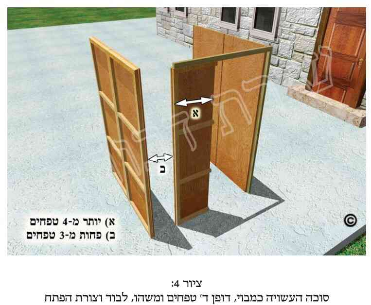

א. דיני הסכך רבים הם, ולכן חילקנו אותם לשלושה פרקים: פרק אחד (הוא פרקנו) עוסק בעניני כשרות הסכך מצד החומרים והדברים שמהם מותר לעשות את הסכך. פרק שני (פרק ה') דן במיקום הסכך, כמוּתו, דיני פרגולה ועוד. ופרק שלישי (פרק ו') עוסק במעשה הסיכוך, בכוונת הסיכוך, מי ראוי לסכך, ואלו דברים חיצוניים (מעל הסכך ומתחתיו) פוסלים את הסכך או אוסרים את הישיבה תחתיו.
ב. כתוב בתורה (דברים פרק ט"ז פס' י"ג): חג הסֻּכֹּת תעשה לך שבעת ימים, באָספך מגָרְנך ומִיִקבך". והסבירו חכמינו זכרונם לברכה, שכוונת הפסוק שיש לעשות סכך ממה שאוספים מפסולת הגורן והיקב, והיינו קש ותבן מהגורן, וזמורות ענבים (ללא ענבים) מהיקב.
ואין הכוונה הינה שצריך הסכך להיות דווקא מפסולת הגורן והיקב, אלא שהתורה אמרה שצריך שתהיינה לסכך התכונות של פסולת הגורן והיקב, והיינו שיתקיימו בו שלושה תנאים:
1) שיהא הסכך עשוי מדבר הצומח מהארץ.
3) שיהא עשוי מדבר שאינו ראוי לקבל טומאה.
אלה התנאים שהינם מהתורה. וחכמינו ז"ל הוסיפו עוד כמה תנאים, כפי שיבואר בהמשך הפרק (בעיקר מסעיף כ"ב ואילך).
ג. דבר שאינו צומח מהארץ, אף אם מקורו מהארץ ואינו ראוי לקבל טומאה, פסול הוא לסכך. ולכן כל סוגי המתכות, וכן האדמה עצמה וגושי עפר, פסולים לסכך. כמו כן עורות בעלי חיים, אף שחיים הם על הארץ, פסולים מלשמש כסכך.
ד. צמחים שאינם גדלים על הקרקע אלא בעציץ (בין שהינו נקוב בתחתיתו ובין שאינו נקוב), לדעת כמה פוסקים כשרים הם לסכך לאחר שתלשו אותם מהעציץ. ודין צמחים שגדלו כגידולי מים (כגון על צמר גפן), ראה כאן במקורות.
ה. כפי שכתבנו לעיל, צריך הסכך להיות תלוש ולא מחובר לקרקע. ולכן אסור לסכך בענפי אילן כשהאילן מחובר לקרקע, כגון עץ דקל, גפן וכדומה.
ו. דבר שהיה תלוש ולאחר מכן נטעו שוב בקרקע, כגון ענף שיש בו עלים, הריהו כשר לסכך כל עוד לא התחבר מחדש (היינו לא השריש). ואם לקחו קורות עץ (התלושים מהקרקע), וחיברום במסמרים לקירות הבית ועשו מהם תקרה, ראה הדין לקמן בפרק ה' (בסעיף ל"ג ובהערה צ"ט).
ז. מי שלא עשה כפי ההלכה, אלא סיכך את סוכתו בענפי אילן המחובר לארץ, אף אם עשה כן לאחר העמדת הדפנות, אין הסוכה כשרה עד שיקצוץ את הענפים הללו מהאילן, וינענע אותם באופן המבואר לקמן בסעיף מ"ט.
ח. יש מהפוסקים שכתבו שמותר לקצוץ ענפים של עצי מאכל (כמובן ברשות) לצורך סכך. ובפרט מותר הדבר כשאינו קוצץ את כל העץ אלא רק את חלקו, או כשאין לו סכך אחר, או שענפי העץ מפריעים להכשר הסוכה. ומכל מקום עדיף לעשות זאת על ידי גוי. ועוד בענינים אלה ראה כאן במקורות, ולקמן (בפרק ז' הערות פ"ז ופ"ח).
ט. עוד מדיני סכך המחובר לקרקע, כגון סכך המחובר לאילן המעורב עם סכך כשר (תלוש), ועוד מיקרים, ראה כאן במקורות, ובפרקים הבאים.
י. כפי שכתבנו לעיל, כל דבר הראוי לקבל טומאה פסול הוא לסכך. ודבר זה אמור בין אם הדבר מקבל טומאה מהתורה ובין אם מקבל טומאה מדרבנן, כמבואר כאן במקורות.
יא. כיון שכל דבר הראוי לקבל טומאה אפילו מדרבנן פסול הוא לסכך, לכן כלים, אף אם מקבלים הם טומאה רק מדרבנן, פסולים הם לסכך. וכלי הראוי לקבל טומאה מהתורה, אף אם נשבר, כך שעתה אינו ראוי הוא לקבל טומאה, פסול הוא לסכך. ואם הכלי היה ראוי לקבל טומאה רק מדרבנן, ולאחר מכן נשבר, למנהג האשכנזים מותר לסכך בו בשעת הדחק, והספרדים מחמירים יותר בכך.
יב. אין לסכך בכלי עץ קצת רחבים שניתן להניח עליהם דברים, אף שאין ברוחבם ארבעה טפחים (שהם שלושים ואחד ס"מ), ואין להם בית קיבול.
יג. אין לסכך בדברים הראויים למאכל אדם (אננס, ענבים וכדומה). ויש מתירים לסכך בדברים שבני אדם אוכלים אותם רק לרפואה. ולדעת כולם מותר לסכך בדברים הראויים רק למאכל חיות או בהמות, וכן מותר לסכך בצמחים המיועדים לריח או ליופי ואינם מאכל אדם.
יד. הרוצה לסכך בענפים של עצי פרי, ויש בענפים פירות, רשאי לסכך בהם אם הענף מרובה בשיעורו על הפירות. אך אם הפירות מרובים על הענף, אין לסכך בהם, כמפורט כאן במקורות. ואם מותר לסכך במכבדות של תמרים שיש בהן תמרים, ראה כאן במקורות.
טו. מחצלת שטוחה (ללא שפה) מקנים או מקש, בין שהיא ראויה לשכיבה עליה ובין שאינה ראויה כל-כך לשכיבה עליה. אם היא קטנה בגודל אדם הרי שאין לסכך בה, אלא אם כן עשאה במיוחד לשם סכך. ולמנהג האשכנזים תלוי הדבר במנהג רוב בני העיר בכך, והיינו לאיזה שימוש בני אותה העיר מייעדים מחצלת כזו. ואם המחצלת הינה גדולה מקומת אדם הרי שמותר לסכך בה, אלא אם כן עשאה במיוחד לשם שכיבה. ושוב, למנהג האשכנזים תלוי הדבר אם מנהג המקום לשכב עליה או לעשותה לשם סכך. ובעניין אם יוצאים ידי חובה לפחות בדיעבד כשסיכך בדברים אלה, ועוד בענין זה, ראה כאן במקורות ובסעיף כ"ה.
טז. אין להשתמש בחבלים של פשתן ולא של קנבוס לצורך הסכך. ועוד מדיני סכך מפשתן, קנבוס, צמר גפן וכדומה, ראה כאן במקורות.
יז. אין לסכך את הסוכה בנייר ומוצריו (כקרטון וכדומה). והדבר אמור הן בנייר העשוי מעץ ושאר צמחים, והן בנייר העשוי מבד וכדומה. ומכל מקום מותר לחפות את הסכך הכשר בנייר (כגון שרשראות צבעוניות מנייר) על מנת לנאות את הסכך.
יח. אין לסכך את הסוכה בזכוכית, ולא ביריעות פלסטיק או נילון.
יט. ישנם סולמות שמותר להניחם כחלק מהסכך (וכל שכן להניח את הסכך עליהם, או להניחם על הסכך כדי שהסכך לא יעוף ברוח), וישנם סולמות שאסור לעשות בהם כן, כמבואר במקורות.
כ. מותר לצבוע את הסכך בצבע. ומותר לצובעו גם בצבעי זהב וכסף, ואף כשיש בצבע ממשות. וטוב להחמיר ולהמנע מלצפות את הסכך (כגון פלפונים) בפורמייקה.
כא. כפי שאמרנו, הצורך בקיום התנאים הנ"ל הינו כבר מהתורה (חוץ מכמה מהם, כמבואר כאן במקורות), ולכן אם חסר אפילו תנאי אחד מהדברים שחיובם מהתורה, הרי שהסכך פסול אף בדיעבד. ולגבי מציאות שאין מתקיים בה תנאי שהינו מדברי חכמים, ראה לקמן בפרקנו (בסעיף ל"ד).
כב. כפי שכתבנו לעיל (בסעיף ב'), ישנם כמה תנאים שחכמינו ז"ל הוסיפו על מנת שהסכך יהיה כשר (אף על פי שמן התורה הדבר היה כשר ללא תנאים אלה), ואלו הם התנאים:
1) דבר שבעבר היה ראוי לקבל טומאה, פסול הוא לסכך אף על פי שעתה אינו ראוי הוא לקבל טומאה. ויש מתירים במיקרים מסוימים.
2) צריך שגם בעתיד הדבר לא יהיה ראוי לקבל טומאה (כגון פשתן שממלאים ממנו כרים וכסתות). וגם כאן יש מיקרים שמקילים בהם, כמבואר במקורות.
3) שלא יהא הסכך עשוי מנסרים הרחבים ארבעה טפחים או יותר.
4) שלא יהא הסכך עשוי מכלי עץ הרחב קצת, שניתן להניח עליו דברים, או שהוא תשמיש אדם, אף על פי שאינו רחב ארבעה טפחים ואין לו בית קיבול אלא הינו שטוח.
5) שלא יהא הסכך מדבר שהינו מגידולי קרקע, אך השתנתה צורתו וכבר אינו נראה כגידולי קרקע.
6) שלא יהא הסכך עשוי מחבילה של קני סוף, עצים, קש או זרדים.
7) שלא יהא הסכך עשוי מענפים שהעלים שלהם נושרים.
8) שלא יהא הסכך מדבר שריחו רע.
9) שלא יהא הסכך עשוי ממחצלת, אף שאינה מיועדת לשכיבה.
10) שלא יהא הסכך מדבר שממהר להתייבש וליפול, באופן שיווצרו חללים בסכך ויפסל הסכך (אך יש אומרים שדבר זה פסול כבר מהתורה).
וישנם פרטי דינים רבים לגבי כללים אלה, ובפרט שלעיתים הם מותרים, וכפי שיבוארו בס"ד בהמשך פרקנו.
כג. ישנם כמה סוגי סכך שאסרו חכמינו זכרונם לברכה להשתמש בהם מטעם "גזירת תקרה". פירוש הדבר, שבמקום שיש נוהגים לעשות את תקרות הבתים כל ימות השנה מדבר מסוים, גזרו חז"ל שלא יסככו באותו דבר את הסוכה, שמא יאמר אדם: כיון שממילא מותר לי לסכך בסכך זה, הרי שיכול אני כבר להשאר בחג הסוכות בביתי, שגם בו יש תקרה כזו, וישאר בביתו. וזה ודאי אסור. לכן אסרו זאת חז"ל. וישנן כמה דוגמאות לכך, וכדלקמן.
כד. בשל "גזירת התקרה" הנ"ל, אסור לסכך את הסוכה בקורות עצים שרוחבם ארבעה טפחים (שהם כשלושים ואחד ס"מ. ויש אומרים שהם כשלושים ושבעה וחצי ס"מ) או יותר. ואף אם הופכם על צידם, כך שעוביים הצר מסכך את הסוכה, אסור לסכך בהם. ואם רוחבם של העצים פחות מארבעה טפחים, מעיקר הדין מותר לסכך בהם אף אם הם משופים ודומים לכלים, אלא שלמעשה נהגו להחמיר ולהמנע מלסכך אף בהם. וכתבו כמה פוסקים, שבשעת הדחק, כשאין לו סכך אחר מותר לסכך בקורות עץ שרוחבם פחות מארבעה טפחים, ואם אין לו גם קורות כאלה לסכך בהם, אז מותר אף אם רוחבם יותר מארבעה טפחים. וראה עוד לקמן (בסעיף ל"ד) וכאן במקורות.
כה. בשל גזירת התקרה, אין לסכך במחצלות במקום שנוהגים לשים אותן כתקרה.
כו. גג המכוסה על ידי שני משטחים גדולים, והם מחוברים על ידי צירים לשלד הסוכה באמצעיתה, כך שניתן להעמיד את המשטחים על צידם (בצורה מאונכת) באמצע הסוכה, ולאחר מכן לסכך במקום שהיו המשטחים, כתבו הפוסקים שמותר לעשות כן כל עוד רוחב שני המשטחים (העומדים במקום הסכך) מאהיל על הסוכה פחות מארבעה טפחים (שהם כשלושים ואחד ס"מ. ויש אומרים שהם שלושים ושבעה ס"מ). ואם משטחים אלה נמצאים לא באמצע הסוכה, אלא סמוך לדפנותיה, או שהם בצורת "אקורדיון", ראה הדין במקורות.
כז. עוד מדיני "גזירת תקרה", ראה כאן במקורות.
כח. למרות שמותר לסכך על ידי קני סוף חלולים (אם אין להם בית קיבול שנעשה בצורה מלאכותית), מכל מקום אסור לסכך את הסוכה על ידי קנים המחוברים כחבילה. וכן אסור לסכך על ידי חבילות של עצים, קש או זרדים, כמבואר כאן במקורות.
כט. פירות וירקות, בין אם ראויים למאכל אדם ובין אם אינם ראויים לכך, אם דרכם להתייבש מהר ועתידים הם לנשור לפני סוף החג, נחשבים הם כאויר, ואם יש בהם שלושה טפחים (שהם עשרים ושלושה ס"מ. ויש אומרים שהם עשרים ושמונה ס"מ), פוסלים הם את הסוכה מיד בתחילת החג כדין אויר בסכך המבואר לקמן (בפרק ה' סעיף כ"א ואילך). ואם אין דרכם של פירות וירקות אלה להתייבש ולנשור תוך זמן זה, דינם כסכך פסול (ולא כאויר), ולכן אם הם באמצע הסוכה הריהם פוסלים את הסוכה רק אם יש בהם ארבעה טפחים (שהם שלושים ואחד ס"מ. ויש אומרים שהם כשלושים ושבעה ס"מ).
ל. ולא פירות וירקות בלבד, אלא כל דבר שדרכו להתייבש ועתיד הוא לנשור לפני סוף החג, נחשב הוא כאויר כבר מיד בתחילת החג, ופוסל את הסוכה אם יש בו שיעור של שלושה טפחים, כנ"ל בסעיף הקודם.
לא. חכמינו ז"ל אסרו לסכך בענפים וצמחים שהעלים שלהם נושרים. אך אם העלים נושרים רק בשעה שיש רוח, מותר לכתחילה לסכך בענפים וצמחים אלה.
לב. ועוד אסרו חכמינו ז"ל לסכך בעשבים וצמחים שיש להם ריח רע. ואם בכל אופן עבר עבירה וסיכך בהם, הרי שהסוכה כשרה בדיעבד. אך אם הריח רע מאוד באופן שאדם אינו יכול לסובלו, אסור לסכך בצמחים אלה מן התורה, ונראה שהסוכה פסולה אז אף בדיעבד.
לג. אין לסכך בענפי אילן ובפרחים שיש בהם תולעים, זבובונים, יתושים וכדומה, העלולים ליפול לתוך המאכלים. ואם עבר וסיכך בהם, יחליפם בסכך כשר בהקדם האפשרי (אך לא בשבת ולא ביום טוב). וראה עוד במקורות.
לד. יש מהפוסקים שכתבו, שבשעת הדחק, כשאין אפשרות לסכך בסכך כשר, יש לסכך בסכך שפסולו הינו מדרבנן (היינו בשל גזירות חז"ל), אך מן התורה הינו כשר (מלבד במקרים מסוימים שאף בדיעבד אינו יוצא חובה בסכך כזה). ודנו הפוסקים לגבי מקרה שמסכך בסכך הכשר מהתורה ופסול מדרבנן, אם יברך את ברכת "לישב בסוכה". ולמעשה אין לברך ברכה זו על סוכה עם סכך כזה, אלא אם כן כתבנו במפורש במיקרים מסוימים שיש לברכה. ומכל מקום לכשימצא סכך הכשר אף מדרבנן, יחליף את הסכך הכשר במקום הסכך הפסול, ואז יברך ברכה זו, כמבואר כאן במקורות. אלא שאין להחליף את הסכך לא בשבת ולא ביום טוב. וראה עוד לקמן בסעיף ל"ח.
לה. למנהג הספרדים, מעיקר הדין המעמיד של הסכך (היינו הדבר שהסכך מונח עליו) אינו צריך להיות בעצמו מדבר הכשר לסכך (ואת ההשלכות לכך ראה בסעיף הבא). וספרדי המחמיר בכך תבוא עליו ברכה. ואילו למנהג האשכנזים נכון לכתחילה להזהר ולהעמיד את הסכך רק על גבי דבר הכשר לשמש כסכך. אך גם למנהגם, כשאין אפשרות אחרת, מותר להעמיד את הסכך על דבר הפסול לסכך. וכן אם כבר העמידו את הסכך על דבר כזה, ודאי שהסוכה כשרה בדיעבד.
לו. לדעת הסוברים שאין להעמיד את הסכך על גבי דבר הפסול לסכך (מעמיד לסכך), הרי שאין להניח את הסכך על גבי קורות ברזל, צינורות ברזל, פסי מתכת וכדומה, וממילא אין להניח את הסכך על גבי שלד של "סוכה לנצח", וכן על מסגרת מתכת של מרפסת סגורה. וראה עוד לקמן (בסעיפים מ' ומ"ב).
לז. לדעת הסוברים שאין להעמיד את הסכך על גבי דבר הפסול לסכך, הרי שאסור גם להניח דבר כזה על גבי הסכך כדי להחזיקו (כגון שלא יעוף ברוח).
לח. אף לדעת האוסרים להעמיד את הסכך על גבי דבר הפסול מלשמש כסכך, יש לאסור זאת דוקא בדברים הפסולים לסכך מן התורה. אך גם לדעת המחמירים הנ"ל, מותר להעמיד את הסכך על גבי דברים שרק מדרבנן פסולים הם לסכך. וכן מותר להעמיד את הסכך על גבי דברים שאין שכיח שמסככים בהם.
לט. במקרה והסכך יכול לעמוד ברוח מצויה גם ללא המעמיד שפסול לסכך, מותר לחזקו ולהעמידו על ידי תוספת של מעמיד הפסול לסכך.
מ. אף המחמירים שלא להשתמש כמעמיד לסכך בדבר הפסול לשמש כסכך, מכל מקום רשאים הם להניח על המעמיד הפסול לסכך (כגון שלד מתכתי של "סוכה לנצח") דבר אחר שהינו כשר לסכך, כגון ענפי דקל, שמעתה הוא ישמש כמעמיד לסכך, ועל ענפים אלה יניח את הסכך (וראה עוד לקמן בסעיף מ"ג).
מא. מותר להעמיד את הסכך על גבי כותל אבנים, וכן על קיר בטון וקורות בטון.
מב. אף לדעת האוסרים להעמיד את הסכך על גבי דבר הפסול מלשמש כסכך, מותר לחבר את חלקי הסכך בינם לבין עצמם, וכן לחברם אל דפנות הסוכה, על ידי דבק שקוף, וכן על ידי חוטי פשתן וכותנה שאינם מעובדים (ואם הינם מעובדים נחלקו הפוסקים בכך. והמיקל יש לו על מה לסמוך). אך לדעת האוסרים הנ"ל אין לחבר את הסכך כנ"ל, על ידי חוטים סינטטיים כחוטי נילון וכדומה, לא על ידי אזיקונים מפלסטיק, ולא על ידי חוטי ברזל. ואם מותר לחברו על ידי מסמרים, ראה כאן במקורות. וכל זה מדובר רק מצד איסור מעמיד. אך לגבי חיבור הסכך על ידי דברים אלה הלכה למעשה, כגון מצד חיבור קבע הפוסל את הסוכה, ראה לקמן (בפרק ה' סוף הערה צ"ח).
מג. יש מגדולי הפוסקים האשכנזים שהחמיר, שאף המעמיד של המעמיד של הסכך (היינו שהסכך עומד על גבי דבר מסוים, ודבר זה עומד על גבי דבר אחר), צריך להיות דבר הראוי לשמש כסכך. אך לרוב ככל הפוסקים אין צריך להחמיר בכך ולכן מותר לדעת רוב הפוסקים לחבר את דפנות הסוכה ביניהן על ידי דברים המקבלים טומאה, וכן על ידי חבלים וכדומה (כנ"ל בסעיף מ').
מד. עוד מדיני ה"מעמיד" של הסכך, ראה כאן במקורות.
מה. דנו הפוסקים לגבי כשרות סכך העשוי מ"פְּלַפוֹנים" (נסרים דקים מעץ). יש שהתירו זאת ללא חשש, ויש שאין דעתם נוחה מכשרותו לסכך. והמנהג פה בירושלים עיה"ק מקדמת דנא היה לסכך בסכך כזה על פי גדולי ירושלים, צדיקיה וגאוניה, ואין לערער אחר מנהג זה המיוסד על גדולי הדורות. ומכל מקום המסכך את סוכתו ב"פְּלַפוֹנים", צריך להקפיד על דברים מסוימים, כמבואר כאן במקורות.
מו. נהגו רבים בדור האחרון לסכך את הסוכה בענפי דקלים, כיון שבשל כך נפתרות הבעיות שעלולות להיות בסכך, וכן ענפים אלה מצויים ויפים. אמנם בשנים האחרונות, מטעמי נוחות, החלו רבים לסכך במחצלות הקלועות על ידי סיבים (הנקרא "סכך לנצח"), למרות שהן פחות נאות מענפי הדקלים. וראה גם בסעיף הבא.
מז. בענין "סכך לנצח" המיוצר בשנים האחרונות. סכך זה עשוי מקני סוף המחוברים על ידי חוט המושחל בהם, ועל ידי כך הם נעשים כמחצלת שקל לסכך עמה. בשנים הראשונות לייצורו היה סכך זה שנוי במחלוקת הפוסקים בדורנו אם הינו כשר. האוסרים פסלוהו מכמה טעמים, מהם משום "גזירת תקרה", או משום שהמחצלת נחשבת ככלי המקבל טומאה, או משום שהחוטים (המחברים את הקנים) מקבלים טומאה. אך ב"סכך לנצח" כפי שהוא מיוצר בשנים האחרונות וכיום (בשנת תש"ע) נפתרו רוב ככל הבעיות הנ"ל, ודעת כמעט כל הפוסקים שהינו כשר לסכך. ומכל מקום יש לוודא שה"סכך לנצח" נעשה תחת השגחה ראויה ויש לו אישור מרבנים מוסמכים.
מח. נחלקו הפוסקים לגבי כשרות הסכך שהומצא לאחרונה, המונע את ירידת הגשמים לתוך הסוכה, כמבואר כאן במקורות. ולמעשה לא ראינו שנהגו לסכך בו.
מט. בס"ד כתבנו כמה פעמים לגבי מיקרים שהנחת הסכך לא היתה כהלכה, שלכן צריך לנענעו, אף על פי שהוא כבר מונח במקומו. וכוונת הדבר, שיגביה מעט ענף אחד לבדו ויניחנו, ויגביה מעט ענף שני ויניחנו, וכן יעשה לכל ענפי הסוכה שהונחו שלא כדין. וכשמניח את הענפים, יתכוון להניחם לשם צל (ועדיף שיתכוון להניחם גם לשם מצוות סוכה). ולגבי שעת הדחק, ראה כאן במקורות.
נ. במיקרים שנחלקו הפוסקים אם הסוכה כשרה, כיצד יש לנהוג אז, ראה לעיל (בפרק ג' סעיף מ"ו, ולעיל בפרקנו בהערה פ"א).
נא. נחלקו הפוסקים כיצד ינהג מי שסיכך את סוכתו בסכך כשר, ולאחר מכן הביאו לו סכך מהודר. יש אומרים שיחליף את הסכך הכשר בסכך המהודר, ויש אומרים שלא יחליפנו אלא ישאירנו כך.
נב. בענין אם מותר לסכך בענפים ובשאר צמחים שגדלו בירושלים המקודשת (היינו חלק מהעיר העתיקה פה בירושלים ת"ו, וחלק מסביבותיה), ראה כאן במקורות.
נג. עוד מדיני הדברים הפסולים לסכך בהם, ראה כאן במקורות.
&הערות:
[1] א. כיון שהגענו לדון בדיני הסכך, נזכיר את דברי הריטב"א בחידושיו לסוכה (ד"ב, א'), וז"ל: סוכה וכו', פירוש, הסכך הוא הנקרא סוכה בכאן וברוב המקומות. אבל פעמים שנקראים סוכה הסכך והדפנות. ע"כ. הב"ד בסה"ס (במיל' ריש פ"ח, רס"ב). והיינו הסוכה נקראת ע"ש הסכך. דהסכך עיקר. וכ"נ מהלכות רבות של הסוכה, דעיקר הקפידא הינה גבי הסכך, שיעשוהו לשם צל או לשם סוכה. ור' גם בכה"ח (סי' תרכ"ה סקי"א) שכ' שדוקא קודם שנותן הסכך על גג הסוכה יאמר "ליקבה"ו הריני בא לקיים מצות עשיית סוכה" וכו'. וע"ע בכה"ח (סי' תרכ"ה ס"ק א' וי"א, סי' תרכ"ט סק"א, וסי' תרל"ט ס"ק ח' וט') שהסביר הטעמים עד"ה עפ"י הזוה"ק ושעהכ"ו (עמ' ק"ב. ועיי"ש בעיקר בדרושי הסוכה, דרוש ד' ואילך), שג' הדפנות הם נה"י דאמא (הבינה), ב' הדפנות השלמות הם נ"ה, ודופן שלישית הקצרה הינה היסוד שהוא קצר. ואילו הסכך הוא ת"ת דאמא, וכל הסוכה הינה או"מ, דאמא מקיפה את זו"נ ומשפיעה עליו. וישנה בחינה אחרת, שהסכך הוא בכתר. ועוד כ' שם כה"ח (רס"י תרכ"ט) שכשמסכך בענפי האילן יכוון שאילן הוא גימטריה סוכה וגם גימטריה של שם הוי"ה בצירוף שם אדנו"ת. והיינו עיקר הסוכה הוא הסכך. עיי"ש. ואני אין לי יד ורגל בכל הדברים הללו, והעתקתי זאת רק למבינים שזכו לחכמה זו.
[2] ב. בענין מה שכתבנו שדיני הסכך רבים הם. אמנם מרן זיע"א כ' בב"י (רס"י תכ"ט ד"ה "תניא") שבסוכות א"צ ללמוד את הל' החג ל' יום קודם החג, כבפסח, משום דאע"ג דאיכא מצות סוכה ולולב, א"צ ללמוד בהם כ"כ דינים, דאפי' סוכת גנב"ך ורקב"ש כשרה, ובדפנות סגי בשתים כהלכתן ושלישית אפי' טפח (סוכה ד"ו,ב', וכדלעיל בפרק ג'), ולולבים ואתרוגים רובם כשרים. עכת"ד. ומי אני ומה אני שאחלוק ע"ד מרן זצ"ל וזיע"א. אלא שמ"מ הרואה יראה שבשו"ע כ' מרן כמה וכמה סימנים בהל' סוכה ולולב והקשור להם (ארבעים וארבעה סימנים), ורבים מהם גבי הסכך, לכן בס"ד העדפנו לחלק את הל' הסכך לכמה פרקים, כדי שלא יהא פרק אחד ארוך ("מאריך טרחא"), אלא עדיף פיסקי פיסקי.
[3] ג. עיקר ד"ז איתא במשנה סוכה (די"א,א'), גמ' (שם די"ב,א'), ב"י (רס"י תרכ"ו). לבוש. מ"ב (סי' תרכ"ט סק"א), כה"ח (סי' תרכ"ט סק"א) וש"פ.
ומה שכתבנו שאשכולות הענבים יהיו ללא ענבים, כ"כ בשעה"צ (רס"י תרכ"ט) עפי"ד מרן (שם סעי' י').
[4] ד. עפ"י הגמ' בסוכה (די"ב,א'). וכ"כ הפוס' הנ"ל בהערה הקודמת.
[5] ה. משנה וגמ' בסוכה (שם). מרן בב"י ובשו"ע (סי' תרכ"ט ס"א). מ"ב, כה"ח וש"פ הנ"ל.
כיון שכל ג' תנאים אלה דרשינן מקראי, הוי דאו' ולעיכובא [פמ"ג. בה"ל (רס"י תרכ"ט ד"ה "צומח"). כה"ח (סק"ב) וש"פ] וכדלקמן.
[6] ו. גמ' סוכה (שם). מרן בב"י ובשו"ע (סי' תרכ"ט ס"א וסי"ג). מ"ב (רס"י תרכ"ט). כה"ח (רס"י תרכ"ו ורס"י תרכ"ט) וש"א.
[7] ז. משנה וגמ' סוכה (שם). מרן בב"י ובשו"ע (סי' תרכ"ט סעי' א', ב' ועוד) וש"פ.
ומה שכתבנו שכ"ה אף שטרם קיבל טומאה אלא גם אם רק "ראוי" לקבל טומאה, אפ"ה פסול הוא לסכך, כ"כ הט"ז (סי' תרכ"ט סק"ב), המ"ב (סק"ב), כה"ח (סק"ג) וש"פ.
[8] ח. מרן (סי' תרכ"ט ס"א).
[9] ט. מה שכתבנו גבי מתכות, ג"ז כ' מרן (שם). וכגון חתיכות מתכת שלא נעשו מהם כלים, שעדיין אינם מק"ט. ופסולים אע"ג שיסודם מן העפר [מ"ב (סי' תרכ"ט סק"ד) וכה"ח (סק"ח)].
ומה שכתבנו גבי האדמה עצמה, כ"כ הרמ"א (סי' תרכ"ט ס"א), המ"ב (סק"ד) וכה"ח (סק"ח).
ומה שכתבנו שכ"ה גבי גושי עפר, כ"כ בית השואבה וכה"ח (סק"ט).
והטעם לפסול דברים אלה, דבעינן דוקא שיהיו צומחים מהקרקע ולא קרקע ממש [מ"ב (סק"ד). כה"ח (סק"ח)].
ועוד כתבו הפוס' שגם אבנים פסולים לסכך, מהטעם הנ"ל [כ"מ מהמ"ב (ססקכ"ב), וכ"כ בית השואבה וכה"ח (סק"ט)].
[10] י. מרן (סי' תרכ"ט ס"א) עפ"י רש"י והרא"ש. והסבירו, דאע"ג שגידולו מהארץ (היינו שגודל על הארץ. מ"ב סק"ג) ואינו מק"ט, מ"מ כיון שאינו צומח מהארץ, אין מסככים בהם.
[11] יא. כ"כ להקל באג"ט (מלאכת דש. סעי' ד' סק"ח אות ב'). סה"ס (במיל' לפ"ח סק"ט). פסתש"ו (סי' תרכ"ט סק"א). והטעם, דגם זה בכלל צומח [וכ"כ האג"ט (במלאכת קוצר סי' נ"ד סק"ח) וסה"ס (שם)]. ואם בעציץ לא נקוב התירו, כ"ש בנקוב, דמחובר טפי לקרקע מקרי.
אמנם ראה בח"א (כלל קנ"ב ס"ג) ובנשמ"א (שם) שהביא צדדים להקל ולהחמיר (גבי ד' מינים לסוכות) בין גבי עציץ נקוב ובין שאינו נקוב. ולמעשה נשאר בצ"ע (לפחות גבי עציץ שאינו נקוב). ובאמת האריכו כבר הפוס' גבי ענינים אלה הן גבי ערלה, הן גבי ביכורים, מעשרות וברכות הנהנין על צמחים שגדלו בעציץ נקוב ושאינו נקוב [ראה בנשמ"א (שם) שהב"ד פוס' רבים שדנו בענינים אלה. בכה"ח (סי' קס"ח סקע"ז וסי' תע"ג ס"ק קט"ו), ומה שכתבנו בס"ד במקראי קודש (הל' ליל הסדר. פ"ח ריש הערה ח') ובשאר ספרים. ואכמ"ל]. ומ"מ נראה שאין הדבר פשוט להקל, בפרט גבי עציץ שאינו נקוב. ומ"מ כבר כתבו כמה פוס' להקל בזה, ונראה שבמקום שניתן לסכך בסכך מעץ שגדל ישירות מהקרקע, יש להחמיר בזה, דבדאו' עסקינן.
[12] יב. הח"א בנשמ"א (כלל קנ"ב סק"א) דן גבי ד' מינים לסוכות בכה"ג שהעציץ עומד בבית שאין בו עפר והביא צדדים להחמיר. והוסיף עפי"ד רבינו מנוח והב"י, שאם יש דבר המפסיק ממש בין הצמח לקרקע, לכו"ע הוי תלוש. ועיי"ש שהאריך בזה. ולמסקנה לא ברור מדבריו להקל במקרה כני"ד, אמנם בני"ד חמיר טפי, משום שהצמח אינו גדל כלל ע"ג קרקע אלא על צמר גפן וכדו'. ומדברי המ"ב (סי' תרכ"ט סק"ג) שהסביר שצמח אע"ג שגדל על הארץ, מ"מ פסול הוא לסכך כיון שאינו צומח ישירות מן הארץ (וכ"כ כה"ח סק"ז), נראה מכך שגם בני"ד לכאו' יש להחמיר. ואילו בשו"ת מחזה אליהו (פאלק. או"ח סי' כ"ה סק"ו) כ' שיש לדון גבי ני"ד להקל, משום שהמין הוא מין של ג"ק וא"צ קרקע ממש [הב"ד סה"ס (במיל' לפ"ח סק"י) ופסתש"ו (סי' תרכ"ט סק"א)]. אמנם לבי מפקפק בהיתר זה, דלאו מילתא ברירא היא שא"צ קרקע ממש, ובפרט שבדאו' עסקינן. לכן למעשה צ"ע.
[13] יג. עיקר ד"ז כתבו מרן (סי' תרכ"ט סעי' א' וי"ג) והמ"ב (סי' תרכ"ו ססק"א). והטעם לאיסור, כתב רש"י (סוכה די"א,א') משום דכתיב "באספך", והיינו לאחר תלישה (עיי"ש, ובגמ' שם בע"ב). והריטב"א (שם די"א,ב') כ' דמחובר פסול מדין תולמ"ה, אלא שישנם ב' סוגי תולמ"ה, א' בידי אדם וא' בידי שמים. וע"ע באג"ט (מלאכת קוצר, סעי' י"א סקכ"ב) שכ' עוד טעמים לפסול סכך שהוא מחובר.
ומה שכתבנו כדוגמא גפן, כ"כ המ"ב (סי' תרכ"ט סקל"ו. והוסיף דה"ה דלעת). ואנו הוספנו דה"ה דקל.
[14] יד. עיקר ד"ז שדבר שנתלש מהקרקע ואח"כ חיברו לקרקע, דכשר, כ"כ מרן בב"י (סי' תרכ"ו) בשם תה"ד. וכ"כ המ"ב (סי' תרכ"ט סקל"ו) וכה"ח (אותו סי' סקע"ה). והוסיפו שכן מוכח מהרי"ף פ"ק דסוכה גבי מפקפק או נוטל א' מבינתים, דלא פסיל מחובר בכה"ג. ע"כ. וכמש"כ בשו"ע (סי' תרל"א ס"ט).
יש להעיר שדין תלוש ולבסוף חיברו שנוי במחלו' האמוראים. ראה גמ' חולין (דט"ז,ב') ותוס' ב"ב (דס"ו,ב' ד"ה "בעי").
ומה שכתבנו שכ"ה גבי ענף שיש לו עלים לשם צל על הסוכה, ותחבו לארץ שהוא כשר כל עוד לא השריש, כ"כ הפמ"ג והמ"ב (סי' תרכ"ו סקי"ד). ועיי"ש דהוא דוקא כשתחבו לשם צל על הסוכה. אך אם עשה כן שלא לשם צל, אע"ג שכשהגיע זמן סוכה כיוון שיהא לשם צל, פסול משום תולמ"ה. ע"כ. ובס"ד נלע"ד דה"ה עץ שעקרו ממקומו או יחור שהרכיבו ע"ג גזע, שלכאו' כל זמן שלא השרישו או התחברו לגזע, חשיב תלוש. ולאור הנ"ל כ"ה דוקא אם כשחיברם לקרקע או לגזע כיוון שיהא לשם צל.
[15] טו. ראה תה"ד (סי' פ"ט), ב"י (סי' תרכ"ו שהב"ד תה"ד הללו), מרן (סי' תרל"א ס"ט), מ"א (סי' תרכ"ו סק"ו, סי' תרכ"ז סק"ב בשם האגודה, וסי' תרכ"ט סקי"א בשם הב"ח), כה"ח (סי' תרכ"ט סקע"ה), ולקמן (בפרק ה' סל"ג ובהערה צ"ט).
וענין קורות המחוברות לדפנות ע"י מסמרים, יש לדון מכמה צדדים: 1) מדין דירת ארעי או קבע [שי"א שהאיסור לחבר במסמרים הינו מדאו' (שעה"צ סי' תרל"ג סק"ו עפ"י התוס' בסוכה דף ב'). וי"א דהוי מדרבנן (ט"ז בד' ר"ת. בה"ל סי' תרל"ה ס"א). וי"א דשרי מצד זה לכתחי' (תה"ד. ב"י סי' תרכ"ו)]. 2) יש לדון גם מצד מעמיד. 3) יש לדון מצד שכשעשאו כך כיוון לשם דירת קבע ולא ארעי (ר' ע"כ במרן סי' תרל"א ס"ט). וכמבואר בס"ד כ"ז לקמן (בפ"ה שם).
[16] טז. משנה סוכה (די"א,א' גבי הדלה עליה הגפן). מרן (סי' תרכ"ו ס"ב. וע"ע בסי' תרכ"ט סי"ג). מ"ב (סי' תרכ"ו ס"ק י"ג וי"ד. וע"ע סי' תרכ"ט סקל"ז. סי' תרל"א סקכ"ד וסי' תרל"ו סק"ח). כה"ח (סי' תרכ"ו ס"ק כ"ג וכ"ד וסי' תרכ"ט סקע"ו). וע"ע לעיל (פ"ג סעי' מ"א), גבי עיקר דין העמדת הדפנות לאחר הנחת הסכך. ומ"מ לא סגי בקציצה אלא בעי גם נענוע, דכ' בטור (סי' תרכ"ו) דלא אמרינן קציצתו זו היא עשייתו [וכ"כ הלבוש, הגר"ז, וכה"ח (סי' תרכ"ו סקכ"ד)].
וע"ע לקמן בפרקנו (סעי' כ"א) שכ"א מהתנאים מדאו' הוי לעיכובא, וע"ע לקמן (בסעי' מ"ט) אם קצץ האילן וצריך לנענעו, כיצד ינענע.
ועוד מדברים אלה ר' בסה"ס (במיל' לפ"ח סקמ"א אות ב').
[17] יז. בכריתת עצי פרי ישנן ב' בעיות: 1) איסור "לא תשחית את עצה" (דברים פרק כ' פס' י"ט) 2) חשש סכנה, עפ"י צוואת רבי יהודה החסיד (סי' מ"ה).
באשר ללאו דבל תשחית, ישנם כמה צדדים להקל בני"ד, וכגון המתירים כיון דהוי צורך מצוה (והיינו בני"ד סיכוך הסוכה). שכ"כ הבאר שבע (מס' תמיד. ריש פ"ב), השלטי גיבורים (מס' ע"ז פ"א), ספר פנים יפות (לבעל ההפלאה) עה"ת (עה"פ "לא תשחית" הנ"ל). וכ"כ בשו"ת דובב מישרים (ח"א סי' קל"ד וח"ג סי' פ'), שו"ת דברי חיים (ח"ב יו"ד סי' נ"ט) ושו"ת בית יצחק (ח"א סי' קמ"ד). ובשו"ת הר צבי (או"ח סי' ק"ב) צירף טעם זה להתיר בני"ד. וע"ע בדרכ"ת (יו"ד סי' קט"ז סקכ"א) שיטות הפוס' בהא. אמנם כיון שלא כל הפוס' שדנו בזה כתבו טעם זה להתיר, וכיון שיש שהתירו זאת רק בתנאים מסוימים, כבהערות הבאות, לכן לא כתבנו זאת כהיתר פשוט אלא רק שי"א להקל בני"ד.
ובענין הסכנה הכרוכה בקציצת עצי פרי. אמנם כבר הגמ' בב"ק (דצ"א,ב') הזהירה על הסכנה הכרוכה בקציצה זו. ור' מש"כ הגר"ר מרגליות בפירושו מקור חסד (סקס"ב) שכוונת מהר"י החסיד להחמיר אף בעץ מעולה בדמים מה שמעיקה"ד שרי לקוצצו. בשו"ת שאלת יעב"ץ (ח"א סי' ע"ו) כתב, שגם באופן שאין איסור הלכתי בקציצה, עדיין יש חשש סכנה. ואילו בשו"ת בנין ציון (ח"א סי' ס"א) כתב שאם אין איסור בל תשחית אין גם חשש סכנה. ע"כ. וע"ע בכה"ח (יו"ד סי' קט"ז ס"ק פ"ד-פ"ו).
יש מי שכתב, שלא רק האדם שקוצץ האילן הינו בחשש סכנה, אלא גם הרב המתיר הינו בחשש זה [שו"ת תפארת צבי (סי' ו'). הב"ד בספר סוכת שלם ובסה"ס (מיל' לפ"ח סקס"ו)]. וצ"ע אי אותם שהתירו לקצוץ ע"י גוי, והתנו זאת בכך שיאמר לגוי שהגוי עושה זאת על דעת עצמו ולא בשליחות הישראל, האם לדעת התפארת צבי ג"כ נענש אותו רב שמתיר זאת. ושמא תלוי הדבר אם האיסור הוא בפעולה או בתוצאה. ואכמ"ל.
[18] יח. ד' המתירים משום שאינו עוקר כל האילן, זו דעת הגאון משל"מ (פ"ז מאיסורי מזבח ה"ג), ושו"ת שאילת יעבץ (ח"א סי' ע"ו). הב"ד בדרכ"ת הנ"ל, בשו"ת הר"צ (ח"ב או"ח סי' ק"א), סה"ס (מיל' לפ"ח סקס"א) ופסתש"ו (סי' תרכ"ט הערות 64, 63)]. אמנם יש שחלקו על צד היתר זה [ר' משל"מ (שם, דמשמע שהרב באר שבע לא ס"ל להקל מצד זה), ושו"ת בית יצחק (שם, שחושש בזה לאיסור דאו')].
יש להעיר, שצד זה של היתר, בגלל שאינו עוקר את כל האילן, הינו צד חשוב להיתר לקצוץ את ענפי הדקל, שהם הסכך הטבעי המצוי כיום ביותר, כדלקמן בסעי' מ"ו (מלבד "סכך לנצח" שהוא כבר לא כל כך טבעי אלא מעובד בבית חרושת). וכן צד זה מתיר לקצוץ גם ענפי זית וכדו'. ור' עוד בסמוך (בהערה כ').
[19] יט. דכשאין לו סכך אחר הוי שעה"ד, ויש יותר מקום לנקוט כד' המתירים. אמנם יש לדון בזה אי שרי לעבור על איסור דאו' (לדעת הפוס' שאינם מקילים כנ"ל) כדי לקיים מ"ע דסוכה, ולא לבטל כל רגע מ"ע זו אם ישן ואוכל מחוץ לסוכה. ואכמ"ל.
אם יש לו סכך פחות מהודר, ולכן רוצה לקצוץ את ענפי אילן המאכל, דן בזה במשנת יוסף (שביעית. פ"ד, קונטרס דיני השחתת פרי), ולא הכריע בהא (הב"ד בסה"ס, מיל' לפ"ח סקס"ב).
[20] כ. שכ"כ להקל במשנת יוסף (שביעית. פ"ד קונט' השחתת פרי), ובשו"ת הר צבי (או"ח ח"ב סי' ק"ב). הב"ד בסה"ס (במיל' לפ"ח סקס"ג) ופסתש"ו (סי' תרכ"ט סוף הערה 65). וכן היא שיטת הט"ז (יו"ד סי' קט"ז סק"ו) שמותר לקצוץ עץ פרי ע"מ לבנות בית במקומו [ובשו"ת הר"צ הנ"ל (סי' ק"ב) צירף זאת להתיר]. וכמה מהפוס' הנ"ל התנו שיעשה כן דוקא ע"י גוי, וכבהערה הבאה. אמנם היו שאסרו אף לצורך מקומו [תשובת בית יעקב (סי' ק"מ). הב"ד בשו"ת הר"צ (שם)].
בס"ד ישנם לכאו' עוד צדדים להקל בני"ד, והם: 1) במיקרים שבאותו סוג שקוצצים את ענפיו, אין הפירות גדלים על ענפיו (כזיתים, תפוחים וכדו'), אלא הפירות גדלים באופן נפרד מהענפים. וכגון עץ דקל. שבזה לכאו' יש להקל, שהרי אינו פוגע בגדילת הפירות (וישנם זנים של עצי דקל שבכלל אין להם פירות). 2) ויותר מכך. אלא שיש צד גם לעודד את קציצת הענפים, והיא בשלב הקודם לגדילת הפירות, שבו קוצצים חלק מענפי העץ, כדי שה"כח" שהעץ מקבל (ע"י השקיה, יניקת חומרים מהקרקע וכדו') יופנה ברובו לגדילת הפירות שבעץ ולא לשם גדילת ענפים כשלעץ אין צורך בהם. ולכן בחורף גוזמים למשל את עצי הזית, כדי שגדילת העץ תופנה לגדילת הפירות ולא גם לגדילת הענפים (זאת אני כותב כחקלאי לשעבר, אחראי המטעים באחד מהקיבוצים הדתיים בעמק בית שאן). וממילא עפי"ז מובן האיסור לגזום את העצים בשנת השמיטה, שה"ז עוזר לגדילת הפירות.
[21] כא. שכ"כ כמה פוס', שכאשר עושה כן ע"י גוי אין חשש סכנה (והיינו התייחסו מצד הסכנה דצוואת ר"י החסיד, כנ"ל). שכ"כ בשאלת יעב"ץ (ח"א סי' ע"ו), בשו"ת הר"צ (שם סי' ק"א וק"ב. ומדבריו שם נראה שכן צריך מעיקר הדין), ובתשובות והנהגות (ח"א סי' שע"ו). והוסיף הגרצפ"פ זצ"ל בהר"צ שם, שיאמר בפירוש הישראל לגוי, שאין הישראל רוצה שהגוי יעשה הקציצה בשליחות הישראל, ובזה חשש הסכנה יחול על ראש הגוי. ע"כ. הביאו דבריהם בסה"ס (מיל' לפ"ח ס"ק ס"ה וס"ז) ובפסתש"ו (סי' תרכ"ט הערה 65). וע"ע ע"כ במשנת יוסף (שביעית. פ"ד. קונט' דיני השחתת עצי פרי) שהביא בארוכה דברי הפוס' בזה, ובפסתש"ו (שם. הערה 66).
[22] כב. בענין קציצת עצי מאכל שהינם הפקר, כ' ברא"ש (תמיד. דף כ"ח), דעצי פרי מאכל של הפקר ללא בעלות, אין איסור בקציצתם משום בל תשחית, ובשו"ת הר"צ (או"ח סי' ק"ב) צירף טעם זה להתיר קציצת עצי ערלה (משום שערלה אסורה בהנאה, ואיסור הנאה הוא הפקר). הב"ד בסה"ס (במיל' לפ"ח ס"ק ס"ה וס"ח).
ובאשר לקציצת עצי ערלה, כ' בהר"צ (שם) שמעיקר הדין יש לדון להתיר בסוכה, אך מה טוב שיעשה כן ע"י גוי ויאמר לו שאינו עושה כן בשליחות הישראל. והתיר משום צירוף ד' הט"ז דשרי לקצוץ ע"מ לבנות בית במקומו. וד' המתירים לצורך מצוה. ובצירוף הא שערלה אסורה בהנאה והוי כהפקר, וכנ"ל (הב"ד סה"ס שם סקס"ה).
יש מי שהיקל לקצוץ ענפי עצי פרי אם הענפים דקים ורכים (ובצירוף דהוא לצורך מצוה, וכגון שמאהילים על הסוכה). שכ"כ הגר"י גרינוולד זצ"ל (הב"ד פסתש"ו סי' תרכ"ט הערה 67).
[23] כג. דין סכך המחובר לאילן המעורב עם סכך כשר, ר' בשו"ע (סי' תרכ"ו ס"א), ולקמן (בפרק ו' סעיף י"ד והערה ל').
כ' בשו"ת אב"נ (או"ח סי' תס"ו), שאם סיכך הסוכה בשיעור פחות מז"ט בסכך המחובר לקרקע וקצצו (בלי נענוע לשם צל), ואח"כ גמר עשיית הסוכה בסכך כשר, כשרה הסוכה. עכת"ד האב"נ. והגר"ש קלוגר בספר החיים (או"ח סי' תרכ"ו) מחמיר בכל זה, שאם עשה מקצת סכך פסול, אף שלא היה בו הכשר סוכה, לא מהני מה שמוסיף אח"כ סכך כשר, דעכ"פ מקצתו היה פסול. ע"כ. ועוד כתב שם בשו"ת אב"נ, ואם סיכך ו"ט בכשרות והטפח האחרון סיכך מעצמו, שפסול מחמת תולמ"ה (היינו מסכך שהיה מחובר וקצצו מהאילן), כשרה. ע"כ. הב"ד בסה"ס (מיל' לפ"ח סקמ"א. ועיי"ש שלא הסביר מדוע במקרה השני פוסל הגרש"ק, הרי סכך פסול פוסל רק בד"ט ולא בטפח).
עוד מדיני תלוש ולבסוף חיברו, ראה בסה"ס (שם ס"ק מ', מ"ב ומ"ג) בשם התוס' בסוכה (די"א, ב' ד"ה "דשלפינהו"), השה"ג שם בסוגיה, הפמ"ג (א"א סי' תרכ"ט סקי"א), הביכור"י (סי' תרכ"ו סק"ו) וש"א.
[24] כד. כפי שכתבנו בס"ד לעיל, עיקר ד"ז איתא במשנה סוכה (די"א, א') ובגמ' שם (די"ב, א'). ובשו"ע (סי' תרכ"ט סעי' א', ב' ועוד).
ומה שכתבנו שכ"ה אף אם הכלי רק "ראוי" לקבל טומאה, כ"כ הט"ז, המ"ב (סי' תרכ"ט ס"ק ב', ח', ט"ז, כ"ה וכ"ח), כה"ח (סק"ג) וש"פ.
וראה עוד בענינים אלה בגליון רע"א על משניות אהלות (פ"ח מ"ה), בקרבן נתנאל (סוכה פ"א סי' כ"ו סקצ"ג), במקראי קודש [(פראנק. סוכות ח"א סי' י"ט עמ' פ"א). עיי"ש שחכ"א רצה להקל בדבר שרק יקבל טומאה אח"כ, והגרצפ"פ זצ"ל דחה דבריו עפי"ד כמה פוס', ולכן החמיר בזה. וכן הסקנו פה עפי"ד כל הפוס'], ובסה"ס (מיל' לפ"ח ס"ק כ', כ"א וכ"ב).
[25] כה. הא דפסול דבר המקבל טומאה מדאו', כן פשט המשנה והגמ' הנ"ל (בהערה הקודמת). דאם מק"ט מדאו' אינו פסול לסכך, מק"ט מדרבנן לא כ"ש דכשר. א"כ איזה מק"ט פסול לסכך. וכן מוכח מרש"י (סוכה די"ב, ב' ד"ה "סככה"), המל"מ (פי"ד מנגעים ה"ד) ושאר רוא"ח. ור' עוד בהמשך הערה זו.
ובענין מק"ט מדרבנן. המרדכי בשם מהר"ם כ' שדבר המק"ט מדרבנן כשר לסכך (הב"ד כה"ח סי' תרכ"ט סק"ד). אמנם כמה אחרו' כתבו שאף דבר המק"ט מדרבנן פסול לסכך. שכ"כ הט"ז (סי' תרכ"ט סק"ה), בית השואבה, מ"ב (סק"ז), שעה"צ (סק"ג) וכה"ח (סק"ד, י"א וי"ב. וע"ע בס"ק י"ג וי"ז).
ובאשר לפסול דברים המק"ט מדאו', באיזו טומאה דיברו. ד' רש"י בסוכה (די"ב, ב' ד"ה "סככה") דאניצי פשתן פסולים לסכך משום שמטמאים טומאת נגעים. ואילו לד' תוס' אין זה מטעם זה. וכ"מ מהרמב"ם והראב"ד. ור' במל"מ (פי"ד מנגעים ה"ד) שתמה מחבילי עצים וקשים שמטמאים טומאת נגעים, מדוע אינם פסולים מה"ת. והפנ"י (סוכה די"ב, ב') כ' שנראה לו דכל מיני טומאות דאשכחן בנגעים אין מסככין בהן. אך הוסיף שכל מפרשי רש"י ותוס' לא פירשו כן. וע"ע שו"ת אב"נ (או"ח סי' תס"ט סק"י), במקראי קודש (לגרצפ"פ זצ"ל. סוכה ח"א סימנים י"ט וכ'. עיי"ש ובהרר"י קודש שם שהאריכו בזה וקבעו כללים בהא), בקהילות יעקב (סוכה סי' י"א), ובסה"ס (מיל' לפ"ח סקי"ד). ועוד יש להוסיף, שגבי טומאה של מחצלת (מרן סי' תרכ"ט ס"ו) דנו מצד שמק"ט של מדרס הזב, וכדלקמן (בסעיף ט"ו).
בערוה"ש (סי' תרכ"ט ס"ד) כ' שמסככין בכלי עץ המחזיק יותר ממ' סאה, דאינן מק"ט, שכן מבואר בתוס' (סוכה דכ"א, ב' ד"ה "שאין"). הב"ד בסה"ס (שם סקט"ז).
[26] כו. עיקר ד"ז כתבו מרן (סי' תרכ"ט ס"ב, גבי שיפודין וארוכות המיטה).
ומה שכתבנו שכ"ה אף גבי כלי שמק"ט מדרבנן, זאת עפי"ד האחרו' הנזכ"ל בהערה הקודמת (עיי"ש שיש מהראשו' שמיקל).
[27] כז. שכ"כ מרן (סי' תרכ"ט ס"ב) גבי כלים שנשברו ולא נשאר בהם שיעור קבלת טומאה.
בחלקת יואב (מהדו"ת או"ח סי' ג') כ' בד' הרמב"ן (ב"ב די"ט, ב') דשברי כלים פסולים לסכך מה"ת. הב"ד בסה"ס (מיל' לפ"ח סקכ"ג) וכ' שבאמת מדברי הרמב"ן אין הכרח לפרש כן, וגם ד' רוה"פ שאינו פסול אלא מדרבנן. ע"כ. ובאמת כ"נ מד' רש"י בסוכה (דט"ו, ב') והרמב"ם (פ"ה מסוכה ה"ב), דאע"ג דהשתא לא מקבלי טומאה, מ"מ כיון דמכלי אתו גזור בהו רבנן. והיינו דאסור רק מדרבנן (הב"ד כה"ח סקי"ג. ועיי"ש בסקי"ד שמשמע שדבר שמק"ט מדרבנן פסול).
אם עבר וסיכך בשברי כלים, יש שכתבו שהסוכה פסולה אף בדיעבד, כמו המסכך בסכך הפסול מדאו' [גר"ז. כה"ח (סי' תרכ"ט סקי"ג)].
[28] כח. הנה בני"ד נשמעו ג' דעות בפוס'. יש מתירים, יש אוסרים, ויש מתירים רק בשעה"ד. ויש מהפוס' שדעתם לא ברורה בזה, משום שלכאו' יש סתירות בדבריהם.
ככלל, כלי שלם המק"ט רק מדרבנן, ונשבר, איכא תרתי לטיבותא להקל: 1. דטומאתו כבר לפני השבירה היתה רק מדרבנן. 2. כיון שנשבר הוי ירידה נוספת מטומאתו והוי דרבנן נוסף [רש"י סוכה (דט"ו, ב'). כה"ח (סי' תרכ"ט ס"ק י"א וי"ג). סה"ס (מיל' פ"ח סקכ"ד)].
לאור זאת יש מהפוס' שכתבו להקל בני"ד, ודשרי לסכך בדבר כזה. שכ"כ להקל הפמ"ג (מש"ז סי' תרכ"ט סק"ו), הביכור"י (סי' תרכ"ט סקי"ד) והמ"ב (סי' תרכ"ט ססק"ח). וכ"כ בשמם כה"ח (ססקי"ג) ובסה"ס (מיל' לפ"ח סקכ"ד). וטעמם, דלא גזרינן גזירה לגזירה.
לעומת זאת יש שכתבו לאסור בני"ד. שכ"כ המ"א (סי' תרכ"ט סקי"א), שו"ע הגר"ז (סי' תרכ"ו סקי"ד) והמ"ב (סקכ"ה). הב"ד בסה"ס (שם).
ומאידך יש שכתבו להתיר, אך רק בשעה"ד. שכ"כ הביכור"י, וכ"פ בית השואבה והמ"ב (סי' תרכ"ט סק"י).
אמנם יש להעיר שמצינו לכאו' סתירה בדברי כמה פוס' בזה. שהביכור"י כ' במקו"א דשרי, ובמקום אחר כ' דשרי רק בשעה"ד. והמ"ב בסק"ח כ' דשרי. ובסק"י כ' דשרי רק בשעה"ד. ובסקכ"ה כ' דאסור לסכך בזה והוי סכך פסול. וכה"ח בסקי"ג הב"ד הפוס' המקילים ומתירים לכתחי', והביא זאת בסתמא, מבלי להעיר על דבריהם, ומשמע שפוסק כמותם (עפ"י דבריו בסי' תרנ"ז סק"ה). ואילו שם בסקי"ז הב"ד הביכור"י והמ"ב המתירים רק בשעה"ד. ולפי הכלל הנ"ל שכ' כה"ח, יוצא שזו סתירה בדבריו, כיון שהוא קבע שאינו רק מלקט. ומ"מ גבי הסתירה, כפי הנראה, במ"ב, ר' מש"כ לתרץ בשו"ת מנחי"צ (ח"א סי' פ"ב), ובסה"ס (במיל' לפ"ח סקכ"ד).
ומ"מ נמצאנו למדים שזו מחלו' שקולה אי שרי לסכך בשברי כלים שלפני שבירתם היו טמאים רק מדרבנן. ולמעשה נראה בס"ד שיש להקל בני"ד עכ"פ בשעת הדחק, משום שמצינו מהראשו' שמיקל לסכך בכלים הטמאים בדרבנן, אף אם הם שלימים (המרדכי בשם מהר"ם. הב"ד כה"ח סק"ד). ואף שמסתימת דברי מרן בשו"ע נראה שאף מק"ט מדרבנן פסול לסכך, מ"מ נקטינן כדעה האמצעית, שלפחות בשעה"ד יש להקל בזה, ובפרט דמסתברא טעמא דהמתירים, דהוי גזירה לגזירה, ולא גזרינן. וא"כ ד' סיבות בדבר להקל בשעה"ד: 1) יש מהראשו' שמיקל אף בכלי שלם כשמק"ט רק מדרבנן. 2) אף אם לא נצרף הדעה הנ"ל, מ"מ דעת המתירים בשעה"ד כשנשבר הינה דעה אמצעית. 3) מסתברא טעמא דהמתירים. 4) אם נסבור שמצרפים אף דעות הדחויות מההלכה [ר' למשל יבי"א (ח"ב חאו"ח סי' ח' סקי"ח. ח"י חיו"ד סי' ט"ו וסי' נ"ח סקי"א)], אזי נצרף את ד' הראשו' הנ"ל, והדעה האמצעית תהיה להתיר לגמרי כלים המק"ט מדרבנן שנשברו. וא"כ ודאי שיש להקל בזה בשעה"ד.
כך הדין לאשכנזים. דג' הדעות הנ"ל הינן של פוס' אשכנזים (חוץ מהרבנים בית השואבה וכה"ח). אלא שלספרדים נראה בס"ד שיש להחמיר ולא לסכך בכלים המק"ט מדרבנן אף אם נשברו, ואף בשעה"ד, משום שמפשט דברי מרן (בסי' תרכ"ט ס"ב) יש להחמיר בזה, מדלא חילק בין מק"ט מדאו' לבין דרבנן (וכמש"כ כה"ח בסי' תרכ"ט סק"ד). אלא שבגלל שישנו טעמא אלימתא להקל בזה, כנ"ל (גזירה לגזירה), וגם משום שסו"ס מרן לא כתב בהדיא לאסור אף במק"ט מדרבנן, והן משום שבכ"ז מצינו מהספרדים המקילים בזה, לכן בשעת הדחק גדולה נראה בס"ד שגם הספרדים יכולים להקל בזה. ובודאי שיקלו בזה בדיעבד, וכגון שבא להתארח, ובמשך השבת או היו"ט מצא שהסכך הינו מכלים המק"ט מדרבנן ושנשברו. כך בס"ד נלע"ד. וה' יצילנו משגיאות, ומתורתו יראנו נפלאות.
בענין כלי ששברוהו בכוונה ע"מ להכשירו לסכך, ר' בערוה"ש (סי' תרכ"ט ס"ה) שנראה שהתיר (ומישתעי בדבר המק"ט אף מדאו', כנראה למעיין שם. ואע"ג דלכאו' קשה, דהא כלי המק"ט מדאו', אע"ג שנשבר, פסול הוא לסכך, כנ"ל בהערה כ"ז, מ"מ הכא כיון דמישתעינן שהאדם עשה בו מעשה לטהרו עדיף טפי, וכמו שמצאנו בידות האוכלים שדש אותם לשם סיכוך, שהידות נעשות מותרות.). ובשבט"ה (ח"ג רס"י צ"ה) הביא הוכחה לחלוק ע"ד ערוה"ש, אך בסו"ד לא הכריע בזה. וע"ע באבן ישראל (ח"ג בחידושיו לרמב"ם הל' כלים פי"ז ה"א). הב"ד סה"ס (מיל' לפ"ח סקכ"ה). וע"ע לקמן (בפרקנו סעי' מ"ה) מש"כ בס"ד גבי פלפונים שנוסרו מארגזי עץ המק"ט.
[29] כט. תוס' סוכה (ד"ה, א' ד"ה "מסגרתו"). מ"א (סי' תרכ"ט סקי"א). א"ר. גר"ז. מ"ב (סי' תרכ"ט סק"י). כה"ח (סי' תרכ"ט סקי"ז וצ"ח) וש"א. וע"ע במ"ב (שם סקכ"ב. שאולי ניתן לדייק מדבריו שלדעה קמא שרי, כי נפסל הסולם רק בגלל הנקבים. ומדברי דעה בתרא שמא ניתן לדייק שאסור. אך כ"ז רק דיוקים דחוקים).
וכתבו הפוס' הנ"ל שקבלת טומאה זו הינה מדרבנן [מ"א. מ"ב (שם) וש"פ].
והטעם לאסור, דאע"ג דהוי פחות מרוחב ד"ט, מ"מ כיון שהוא ראוי להניח עליו דבר, וגם הוא עצמו כלי, לכן אסור. ולכן מרא ומגריפה אסור. ונראה דה"ה מעמיד לסירים וכדו'.
ומה שכתבנו שהד"ט הוי 31 ס"מ, הוא בחשבון השיעורים של הגרא"ח נאה בטפחים עצבים, דהא אזלינן לחומרא בני"ד בטפחים עצבים. ולפוס' כחזו"א הוי כ-38 ס"מ ומעט פחות. כמבואר כ"ז לקמן בקונטרס מידות האורך, בנספחים (נספח י"ז. ענפים 9-10). ועפ"י המתבאר שם (בענפים 2-3) בדברים דרבנן, אותם הנוהגים תמיד כחזו"א, יכולים להקל ולנקוט כשיעורי החזו"א גם אם הם מביאים לידי קולא. ומ"מ בני"ד אין נ"מ בהא, כיון דאף אם כלי העץ צרים מד"ט אסור לסכך בהם.
וראה עוד בענין קורות פחות מד"ט לקמן בפרקנו (סעי' כ"ד), עפי"ד מרן (סי' תרכ"ט סי"ח). אך שם זה משום גזירת תקרה.
ועוד בכעין ני"ד ר' בסה"ס (מיל' לפ"ח סקמ"ח). וצ"ע מדוע התיר שם, הרי לפי ני"ד ולפי מרן (בסעי' י"ח) צריך לכאו' לאסור. וגם בסה"ס נשאר בצ"ע על דברי המיקל שם.
ואולי כאן המקום להביא בס"ד בקיצור דין פשוטי כלי עץ:
כ' הרמב"ם (פ"א מכלים ה"ד): ג' מידות בכלי עץ שאינם עשויים לקבלה: כל כלי עץ העשוי לתשמיש אדם בלבד, כגון הסולם, טהור ואינו מקבל טומאה כלל ולא ריבוהו חכמים לטומאה.
וכל כלי עץ העשוי לתשמיש הכלים והאדם, כגון השלחן והטבלא והמיטה וכיוצא בהן, מקבלים טומאה.
וכל כלי עץ העשוי לתשמיש הכלים בלבד, שהרי הוא משמש משמשי אדם, אם לא היה משמש את הכלים אלא בשעת מלאכה, הרי זה טהור מכלום. ואם היה משמש את הכלים בשעת מלאכה ושלא בשעת מלאכה, הרי זה מקבל טומאה. עכ"ל הרמב"ם. ור' בשטמ"ק (ב"ב דס"ו, א') שכ' בשם הרשב"א לבאר אחרת דין פשוטי כלי עץ. הב"ד בסה"ס (מיל' לפ"ח סקי"ח). וישנן עוד שיטות אחרות בראשו' בהא [ואמר חכ"א שכ"ז נובע בעיקר ממה שנראה לכאו' סתירה בין המשניות במס' כלים, שמשם נראה שאין טומאה מדרבנן לכלי עץ, לבין הגמ' בב"ב (שם) שנראה שלכלי עץ ישנה מציאות גם של טומאה מדרבנן. ואכמ"ל].
[30] ל. עיקר ד"ז נזכר בבריתא סוכה (די"ג, ב') ובמימרא דרבי אבא בשם שמואל (שם). וכ"פ מרן (בסי' תרכ"ט סעי' ט' וי"ב). וכ"ז הו"ד גבי מאכל אדם, אך מאכל בהמה אינו מק"ט, וכדלקמן בהערה ל"ב.
כתבו הפוס' שאע"פ שהמאכל עדיין לא הוכשר לקבל טומאה, אפ"ה פסול [ק"נ על הרא"ש (פ"ק דסוכה סי' כ"ו). מש"ז. מ"ב (סקכ"ח). כה"ח (סקנ"ט). וש"פ].
אף שומים ובצלים וירקות שאדם יוצא י"ח בפסח, דלא אכלן בעינייהו כי אם בטיבול ודבר אחר, מ"מ מקבלים טומאה מה"ת [מש"ז. כה"ח (ס"ק נ"ח)].
[31] לא. מרן (סי' תרכ"ט סי"א, כתב להתיר לסכך בפינוג'ו שהוא שומר), והסביר הרמ"א שם שהוא מאכל בהמה ואין בני אדם אוכלים אותו אלא לרפואה.
ויש להעיר שיש שכתבו שמקור ד"ז של ההיתר לסכך בשומר הינו מהרא"ש בתשובות (כלל כ"ד סי' י"ד). והרא"ש שם כ' הטעם להתיר סיכוך בפינוג'ו משום שהפסולת מרובה על האוכל, ויד האוכל אינו כאוכל אלא עד ג"ט, וזה ארוך הרבה והאוכל מועט והפסולת הרבה. ע"כ. והב"ד מרן בב"י, וכ"כ שב"ל בשם העיטור, כדברי הרא"ש. וכ"כ בס' התניא (הראשון), וכ"כ כמה אחרו' מהם הלבוש, הט"ז, הברכ"י וכה"ח (סקס"ה). ולפי"ז לא למדנו מדברי מרן הללו להתיר לסכך בצמחים הנאכלים לרפואה לבני אדם. אלא שבאמת מקור דברי הרמ"א להתיר מאכל שאוכלים אותו רק לרפואה, הינו ברבינו ירוחם ובכלבו. וכ"פ להקל בערוה"ש (סי' תרכ"ט סכ"ג), שכ': ולא ידענו מה זה (פינוג'ו ושומר) ומ"מ למדנו מדבריהם שבני אדם אוכלים זאת לרפואה, לא חשיבא אכילה כלל, שהרי לוקחים לרפואה גם דברים המרים, האם בשביל זה נקראים בני אכילה. ע"כ. ולכן כתבנו ד"ז להקל רק בשם יש מתירים. ושמא הספרדים צריכים להחמיר בזה יותר (דלא ראיתי פוסק ספרדי שפירש דבריו להתיר מטעם תרופה).
[32] לב. ב"ח. ט"ז. מ"ב (סי' תרכ"ט סקכ"ז). כה"ח (סקנ"ז) וש"א. ונראה בס"ד שדבר הראוי הן למאכל אדם והן למאכל חיה ובהמה, כמיני פירות (אבטיח, מלון, תפוח וכדו', הראויים למשל למאכל פרות), וכן לחם (הראוי לתרנגולים ולדגים), ה"ז פסול לסכך, דסו"ס ראוי הוא לאדם ומק"ט. וכן כתבנו בס"ד בהלכות.
[33] לג. מש"ז. מ"ב (סקכ"ט) וכה"ח (סקנ"ח). וכתבו דהוא בתנאי שאינם נאכלים להנאת גופם.
וגבי סיכוך בענפי קינמון נחלקו בזה הפוס', שהפמ"ג במש"ז מתיר והביכור"י אוסר. וכ"נ מדברי המ"ב (שם) שמחמיר כביכור"י.
ועוד בעניני צמחים המשמשים לאכילה או תיבול, אי כשרים לסכך, ר' כה"ח (סי' תרכ"ט סקס"ו).
[34] לד. מרן (סי' תרכ"ט סעי' י'). וזה הכלל. ופירוט הדברים, שתלוי הדבר אם קצרם לאוכל או לסיכוך, ראה בהערה הבאה.
[35] לה. לפני שנביא את דברי מרן והנו"כ, נקדים בס"ד להביא את תמצית העניין: הנה ני"ד תלוי האם הרוב הינו אוכל, שאז הוא פסול לסכך משום שהוא מק"ט, וכנ"ל בסעיף הקודם, או שרובו פסולת (היינו ענף ולא פירות), ואז הוא כשר לסכך.
ותלוי הדבר אם קצרם לאוכל, שאז הידיים מצטרפות לאוכל, או שקצרם לסיכוך, ואז הידיים מצטרפות לפסולת (מרן שם ומ"ב סק"ל). וידים פירושו חלק העץ המחובר לפרי, שהאדם אוחז בו בשעה שאוכל את הפרי (רע"ב ריש עוקצים).
ובס"ד נביא את דברי השו"ע:
כתב מרן (סי' תרכ"ט סעי' י'): ענפי תאנה ובהם תאנים, וזמורות ובהם ענבים, אם פסולת מרובה על האוכל מסככין בהם, ואם לאו – אין מסככין בהם. ואם קצרם לאוכל, יש לידים תורת אוכל לקבל טומאה, וצריך שיהא בפסולת כדי לבטל האוכל והיד. ואם קצרם לסיכוך אז אין לידים תורת אוכל, ואדרבא, הם מצטרפים עם הפסולת לבטל האוכל. ואם קצרם לאוכל ונמלך עליהם לסיכוך, אין המחשבה מוציאה הידות מתורת אוכל עד שיעשה בהם מעשה שניכר שרוצה אותם לסיכוך, כגון שידוש אותם. עכ"ל.
מעיקר הדין אין הידים נקראות אוכל אלא רק עד ג"ט [רא"ש. ב"י. מ"ב (סקל"א) וש"פ]. אבל כיון שישנן ידות שמצטרפות לאוכל אע"פ שהן גדולות הרבה, לכן כ' המ"א שיש להחמיר ולאסור בכל ידות אפי' גדולות הרבה. הב"ד המ"ב (סי' תרכ"ט רסקל"א), כה"ח (סקס"א) וש"א.
ועוד בענינים אלה ראה במ"ב (שם סקל"א), בכה"ח (שם ס"ק ס', ס"א, ס"ב, ס"ד), בחזו"א (או"ח סי' קנ"ט, בהשמטות לסי' תרכ"ט), בסה"ס (פ"ח סעי' ח', ט') ובש"פ.
[36] לו. כתב הרדב"ז בתשובותיו (ח"ה סי' שני אלפים רנ"ז): סוכה שסיככוה במכבדות של תמרים ובהם תמרים וכיוצא בהם, והיה בהם פסולת מרובה על האוכל ויש בה אויר. אם הסוכה גדולה פשיטא דכשרה, ואין האויר מצטרף עם האוכל לפסול אפי' היו התמרים בצד האויר, כיון שאין בכל אחד שיעור לפסול. אבל אם הסוכה קטנה, אם לא היה האוכל סמוך לאויר, כשרה היא, שהרי אין שם אויר ג"ט ולא סכך פסול ד"ט במקום אחד. אבל אם האוכל דהוא סכך הפסול סמוך לאויר, ויש בין שניהם ג"ט, מסתברא לי דהיא פסולה, דליכא שיעור סוכה, דהאוכל והאויר שהם סמוכים ממעטים השיעור. והא דתניא סוכי תאנים ובהם תאנים, אם הפסולת מרובה על האוכל, כשרה, איירי בסוכה גדולה, או דאיירי בסוכה קטנה ואין האוכל והאויר סמוכים, או כגון שאין בה אויר כלל. ע"כ. הב"ד בית השואבה וכה"ח (סי' תרכ"ט סקס"ג).
לאור דברי מרן בשו"ע (כנ"ל בהערה הקודמת), נראה בס"ד שהקוצץ מכבדות של תמרים, אם קצצן לשם סיכוך הרי שהענפים הדקיקים שבהם תלויים התמרים, מצטרפים הם לענף העבה והגדול שממנו יוצאים הענפים הדקיקים, ואם הם רוב הסכך הרי שהסוכה כשרה. ואם קצץ הענף הגדול לשם אוכל, יש לענפים הדקיקים שבהם תלויים התמרים דין ידות והם מצטרפים לתמרים. אלא שלמרן יש דין ידות לענפים הדקיקים רק באורך ג"ט, ואילו למ"א יתכן שלכל הענפים הדקיקים יש דין ידות והם מצטרפים לתמרים ונחשבים כסכך פסול. כך בס"ד נלע"ד. וחכ"א העיר שיתכן שבכל זה תלוי הדבר בסוג התמרים. דרוב התמרים אינם נאכלים בסנסניהם, ורק אותו מיעוט שנאכלים בסנסניהם, להם יהיה דין ידות. והוסיף שבכ"ז יש לעיין במשנה פ"ק דעוקצין משניות ג' וה', דלחלק מהפרשנים שם משמע שגם הענף העבה של הסנסן דינו עד ד"ט כידות. עכת"ד.
[37] לז. דין מחצלת שנינו במשנה סוכה (די"ט, ב'). ומרן פסק בשו"ע (סי' תרכ"ט ס"ו) כאוקימתא דרב פפא, וכת"ק במשנה, וכרבי ישמעאל בר"י ורבי דוסא בברייתא, וכן כרי"ף וכרמב"ם (בפ"ה מסוכה).
לפני שנתחיל לדון במה שכתבנו כאן בהלכות, נביא בס"ד הקדמה קצרה (עפ"י הספר החשוב סה"ס, פ"ח סעי' ל' ואילך):
ישנן ג' סוגי מחצלות: 1) מחצלת הפסולה מן התורה. 2) מחצלת הפסולה מדרבנן (היינו מדברי חכמינו ז"ל). 3) מחצלת כשרה המותרת לכתחילה.
המחצלת הפסולה מהתורה: 1) מחצלת העשויה לשכיבה וראויה למדרס הזב, פסולה מדאו' כיון שראויה לקבל טומאת מדרס הזב [עפ"י מרן (סי' תרכ"ט ס"ו) ומ"ב (סקט"ז)]. 2) מחצלת שיש לה שפה, היוצרת בית קיבול ומיוחדת לקבלת דברים, פסולה מה"ת כיון שראויה לקבל טומאה. 3) כתב המ"ב (סקכ"א) עפי"ד הרמ"א (סי' תרכ"ט ס"ו), דה"ה מחצלת העשויה לתקרת ביתו וגם עשה ממנה תקרה, פסולה מדאו' כדין תקרת ביתו. וגבי גזירת תקרה כבר דננו בס"ד לקמן (בסעי' כ"ג-כ"ז).
ועוד ישנן מחצלות הפסולות מדרבנן, וכגון שהיא קטנה כקומת אדם ומעט יותר, דסתמא עומדת לשכיבה ומקבלת טומאה מדרבנן. וישנן עוד מחצלות הפסולות מדרבנן [כמבואר ברמ"א (שם), במ"ב (ס"ק י"ז וכ"א) ובבה"ל (שם ד"ה "עומדת")], וחלקן רק למנהג האשכנזים, וכדלקמן.
ועתה בס"ד נחל לדון על מה שכתבנו כאן בהלכות.
מה שכתבנו שכ"ה דוקא גבי מחצלת שטוחה ללא שפה, כ"כ מרן שם (בססע"י ו'), וכ"כ המ"ב (ס"ק י"ט וכ') וכה"ח (ס"ק ל"ד, מ'-מ"ג). והטעם משום שאם יש לה שפה הו"ל כלי שיש לו בית קיבול ומק"ט (מאמ"ר. כה"ח סק"מ). ודין יש לה שפה הוא דוקא כשהשפה מקפת דוקא מד' רוחותיה (גר"ז. כה"ח סקמ"א).
ומה שכתבנו ד"ז גבי מחצלת מקנים או מקש, הרי שמרן כ' שם שכ"ה גם גבי מחצלת משיפה וגמי.
ומה שכתבנו שכ"ה אם היא ראויה לשכיבה, הוסיף מרן שם שכ"ה בין שהמחצלת חלקה ובין שאינה חלקה.
ומה שכתבנו שכ"ה אם אינה ראויה "כל כך" לשכיבה, הוא עפ"י המאמ"ר, המ"ב (סקי"ד) וכה"ח (סק"ל). והטעם, דאם אינה ראויה כלל לשכיבה, איך מסיק עלה אם היא קטנה מסתמא עומדת לשכיבה. וכ"כ כבר הטור.
[38] לח. ב"י בשם הר"ן. מרן (סי' תרכ"ט ס"ו). ושכן הסבירוהו המ"ב (סקט"ו), שעה"צ (סקכ"ד), כה"ח (סקל"א) וש"א.
והטעם לד"ז, כיון דסתמא לשכיבה עשויה הרי שראויה היא לקבל טומאה לכשישכב בה הזב. וכיון שכן אף מעתה אינה ראויה לסיכוך, שכל הראוי לקבל טומאה אין מסככין בו [ר"ן. ב"י. מ"ב (סקט"ז). כה"ח (סקל"ב) וש"א].
[39] לט. הרא"ש (פ"ק דסוכה). רמ"א (סי' תרכ"ט ס"ו). והיינו שתלוי הדבר לאיזה שימוש בני העיר מייעדים מחצלת כזו. וזה שלא כדעת רבינו ישעיה המובא ברא"ש ובטור [שעה"צ (סקכ"ו) כה"ח (סקל"ה)].
והיינו שאם המנהג בעיר לשכיבה, לא מהני במה שעושה לסיכוך או שקנאה בפירוש לסיכוך, דמי יודע דבר זה, ואתו כו"ע לסיכוכי בהו [רא"ש. מ"ב (סקי"ז)]. ופעמים שד"ז מהני גם להקל, דהיינו אם עשאה סתמא או שאינו ידוע לו אם עשאה לסיכוך או לשכיבה, ורוב בני העיר עושים אותה לסיכוך, תלינן שגם הוא עשאה לסיכוך [חמ"מ. מ"ב (ססקי"ז) וש"א].
וכתבו הפוס', שאין ר"ל לאפוקי אם היה המנהג לסיכוך אז גם מחשבה דידיה שחשב לשכיבה לא מהני מידי ומותר לסכך. דזה אינו. דכיון שחשב לשכיבה הרי ירדה לה תורת טומאה ואסור לסכך. אלא אתי לאשמועינן דלאו דוקא אם עשאה לשכיבה, אלא דה"ה אם מנהג המקום לשכיבה הוי כאילו עשאה בעצמו לשכיבה [מ"ב (סקי"ח. ונראה שמקום הציון של הס"ק אינו צ"ל ע"ד מרן, אלא קאי אדברי הרמ"א. וכמש"כ כה"ח סקל"ח) עפי"ד ש"פ]. וע"ע בשעה"צ (סק"ל).
בענין כשאין מנהג המקום ברור (היינו שיש העושים כך ויש העושים כך), ר' מ"ב (רס"ק י"ז) וכה"ח (סקל"ו). ואם אין ידוע מנהג המקום, ר' מ"ב (אמצע סקי"ח), שעה"צ (סקל"ב), וכה"ח (סקל"ז).
[40] מ. כ"כ מרן (סי' תרכ"ט ס"ו), שאם המחצלת גדולה סתמא עומדת לסיכוך ומסככין בה, אא"כ עשאה לשכיבה. עכ"ל.
[41] מא. רמ"א (שם) עפ"י הרא"ש, וכנ"ל בהערה ל"ט.
[42] מב. כפי שכתבנו בס"ד בריש הערה ל"ז, הרי שישנן מחצלות הפסולות מדאו' (כגון שעשויות לקבל טומאת מדרס). וכפי שכתבנו לקמן (בסעיף כ"א), הרי שדבר הפסול מדאו' לא יוצאים בו י"ח סכך אפי' בדיעבד. וגבי מחצלות הפסולות רק מדרבנן (ג"ז עפ"י ריש סעי' ל"ז), הרי שיש לנהוג בהן כדין דברים הפסולים לסיכוך מדרבנן, וכדלקמן בסעיף ל"ד [וכגון הפסול בשל גזירת תקרה, שאם סיכך במחצלאות כה"ג שבדיעבד יצא י"ח, וכמש"כ המש"ז וכה"ח (סקמ"ז), וכדלקמן (בהערה ע"ג)].
עוד בענין מחצלת, ומנהגי המקומות בכך, ר' מ"ב (ססקי"ח, מתיבות "ודע דבמקומות"), בבה"ל (סי' תרכ"ט ס"ו ד"ה "עומדת") וכה"ח (ס"ק ל"ג ול"ט). ור' עוד בסה"ס (עמ' רע"ג-רע"ד בסעיפים ל"א-ל"ח. ועי"ש בעמ' תמ"ח סק"ז, בפסקי הגרשז"א זצ"ל, ובעמ' תס"א סק"א, בפסקי הגריש"א שליט"א). וקיצרנו מעט בדברים אלה, דאינם כ"כ מעשיים לדורנו, דרוב הציבור קונה מחצלאות שיש להן אישור מרבנים מוסמכים.
[43] מג. ראשית נקדים שקנה הפשתן עובר שלושה שלבים עד שנעשה ממנו צמר פשתן הראוי לטווית חוטי פשתן. ככל ששלב העיבוד יותר מתקדם, הרי שישנה אפשרות שהוא יקבל טומאה, וממילא יהיה פסול לסכך. ואלו הם השלבים (עפ"י הגמ' בסוכה די"ב, ב' ורש"י שם): שלב א': שריה במים. שלב ב': כתישה היטב במכתשת להפקת הסיבים (והיינו נידק). שלב ג': ניפוץ, והיינו סריקת הסיבים מהפסולת. ועתה נחל בס"ד בפירוט ההלכות.
גבי מציאות שהסכך עצמו עשוי מפשתן, כ' מרן בשו"ע (סי' תרכ"ט ס"ד): סיככה בפשתן. כשלא נידק ולא ניפץ, כשרה, דעץ בעלמא הוא. אבל אם נידק וניפץ, פסולה. עכ"ל. ודנו הפוס' גבי ג' אפשרויות בהא: 1) כשהפשתן נידק וניפץ. 2) לא נידק ולא ניפץ. 3) נידק ולא ניפץ.
אם הפשתן נידק וניפץ, אין לסכך בו (כנ"ל בשם מרן), שהריהו כבר מוכשר לקבל טומאה. ונחלקו הראשו' אי פסולו מדאו' או דרבנן. די"א שפסולו מדאו' [רש"י. העיטור. רבי יצחק אבן גיאת. שב"ל. וריא"ז. הב"ד שעה"צ (סי' תרכ"ט סקי"ד)]. וי"א שפסולו מדרבנן [רי"ף. רמב"ם ורא"ש. שעה"צ (שם)]. וטעמם, שאין צורתו עומדת עליו ומחזי שאינו גידולי קרקע (רמב"ם). וכן משום שהוא ראוי למלא כרים וכסתות (ראב"ד). ויש שכתבו הטעם, דכיון דכבר נידק וניפץ קרוב הוא לטוותו ויקבל טומאה. לכן גזרו שלא לסכך בו [תוס'. ר"ן. מ"ב (סקי"ב). כה"ח (סקכ"א)]. ומ"מ למעשה אם סיכך בפשתן שנידק וניפץ, הסוכה פסולה.
גבי פשתן שלא נידק ולא ניפץ, אם סיכך בו, הסוכה כשרה (מרן שם). ואמנם בגמ' הסתפקו גבי היכא דתייר (ששרו במים) אע"ג דלא נידק ולא ניפץ אם מסככים בו, מ"מ נקטו הראשו' לקולא. וכתב הר"ן הטעם, משום דמדרבנן הוא. הב"ד הב"י וכה"ח (סקי"ט). והסביר המ"ב (סקי"א) דזה אע"ג שתחילה שרו הגבעולים במים (והיינו התחיל עיבוד הפשתן ויש כבר צד לאוסרו מצד מק"ט). אמנם הוסיף המ"ב (בשעה"צ סקי"ג) שיש ראשו' שהחמירו אף בזה (מהם הריא"ז. הב"ד שה"ג פ"ק דסוכה. וכן הריטב"א בדעת רש"י. וכן האורחות חיים בשם ר"י בן גיאת. וכ"כ בעל העיטור ושב"ל. הב"ד כה"ח שם). וכ' המ"ב, שמה שהגר"א כ' בביאורו שבזה לכו"ע שרי, זה משום שטרם הודפסו בימיו (שעה"צ שם. וכוונתו לפוס' שהזכיר בשעה"צ שם, הלא הם הרי"ץ גיאת, הריא"ז, העיטור, ושב"ל. אמנם קצ"ע, שהרי הב"ח הביא את דברי הרי"ץ גיאת, והרי הב"ח ודאי הודפס כבר בזמן הגר"א. וצ"ע). אמנם יש להוסיף שישנם כמה ראשו' שהקלו בזה אף שנשרה במים, מהם הרמב"ם, והטור, וכ"מ מדברי מרן בשו"ע. וכ"מ מדברי רי"ו, וכ"כ הריטב"א דהוי ספיקא דרבנן ואזלינן לקולא. הב"ד בית השואבה ופסק להקל, כיון שרוב הרוא"ח פסקו להקל. ומ"מ למעשה יש לחוש למחמירים ולהחמיר לכתחי'. ומדברי שעה"צ נראה שהחמיר בדבר. ואכן הסיק במ"ב (ססקי"א) שאם נשרה לחוד, אף שלא נידק ולא ניפץ, שרי רק בשעה"ד. ובאמת ברור שלדעתו יש להקל בזה בדיעבד. דאם בנידק ולא ניפץ היקל בשעה"צ (שם ססקי"ג) בדיעבד, ואף ביותר מזה, שכשאין לו כ"א זה כתב שי"ל שכשר, והיינו לכתחי', א"כ כ"ש בני"ד שגם לא נידק. ולפי"ז בלא נידק ולא ניפץ שרי ג"כ לכתחי', כשאין לו אחר וזו שעה"ד.
גבי פשתן שנידק ולא ניפץ, כתב במ"ב (סקי"א) שמשמע מהפרישה והגר"א שמצדדים להקל בזה. אך בשעה"צ (סקי"ג) כ' שצ"ע אי יש להקל בזה אף במקום הדחק, אחר שמהרי"ף ומהרמב"ם אין שום ראיה שמקילין בזה, ושרק הריטב"א לבדו היקל בזה. ולכן הסיק שיש לנהוג בזה כד' הפמ"ג שלכתחי' אין לסכך בנידק ולא ניפץ, והיכא דלית ליה כ"א זה י"ל דכשר. עכת"ד. והיינו שלמעשה לדעתו בשעה"ד כשאין לו דבר אחר לסכך בו, שרי לסכך בו. אמנם ישנם כמה אחרו' שהחמירו בהא, מהם הגר"ז, שכתב שבנידק ולא ניפץ פסול. וכ"ד הבגדי ישע. וכ"כ בס' ביהש"ו שאין מסככין בו, ואם סיכך הסוכה פסולה. הב"ד כה"ח (סק"כ), ונראה שכן גם דעתו. וא"כ זו מחלו' אי בדיעבד הסוכה כשרה או פסולה.
וכשהסכך עשוי מחבלים מפשתן: מרן (סי' תרכ"ט ס"ה) כ' שפסולה. והטעם, דאף שאינם מק"ט ואינם כלי, מ"מ משום שנשתנתה צורתן, שאין צורתן עומדת, ואינם נראים כגידולי קרקע [הרה"מ. ב"י. לבוש. מ"א. מ"ב (סקי"ג). שעה"צ (סק"כ). כה"ח (סקכ"ו) וש"א. ור' בשעה"צ (שם) וכה"ח (סקכ"ז) אי יש נ"מ בין אם כבר נטוו ונידק וניפץ אם לאו].
וכשהסכך עשוי מחבלים של קנבוס: אסור לסכך בו [גר"ז. מ"ב (סי' תרכ"ט ססקי"ג). כה"ח (סקכ"ח) וש"א].
[44] מד. גבי סכך העשוי מצמר גפן או מקנבוס: אם נידק וניפץ. אמנם כתב בשה"ג בשם הריא"ז שאין עליהם תורת טומאה ומסככים בהם. אך לרוה"פ יש להחמיר ואסור לסכך בו. שכ"כ הב"ח, העו"ש, המ"א, הא"ר, הגר"ז, המ"ב (סי' תרכ"ט סקי"ב) וכה"ח (סקכ"ב). והטעם, שאין צורתו עומדת ונראה שאינו ג"ק. וכן משום שניתן להכניסו לכרים וכסתות. וכ' המ"ב (ססקי"ב), שזאת אע"פ שלא שייך בו הטעם השלישי שכתבו הפוס' גבי פשתן, דקרוב לטוותו (ולא כ"כ מובן מדוע בצמר גפן לא שייך הטעם דקרוב לטוותו). ומ"מ הסיקו שם הפוס' הנ"ל שיש להחמיר.
סכך מחבלים של גמי ושל סיב: כשר לסכך בו הסוכה (מרן סי' תרכ"ט ס"ה), משום שצורתם עומדת [רמב"ם. כה"ח (סקכ"ט)].
נעורת שברי גבעולין הננער מהפשתן: אין מסככין בו, דראוי למלא בו הכרים והכסתות [מ"א בד' הראב"ד. גר"ז. מ"ב (סקי"ב)]. וע"ע בכה"ח (סי' תרכ"ט סקכ"ה).
[45] מה. הנה בדין סיכוך הסוכה ע"י נייר ומוצריו יש לדון לאסור בעיקר מב' טעמים (שבאמת הינם הפוכים זה מזה, וכמו שבס"ד נבאר בהמשך):
1) אם הנייר עשוי מעשבים וכדו', הרי שלכאו' הוא צ"ל כשר לסכך דמקורו מהצומח. אלא שפסלוהו משום שנשתנתה צורתו לגמרי ע"י העיבוד ואין לו כלל צורת גידולי קרקע כעצים או עשבים. וה"ה לנייר העשוי מבלאי בגדי פשתן (אע"פ שמקורו בפשתן שהינו צומח). 2) אם הנייר עשוי מבלאי בגדי צמר, הרי שמקורו אינו מדבר הצומח, וזו הסיבה לפוסלו. ואמנם פה מהטעם הנ"ל היה דוקא צד להקל ולהתיר, והיינו משום שכבר השתנתה מאוד צורתו ואין ניכר כלל שבא מהצמר. ומ"מ בעיקר מב' טעמים אלה אסרו הפוס' לסכך בנייר ומוצריו. ויש עוד טעם שכתבו כמה פוס' לאסור סיכוך ע"י קרטון, והוא משום הדבק המדביק את שכבות הנייר, שהדבק משמש כמעמיד והוא עצמו מק"ט (אך זה דוקא למ"ד שאסור לסכך כשהמעמיד מק"ט). ופירוט דעות הפוס' בהא ר' בהערה הבאה.
[46] מו. גבי נייר העשוי מעשבים (או מעץ), כתבו פוס' רבים שאינו מקבל טומאה (וחלקם כתבו כן אף גבי נייר העשוי מבלאי בגדים). שכ"כ כבר הרמב"ם (פ"ב מכלים ה"א) עפ"י המשנה בכלים (פי"ז מט"ו). וכ"כ הר"ש (זבים פ"ה מ"ה). וכ"כ רוב האחרו' גבי דיני כתמים [שכ"כ הסדרי טהרה (יו"ד סי' ק"צ סקי"ט), החת"ס (ח"ו סי' פ"א), שו"ת ברית יעקב (חיו"ד סי' נ"ט), שו"ת שערי דעה (סי' קצ"ח), ועוד אחרו'. הב"ד הגר"ע יוסף שליט"א בחזו"ע (סוכות. דט"ז-י"ז הערה ג'). וע"ע מש"כ ע"כ בטהרת הבית (בדיני כתמים יו"ד סי' ק"צ)]. וכתבו כמה פוס', שלמרות שהנייר אינו מק"ט אם מקורו מהצומח, מ"מ כיון שעיבדוהו לנייר הרי שנשתנתה צורתו ולא נראה כלל שהוא גידולי קרקע, ודמי לאניצי פשתן שאין לסכך בהם, ולכן הנייר פסול לסיכוך, אך רק מדרבנן (כיון שסו"ס מקורו בגי"ק). שכ"כ הביכור"י (רס"י תרכ"ט). וכ"כ הגר"ע יוסף שליט"א בחזו"ע (סוכות. דט"ז-י"ז) ופסתש"ו (סי' תרכ"ט הערה 18). וע"ע בכה"ח (סי' תרכ"ט סק"ו).
ויותר מכך כ' בשו"ת לבושי מרדכי (ח"ג סי' קכ"ז), שיש לדון שגם נייר מעצים ועשבים הינו פסול מה"ת, כיון שפנים חדשות באו לכאן, ואינו אותו חומר שהיה קודם כשר לסיכוך, אלא הוי כמתכת ועפר הפסולים מדאו' [הב"ד בחזו"ע (שם) ובסה"ס (מיל' לפ"ח סקי"א)]. אמנם נראה שד' רוה"פ דהוי פסול מדרבנן.
וגבי נייר העשוי מבגדי פשתן. אמנם הפשתן הינו צמח, אך בני"ד עשו את הנייר מ"בגדי" פשתן. ואמנם גם בזה רבו הפוס' דס"ל שנייר זה אינו מק"ט (וכנ"ל). מ"מ כתבו הפוס' שגם בזה, למרות שאינו מק"ט הרי פסול מדרבנן מהטעם הנ"ל, שנשתנתה צורתו ולא נראה שהינו ג"ק. שכ"כ הביכור"י (שם), חזו"ע (סוכות. דט"ז-י"ז), ופסתש"ו (שם). ואע"ג שלד' הצל"ח בשו"ת נוב"י (מה"ת חיו"ד סי' ק"ה) נייר, אף העשוי מפשתן, מק"ט מה"ת, מ"מ נראה בס"ד שלד' רוה"פ אין הנייר מק"ט (כתבו כן גבי כתמים וגבי שעטנז, והיינו לבישת בגד מנייר שנעשה מבגד שעטנז). הב"ד בחזו"ע (שם) ובסה"ס (במיל' לפ"ח סקי"א).
וגבי נייר העשוי מבגדי צמר. כיון שהצמר הינו פסול לסכך מדאו', דאינו מהצומח, הרי שגם סכך העשוי מבגדי צמר, י"א שפסולו מדאו' [ביכור"י (שם). הב"ד כה"ח (סי' תרכ"ט סק"ו)].
אמנם מדברי הגרע"י שליט"א בחזו"ע (סוכות. דט"ז, בשם הסד"ט והחת"ס) קצת נראה שפסולו לסכך הינו רק מדרבנן, משום שהשתנתה לגמרי צורתו, דהבלאים נטחנו לגמרי ופנים חדשות באו לכאן (והיינו שבני"ד סברא זו באה דוקא להקל. אמנם יש לדון עדיין דמה בכך שהשתנתה לגמרי צורתו הרי סו"ס אינו מגי"ק).
נציין בס"ד עוד כמה דברים: הלבושי מרדכי (ח"ג סי' קכ"ז) הוסיף גבי סיכוך ע"י קרטון, או ע"י ניירות הדבוקים זל"ז, שמלבד החששות הנ"ל יש גם איסור מעמיד, כיון שהסכך עומד ע"י הדבק שאין גידולו מהארץ ופסול לסכך (אך זה רק למ"ד שאסור שהמעמיד יהא פסול לסכך, וכדלקמן בפרקנו בדיני מעמיד).
הג' הרח"ף זצ"ל ברו"ח (סי' תרכ"ט סק"ב) לאחר שהב"ד הביכור"י הנ"ל קצת תמה ע"ד, דאם יפלו גשמים על הנייר הריהם מכלים אותו ויפול. ואם יהיה הנייר כ"כ עב שהגשמים לא יכלוהו, הרי אין הכוכבים נראים מתוכו. וסיים, דאם יעשה בנייר איזה נקבים אפשר דיהיה מותר בשעה"ד (הב"ד כה"ח סי' תרכ"ט סק"ו).
בשו"ת תורה לשמה (שרבים סוברים שרבינו יוסף חיים זצ"ל וזיע"א, בעל הבא"ח, חיברו) כתב (בסי' קס"ח) שכיון שנייר אינו מקבל טומאה, הרי שכל זמן שלא עשאוהו כלי קיבול כשר הוא לסכך. הב"ד בחזו"ע (סוכות די"ז). ומ"מ נראה שד' רוב ככל הפוס' שלא כשו"ת תול"ש, וכנ"ל. ושכ"פ להחמיר מופה"ד הגרצפ"פ זצ"ל במקראי קודש (ח"א סי' כ'). הב"ד בפסתש"ו (שם). ואגב, בס' הל"ח לא מצאתי שהגר"מ אליהו שליט"א היקל בכך כד' התול"ש, אע"ג שדרכו תמיד לפסוק כד' הגרי"ח זצ"ל. ומ"מ נמצאנו למדים, שאף הרוצה לסמוך בשעה"ד ע"ד התול"ש (ונראה שרק בפסול דרבנן ניתן אולי לסמוך על דבריו, כיון שכל שאר הפוס' לא הקלו בזה אף בנייר המק"ט מדרבנן), כל זה הוא דוקא כשהנייר אינו עשוי בצורה של בית קיבול. הא אם הינו בצורת בית קיבול, אף התול"ש מחמיר ואוסר [ואף הרוצה לסמוך בשעה"ד על הג' בעל התול"ש, נראה שמ"מ לא יברך על סוכה שכזו ברכת "לישב בסוכה", וכדין שאר פסולי דרבנן בסוכה שרבו הפוס' הסוברים שלא יברך אז ברכה זו, וכמו שכתבנו בס"ד בכמה דוכתי בקונט' זה (למשל בפרקנו בהערות צ"ב וצ"ג)].
[47] מז. שכן נהג להקל למעשה הג' בעל אמרי בינה, וכמש"כ בהליכות שלמה (עמ' קל"ב, באורחות הלכה בשם הגרי"מ חרל"פ זצ"ל). וכ"כ להקל בחזו"ע (סוכות. דיני הסכך דט"ז ס"ג ובהערה. ובדל"ג סוף הערה י"ג). וכ"כ במנח"ש (ח"ג סי' קנ"א). וכתבו להקל כדין סדין שפרסוהו לנאות הסוכה, דכשרה אע"ג שהסדין פסול לסכך. וכ"ש שלד' התול"ש הנ"ל ש"ד, דהא הנייר עצמו לדעתו כשר לסכך, וכן יש עוד צד להקל בני"ד, דדמי לצביעת הסכך, שהתירו הפוס' אף אם לצבע יש ממשות, וכדלקמן בפרקנו (בסעי' כ').
לא כתבנו בהלכות שהנייר המחפה את הסכך צריך להיות תוך ד"ט לסכך, שהרי סכך פסול אף לנוי שרי לתלותו תחת הסכך רק תוך ד' טפחים (מרן סי' תרכ"ט סי"ט). מ"מ כיון שעסקינן שמחפהו, הרי ברור שהוא סמוך ממש לסכך, והוא צמוד אליו אפי' תוך פחות מטפח.
[48] מח. הפמ"ג (במש"ז סי' תרכ"ט ססק"א) אמנם כתב שבשעה"ד מסככים בזכוכית. וטעמו, דאע"ג שלא ראה את אופן עשיית הזכוכית, אך נאמר לו שהיא עשויה מאפר, וכיון שכך הרי שהפסול הינו מדרבנן משום שהשתנתה צורת העצים. ע"כ. אלא שכתבו שאר הפוס' לאסור זאת לגמרי, משום שבאמת כיום הזכוכית נעשית ע"י חול, והרי אינו גידולי קרקע כלל ופסול מדאו'. ושכ"כ לאסור הריעב"ץ במו"ק (סי' תרכ"ט), הביכור"י (סי' תרל"ב ס'ק"ט), הגרצפ"פ במקו"ד (סוכות, ח"א סי' כ"ב), החזו"ע (סוכות. דיני הסכך דט"ז סוף הערה ב'. עיי"ש עוד פוס' שדנו בכך. וע"ע שם בדף ס"ח ע"ב), סה"ס (מיל' לפ"ח סקי"ב ובמיל' לפי"ב ס"ד עמ' שמ"ג), פסתש"ו (סי' תרכ"ט סק"ב), ילקו"י (מועדים. עמ' 182 סט"ז) וש"פ. ומשו"ה אסור לסכך ע"י חלונות (וכמש"כ המו"ק שם). ואגב, נלע"ד שהאדם שהסביר לגאון הפמ"ג, טעה והחליף בין אפר (מעצים) לעפר. דלכאו' בכל הדורות עשו זכוכית מחול (ושמא מערבים גם אפר בעשייתה).
[49] מט. הגרצפ"פ זצ"ל במקראי קודש (ח"א סי' כ"ב), חזו"ע [(סוכות דט"ו סק"ב). ועפי"ד הריטב"א בסוכה (די"ב, א') והרמ"א (סי' תרכ"ט ס"א) הישווה זאת לעפר שאין גידולו מן הארץ]. וכ"כ בשבט"ה (ח"ד סי' נ"ז), בסה"ס (מיל' לפ"ח סקי"ג), ופסתש"ו (סי' תרכ"ט סק"ב). והטעם דפלסטיק וניילון (וה"ה פיברגלס) מיוצרים מנפט, והא אין גידולו מהארץ ופסולו מדאו'. ואף אם לא היו עשויים מנפט, כ' בסה"ס (שם) שהיו פסולים מדרבנן משום שינוי צורה. ע"כ. ודבריו נכונים.
[50] נ. בס"ד נקדים תחילה הקדמה קצרה גבי סולמות. אח"כ נכתוב עיקר ד"ז, ולאחר מכן נפרט:
הקדמה: ישנם כמה מדרגות גבי איסור או היתר השימוש בסולמות עץ לסכך. יש סולמות הפסולים מה"ת לשימוש כסכך (או כמעמיד, למ"ד שאוסר מעמיד). ישנם סולמות שיש ספק אם איסורם מדאו'. יש שאיסורם מדרבנן. ויש המותרים לכתחי' לסכך בהם.
סוג א': סולמות האסורים מדאו' לשימוש לסכך: סולמות המשמשים כמחיצה, כגון הסולמות שהיו בעבר בעגלות, או סולמות באבוס, והם משמשים כדופן לכלי להחזיק את המספוא לבהמות, דינם כבית קיבול וטמאים מה"ת (מ"ב סי' תרכ"ט סקכ"ג).
סוג ב': סולמות שספק אם הינם פסולים מדאו' לסכך: סולם שיש נקבים בירכותיו (היינו העמודים שהשלבים=המדרגות מוכנסות לתוכו), ונקבים אלה הינם כבית קיבול, אלא שהוא בית קיבול חד פעמי, ומתמלאים נקבים אלה לעולם. לכן יש ספק אי חשיב כבית קיבול (מדברי הרמ"א סי' תרכ"ט ס"ז קצת משמע דפסולו מדאו').
סוג ג': סולמות שפסולם מדרבנן. והיינו סולם רחב, ופסולו לפי שהוא דומה לבית קיבול (מ"ב סי' תרכ"ט סקכ"ב).
סוג ד': סולם הכשר לכתחי' לסכך. והיינו שאין בו נקבים ואין לו בית קיבול, אלא השלבים מחוברים לירכות הסולם במסמרים. וכיון שכך הריהו כפשוטי כלי עץ שאינו מק"ט אפי' מדרבנן (מ"ב סקכ"ג). וה"ה בסולם שהשלבים תקועים בחורים הנקובים בירכותיו מעבר לעבר, וג"ז כפשוטי כלי עץ שאינו מק"ט כלל, ואפי' לא מדרבנן (שעה"צ שם סק"מ בשם תה"ד).
לד' הט"ז (סק"ט) יש לחשוש לאסור את כל הסולמות, דלא חילקו חכמים דבריהם גבי סולמות. אך משאר האחרו' לא משמע כן ולכן יש להקל כעיקר הדין הנ"ל (שעה"צ שם סקמ"ה).
כ"ז עפ"י המ"ב (על השו"ע סי' תרכ"ט ס"ז), כה"ח (סקמ"ט), וסה"ס (מיל' פ"ח סקי"ט). ועתה בס"ד נביא את עיקר הדין:
לדעת הספרדים יש להסתפק אם מותר להניח סולם על גג הסוכה כדי לסכך על גביו, היינו שהוא ישמש כמעמיד את הסכך [וב' טעמים נאמרו באחרו' בדברי מרן: י"א שהספק הינו האם מותר לסכך בסולמות. ומיירי שהסולם רחב ד"ט. והספק משום שהוא פשוטי כלי עץ שאינו מק"ט אפי' מדרבנן, ויש צד לאסור משום דיש נקבים בירכתי הסולם שהשליבות תקועות בו ודמי לבית קיבול (שכ"כ מרן בב"י בשם תשו' הרמב"ן. וכן פירש את דברי מרן בשו"ע הגאון הט"ז בס"ק ט' וי', והמ"א בתירוץ הראשון. וע"ע בט"ז סקי"א. הב"ד המ"ב רסקכ"ב, בשעה"צ ס"ק ל"ח ומ', וכה"ח סקמ"ח).
ויש מהאחרו' שפרשו את טעם ספקו של מרן, דמיירי בסולם שאינו רחב ד"ט. והספק הוא משום דעכ"פ בכלל מעמיד הוא, ואפשר דיש להחמיר שלא להעמיד בדבר המק"ט שמא יבוא לסכך בו (שכ"כ המ"א במסקנתו. וכ"כ הגר"ז, דה"ח, הח"א, הבגדי ישע ועוד אחרו', וכדלקמן בפרקנו בסעי' ל"ה, ובהערות צ"ה ואילך). וע"ע בזה בכה"ח (ס"ק מ"ח, מ"ט) ובחזו"ע (סוכות. דיני הסכך. עמ' מ"ד הערה כ')].
ובאשר למנהג האשכנזים, הרי שהם אוסרים זאת [דכתב בד"מ (סי' תרכ"ט סק"ב) דפשיטא ליה דאסור לסכך בו משום דבית קיבול הוא ומק"ט, וממילא בודאי יש להחמיר שלא להעמיד על גביו גזירה שמא יסכך בו. וכ"כ הרמ"א בשו"ע (שם סעי' ז'), המ"ב (סקכ"ג) כה"ח (ס"ק מ"ט ונ"א) וש"א].
ולא עוד, אלא שלדעת האשכנזים אסור לשים סולם אפילו מעל הסכך [רמ"א (סי' תרכ"ט סעי' ז'). וראה ד"מ (סי' תרכ"ט סק"ב) בשם מהרי"ל. ובהגהות והערות (בטור שירת דבורה, סי' תרכ"ט סק"י). והטעם, דגם זה בכלל מעמיד הוא, ומלבד זה עכ"פ סכך פסול הוא (מ"ב סקכ"ד, כה"ח סקנ"ב וש"א)]. וזאת למשל כדי שהסכך לא יעוף ברוח (כה"ח סקנ"ג). וה"ה לשאר דברים הראויים לקבל טומאה [רמ"א (שם. וכ' גבי כסא וספסל המק"ט. ולכאו' ה"ה כל שאר דברים המק"ט. והוסיף הרמ"א שם דמישתעי במקבלים טומאת מדרס. וכתבו האחרו' דה"ה הראויים לקבל שאר טומאה [מ"ב (סקכ"ה). כה"ח (סקנ"ד) וש"א. עיי"ש פרטי דינים בהא].
ועוד בעניני סולם ראה במ"ב (סי' תרכ"ט סקכ"ג), שעה"צ (ס"ק מ"ג ומ"ד) וכה"ח (ססקנ"א). וקיצרנו כאן דאין הדבר שכיח בימינו לסכך בסולם, ואף לא להשתמש בו כמעמיד או להניחו על הסכך שלא יעוף ברוח.
גבי הנחת כלי המק"ט ע"ג הסכך, ראה לקמן בפרקנו (סעיף ל"ז).
[51] נא. בני"ד יש לדון מצד ב' בעיות: 1) אי חזותא מילתא היא שאז הדבר אסור, או לאו מילתא היא ושרי. 2) שהצבע אולי נחשב חציצה בין הסכך ליושבים תחתיו.
גבי חזותא אי מילתא היא או לאו, ה"ז בעיא דלא איפשיטא בגמ' ב"ק (דק"א, א'). וכ' הפר"ח (יו"ד סי' ק"ב סק"ה) שבדאו' אזלינן לחומרא ובדרבנן לקולא. ועפי"ז כ' הגרע"י שליט"א בחזו"ע (סוכות. דיני הסכך עמ' ל"ב הערה י"ג) שגבי צביעת הסכך, אמנם מעשה הסיכוך הינו מדאו', אך אם צבעו ונשתנית צורתו ה"ז מדרבנן, וכמש"כ הרמב"ם בדין אניצי פשתן שנידק וניפץ, דמשום דנשתנית צורתו פסול רק מדרבנן. ושכ"כ הפמ"ג והמ"ב (סי' תרכ"ט סקי"ב). וא"כ ה"ה בני"ד דהוי דרבנן. וא"כ מצד חזותא לא מילתא יש להקל בני"ד.
ומצד חציצה בין הסכך ליושב תחתיו, ר' בחזו"ע דהא לא גרע מפירס סדין לנאותה דשרי, דכל לנאותו אינו חוצץ. ועוד, דהא מבטל הצבע לסכך, וכל שמבטלו אינו חוצץ. עכת"ד בחזו"ע.
ואכן למעשה כ"פ להקל גם הגרש"ק זצ"ל בשו"ת האלף לך שלמה (או"ח סי' שס"ד), בשו"ת מהרי"א הלוי (ח"ב סס"י ה'), הגר"י לאנדא בשו"ת בית ישראל (או"ח סי' ק"ו), בחזו"ע (שם), והגרשז"א זצ"ל, כמובא בהליכות שלמה (עמ' ק"ל). וכ"כ בסה"ס (מיל' לפ"ח סק"ע, עמ' רפ"ו), בשו"ת חבל נחלתו (ח"א עמ' 255), ובפסתש"ו (סי' תרכ"ט סק"ה). וכ"כ בסה"ס (שם) בשם הגר"ח קנייבסקי שליט"א שגם ד' החזו"א היתה להקל בזה.
[52] נב. מהרי"א הלוי בתשובותיו (שם) כ', שאע"פ שברור שבעצים מוזהבים אין חשש קבלת טומאה, מ"מ כיון שנשתנית צורת העצים המוזהבים לצורה מתכתית הריהם כאילו אינם ג"ק ופסולים לסכך, אלא שהגאון מברודי בשו"ת מחזה אברהם (סי' קל"ד) דחה דבריו, דאם אין בו ממשות אין חשש כלל, דלא מיקרי משתנה במה שמכוסה במתכת והכל יודעים שהזהב רק לכיסוי. ורק בפשתן שנשתנה גוף העץ חשיב שאין צורתו עומדת. הב"ד בחזו"ע (שם), בסה"ס (שם) ובפסתש"ו (שם), ופסקו גם הם להקל.
בסה"ס (שם) כ' בשם ספר סוכת שלם (ח', ח'), שלצבוע הסכך בצבע הסכך עצמו, כגון בצבע ירוק, יש בזה הידור מצוה משום "זה א-לי ואנוהו".
[53] נג. שכ"כ בסה"ס (במיל' לפ"ח סק"ע עמ' רפ"ז) בשם שו"ת אבני ישפה בשם אחד מגדולי דורנו, שיש להמנע מלצפות הסכך בפורמייקה. וכ"כ בשמו בפסתש"ו (סי' תרכ"ט ססקט"ז). אך נראה מדבריהם שיש להמנע משום שלא ניכר שהסכך עשוי מקרש. ולא זכיתי להבין מדוע יש לאסור זאת, הרי לכאו' זה כמו סדין דלנאותו שרי. וכשבדקתי בס"ד בשו"ת אבני ישפה הנ"ל (ח"ג סי' ס"ד ענף ד') ראיתי שאכן כתב שגבי פורמייקה יש רק להחמיר, אך לא אסר מדינא. וטעמו להחמיר משום שנשתנתה צורתם. אך באמת קשה על דבריו כנ"ל, דלא גריעא מסדין. ולכן נראה בס"ד שמעיקר הדין שרי.
[54] נד. הא דהדברים שחיובם מהתורה הינם לעיכובא, ואף בדיעבד אינו יוצא י"ח, כ"כ בבה"ל (רס"י תרכ"ט ד"ה "צומח"), משום דכל ג' תנאים אלה (שיהא מהצומח, תלוש, ואינו מק"ט) הינם מדאו' לכן הוי לעיכובא. וכ"כ כה"ח (סי' תרכ"ט סק"ב).
וישנם דברים שחיובם רק מדרבנן, ולמרות זאת כבר עסקנו בהם בסעיפים הקודמים, והם:
1) כלי הראוי לקבל טומאה מדרבנן ואח"כ נשבר, דננו ע"כ בס"ד לעיל בפרקנו (בסעי' י"א) שאין הדבר פשוט להיתר, שלאשכנזים מותר לסכך בו רק בשעה"ד, והספרדים מחמירים יותר בכך.
2) בסעיף י"ב דננו בענין כלי עץ שהינם קצת רחבים, אף שאין ברוחבם ד"ט ואין להם בית קיבול, מ"מ פסולים הם לסכך אם ניתן להניח עליהם דברים. וג"ז מדרבנן.
3) בסעיף ט"ו דננו בענין מחצלת קטנה הפסולה לסיכוך מדרבנן (עיי"ש בהערה ל"ז).
4) בסעיפים ט"ז וי"ז דננו בס"ד בענין סכך שהינו מגידולי קרקע, אך השתנתה צורתו וכבר אינו מגידולי קרקע, וג"ז מדרבנן.
דין הדברים הפסולים רק מדרבנן, אם כשרים לסיכוך בדיעבד או בשעה"ד, ר' לקמן (בסעי' ל"ד).
[55] נה. כ"כ בגמ' סוכה (דט"ו, ב' ודט"ז, א') גבי שיירי בגדים שבלו והתמעטו משיעור טומאה (שאין בהם עתה שיעור ג' אצבעות על ג' אצבעות). דמדאו' הינם טהורים וכשרים לסכך (אם הינם מהצומח, כבגדי פשתן), וחז"ל פסלום מסכך, כיון שקיבלו טומאה לפני שבלו (סה"ס פ"ח סכ"ח). וכ"כ גם גבי כלים שנשברו, בשו"ע הגר"ז [(סי' תרכ"ט ס"ב). והוסיף שאפי' בדיעבד הסוכה פסולה הב"ד בסה"ס (במיל' לפ"ח סקט"ו). וראה לקמן בפרקנו (סעי' ל"ד)]. וכ"כ המ"ב (סי' תרכ"ט סק"ח). וכבר כתבנו ע"כ לעיל (בפרקנו בסעי' י"א) גבי כלי שנשבר.
ויש להעיר ע"כ ב' דברים:
1) ד"ז הינו דוקא גבי דבר שבעבר היה פסול משום שקיבל טומאה. אך אם הפסול שלו היה מחמת שאר פסולים, כגון משום גזירת תקרה, או משום שלא היה ראוי לסכך כל ז' ימים, ועתה הסתלק ממנו הפסול, ה"ז מותר [שו"ת אב"נ (סי' תע"ג) עפ"י הגמ' סוכה (די"ג, ב') גבי צריפי דאורבני. עיי"ש שחכ"א החמיר בזה. וכן עולה להקל מדברי הגרצפ"פ זצ"ל במקראי קודש (ח"א סי' י"ד). הב"ד בפסתש"ו (סי' תרכ"ט הערה 17)].
2) יש מהפוס' שכתבו דלא מהני לשבור כסא, ספסל וכדומה, כיון שמפרשי השו"ע כתבו שכיון שפעם אחת היו ראויים לקבלת טומאה, גזרו בהם חכמים שלא לסכך בהם לעולם, ומזה יוצא שאין עיצה להכשירם לסכך אף שלא ניכר על הנסרים שהיו פעם כלי [שכ"כ הגרצפ"פ זצ"ל במקראי קודש (סוכות. ח"א סי' י"ד. עיי"ש שמתיר בשעה"ד). וכ"כ בשבט"ה (ח"ג סי' צ"ה) ושו"ת להורות נתן (ח"ז סי' מ"ד)]. אמנם כמה פוס' כתבו, שהלוקח כלי מעץ ככסא, ספסל, מיטה, ארון, ארגז וכדו', ומשברו וחותכו לנסרים דקים (פלפונים), ה"ז מותר אם מתקיימים שני תנאים: לא ניכר כלל על השברים שבאו מכלי שלם, וכן שעשה מעשה לשוברם (בכוונה כדי להכשירו), שאז יש שהקלו בזה [ערוה"ש (סי' תרכ"ט ס"ה). מנח"ש (ח"א סי' כ"ב. עיי"ש שחלק ע"ד ערוה"ש גבי כוונת השבירה, ושדי שיכוון לסכך בהם אפי' סתם בתים). צי"א (חי"ג סי' ס"ו. וכ' שכן התיר הגר"ש סלנט זצ"ל). הב"ד פסתש"ו (סי' תרצ"ט הערות 7-10).
וע"ע בזה בשו"ת אב"נ (סי' תע"ג סק"ו) שכ' גבי סכך שבא מנסרים רחבים ד"ט, דכשר, ולא פסלינן מטעם שהיו פסולים בעבר, הן מטעם דיש מכשירים אף ברחבים ד"ט, והכא שעשה מעשה להכשיר נסתלק הפסול. ואף אותם הפסולים מדרבנן מחמת מק"ט, כשנסתלק הפסול, הריהו כשר. הב"ד בסה"ס (מיל' לפ"ח סס"ק מ"ט).
יש לציין, שלצורך כתיבת כל סעיף זה (הערות נ"ה-ס"ה) נעזרתי רבות בסה"ס (פ"ח סעי' ג').
[56] נו. שכ"כ הראב"ד גבי פשתן שנידק וניפץ, שפסול כיון שראוי לתיתו לתוך כרים וכסתות ואז יקבל טומאה. וכ"כ המ"א עפי"ד הראב"ד לאסור בנעורת שברי הגבעולים, מהטעם הנ"ל, הב"ד המ"ב (סי' תרכ"ט סקי"ב). אמנם יש מיקרים שאין כלל זה נכון, וכגון חיצים מעץ שאין להם בית קיבול שכשרים הם לסכך אע"פ שעתידים לקבל טומאה כיון שעומדים ליכנס בתוך בית קיבול בית היד של החץ, וכמש"כ מרן (סי' תרכ"ט ס"ג). והמ"א כתב טעם לחלק בזה (הביא זאת בסה"ס פ"ח הערה 7). ונראה דה"ה עצים שאינם מעובדים, שראויים לעבדם ולעשות מהם כלים.
[57] נז. מרן (סי' תרכ"ט סי"ח).
[58] נח. בענין כלי עץ הרחב קצת, כ"כ המ"ב (סי' תרכ"ט סקכ"ה) וש"א. ובענין תשמיש אדם, כ"כ בשעה"צ (סי' תרכ"ט סק"ב).
[59] נט. מ"ב (סי' תרכ"ט סקי"ב).
[60] ס. מרן (סי' תרכ"ט סט"ו).
[61] סא. מרן (סי' תרכ"ט סי"ד).
[62] סב. מרן (סי' תרכ"ט סי"ד).
[63] סג. מרן (סי' תרכ"ט ס"ו).
[64] סד. רמ"א (סי' תרכ"ט סי"ב).
[65] סה. שעה"צ (סי' תרכ"ט סקנ"ה) שמהרמב"ם משמע קצת דהוי מדאו' דכליתנהו חשיב.
[66] סו. עיקר ד"ז הוא עפי"ד רבי מאיר במשנה סוכה (די"ד, א') דאמר שאין מסככין בנסרים. ועפ"י הסבר הגמ' שם. וכ"פ הטור והשו"ע (סי' תרכ"ט סי"ח) וש"פ. וע"ע במ"ב (סי' תרכ"ו סק"א). וראה בהערה הבאה.
[67] סז. הא דתלוי הדבר אם נוהגים לעשות את תקרות הבתים כל ימות השנה בדבר מסוים, זאת עפי"ד רש"י בסוכה (די"ד, א' ד"ה "אבל בנסרים") שכ' דהו"ד כשרוב תקרות עשויות מהם. ע"כ. וכ"כ הרמ"א (בסי' תרכ"ט ססע"י ו') עפי"ד הכלבו (סי' ע"א), שהאיסור הו"ד "במקום שנהגו לקבוע מחצלאות בגגין כעין תקרה". וכ"כ הבה"ל (סי' תרכ"ט ס"ו סוד"ה "עומדת") דלא שייכת גזירת תקרה במקום שאין מנהג לסכך באותו דבר.
ומה שכתבנו טעם הגזירה, שמא יאמר אדם מה לי לסכך באלו, מה לי לישב תחת קורות ביתי, אף היא בנסרים מקורה, כ"כ רש"י בסוכה (די"ד, א' ד"ה "רבי מאיר"). והוסיף, דביתו המקורה בנסרים ודאי פסול, דסוכה אמר רחמנא, ולא ביתו של כל ימות השנה. ע"כ. וכ"כ הטור, הלבוש, הגר"ז, המ"ב (סקכ"א ומ"ה), כה"ח (סקמ"ד וצ"ג) וש"פ. והסבירו שמחצלאות של תקרת הבית פסולין מה"ת, שלא הוקבעו שם לשם צל אלא לשם דירה. ע"כ. וכ"פ ד"ז מרן (בסי"ח), וכנ"ל. וע"ע כה"ח (ס"ק מ"ה ומ"ו).
עוד חקירות בענין גזירת תקרה וספיחיה ר' בסה"ס (במיל' לפ"ח סקמ"ט עמ' ר"פ) מש"כ הג' המחבר שליט"א, שדן בזה בטוטו"ד.
[68] סח. עיקר ד"ז הינו במשנה סוכה (די"ד, א') וכדאוקימתא דשמואל אליבא דרבי יהודה. וכ"פ מרן (בסי' תרכ"ט סי"ח). והטעם כנ"ל בהערה הקודמת עפ"י רש"י ושאר הראשו' והאחרו'.
ואף שמרן כ' שם שרוחבן ד', הסבירו האחרו' דמישתעי בטפחים (מ"ב סקמ"ה). והטעם שגזרו דוקא גבי ד"ט, משום שאז דומים לתקרת הבית, דסתם תקרה נסריה רחבים ד"ט [לבוש. כה"ח (סקצ"ד)].
ושיעו' ד"ט שכתבנו שהוא כ-31 ס"מ, הוא שיעור ד"ט עצבים לגרא"ח נאה. דהא בני"ד צריך לנקוט לחומרא והיינו בטפחים עצבים. אך כיון שבאיסור דרבנן עסקינן, בס"ד הבאנו גם שיעור ד"ט בשיטת החזו"א, שהם 37.7 ס"מ. וכמו שכתבנו בס"ד לקמן בנספחים (נספח י"ז. בקונטרס מידות האורך, ענפים 9-10).
וכ"ז דוקא במסכך בנסרים לכתחי', אבל הבא לפקפק נסרים של תקרה שאין עליה מעזיבה, שרי אפי' ברחבים אפי' ד"ט, כמש"כ בשו"ע סי' תרל"א ס"ט. והטעם דשרי בזה שם, דכיון דמתקן המעוות ליכא למיגזר [ב"י. כה"ח (סקצ"ה)].
אם הנסר רוחבו ד"ט, והכניס ממנו רק ג"ט כסכך לסוכה, וטפח א' נשאר בולט מחוץ לסוכה, ר' מ"ב (סי' תרל"ב סק"ז), בה"ל (שם ד"ה "כל"), שעה"צ (שם סקי"א), ובסה"ס (פ"ח הערה 127). והחזו"א כתב (או"ח סי' קמ"ד סק"ד) שאפי' שנכנס נסר זה לסוכה פחות מג"ט, פסול (הב"ד בסה"ס שם).
וראה עוד בענינים אלה לעיל בפרקנו (בסעי' י"ב), ומה שכתבנו בס"ד לקמן (בפרק ה' הערה צ"ט) עפי"ד מרן (סי' תרל"א ס"ט).
[69] סט. גמ' סוכה (די"ד, א'). מרן (סי' תרכ"ט סי"ח). מ"ב (סקמ"ו).
בגמ' (שם) ובשו"ע (שם) כתבו ד"ז לאיסור אף אם כשהפכן על צידן אין בהם ד"ט. ורש"י (שם בגמ' בע"ב) והפוס' [ב"י. ט"ז. גר"ז. מ"ב (סקמ"ז), כה"ח (סקצ"ו) וש"פ] כתבו דה"ה אפי' פחות מג"ט דאסור. והטעם, דכיון שיש שֵם פסול עליהם, נעשו כשיפודין של מתכות הפסולין לסכך בכל ענין שהופכן [גמ' ומ"ב (שם)].
ומ"מ כתבו הפוס' שאם שם נסרים כאלה רק בחלק משטח הסכך, הרי שרק אותו שטח פסול והשאר כשר, וכדלקמן בפרקנו (בסעי' כ"ו).
[70] ע. מרן (סי' תרכ"ט סי"ח). והטעם דכשרים, משום שאינם דומים לסתם תקרה [לבוש. כה"ח (סקצ"ו)].
ואע"פ שראויים לישיבה וגם ראויים להשתמש עליהן ולהניח עליהם דבר, מ"מ אינם מק"ט כיון שלא יחדן לישיבה ולא לשום תשמיש אלא עומדים לבנין או לסחורה. וגם לא גזרו בזה משום גזירת תקרה כיון שאין רגילות לסכך הבית בנסרים קצרים שאין ברחבן ד"ט [מ"ב (סקמ"ח), כה"ח (סקצ"ח) וש"א]. ור' בסה"ס (במיל' לפ"ח סקמ"ח) מש"כ בשם חכ"א להתיר לסכך בקורות בנין (פיגומים) אף לאחר שהשתמשו בהם. ולא זכיתי להבינו, הרי לכאו' יש לאסור זאת הן מצד נסרים שרוחבם פחות מד"ט (מרן סי' תרכ"ט סי"ח), והן מצד כלי עץ הרחב קצת שניתן להניח עליו דבר, וכמש"כ המ"ב (סי' תרכ"ט ס"ק י' וכ"ב), ושעה"צ (סק"ט). וצ"ע.
[71] עא. כ"כ הטור (סי' תרכ"ט) בשם הסמ"ק. וכ"כ מרן (סי' תרכ"ט סי"ח).
והטעם, כתב הסמ"ק, דחיישינן דילמא אתי לסיכוכי בענין שלא יהיה מטר יכול לירד שם. וכ"כ הטור, הב"י, הט"ז, המ"ב (רסקמ"ט), כה"ח (סקצ"ט) וש"פ.
אמנם הד"מ (סי' תרכ"ט סק"ט) כ' בשם הגמ"י טעם שמדינא יש לאסור בזה אף בנסרים שאין ברוחבם ד"ט, משום שבזה"ז מסככים בתיהם בנסרים שאין בהם ד"ט, לכן איכא גזירת תקרה. הב"ד המ"ב (סקמ"ט), כה"ח (סקצ"ט) וש"א.
והשלכות עפ"י ני"ד ר' במ"ב (ססקמ"ט), בכה"ח (סי' תרכ"ט ס"ק מ"ה, מ"ו, ק' וק"א). וע"ע במ"ב (סי' תרכ"ו סקי"ז) וביבי"א (ח"ד סי' מ"ט).
ובענין הא דבעי שהמטר יכנס לסוכה ולא יהא הסכך עב מאוד, ר' ע"כ לקמן (בפרק ה' סעי' י') עפי"ד ר"ת המובא בטור ובב"י (סי' תרל"א ורס"י תרל"ה), במ"ב (סי' תרכ"ט סקמ"ט וסי' תרל"א סק"ו) ובש"פ. וע"ע לקמן בפרק ה' גבי העובי הדרוש לסכך, עפי"ד מרן (סי' תרל"א ס"ו) ובנו"כ שם.
[72] עב. שה"ג. מ"א. א"ר. מ"ב (סי' תרכ"ט סק"נ). כה"ח (ס"ק ק"ב) ועוד אחרו'. ומ"מ לד' מרן לא ברירא לן דשרי, לכן לא כתבנו בהלכות שזה לכו"ע. ואף שלא ראיתי מהפוס' הספרדים הקדומים שהקלו בזה, מ"מ נראה בס"ד שבשעה"ד גם ספרדים יכולים לסמוך ע"ד המקילים בזה, ובפרט בנסרים פחות מד"ט. וכעבור זמן מצאנו שבחזו"ע (סוכות. דיני הסכך הערה י"ב) היקל בזה עפי"ד המ"א וש"א, שבשעה"ד רשאי לסכך אפי' בנסרים בני ד"ט ויותר. וא"כ גם הספרדים רשאי להקל בזה בשעה"ד ולסכך בנסרים אף בני ד"ט. ואח"כ מצאנו בס"ד שכן הקלו עוד כמה מפוסקי הדור האחרון, שבזמננו אין נהוג כלל לעשות תקרת הבית מנסרים ואין בהם גזירת תקרה. שכ"כ הגר"ע הדאיה זצ"ל בשו"ת ישכיל עבדי (ח"ו סי' כ'), ובשו"ת צי"א (חט"ו סי' ל"ה. ועיי"ש גם בסי' כ"ח). וגם הגר"ע יוסף שליט"א הניף ידו שנית והיקל בכך ביבי"א (ח"ד סי' מ"ט). הב"ד בשו"ת במראה הבזק (ח"ה סי' נ"ט) ובפסתש"ו (סי' תרכ"ט הערה 73).
ויש להעיר, שמדברי הפמ"ג, כפי המובא בכה"ח (סי' תרכ"ט סקמ"ז) נראה שהחמיר בקורות בנות ד"ט אפי' בדיעבד, דכתב שיצא בהם י"ח כל שאין ד"ט. הא יש בהם ד"ט אפי' בדיעבד לא יצא, וכ"ש שלא יסכך בהם לכתחי', ואפי' לא בשעה"ד. אלא שהמעיין בפמ"ג יראה שהוסיף, שבמקום שאין מצוי אלא נסרים בני ד"ט, שמסככים אף בהם. וא"כ הפמ"ג אינו חולק ע"ד המ"א וש"פ.
ומ"מ פשוט דהיכא שאין לו סכך אלא נסרים, דצריך להקדים ולסכך בנסרים שאין בהם ד"ט, ורק היכא דליכא אז יסכך בשיש בהם ד"ט. דנסרים יותר מד"ט עיקר דינם מהמשנה, ופחות מד"ט עיקרם מהראשו'.
עוד בענין סיכוך בנסרים דקים, ר' בב"ח (סי' תרכ"ט ד"ה "ואפילו"), בשו"ע הגר"ז (סי' תרכ"ט סל"ב), בערוה"ש (סי' תרכ"ט סי"ג), ובסה"ס (מיל' לפ"ח רס"ק מ"ט).
גבי אי רשאי וצריך לברך את ברכת "לישב בסוכה" כשיושב בסוכה כשהסכך עשוי מנסרים שיש בהם פחות מד"ט או אף יותר מכך. ר' במ"ב (סי' תרכ"ט ססק"נ) שנראה שדעתו שיברך ע"כ. ור' לקמן בהערה צ"ב שהעלינו בס"ד שמ"מ למנהג הספרדים אין לברך בני"ד.
ועוד בענין דירת ארעי ודירת קבע ראה לקמן (בפרק ה' סעי' ל"ב ואילך).
[73] עג. כ"כ הכלבו (סי' ע"א), וכ"כ בשמו הד"מ (סי' תרכ"ט סק"ד), וכ"פ גם במפה (שם סעי' ו'). וכ"כ המ"ב (סקכ"א), כה"ח (סקמ"ד) וש"א.
והטעם כנ"ל, דאפי' במחצלאות גדולות שאינן עומדות לשכיבה, מ"מ אסור גזירה שמא ישב תחת תקרת הבית [כלבו (שם). מ"ב, כה"ח (שם) וש"פ].
יש להעיר, שאמנם הכלבו והרמ"א כתבו: "במקום שנהגו לקבוע מחצלאות בגגין כעין תקרה", שבזה חל האיסור. ולכאו' מלשון זו משמע שאף במקום שנוהגים לעשות תקרה מאבן וכדו', ולשם יופי שמים מחצלת תחת התקרה (בלשון העם: "תקרה דקורטיבית"), הרי שמלשון הרמ"א יש לאסור באותו מקום לסכך במחצלאות. ודבר זה מצוי לעיתים במקומות מפוארים כבנקים וכדו'. אלא שיש להעיר ב' דברים. ראשית, ברור שברוב בתי העיר היום אין נוהגים כן. ועוד, דהא כתב הכלבו שטעם האיסור, גזירה שמא ישב תחת תקרת הבית. ולכאו' אין חשש שאדם ישב בביתו בתקרה מקורה באבן או בבטון, ובגלל שציפו את התקרה גם במחצלת, הוא יאמר דשרי לישב כך בסוכות בביתו. דלכאו' לכך לא חיישינן כולי האי. וכן מורה גם לשון המ"ב (סקכ"א) וש"פ שכתבו הטעם "שמא ישב תחת תקרת הבית שעשוי ממחצלאות". לכן כתבנו בהלכות דין זה שנוהגים "לשים את המחצלות כתקרה" (בכ"ף) ולא "בתקרה" (בבי"ת).
אמנם יש להוסיף, שיש מפוסקי דורנו שכתבו שכיום דרוב המחצלאות אינן משמשות לשכיבה, ולכן אם עשאן לשם סיכוך מסככין בהן [כ"כ בשו"ת אז"נ (ח"ב סי' ס"ו וחי"ב סי' ל"ה). הב"ד בפסתש"ו (סי' תרכ"ט ס"ו). וכ"נ שהמנהג פשוט שאין משתמשים במחצלאות לשכיבה וכדו' אלא רובא דרובא דעלמא משתמשים במחצלאות רק לסיכוך הסוכה. וכמעט לא מצינו מי שמשתמש במחצלאות לשכיבה (חוץ אולי מכמה רוכבי גמלים הגרים במחנות פליטים). ולכן כמעט כל הפוס' בדורנו מתירים להשתמש בסכך לנצח, וכדלקמן בפרקנו (בסעיף מ"ז). אמנם עיי"ש שד' הגר"מ אליהו שליט"א שגם. בימינו שייכת גזירת תקרה במחצלאות, ואפי' פה בירושלים תובב"א. וכדלקמן (בהערות קכ"ג וקכ"ו)].
ועוד בענין המנהגים להשתמש במחצלאות לשכיבה ופסולן בשל כך, ר' בה"ל (סי' תרכ"ט ס"ו ד"ה "עומדת") וכה"ח (ס"ק מ"ה ומ"ו).
ובענין בדיעבד, כ' הפמ"ג במש"ז (סק"ח) שבדיעבד יי"ח אם סיכך במחצלאות אף במקום שנהגו לקבוע מחצלאות בגגין. אמנם הוסיף שבחוה"מ יכסנו כראוי בענפי אילן כנהוג (ומשמע דקאי גם גבי ני"ד, והיינו מחצלאות).
בשו"ת אב"נ (או"ח סי' תע"ג) דן לאור דברי הרשב"א (הב"ד בב"י סי' תרכ"ט) דנסרים דקים המחוברים במסמרים שיש בהם גזירת תקרה, לפי"ז מדוע אין במחצלת גזירת תקרה. וכ' האב"נ ליישב דבמחצלת הגשמים יורדים דרכה ואין דרך לעשות מזה תקרה. וגם שבמחצלת אין הקנים דבוקים זל"ז, משא"כ בקרשים עם מסמרים. עיי"ש הנ"מ. הב"ד בסה"ס (מיל' לפ"ח סקל"א).
[74] עד. אמנם בשע"ת (סי' תרכ"ו סק"ג) כ' בשם הפנים מאירות (ח"א סי' ס"א) שהעושה סוכה כזו, שומר נפשו ירחק ממנה. אלא שבס' לחם הפנים (להקיצוש"ע סי' קל"ד סק"ב) כ' שמה שאסרו לסכך בנסרים אפי' בהעמידן על צידן, הו"ד כשעי"כ תופס שיעור הפסול לסוכה, או שהפכן את כולם על צידן וסיכך כל הסוכה כך. והוסיף, שאף בעל הפנים מאירות חזר בו ממה שהחמיר, כמבואר שם בקונט' אחרון. ע"כ. והיינו מחלוקתם הינה האם מסתכלים על עצם מהות הנסרים, וכיון שכל נסר רוחבו ד"ט הרי כל הנסרים פסולים לסיכוך אע"ג שעוביים, שהוא מה שמאהיל על הסוכה, הינו פחות מד"ט. והיינו מצד גזירת תקרה כל הנסרים פסולים לסיכוך. או שכיון שסו"ס עובי כל נסר הינו פחות מד"ט, וזה מה שמאהיל על הסוכה, לכן אין זה פוסל הסוכה אא"כ כשעי"כ תופס שיעור הפסול לסוכה, או שעי"כ מסכך את כל הסוכה.
ולמעשה כ"כ בני"ד למעשה להקל גם המהרש"ם בהגהותיו (או"ח סי' תרכ"ו סק"ג) ובס' משפטיך ליעקב (או"ח סי' נ"ד). ויש שכתבו שכן עולה מדברי רבינו המאירי לסוכה (די"ד, ב'). הב"ד ופסקו כן גם בסה"ס (במיל' לפ"ח סקמ"ו, עמ' רע"ח) ובפסתש"ו (סי' תרכ"ו סקי"ג).
אך יש להדגיש שכל ההיתר בני"ד הוא דוקא אם המשטחים הללו אינם מאהילים על הסוכה ברוחב של ד"ט. אך כיון שדין המשטחים הללו כדין סכך פסול, הרי שאם שניהם יחד מאהילים על הסוכה ברוחב ד' טפחים, הרי שאם פסול זה הולך מדופן אחת לשניה ה"ז מחלק את הסוכה, ויש להקפיד שבמקרה כזה תשארנה ג' דפנות כדין בכל צד של הסוכה החצויה [כמבואר בשו"ע (רס"י תרל"ב) ובמ"ב (שם סק"ב). עיי"ש].
את שיעור ד"ט במידות הס"מ כתבנו בס"ד עפ"י קונט' מידות האורך, לקמן בנספחים (נספח י"ז) עיי"ש (בענף 10, 9) גבי מידות הגרח"נ והחזו"א זצ"ל. ויש לנקוט בני"ד בטפחים עצבים, דהוי החומרא. ומ"מ כיון דמישתעינן באיסור גזירת תקרה שהיא איסור דרבנן, לכן נקטנו גם את שיעורי הטפחים של החזו"א, אע"ג שהם בני"ד קולא, כיון שכפי שכתבנו בקונטרס הנ"ל, במקרה שהנידון הינו מדרבנן, דרכנו להביא גם את שיעורי החזו"א אע"ג דהוי קולא. וא"כ לגרא"ח נאה זצ"ל ד"ט בני"ד הוי 31.3 ס"מ, ולחזו"א זצ"ל הוי 37.7 ס"מ. כמבואר שם.
[75] עה. אם המשטחים הללו נמצאים בצידי הסוכה (והיינו סמוכים לדפנות ולא באמצע הסוכה), נראה דשרי עד ד' אמות, מדין דוע"ק, כמבואר בשו"ע (סי' תרל"ב ס"א).
בס"ד נראה שכל הדברים הללו אמורים אף אם הכיסוי (שהוא סכך פסול) נעשה כמו אקורדיון, שהוא כלי הנסגר ונפתח חליפות. ואמנם אם דבר זה נמצא באמצע הסוכה, מסתבר שהינו יותר מד"ט, אך אם הוא נמצא בשני קצוותיה לכאו' ישנה אפשרות להקל בזה כל עוד הינו פחות מד"א בכל צד (דפה אין מצטרפים הסככים הפסולים הללו). ומ"מ יש במקרה זה להקפיד שיתקיימו אז שאר דיני כשרות הסוכה (שתהיינה ג' דפנות כדין, וכן דיני צירוף גוא"ס ודוע"ק וכדו').
[76] עו. בס"ד נביא מדברי הפוס' עוד כמה מיקרים הקשורים לגזרת תקרה:
1) גזע אילן שרוחבו לפחות ד"ט, אי יש לו דין נסר לענין גזירת תקרה. לפי"ד האב"נ שבקנים עגולים לא נאמרה גזירת תקרה, כ' בסה"ס (מיל' לפ"ח ססקמ"ט ד"ה "גזע") שגזירת תקרה הינה רק לענין נסרים מרובעים לפי שמונעים ירידת גשם, הרי שבגזע ג"כ אין גזירת תקרה ושרי. ע"כ. ובס"ד נלע"ד שיש לדון בזה מב' צדדים: אם זה מצד מניעת ירידת הגשם, אכן מסתבר כסה"ס דשרי. דנראה שצירוף של גזעים לא מונע מהגשם לרדת לתוך הסוכה. אך אם נהגו באותו מקום לסכך הבתים ע"י הנחת גזעים במקום הגג, נראה בס"ד שיש להחמיר בכך באותו מקום שנוהגים כן, וכן מצינו בהרבה דברים. כך בס"ד נלע"ד.
2) בענין סיכוך בקני סוף עגולים הגדלים על המים. הפמ"ג (במש"ז סס"י תרמ"ג) הסתפק אם גם בהם אין לסכך, משום גזירת תקרה. ובקצשו"ע (סי' קל"ד סק"ג) כ' בפשטות שנוהגים לסכך בענפי אילנות או בקנים. הב"ד בפסתש"ו (סי' תרכ"ט ריש סקט"ו). וא"כ למסקנה נראה שהמיקל יש לו ע"מ לסמוך. ובפרט דבדרבנן עסקינן. וגם יכול לברך ברכת "לישב". וכ"ז במקום שאין רגילים לעשות גגות מקני סוף. הלא"ה לא יסכך בהם ולא יברך.
3) בענין סיכוך בקש. כ' הט"ז (סקכ"א), דקשים של תבואה לאחר שנחבטה התבואה פשיטא דשרי, דהם עיקר המצוה המפורשת בתורה "באספך מגרנך". אלא שהוסיף שנראה שלא נהגו לכסות בזה ג"כ מטעם הסמ"ק שבכיסוי הקש בקל יכסה כיסוי עב מאוד. ודבר פשוט להתיר במקום שאר ענפי אילנות, שיכסה בקש, רק שיזהר לעשות באופן שיוכל הגשם לירד לתוך הסוכה. ע"כ. הב"ד הא"ר, בשעה"צ (סי' תרכ"ט ס"ק ע"ג) וכה"ח (סק"ק).
4) ענפי אילנות שרוחבם יותר מד"ט, כגון סוג של ענפי דקל הנפתחים ברוחב של יותר מחצי מטר, אי יש בהם חשש לגזירת תקרה. כ' בסה"ס (מיל' לפ"ח ססקמ"ט ד"ה "עלים"), שיש לדון להתיר משום שגזירת תקרה נאמרה בנסרים ולא בעלים. והוכיח כן ממחצלת שעומדת לסיכוך שכשרה אע"פ שרחבה ביותר. ולמעשה נשאר בצ"ע. עכ"ד. ונלע"ד בס"ד שיש להתיר זאת, הן מצד מה שלא מצינו כלל שמסככים בענפי אילנות את גגות הבתים, ולכן לא חיישינן שיאמר אדם מה לי לשבת בסוכה מה לי לשבת בביתי, ושלכן ישב תחת תקרת הבית שדר בו כל ימות השנה. ועוד דהא הגשמים נכנסים לסוכה דרך סכך כזה. וא"כ עפ"י תרי הני טעמי יש להקל בני"ד. כך בס"ד נלע"ד. ואח"כ ראיתי בפסתש"ו (סי' תרכ"ט סקי"ד) שכתב בשם שו"ת שבט הקהתי (ח"ד סי' קס"ז) שג"כ כ' להתיר בזה, אך הוסיף שנכון שינקב קצת העלים הרחבים כדי שיוכל לירד הגשם, ואז אין חשש כלל. ע"כ. ולענ"ד א"צ לזה כלל, שהרי ממילא הגשם יכול לירד דרכם. ואם מדובר בצמחים אחרים שענפיהם ברוחב ד"ט והינם סגורים, כגון ענפי בננה, וושינגטוניה וכדו', בזה יש לדון לחוד.
5) גבי נסר שבאמצעו הוא רחב ד"ט, ובשני קצותיו רוחבו רק ב' טפחים. ר' ע"כ בסה"ס (מיל' לפ"ח סקמ"ז, עמ' רע"ט). ועיי"ש שהב"ד החכמת שלמה (סי' תרל"ב) שהסתפק אם ב' סוגי פסולים מצטרפים לשיעור ד"ט. ובצירוף סכך פסול מדאו' וסכך פסול מדרבנן בודאי אין מצטרפים.
6) גבי העושים סוכה בתוך חדר של בית, כשהחדר מקורה ברעפים, ולפני החג מסירים את הרעפים כדי שהסכך יהא תחת אויר השמים, ולאחר החג מחזירים את הרעפים כשהם מעל הסכך וסמוכים אליו. לד' הגרשז"א זצ"ל אין בכך חשש דירת קבע ואין הסוכה פסולה. ואם הרעפים גבוהים ואינם מונחים על הסכך ממש, כיוון שבכל השנה רואים את הסכך ולא את הרעפים, יש לחשוש כאילו גם בחג הוא דר בדירתו של כל השנה והסוכה פסולה כדין בית [סה"ס (בסופו. בפסקי הגרש"ז אוירבך זצ"ל, סק"ו עמ' ת"נ) עפ"י הביכור"י (סי' תרל"ה סק"א)].
7) גבי מסגרות רחבות מנסרים דקים, ר' בסה"ס (מיל' לפ"ח סקמ"ה).
[77] עז. האם שרי לסכך בקנים חלולים [כך קראו להם הפוס'. ונראה שכוונתם הפשוטה לקני סוף. וכן כתבנו בהלכות, שבני דורנו יבינו למה הכוונה. ואע"ג שמספר ישעיהו (פרק י"ט פס' ו'), שכתוב שם "קנה וסוף קמלו", משמע דהם שני דברים. מ"מ בדורנו קוראים לכך קני סוף. ולכן כתבנו בהלכות "קני סוף"]. כתבו הפוס' דשרי לסכך בהם אם אין להם בית קיבול שנעשה בצורה מלאכותית, כ"כ הרא"ש בתשובותיו (כלל כ"ד סי' י"ב), הב"י, המ"א, הקיצוש"ע (סי' קל"ד סקי"ג), המ"ב (סי' תרכ"ט סק"י), כה"ח (סקט"ז) וש"א. ור' בפמ"ג (מש"ז סס"י תרמ"ג, שהסתפק גבי קנים עגולים הגדלים על המים, אם אין לסכך בהם משום גזרת תקרה).
והטעם, דאע"ג שיש להם בית קיבול, מ"מ לא נעשו לקבלה (הפוס' הנ"ל).
ומה שכתבנו שכ"ה אם בית הקיבול לא נעשה בצורה מלאכותית, כך עולה מדברי הפוס' הנ"ל. ומתוך זה יש לדון גבי קני סוף שחתכום וחצו אותם לאורכם (ולא ברוחבם), כך שהם ארוכים וצרים ויש להם בית קיבול (והיינו שהם כמו שוקת ואבוס), האם ג"כ נכלל באופן האסור, שנחשב שעשו בהם בית קיבול. ובס"ד נראה שיש לאסור, אך איני יודע מקור לכך.
גבי סיכוך במרזב, שחקקו בו גומא או בלעדיה, ר' כה"ח (ססקט"ז) בשם האחרו'.
[78] עח. עיקר ד"ז איתא במשנה ובגמ' בסוכה (די"ב, א'), שאין מסככין בחבילי קש, חבילי עצים וחבילי זרדין. וכ"פ מרן בשו"ע (סי' תרכ"ט סעי' ט"ו-י"ז).
לשם הרחבת הענין נביא בס"ד פה את עיקר דברי השו"ע והמ"ב שם:
כ' בשו"ע (שם סעי' ט"ו): אסור לסכך בחבילה (של קנים, עצים או זרדים) מפני שפעמים אדם מניח חבילתו על גג הסוכה ליבשה (שעתה הקנים עדיין לחים), ואח"כ נמלך עליה לשם סוכה, ואותה סוכה פסולה משום תעשה ולא מן העשוי בפסול [כיון שלא הניחן לצל (מ"ב סקמ"א)]. וגזרו על כל חבילה אטו זאת, וכיון שמפני זה אסרוהו, לא הוצרכו לאסור אלא בחבילה שדרך ליבשה, ואין זה בפחות מעשרים וחמישה קנים. הלכך כל חבילה שהיא פחותה מעשרים וחמישה מותר לסכך בה. ואם יש עשרים וחמישה קנים או יותר הבאים מגזע אחד וקשרם בראשם השני, אינה נקראת חבילה [ומותר לסכך בה לכתחילה וא"צ להתיר אותה (מ"ב סקמ"ב)], כיוון שעיקרן אחד. ואם אגד עמהם קנה אחר, ויש בין שניהם כ"ה (קנים) הויא חבילה (ואסור).
והוסיף הרמ"א: וכל חבילה שאינה קשורה משני ראשיה שיכולין לטלטלה כך, אינה חבילה ומותר לסכך בה [ואם קשרן באמצע הוי אגד, דיכולין לטלטלה (מ"ב סקמ"ג)].
כתבו הפוס', שבני"ד אם סיכך ע"י חבילת קנים, כנ"ל, הרי שהסוכה פסולה אף בדיעבד [ב"י. לבוש. וכ"פ כבר כמה ראשו'. ר' שעה"צ (ס"ק ס"א וס"ב) ומ"ב (סק"מ)].
עוד כתב מרן בשו"ע (שם סעי' י"ז): אם סיכך בחבילה והתירה, כשרה (הסוכה), כיון שאין איסורה אלא משום גזירה. אבל חבילה שהעלה ליבש ונמלך עליה לסיכוך, שפסולה מן התורה, אינה ניתרת בהתרה אלא צריכה נענוע [היינו נענוע אחר ההתרה (ב"ח. מ"א. מ"ב ססקמ"ד. וכ"מ מהגר"א). וע"ע במ"ב (סקמ"ד)].
ועוד פרטי דינים בהא ראה בשו"ע (סי' תרכ"ט סעי' ט"ו), כה"ח (ס"ק פ"ב-צ"ב) וסה"ס (מיל' לפ"ח ס"ק נ', נ"א). ובגלל שאין הדבר מצוי, קיצרנו בזה.
עוד בענין סיכוך בקנים, מדין גזירת תקרה, ר' לעיל (בהערה ע"ו).
[79] עט. עיקר ד"ז הינו מהגמ' סוכה (די"ג, ב'). דאמר שמואל: ירקות שאמרו חכמים וכו', פוסלין בסוכה משום אויר. מ"ט, כיון דלכי יבשי פרכי ונפלי, כמאן דליתנהו דמי. וכ"פ מרן (סי' תרכ"ט סי"ב).
והטעם לגזירה זו, משום שכאשר מתייבשים ירקות אלה הרי הם מתפוררים ונופלים, ואין הסוכה ראויה להתקיים שבעה ימים, ולכן גזרו חכמים שהיא פסולה כבר מעתה [לבוש. מ"ב (רס"ק ל"ה). כה"ח (רס"ק ע"א) וש"פ].
יש להדגיש, שיש נ"מ בין ני"ד לבין דין ענפים וצמחים שעליהם נושרים (כדלקמן בסעיף ל"א). דהתם החשש הוא משום שמא בשל נשירת העלים יצא מהסוכה. והכא חיישינן שמא יתמעט שיעור הסכך ויפסל. ור' עוד בענין זה לקמן (בהערה פ"א).
ומה שכתבנו שכ"ה אף בירקות הראויים למאכל, הסבירו הפוס', דאע"ג שהם מיני אוכלים וראויים לקבל טומאה, היתה הו"א שבשביל זה אין חל עליהם שם פסול אחר, קמ"ל דלא אמרינן הכי, אלא יכול לחול עליהם גם פסול אחר חמור יותר, ולכן אין דינם כסכך פסול שפוסל רק משיעור ד"ט, אלא כאויר חשיבי לפסול כבר בג"ט [ב"י. לבוש. מ"ב (ס"ק ל"ג ול"ה). כה"ח (ס"ק ס"ח וס"ט)].
ומה שכתבנו שכ"ה גם גבי פירות וירקות שאינם ראויים למאכל אדם, כן עולה מדברי הרמ"א (שם סי"ב) שכ' שכ"ה לכל מה שדרכו לייבש תוך שבעה. וכ"כ הב"ח בשם הרה"מ (פ"ה ה"ג), וכ"מ מהרמב"ם, וכ"כ המש"ז, המ"ב (סקל"ה) ובשעה"צ (סקנ"ו). וכ"כ כה"ח (סקס"ט). וע"ע בסעיף הבא (סעי' ל').
וכתבו הפוס', שהפסול הוא דוקא אם יפלו גם העלים והגבעולים וישאר אויר בלבד (שעה"צ סקנ"ד).
ומה שכתבנו שכ"ה כשדרכם להתייבש מהר, ועתידים להתייבש ולנשור לפני סוף החג, זאת עפי"ד הרמ"א (שם סי"ב). ואמנם כתב כן גבי התייבשותם, אך בס"ד מסתבר שכ"ה כשגם ינשרו. דאם לא ינשרו אלא ישארו בסכך ביבשותם לא יהא דינם כאויר שפוסל כבר בג"ט, אלא רק כסכך פסול שפוסל בד"ט. ומ"מ כ' הב"ח והפמ"ג (במש"ז סק"י) דהו"ד כשהעלים דרכם להתייבש ולנשור במזג אויר רגיל באותו מקום, וכמו שלמדנו בענין עלים הנושרים דהו"ד כשנושרים תמיד ולא רק כשיש רוח [כבמ"ב (סקל"ט), וכדלקמן (בסעי' ל"א). הב"ד בפסתש"ו (סי' תרכ"ט סקי"ג)]. ועוד כתבו הפוס', שדין דרכם להתייבש ולנשור לפני סוף החג הינו במקומות שממהרים להתייבש תוך ימי החג, ויפלו העלים והגבעולים, וישאר אויר בלבד. אך אם ישארו הגבעולים ה"ז בכלל היזמי והיגי, כבשו"ע סעי' י"ד, שבדיעבד כשר [רבינו מנוח על הרמב"ם (פ"ה). ב"ח. מ"א. מ"ב (סקל"ב). שעה"צ (סקנ"ד), כה"ח (סקס"ז), סה"ס (במיל' לפ"ח סקנ"ה) וש"א].
וע"ע כעין ני"ד (לענין אתרוג שעתיד להתייבש במשך החג), בכה"ח (סי' תרמ"ח ס"ק קכ"ט).
[80] פ. מרן (סי' תרכ"ט סי"ב).
בס"ד כוונת הדברים הינה, שלמרות שמדובר במאכל אדם שהוא פסול מצד עצמו כיון שמק"ט, ולפי המבואר בשו"ע (סי' תרל"ב סעי' א') סכך פסול פוסל את הסוכה אם הוא נמצא באמצעה (ולא סמוך לדפנותיה) ושיעורו ד' טפחים. ואם הוא סמוך לדופן, הרי שהוא פוסל את הסוכה אם שיעורו הינו ד' אמות (שבפחות מכך הוי דופן עקומה, והלל"מ דשרי). אלא שבני"ד חמיר טפי, דכיון שהם מתייבשים הרי כבר מעכשיו דיינינן להם כאויר. וזו חומרא, כיון שאויר פוסל את הסוכה כבר בשיעור הקטן של ג' טפחים. וזאת בין בסוכה גדולה ובין בסוכה קטנה, בין אם הוא בסכך באמצע בסוכה ובין סמוך לדפנותיה, כמבואר בשו"ע (סי' תרל"ב סעי' ב'). והיינו כיון דדיינינן לאוכלים אלה כאויר, הרי די ששיעורם יהא ג"ט וכבר אז הסוכה פסולה. כמבואר כ"ז במ"ב (סי' תרכ"ט סקל"ד), בכה"ח (סק"ע וע"ד) ובש"פ.
ועלינו לדעת, שכ"ז הינו רק לחומרא. אך לקולא לא אמרינן הכי. והיינו שיש בעלים המתייבשים ב' חומרות: חומרת אויר וחומרת סכך פסול. ולכן אם יש ב' טפחים סכך פסול, וב' טפחים ירקות אלה, לא אמרינן שכיון שאין בירקות שיעור ג"ט הסוכה כשרה, אלא מחמרינן ופוסלים הסוכה, דסו"ס ירקות אלה הינם סכך פסול משום שהינם מקבלים טומאה, ולכן הם מצטרפים עם ב' טפחים האחרים לפסול הסכך בד"ט, דהרי לענין טומאה מביאים הם את הטומאה ואינם חוצצים כשאר סכך הכשר, ובזה ג"כ אזלינן לחומרא [הגרע"א. פת"ע. כה"ח (ססק"ע)]. ועוד נ"מ ר' במש"ז (סי' תרכ"ט סקי"ד) וסה"ס (מיל' לפ"ח סקנ"ד).
בענין שיעור ג"ט בס"מ הכא, כיון דלחומרא אזלינן הרי שיש לנקוט בטפחים עצבים. ולגרא"ח נאה הוי 23.5 ס"מ. וכיון שי"א שבני"ד הוי איסור דרבנן, הרי דההולכים בתר פסקי החזו"א רשאים להקל בני"ד כשיעוריו ומידותיו. ולפי"ז ג"ט בני"ד לגרא"ח נאה הוי 28.3 ס"מ, ולחזו"א הוי 28.3 ס"מ. כמבואר כ"ז לקמן בנספחים בקונטרס מידות האורך (בנספח י"ז. ענפים 10, 9). ובהלכות כאן עיגלנו את השיעורים כדי להקל על הקורא.
[81] פא. עיקר ד"ז הוא עפ"י מרן (סי' תרכ"ט סי"ב).
ומה שכתבנו שפוסלים הסוכה מיד בתחילת החג, הוא עפ"י הר"ן והרמ"א (שם סי"ב). וכ' הלבוש דהואיל ודרכם להתייבש מהר ולנשור העלים שלהם תוך שבעת ימי החג, הריהם כאילו כבר נשרו אפי' קודם שנתייבשו וכמאן דליתנהו דמי. וה"ה כל דבר שדרכו לייבש תוך ז' עד שתהא חמתו מרובה מצילתו, אף מעכשיו הוא פסול, דגזרו בו חכמים שלא יבוא לידי ביטול מצוות סוכה, שמא לא יוכל לעשות אחרת תוך החג ויבטל מצות סוכה. עכ"ד (וזה מחדד את הנ"מ בין גזירת עלים המתייבשים לגזירת עלים הנושרים דלקמן). הב"ד המ"ב (סקל"ה) וכה"ח (סקע"א).
מדברי הלבוש הנ"ל עולה שהפסול הוא אם יתייבשו וינשרו העלים רק באופן שתהא חמתה מרובה מצילתה. ומקורו בר"ן שהביא הב"י. ואילו הפמ"ג פקפק ע"כ. ואכן הרמ"א שהעתיק (בסעי' י"ב) את דברי הר"ן השמיט את דבריו שכ"ה עד שחמתו תהא מרובה מצילתו. ומשמע דלא ס"ל הכי. כ"ז כתב הבה"ל (סי' תרכ"ט סי"ב ד"ה "וכל") ונשאר בצ"ע. וע"ע בכה"ח (ס"ק ע"א וע"ב). ור' בכה"ח (סקע"ג) שכ' ע"ד הרמ"א הללו, שלכן המסכך בדבר שהעלים שלו מתייבשים ומתמעטים, צריך לחשוב וליתן יותר עד כדי שיהא צלתה מרובה מחמתה אחר שיתייבש. עכ"ד. והיה קשה לי, דהא הרמ"א כ' שדיינינן לסכך זה כאילו הוא יבש והוי כאויר. ואי הוי ממש כאויר (ולכן הוא פסול כבר בג"ט) מה מהני שישים שם הרבה סכך כזה, ה"ז ריבוי אויר. ומש"כ הרב כה"ח שישים הרבה עד שתהא צלתה מרובה אף אחר שמתייבש, ג"ז לכאו' לא מובן, הרי לא דיינינן בני"ד סתם דהוי כאויר, אלא באמת חיישינן שיתיבש וינשרו העלים. וא"כ מה מהני ריבוי הסכך, הרי הם ינשרו. ועוד, דנתת דבריך לשיעורים, כמה יתן שיהא באופן שתמיד תשאר צלתה מרובה מחמתה. לאור זאת אמר חכ"א, שיתכן שכוונת הרב כה"ח שישים הרבה ענפים באופן שגם אם ינשרו רוב העלים שעליהם, הרי שהענף עצמו בכל אופן נשאר (ללא העלים), והוא קשה כעץ וכגזע כך שאין חשש שינשור. ואם ישים הרבה מאוד ענפים כאלה הרי שאף אם דיינינן לעלים כאויר, מ"מ השלד של הענף לא נחשב כאויר אלא כסכך כשר. עכ"ד. וצ"ע בכ"ז.
אם אמרינן שדין סכך זה כדין אויר, הרי שגם השיעור שהוא פוסל הסוכה הינו כדין אויר, כמבואר לקמן (בפרק ה' סעיף כ"א ואילך). עיי"ש שרק בתנאים מסוימים האויר פוסל את "כל" הסוכה. דלעיתים הוא פוסל רק את המקום שתחתיו. ר' שו"ע ורמ"א (סי' תרל"ב ס"ב) ובנו"כ שם.
ובענין אי ני"ד איסורו מדאו' או מדרבנן, הנה רבו הדעות בזה. הריטב"א כ' דלרש"י הפסול הינו מדרבנן. וכ"מ מרש"י (שם ד"ה "ופוסלים"). ועוד הביא הריטב"א שם שיטה דהוי דאו', משום שהסוכה אינה ראויה לכל ז' ימים אלא שנראה מדבריו דהוי דרבנן. וכן דעת הרשב"א דהוא מדרבנן. ובד' הרמב"ם נחלקו הפוס'. שהקרית ספר (פ"ה מסוכה ה"ג) כ' דהוי מדרבנן, והפמ"ג (מש"ז סי' תרכ"ט סקי"ד) כ' דלרמב"ם הוי דאו', דכליתנהו חשיב. וד' הר"ן, לפי"ד הרש"ש שם בגמ' בדעת הר"ן, ג"כ דהוי דאו', דאינה ראויה לשבעה. ומדברי הטור (סי' תרכ"ט) משמע דהוי דאו' (מדכתב אח"כ שיש פסולים שהינם מדרבנן. ומשמע שמש"כ לפני כן, והיינו ני"ד, הוי מדאו'. ואילו הלבוש (הנ"ל) כ' דהוי מדרבנן. והפמ"ג (א"א סי' תרכ"ט סקי"ג) הסתפק בזה. הב"ד בשעה"צ (סקנ"ה), כה"ח (סקע"א), סה"ס (מיל' לפ"ח ס"ק נ"ב ונ"ו) וש"א.
נמצאנו למדים שד"ז שנוי במחלו' גדולה בראשו' ובאחרו', וקשה לצדד לכאן ולכאן (בפרט שלא ברורה דעת ג' עמודי ההוראה).
והנ"מ בין אם ני"ד מדאו' או דרבנן, היכא דלא אפשר בסכך אחר, אם הפסול הינו רק מדרבנן יעשה בכל זאת ממנו את הסכך, אך לא יברך ע"כ ברכת "לישב" (כה"ח ססקע"א). ועוד נ"מ לענין כאשר יש מחלו' דרבוותא, דיש נ"מ בין אי המחלו' בדאו' או בדרבנן. וכמש"כ הפמ"ג, המ"ב (סי' תרל"א סקל"ד), וכדלעיל (בפרק ג' סעי' מ"ו) וכדלקמן בפרקנו (בהערה קל"ג). וע"ע בסה"ס (מיל' לפ"ח סקנ"ג), ולקמן בפרקנו (בסעיף נ').
[82] פב. עיקר ד"ז כתבו מרן (סי' תרכ"ט סעי' י"ב). והא דסכך פסול פוסל רק בד"ט, כ"כ מרן (בסי' תרל"ב ס"א). ועיי"ש שד"ט אלה צריכים ללכת לכל אורך הסוכה [מ"ב (סי' תרל"ב סק"ב). ויש חולקים. ואכ"מ]. ואם הסכך הפסול הינו בצד הסוכה, סמוך לדופן, הריהו פוסל רק בשיעור ד' אמות, כמבואר בשו"ע (שם). עיי"ש אי מותר לישון תחת סכך זה, ואי יש לחלק בין סוכה גדולה וקטנה, ועוד פרטי דינים, וכדלקמן (בפרק ה' סעי' כ"א ואילך).
ומה שכתבנו ששיעור ד"ט בס"מ הינו 31 ס"מ, כך היא עפ"י מידות הגרא"ח נאה זצ"ל, בשיעורי טפחים עצבים (שהרי בני"ד אזלינן לחומרא, והיינו בטפחים עצבים). ומה שכתבנו שי"א שהוא כשלושים ושבעה ס"מ, ה"ז לשיטת החזו"א זצ"ל, וכמבואר כ"ז בס"ד לקמן בנספחים בקונט' מידות האורך [נספח י"ז (ענפים 9-10)]. וכיון שבני"ד י"א שהפסול הינו מדרבנן, לכן כתבנו גם את מידות החזו"א, אע"ג שהן מביאות בני"ד לידי קולא.
[83] פג. עיקר ד"ז כתב הרמ"א (סי' תרכ"ט סי"ב). וכן עולה מדברי המ"ב (סקל"ב) ושעה"צ (סקנ"ד). ושאר פרטי דינים אלה ראה בהערות ע"ט-פ"ב.
[84] פד. עיקר ד"ז איתא בגמ' סוכה (די"ג, א'), וכאביי. וכ"פ מרן (סי' תרכ"ט סי"ד). והטעם, דחיישינן שמתוך שעליהם נושרים, יצא מהסוכה (מרן שם).
ובענין בדיעבד. עפ"י המבואר במ"ב (סי' תרכ"ט סק"מ) עולה שבני"ד בדיעבד הסוכה כשרה, משום שכל הפסול הינו רק דילמא שביק לסוכה ונפיק. ולא דמי לגזירת חבלה דהתם חיישינן דילמא עביד סוכה מן העשוי. וע"ע בכה"ח (סקפ"ב).
ר' בב"ח (סס"י תרכ"ט) שהקשה ע"ד ר"ת בענין פירס סדין על הסוכה שהסביר ר"ת שהסדין שתחת הסכך מונע מהעלים ליפול. והב"ח הקשה שהרי אף בלי סדין הסכך פסול, שהרי גזרו חכמים בהיזמי והיגי מטעם זה. והסביר הב"ח דוודאי אם עשה תיקון שלא ינשרו העלים שרי אפי' לכתחי', דאין חשש שיצא מהסוכה. ופסול רק מטעם הסדין. והנ"מ שאם סיכך בקנים ורוצה לסכך עליהם בעלים הנושרים, כשר, דהא הקנים מונעים מהעלים לנשור. ע"כ. הב"ד בסה"ס (מיל' לפ"ח לפני סקנ"ו).
אם עבר וסיכך בסכך הפסול משום גזירת עלים הנושרים, האם חייב להחליפו, ר' לקמן (בפרקנו בהערה פ"ז).
[85] פה. עיקר ד"ז כתבו הב"ח, המ"א, הא"ר, הח"א, המ"ב (סי' תרכ"ט סקל"ט), ערוה"ש (סכ"ו) כה"ח (סקפ"א) וש"א. והטעם כ' במחה"ש, דהא יוכל לאכול בה שלא בשעת הרוח, ואינה נפסלת במה שלא היתה ראויה לאכול בה בשעת הרוח. הב"ד כה"ח (סקפ"א). אמנם לא זכיתי להבין מדוע כתבו הפוס' בפשטות להקל בדין זה, הרי הרמ"א כ' במפורש (בסי' תר"מ ס"ד) עפ"י המרדכי, שאם הקים סוכתו במקום (או באופן) שמצטער שם באכילה או בשתיה או בשינה, אם אינו יכול לעשות א' מהם בסוכה, לא יוצא בה י"ח כלל, אפי' בדברים שלא מצטער בהם, מהטעם דלא הוי כעין דירה שיכול לעשות בה כל צרכיו. ע"כ. והוא מהמרדכי. וכן גם ד' הרי"ף (כמבואר בחזו"א סי' קמ"ד סק"ג). וא"כ מדוע בני"ד הסוכה כשרה, הרי אם רוצה הוא לישון יש חשש שתבוא הרוח בעת שינתו ותשיר את העלים באופן שלא יוכל לישון שם, ואולי בשל כך הסוכה גם תפסל ותהא חממ"צ. ואף שיש מקילים בזה [ר' מ"ב (סי' תר"מ סק"כ) ושעה"צ (סקמ"א)], מ"מ לאו מילתא פסיקתא היא להקל בזה בשופי (וכדלקמן בפרק י"א סעי' מ"ו). ולפחות לד' המרדכי, הרמ"א וסיעתם אין הטעם הנ"ל עולה יפה. ולכאו' אין לתרץ דהתם הרמ"א החמיר משום שא"א לאדם שלא לישון ז' ימים, אך בני"ד מי יימא לן שתבוא הרוח. דזה אינו. די"ל מי יימא לן שלא תבוא הרוח. ואדרבא, אם בשעת שינתו תבוא רוח הרי שהסוכה תפסל והוא תוך שינתו לא ידע מכך ויבטל כל רגע מ"ע של שינה בסוכה. וחכ"א שליט"א אמר דכיון דאזלינן בתר טעמא, והטעם הוא שמא ינשרו העלים ויעזוב את הסוכה, הרי שבעת שינתו לא כ"כ חיישינן להאי, כיון שיכול להתכסות ואז לא יפגע מהעלים וממילא לא יעזוב את הסוכה. ואע"ג דגבי גשם לא אמרינן שיתכסה וכו', התם הוא משום שהגשם מרטיב הכל, כולל את השמיכה, וא"א לישון באופן שכזה. משא"כ בעלים הנושרים. עכת"ד. ולכאו' יש עוד מקום ליישב בס"ד בני"ד, והוא משום שאף אם ינשרו העלים באופן רב כך שהסוכה תפסל, מ"מ הריהו כאנוס, שה"ז קורה כשהוא כבר ישן. ולכאו' דמי למי שהולך לישון, ובתוך שינתו הוציאוהו עם מיטתו מהסוכה, שי"א שאינו עובר על ביטול מ"ע כשישן לאונסו מחוץ לסוכה [ד' הגרשז"א זצ"ל. ור' לעיל בפ"ז (סעי' כ"ד ובהערות שם)]. אלא שיש לחלק בין המיקרים, משום דהתם הוא ודאי אנוס גמור, דלא ידע שיוציאוהו מהסוכה. משא"כ בני"ד הרי יודע הוא שהסכך אינו טוב ועלול לנשור ברוח ולהפריע לו בעת שינתו, ובשל כך יעזוב הסוכה ויכנס לישון בביתו. וצ"ע.
[86] פו. עיקר ד"ז איתא בגמ' סוכה (די"ב,ב'-די"ג,א'), וכאביי. וכ"פ מרן (בסי' תרכ"ט סי"ד), והוסיף, שכ"ה אף שאינם ראויים לאכילה ואינם מקבלים טומאה.
וטעם האיסור, שמא מתוך שריחן רע יצא מן הסוכה (מרן שם). וע"ע בשעה"צ (סי' תר"מ סקמ"א).
בענין מי שאינו מריח (איבד את חוש הריח) אי בעי להקפיד שלא לסכך בעשבים שריחם רע. בס' בית השואבה הסתפק בזה, ואילו הרו"ח כ' שכיון שהסוכה אינה לעצמו כ"א ראויה לכל נכנס, ובפרט שצריך להזמין האושפיזין, לכן אסור אף לו לסכך בענפים אלה. הב"ד כה"ח (סי' תרכ"ט סקע"ט), והוסיף שכיון שעפ"י הסוד הסוכה הינה אור מקיף, לכן אין ראוי לעשותה מדבר שיש בו ריח רע. ע"כ.
[87] פז. מ"א. מ"ב (סי' תרכ"ט ס"ק ל"ח ומ'. וסי' תר"ל סק"ד). כה"ח (סי' תרכ"ט סקע"ז וסי' תר"ל סק"ח) וש"א.
וכתבו האחרו' שיכול לישב בה אף לכתחי' [א"א. גר"ז. מ"ב וכה"ח (שם)].
ואם יש לו סכך אחר, כתבו כמה פוס' שאינו מחויב לסכך מחדש [א"א. מ"ב (סקל"ח). כה"ח (סקע"ז)]. ויש מי שמחמיר אם יכול לסככה בסכך אחר [בית השואבה. הב"ד כה"ח (סקע"ז) וכ' דאפשר שהחמיר משום שלא ראה דברי האחרו' הנ"ל (והיינו את דברי הפמ"ג)]. וע"ע בסה"ס (פ"ח ס"ד) שהבין שהפוס' שהקלו שא"צ לכתחי' להחליפו אף כשיש לו כבר סכך אחר כשר, הם הקלו בזה גם גבי סכך שהעלים שלו נושרים, ולא רק גבי סכך שריחו רע.
[88] פח. מש"ז (סי' תר"ל סק"א). מ"ב (סי' תרכ"ט ססקל"ח). כה"ח (סי' תרכ"ט סקע"ח). וכתבו שיש לומר שפסול מדאו', דבעינן תשבו כעין תדורו. אמנם בסימן תר"ל גבי הדפנות, כתבו המ"ב (סק"ד) וכה"ח (סק"ח) רק בדרך "אפשר", דפסול הוא מה"ת. אך כמובא שם כבר כתב בפמ"ג שהוא מקור ד"ז, וז"ל: מן התורה יש לומר דפסול, תשבו כעין תדורו. עכ"ל. והיינו דברירא ליה מילתא דפסול מדאו'.
ובענין בדיעבד. אמנם הפוס' הנ"ל לא כתבו בהדיא שבני"ד פסול אף בדיעבד, אך ממשמעות לשונם שכתבו גבי סכך שריחו רע אך אדם יכול לסובלו, שבזה בדיעבד כשר, משמע מדבריהם שבני"ד פסול אף בדיעבד, והיינו משום שהוא פסול מדאו', דאין בו תשבו כעין תדורו, ואף מדברי האחרו' הנ"ל עולה שאין להקל אף בדיעבד. ובפרט שמצינו כן גבי הפסולים מדאו', שהינם פסולים אף בדיעבד, וכנ"ל (בסעי' כ"א בפרקנו). ומש"כ הרמב"ם (פ"ה מסוכה ה"ב) והב"ד בשעה"צ (סי' תרל"ג סקכ"ה) שגבי ריח רע יוצא י"ח בדיעבד, שם מישתעי בריח רע שאדם יכול לסובלו, וכמבואר למעיין שם. כך בס"ד נלע"ד. וצויי"מ.
[89] פט. שכ"כ הג' ביכור"י (בתוספת ביכורים. סס"י תרכ"ז). והוסיף שבפרט יש להזהר שלא לשימם מעל השלחן, שנופלים מהם תולעים ויתושים קטנים על המאכלים. וממש אי אפשר להזהר בזה, שהם רגילים להיות בציצים ופרחים ועי"ז עושה מצות סוכה למצוה הבאה בעבירה, שבולע השרצים עם האוכלים. ולכן יש להזהר שלא לתלותם במקום שיושב שם, אפי' אינם רחוקים מהסכך ד"ט. ע"כ. הב"ד בסה"ס (במיל' לפ"ט סקפ"ג) ופסתש"ו (סי' תרכ"ט ססקי"ג).
ומדברי הביכור"י הנ"ל עולה שבני"ד ישנם ב' חששות: חשש אחד שעלול לאכול שרצים, ח"ו, וזאת מבלי לדעת שנכשל בכך [ואגב, חשש זה קיים גם בשאר ימות השנה, בשתי אפשרויות: כאשר מעל שלחן האוכל ישנה מנורה, כגון מנורת פלורוצנט. המנורה הינה מקור חום ובעלי החיים נמשכים אליה. לעיתים ב"כנפיים" של המנורה, תחת הנורה או מעליה, מצטברים מעופפים מתים שנופלים לאוכל (בדוק, מנסיון). ואפשרות שניה הינה נפילת שרצים לאוכל מתוך פרחי נוי המונחים על שלחן האוכל. ר' ע"כ בספר בדיקת המזון כהלכה, להרה"ג ר' משה ויא שליט"א (חלק ג' עמ' 812-815. עיי"ש בפרוטרוט, כולל בתמונות להמחשה). ולכן מומלץ לשים בשלחן האוכל רק פרחים מלאכותיים, אם יש צורך בהנחת פרחים. ואנשים רבים אינם יודעים ממכשולות אלה. וראה עוד ע"כ לקמן (פרק ח' הערה ע"ב)].
חשש נוסף בני"ד הינו שבשל נפילת תולעים, זבובונים וכדו' מסכך הנגוע בהם, יש חשש סביר שאדם יצא מסוכתו באמצע החג, כשם שחיישינן לכך בגזירת עלים הנושרים (ואדרבא, שרצים הנושרים לאוכל חמירי טפי ואדם יותר סולד מהם).
ולאור כ"ז ברור הדבר שיש להחליף בהקדם האפשרי סכך כזה. אלא שמסתבר שאין לעשות כן בשבת ולא ביו"ט. דהא כל החשש בני"ד הינו מצד מצוה (של סוכה) הבאה בעבירה חמורה, של אכילת שרצים [שאכילת כל שרץ מעופף כרוכה בששה לאווין, שכל אחד מהם עונשו שלושים ותשע מלקות. ושרץ זוחל איסור אכילתו הינו חמישה לאווין, שכל אחד מהם עונשו שלושים ותשע מלקות. ושרץ המים איסורו ארבעה לאווין, שכל אחד מהם עונשו כנ"ל. גבי מספר הלאווין, ראה בגמ' מכות (דט"ז, ב'). ופירוטן ראה בספר בדיקת המזון כהלכה הנ"ל (עמ' 40-41). ובענין השאלה אם לוקים על כל לאו, ר' בספר המצוות לרמב"ם (שורש תשיעי), בהשגות הרמב"ן (אות י"ג. ובמצוות ל"ת מצוה קע"ט), וביד החזקה (פ"ב ממאכלות אסורות) ובהרה"מ (שם)].
ומ"מ מאידך גם הורדת הסכך הנגוע והחלפתו בסכך אחר הנקי משרצים, אם עושה כן בשבת או ביו"ט, גם זה כרוך בעבירה של בניית הסוכה והכשרתה בשויו"ט (כדלקמן בפרקנו בהערה צ"ד). ומי יימר לן דבעי לעבור עבירה זו בקו"ע כדי להמנע מעבירות אחרות. ר' למשל מה שכתבנו בס"ד בקונטרס קדושת השבת (ח"ב במילואים פ"ט ענף 1), שלא ברור שאדם צריך לעשות פעולה אסורה כדי שימנע הוא עצמו אח"כ מלעשות פעולה שאיסורה חמור יותר. ויש להאריך בזה טובא. ואכמ"ל. לכן כתבנו בהלכות שאין להחליף הסכך בשויו"ט.
אמנם יש לדון אם עד שמחליף הסכך, וכגון שהגיע לסוכה כזו להתארח בשויו"ט, אי יברך ע"כ ברכת "לישב בסוכה".
בס"ד נראה שישנה עיצה כלשהי והיא לכסות לפחות את המאכלים שבצלחות הכלליות, טרם יחליף את הסכך. אך זה פתרון זמני בלבד.
וכתבנו כל זאת, משום שיודעני על פלוני שלפני כמה שנים סיכך את סוכתו בענפי אילן שהיו נגועים בברחשים ותולעים, ובמשך ימי החג נפלו רבים מהם לשולחנו ולמאכלו, כך שנאלץ להחליף את כל הסכך בימי חול המועד.
גבי סכך רגיל (מעצים שנקצצו סמוך לחג), כתבו כמה מגדולי הפוס' שבחלק מהסככים יש חשש להמצאות חרקים ושרצים בהם, וממילא יש חשש שיפלו חרקים ושרצים אלה לתוך האוכל.
שהפמ"ג (או"ח סי' שט"ו סקי"א) כ' שכשהיו יושבים בסוכה היו לובשים כובע רחב, כדי להגן שלא יפלו תולעים מהסכך לתוך הצלחות. וכן בספר ביכור"י (לבעל ערול"נ. בתוספת ביכורים סי' תרכ"ז) כ': אני נזהר ומזהיר שלא לתלות פרחים בסכך, שנופלים מהם תולעים ויתושים קטנים על המאכלים, וממש אי אפשר להזהר בזה, שהם רגילים להיות בפרחים, ועי"ז עושה מצות סוכה למצוה בעבירה, שבולע השרצים עם המאכלים. ע"כ.
וכן בתשו' ישכיל עבדי (להגר"ע הדאיה זצ"ל. ח"ו סי' כ') דן על המנהג לסכך את הסוכה בבלאפונים (מה שנקרא כיום פלפונים, והיינו נסרים של עץ), שהמנהג כן למרות שעפ"י ההלכה עדיף לסכך בענפי ערבות. וביאר שם, שבענפי אילנות יש חשש להמצאות תולעים שעלולים ליפול לתוך המאכלים, שהדבר כרוך בכמה לאוין מדאו', ולכן נהגו לסכך בפלפונים שאין בהם חשש לתולעים וכדו'. עכ"ד. הביא דבריהם הרה"ג משה ויא שליט"א בספר בדיקת המזון כהלכה (ח"ג עמ' 784, ערך "סכך"), וכ' שלאור זאת יש לבדוק את הסכך לפני הנחתו על הסוכה, והסביר שיש לנערו (או להכות עליו בחזקה) ולראות שלא נופלים ממנו חרקים (עיי"ש בפירוט כיצד לבדוק זאת. ומ"מ לא ראיתי כמעט אנשים הנוהגים כן). והדגיש שיש לבדוק זאת הן בסכך ירוק (ענפים טריים) והן בסכך "לנצח" הנשמר משנה לשנה.
אם נמצאו חרקים בסכך, כ' שם בספר הנ"ל שיש לרסס את הסכך בתרסיס קוטל חרקים, ולאחר כמה שעות לבדוק שוב שהסכך אכן נקי מחרקים (והוסיף שם, שאם נמצאו חרקים חומים החודרים לתוך הסכך גופו, יש להעזר במדביר מקצועי).
אמנם אני כשלעצמי לא ראיתי שאנשים נוהגים לעשות כנ"ל (ושמא מחוסר ידע), אלא רק מנערים היטב את הסכך.
ובאשר לאיחסון הסכך לאחר החג, כדי לשמרו לשנה הבאה, כ' בס' בדיקת המזון כהלכה (שם) שיש לוודא לפני האיחסון שהסכך יבש ולא רטוב או לח, ואז לרססו בחומר הדברה ארוך טווח מסוג יבש (כגון קיי 600) ולשים בתוכו גם כדורי "נפטלין", ולאחסנו במקום יבש.
גם המכון למצוות התלויות בארץ (בראשות הרה"ג ש"ז רווח שליט"א) דנו גבי המצאות חרקים בסכך, והגיעו למסקנות דומות. וגם הם הסבירו שלמרות שהסכך אינו למטרת אכילה, מ"מ הנחתו מעל שלחן האוכל מהווה מקור לחשש סביר מאוד לנפילת חרקים לתוך המאכלים, ולכן חובה לנקותו קודם השימוש בו.
לגבי ענפי סכך טריים כתבו רבני מכון זה, שהחשש לנגיעות של חרקים הינו מרובה. לכן אם ענפי האילן מרובים בעלים קטנים, יש לנער היטב את הענפים, לאחר מכן לרססם בחומר רב קוטל (כגון קיי 600, וכדו'), ולאחר כשעה לנער שוב ולראות שאכן החרקים שנפלו הינם מתים.
דרך טיפול דומה ניתן לעשות גם בענפי אילן ללא עלים קטנים, וכגון ענפי דקל. ובהם ישנה אפשרות טיפול נוספת, והיא הברשת הענפים במברשת עם חומר ניקוי חריף, כאקונומיקה, אך בריכוז גבוה (פי3 מהרגיל). יש לנקות באופן זה את כל צידי הענף. לאחר מכן יש לשטוף הענפים ולייבשם.
ובאשר ל"סכך לנצח" (סכך יבש המאוחסן משנה לשנה), יש חשש גדול של מזיקי מחסן למיניהם. יש מהחרקים שדי לטפל בהם בניעור וריסוס, ושוב בדיקה (כנ"ל גבי סכך טרי). ואם הסכך ללא בית קיבול, ניתן "לאחר" הריסוס להיעזר במברשת קשה, ולוודא שהחרקים מתים. וכן יש לעשות גם בסכך לנצח חדש, בשל איחסונו אצל היצרן.
אמנם ישנם חרקים מסוג מסוים (יקרונית = חיפושית הרהיטים, בצבע חום בהיר ואורכם כשני ס"מ), שהם מכרסמים בתוך הסכך ומפרישים נסורת דקה, שהדרך לטפל בהם הינה רק ע"י מדביר מקצועי שיכניס את הסכך ל"אוהל גז" וידבירנו ע"י גז (גז פוספין או מתיל ברומיד), שזו הדרך היחידה לטפל בסכך שכזה (כנ"ל בשם הרה"ג ר"מ ויא שליט"א).
ובאשר לאיחסון הסכך לאחר החג לצורך השנה הבאה, כתוב שם שיש לבצע ריסוס נוסף, לנער הסכך, ולאחר יבוש גמור יש להכניס את הסכך לאריזת נילון המבטיחה אטימות מוחלטת ללא אפשרות חדירת לחות. כמו כן רצוי להכניס לאריזה לפני אטימתה גם כדורי עש או תחליפים אחרים. כמו כן יש להקפיד שמקום האיחסון יהיה יבש. עכת"ד המכון למצוות התלויות בארץ.
חכ"א העיר כמה דברים: 1) אם מדובר לשים בסכך חומר הדברה (קיי 600) יבש לפני השימוש בסכך, יתכן שישנם אנשים שיחששו מכך, שמא חומר זה שהינו באמת אבקה, יפול לתוך האוכל. אך אם הוא בצורת נוזל לכאו' אין לחשוש מכך.
ועוד, אפשרות המדביר הינה נכונה מבחינה הלכתית, אך יש לחשוש שאנשים לא ירצו לעשות כן בשל העלויות הכספיות הגבוהות. ולעיתים יתכן שעדיף כבר לקנות סכך חדש, אם הסכך הישן (שהחרקים חדרו לתוך הקנים) הינו קטן. עכ"ד.
[90] צ. כ"כ שה"ג עפ"י הגמ' בסוכה (די"ד, ב'), המ"א, הא"ר, הפמ"ג בא"א (סי' תרכ"ט סקכ"ב) ובמש"ז (סק"א), הגר"ז, הח"א, הביכור"י, המ"ב (סי' תרכ"ט סק"נ), ובבה"ל (רס"י תר"ל ד"ה "צומח") וכה"ח (סי' תרכ"ט ס"ק ב', ו', מ"ז וק"ב). וא"כ מצינו הן פוס' ספרדים והן אשכנזים שפסקו כן. ופוס' ספרדים היינו בעל שה"ג וכה"ח [שבעל שה"ג רבינו יהושע בועז לבית ברוך היה בן למשפחת מגורשים מקאטלוניה. ולפי החשבון שעשינו (עפ"י הקדמתו לס' שה"ג, שכתב שם שהיה בן ל"ו שנים, ועפ"י ספר דקדוקי סופרים, גבי הדפסת הש"ס באותו בית דפוס שהודפס ספר שה"ג) נולד רבינו ח"י שנים לאחר הגירוש וחי באיטליה. ומ"מ ברור שהיה ספרדי]. וכן בני"ד פסק להקל גם הרב כה"ח. ויש לצרף את מש"כ הרב כה"ח (סי' תרל"ז סק"ה) שמה שאינו מחוור לדעתו לענין דינא, אינו מעתיקו. ואע"פ שמצינו כמה פעמים שהרב כה"ח העתיק דברי פוסקים אשכנזים ואילו הספרדים לא פסקו כמותם. ולכן יש הסוברים שיש לראות את דבריו כמלקט ולא כפוסק, מ"מ יש לנו את דברי הג"ר יהושע בועז בעל שה"ג, כנ"ל, וגם את ד' כה"ח (לסוברים שאכן דבריו אינם כליקוט אלא כפסק).
[91] צא. שכ"כ הרמב"ם, התוס', הר"ן והב"י גבי גזירת חבילה. הב"ד המ"ב (בסי' תרכ"ט סק"מ) ופסק כמותם. וכ"כ הגר"ז (סי' תרכ"ט ס"ב), גבי פסולי דרבנן לסכך מצד קבלת טומאה, כגון דבר שהיה ראוי לקבל טומאה שעה א' ואח"כ נטהר, שגזרו חכמים שלא לסכך בהם לעולם, ואם עבר וסיכך בהם פסול אף בדיעבד. וע"ע בכה"ח (סי' תרכ"ט ס"ק מ"ז וק"ב. סי' תרל"א סקנ"ו. וסי' תרמ"ט על סעי' ו' בשו"ע) גבי מקרים שיש ריעותא לגביהם ולכן יש ספק אי מברכים על המצוה.
ובאמת יש לדון בני"ד גבי כל הגזרות דרבנן, אי מעכבות את כל הסכך. דהא ישנה מחלו' גדולה בפוס' אי במצוה שעיקרה מדאו' אך יש לה תוספות מדרבנן (כגון קידוש ליל שבת שלרוה"פ חיובו מדאו', והקידוש על היין הינו מדרבנן. וכן ברהמ"ז, שג' ברכות ראשונות הינן מדאו' וברכה רביעית הינה מדרבנן), או שאל המצוה מדאו' מצטרפות גזירות מדרבנן, שנחלקו הפוס' במיקרים כאלה אי כשאינו מקיים את החלק שהינו מדרבנן, האם לפחות קיים את החלק שהינו מדאו', או שאף את החלק מדאו' לא קיים. ראה ע"כ מה שכתבנו בס"ד במקראי קודש הל' רה"ש (פ"ד הערה נ"ו. ונספח י' ענף 15), הל' ליל הסדר (פ"ז הערה קט"ו, ופ"ט הערה ס"ז), וכן בקונטרס זה בהל' סוכות (פ"ב הערות א' וכ"ד), עפ"י מנחת חינוך (רס"י ל"א סק"ג), פמ"ג (א"א סי' תרכ"ט סקכ"ב. עיי"ש שהב"ד כמה ראשו' בני"ד, וחילק גבי מציאויות שונות), ומש"כ הגר"ע יוסף שליט"א ביבי"א (ח"א סס"י ט"ו, ובפרט בהערות שבעמ' נ"ו ונ"ז), ובחזו"ע (פסח ח"א כרך ב' עמ' תקפ"ז-תקפ"ח).
ועוד יש לדון, אי במיקרים בכגון דא, שלדעת הפוס' שכתבו דשרי לסכך בשעה"ד בסכך זה הפסול מדרבנן, הרי לדעת מתירים אלה מותר הדבר בשופי, ויכול לאכול ולישון בסוכה כזו מבלי חשש כלל, או שאכן רצוי להמנע מאכילה ושינה בסוכה כזו. והיינו בדברים שיש חיוב לעשותם בסוכה, האם רצוי לעשותם בסוכה אחרת, וכגון לאכול בסוכה של שכן שהיא כשרה ללא פקפוק. ואילו דברים שאין חיוב לעשותם דוקא בסוכה, פחות חמור הדבר אי יעשם בסוכה כזו. ויש לדון בדברים אלה, ובס"ד עוד חזון למועד. ולגבי הברכה על ישיבת הסוכה במיקרים אלה שהתירו בשעה"ד לסכך בסכך הפסול מדרבנן, וכן לגבי קדימת חיוב החלפת הסכך הזה, ראה בהמשך סעיף זה.
[92] צב. בני"ד דנו הפוס' גבי כמה מיקרים, אי מברכים על סכך שפסולו רק מדרבנן, ושהתירו לסכך בו בשעת הדחק. ואודה ואבוש, שלא מצאתי כלל ברור בדברים אלה. לכן בס"ד נביא את דברי הפוס' לגבי המיקרים הפרטיים שראינו (ואף לגבי המקרה הכללי דני"ד, כפי שהכריעו הראשונים. אך האחרו' לא פסקו כמותם, מטעמם שלהם). וזה החלי, בעזרת צורי וגואלי.
גבי כלל המיקרים של סיכוך בסכך הכשר מדאו' והפסול מדרבנן, כתב רבינו הריטב"א (בחידושין לסוכה, די"ד, ב' גבי סיכוך בנסר ברוחב ד"ט), וז"ל: ושמעינן מינה, שכל שפסולו מדבריהם משום גזירה, מסככין בו בשעת הסכנה, דלא אפשר בכשרות. ומברכין על ישיבתה. דאילו לא היו מברכים בה בשעת הסכנה, מה ראיה מייתי מינה רבי יהודה. עכ"ל. ועיי"ש שכתב שכ"ה גבי פסולי ד' מינים מדרבנן. והוכיח כן (ועיי"ש בהערות המהדיר שגבי ברכה על ד' מינים הפסולים מדרבנן נשאר בצ"ע. ואכן עיי"ש בדברי הריטב"א בדף ל"א שסייג זאת רק גבי חלק מפסולי דרבנן). ע"כ מדברי הריטב"א.
ואכן המ"ב (סי' תרכ"ט סק"נ) כ' שבחידושי הרשב"א כתב שדעתו נוטה שיכול לברך על סוכה שהסכך שלה הינו מנסרים שיש בהם ד"ט. וכ"כ כה"ח (סי' תרכ"ט ס"ק ק"ב) בשם חידושי הרשב"א וחידושי הריטב"א, שדעתם לברך כשהסכך עשוי מנסרים שיש בהם ד"ט (ואולי כוונת כה"ח שמברכים אף גבי כל דבר שאסור משום גזירה).
אמנם יש להעיר, שהיו שקראו לחידושי הריטב"א על סוכה בשם חידושי הרשב"א, וזאת משום שיחד עם חידושי הרשב"א על כמה מסכתות, הודפסו במהדורות הראשונות גם חידושי הריטב"א עמ"ס סוכה. ודבר זה גרם לטעות של המדפיסים המאוחרים יותר, וממילא זה גרם להטעות אף חלק מהאחרו', שחשבו שאלה חידושי הרשב"א, אף שבאמת אלה דברי הריטב"א, כדמוכח מהשוואת דבריו במסכת סוכה לדבריו במסכתות אחרות. ובפרט שבחידושים אלה כתוב שמוריו ורבותיו של הכותב הינם הרא"ה והרשב"א, וזאת יכול לכתוב הריטב"א ולא הרשב"א עצמו (וכמש"כ הרה"ג ר' אהרן ליכטנשטיין שליט"א, המהדיר של חידושי הריטב"א הללו עמ"ס סוכה, בהוצאת מוסד הרב קוק. עיי"ש בהקדמתו למסכת). ואכן בהדפסות כיום קוראים לחידושים אלה בשמם הנכון – חידושי הריטב"א. ומ"מ דברים אלה גרמו לכמה אחרו' (שהמ"ב וכה"ח הביאו דבריהם) לכתוב שאלה חידושי הרשב"א. וכנראה שכוונתם לדברי הריטב"א שציטטנו בריש הערה זו. וכן מצאתי בס"ד שכתב בהדיא המאמ"ר (סי' תרכ"ו סעי' א' ד"ה "העולה"), שחידושי הרשב"א על סוכה, באמת אלו חידושי הריטב"א. וכ"נ שבאמת זו כוונת המ"ב, עפ"י מש"כ בהדיא בשעה"צ (סי' תרמ"ה סקמ"ג) שמה שכתבו הפוס' בשם הרשב"א, באמת הוא מחידושי הריטב"א, ויש שמכנים אותו בשם חידושי הרשב"א. וא"כ מש"כ המ"ב (בסי' תרכ"ט ססק"נ) בשם הרשב"א, ג"כ כוונתו באמת לחידושי הריטב"א, אלא שלא כל כך דק. ומ"מ גבי ני"ד בחידושי ראשו' אחרים, כמאירי, לא מצאתי שדנו גבי ני"ד, אי רשאי לברך ברכת "לישב" על סוכה שהסכך שלה עשוי מפסולים מדרבנן.
ועוד יש להעיר, שהפוס' האחרו' שהקלו גבי נסר ד"ט וכדו', כתבו כן גבי שעת הדחק. ואילו הריטב"א הנ"ל דיבר גבי "שעת סכנה". ויש נ"מ בין שתי מציאויות אלה. אמנם לגופם של דברים יתכן שאין נ"מ, דהרי אם הריטב"א היה סובר שפסולי דרבנן הינם מעכבים, או לפחות אין לברך עליהם, הרי שאף בשעת סכנה לא היה מתיר לברך עליהם. דהא גם בשעת הסכנה קיי"ל ששוא"ת עדיף ולא יברך משום סב"ל. וכמש"כ הראב"ד (המובא בב"י סס"י תרמ"ט ד"ה "וכל הפסולים") וז"ל: "דאיך יתכן זה להיות שבשעה"ד יוצאין בו (גבי לולב יבש) ומברכין עליו (לכתחי'), ושלא במקום הדחק אפי' בדיעבד לא יצא. וסברא הוא". עכ"ל. ואמנם יש מקום לדחות זאת, שה"ז מחלו' איך מבינים את הברייתא בסוכה (דל"א, א') דשעה"ד שאני. ועיי"ש שנחלקו הראשו' אי מברכים בשעה"ד על מה שפסול שלא בשעה"ד, ויש שחילקו בין סוגי הפסולים, כמובא כ"ז בטור ובב"י (סס"י תרמ"ט). וע"ע בדברי הרא"ש שבסמוך כאן. ומ"מ מרן פסק שם בב"י ובשו"ע (ס"ו), שבשעה"ד כשאין כשר, נוטלים כל ד' מינים הפסולים, אך אין מברכין ע"כ.
ועתה, לאחר שהבאנו דברי הריטב"א גבי ברכה על כלל הפסולים מדרבנן, נביא בס"ד דברי הפוס' גבי מיקרים פרטיים של פסולי דרבנן.
גבי סיכוך בנסרים שיש בהם ד"ט, או אף פחות מכך. כפי שראינו לעיל בסמוך, הרי שכבר בראשונים נזכרה הדעה שיש לברך ברכת "לישב בסוכה" אף כשיש פסול זה בסכך. והמ"ב (סי' תרכ"ט סק"נ) כתב שיש דעות אי לברך ברכת "לישב בסוכה" בכל דבר שאסרו חכמים משום גזירה. אמנם גבי ני"ד כתב בסו"ד שהרשב"א (שכנראה שבאמת אלו דברי הריטב"א, כנ"ל) דעתו נוטה שיכול לברך, ונראה שהכריע כאן כמותו.
עוד יש להביא את דברי הרא"ש (פ' לולב הגזול סס"י י"ד) המובאים בב"י (בסס"י תרמ"ט) שכ' גבי ד' מינים, שכל הני פסולים מסרן הכתוב לחכמים, והם אמרו שלא בשעת הדחק אפי' בדיעבד לא יצא, כדי שיזהרו ישראל במצות. אבל במקום הדחק הכשירום, כיון שא"א בענין אחר מברכין עליהן. עכ"ל הרא"ש הנ"ל. וא"כ התורה נתנה כוח לחכמים לקבוע מה מעכב ומה אינו מעכב [כיוצ"ב מצינו שהתורה קבעה כלל, ונתנה כח לחכמים לקבוע את הפרטים. וכגון נוסח ברהמ"ז. שברהמ"ז עיקר דינה מדאו', אלא שהנוסח המדויק אינו מה"ת (כמובא בב"י רס"י קפ"ז בשם הרשב"א והרא"ש בברכות דמ"ח, ב', וכן בשם הרמב"ן בסה"מ שורש א' ד"ה "והפליאה"). וכן גבי הקידוש בליל שבת, ששורשו מדאו', שכל אדם יזכיר מעלת היום כפי צחות לשונו, ורק אנשי כנה"ג תיקנו את נוסח הקידוש ושתהא בו הזכרת שו"מ, כמבואר בברכות דל"ג, א'. וכמש"כ גם במנח"ח ריש מוסך השבת סק"ג. והדברים ארוכים. ואכ"מ]. מכל הנ"ל עולה שחכמים קבעו על מיקרים מסוימים, שאף שהדבר פסול, מ"מ חכמים קבעו שבשעה"ד רשאי לברך ע"כ.
ונשוב לני"ד. גבי ד' כה"ח בעניננו, נראה דס"ל שאין לברך הן גבי ני"ד והן גבי שאר הפסולים. שלגבי סכך מנסר שיש בו ד"ט, הביא (בסימן תרכ"ט ס"ק ק"ב) את דברי הרשב"א והריטב"א (לדעתו), שכתבו לברך ברכת "לישב", ציין לדבריו בסי' תרמ"ט סעי' ו'. והמעיין שם יראה שכתב בכמה דוכתי (בס"ק כ"ז, פ"ג, צ"ג וצ"ז) שלא לברך. ועיי"ש (בסי' תרמ"ט סקנ"ז) שכתב דקיי"ל סב"ל אפי' כנגד הרוב, ואפי' כנגד מרן ז"ל, וכמו שכתב כבר בסי' י"ח סק"ז. עכ"ד. ואכן ר' בכה"ח (סי' ד' סקנ"א וסי' י"ח סק"ז) שהב"ד כמה פוס' דס"ל דאמרינן סב"ל אף כנגד מרן, ואף כנגד רוה"פ, וכן פסק הרב כה"ח עצמו. וכן גם דעת פוס' ספרדים רבים, שלהלכה למעשה נקטינן סב"ל אף כנגד מרן ואף כנגד רוה"פ. ולפי"ז גם בנידון פסולי הסכך מדרבנן, למנהג הספרדים נקטינן דשוא"ת עדיף ולכן סב"ל [והספרדים מחמירים בזה יותר מהאשכנזים, כיון שלד' הרבה פוס' ספרדים איסור ברכה לבטלה הינו מדאו', משא"כ להרבה פוס' אשכנזים איסורו מדרבנן, ולדעתם איסור "לא תשא" גבי ברכה לבטלה הוי אסמכתא בעלמא. וכמו שכתב השד"ח (ח"א בכללים, מע' ב' כלל קט"ו, ושם בפאת השדה סי' י"ב. בח"ג בכללים מע' ל' כלל ס"ד גבי ברכה שאינה צריכה), וביבי"א (ח"א עמ' קל"ד). בחזו"א (פסחים סס"י כ"ה), ובהקדמת שיש"ת (לגרי"י קניבסקי זצ"ל). הבאנו בס"ד דברים אלה במקראי קודש הל' ליל הסדר (פ"ה הערה ל"א, פ"ו הערה כ"א, פ"ז הערה ק"ח ופ"ח הערה מ"ו). ובשאר ספרי מקו"ד. ואכמ"ל]. ור' עוד לקמן בעוד מיקרים שהספרדים פסקו שיש לנקוט דין סב"ל.
לאור כ"ז נראה שדעת הספרדים בענינים כעין ני"ד דאמרינן סב"ל, ולא מברכינן על סוכה שהסכך שלה פסול מדרבנן, וזאת אף בשעה"ד.
ועתה נדון גבי עוד מיקרים של סכך הפסול מדרבנן.
סכך המקבל טומאה מדרבנן:
כ' הפמ"ג (במש"ז סי' תרכ"ט סק"א) שאין לברך על ישיבה בסוכה כזו את ברכת "לישב". הב"ד הבה"ל (רס"י תרכ"ט ד"ה "צומח") וכה"ח (סק"ב), ונראה שפסקו כמותו.
סכך המתייבש (מרן סי' תרכ"ט סי"ב):
כתב כה"ח (סקע"א) עפי"ד רוא"ח (ולא בשמם) שאין לברך "לישב בסוכה" על סוכה כזו.
גבי סוכה שהיא מסוככת כהלכתה וירא שמא ייבש הסכך או ישרו העלים ותהיה חמתה מרובה מצילתה, ופירס עליה סדין שלא תתייבש, או תחתיה שלא ינשרו העלים, או בשל הגשמים הנוטפין, או בשל הרוח שתכבה הנרות. אף אם הסדין תחתיה תוך ד"ט, בשעה"ד אוכל בסוכה זו, אך כתבו האחרונים שלא יברך עליה ברכת "לישב בסוכה" [מ"ב (סי' תרכ"ט ססקנ"ח)]. וכ"ז אי אכן ד"ז הינו מדרבנן. אך ר' בשו"ע ובנו"כ (סס"י תרכ"ט) דלא ברור שהפוס' התייחסו לכך דהוי מדרבנן. ר' בה"ל (שם סי"ט ד"ה "פירס" וד"ה "וי"א"), ולקמן (בפרק ו' סכ"ד ואילך, ובהערות שם).
גבי ארבעת המינים הפסולים גם בפסולים מדרבנן, כ' בשו"ע (סימן תרמ"ט סעי' ו') שבשעה"ד שאין נמצא כשר, נוטלין את כל הפסולים אך אין מברכים על נטילתם. ואף שהרמ"א שם הוסיף (בשם הרמב"ם והרה"מ) שמברכים על לולב היבש, וכן (בשם הגמ"י והמרדכי) שמברכים על הדס היבש. וגבי כל ד' המינים כשהם יבשים כ' המ"ב (סי' תרמ"ט סקנ"ח) שלדעת האחרו' מברכים על נטילתם. ובשעה"צ (סקס"ג) כ' שבשעה"ד יש הרבה מיקרים שמברכים על פסולים דרבנן. וע"ע כה"ח (שם ס"ק צ'-ק"א). מ"מ יש להעיר שצ"ע אי ניתן להשוות דין ד' מינים לדיני סוכה מב' טעמים: 1) אם נשווה דינים אלה, אזי ניתן גם להשוות דין פסולים מדרבנן במגילת אסתר לדיני סוכה. וכן נשווה דיני פסולים מדרבנן גבי שופר, טלית, תפילין וכדו'. אך לכאו' לא ברור שניתן להשוות ביניהם. דשמא לעיתים מחמירים בזה יותר מבזה. וכגון שבדיני ד' מינים סומכים על פוס' שמתירים מדינא ליטול אותם, ולכן האשכנזים מברכים במיקרים מסוימים אף שיש לגביהם מחלו'. 2) אפי' בדיני ארבעת המינים מצינו שלעיתים כתבו הפוס' לברך על פסולים מדרבנן, ולעיתים לא, כך שאין הכרע קבוע בדבר, וכנ"ל. א"כ כיצד נבוא להשוותם לדיני סכך של סוכה. לכן נראה שגבי סכך אין לנו אלא מה שכתבו הפוס' במפורש. ובפרט לפי"ד הרא"ש הנ"ל בסוף ההערה הקודמת, גבי ד' מינים, שמסרן הכתוב לחכמים, מה שלא מצינו גבי סכך.
לאור כל הנ"ל נמצאנו למדים שלגבי פסולי הסכך שהינם מדרבנן, למנהג הספרדים אין לברך כלל ברכת "לישב בסוכה" על ישיבה בסוכה כזו. ולמנהג האשכנזים ג"כ אין לברך ברכה זו, אא"כ מצינו וכתבנו במפורש לברך בשם פוס' אשכנזים לגבי כל מקרה לגופו, וכגון גבי סיכוך בנסרים שיש בהם ד"ט, שבזה נראה שדעת המ"ב (בסק"נ) שרשאי לברך. ואף שהמ"ב שם סמך על דברי הרשב"א (שהוא בעצם הריטב"א), והוא הרי כתב לברך גבי כל פסולי הסכך מדרבנן. מ"מ כיון שהמ"ב תפש את דבריו דוקא גבי סיכוך בנסרים, לכן נקטינן שהאשכנזים יברכו רק על פסול דנסרים.
כך בס"ד העלינו לאור כל הנ"ל. וה' יצילנו משגיאות.
[93] צג. מה שכתבנו שיחליפנו בסכך אחר הכשר לכתחילה, כך בס"ד מסתבר, שהרי מה שהתירו בני"ד זה רק בשעה"ד, אך כשניתן הדבר יש לסכך בסכך הכשר לכתחילה.
אמנם יש להעיר, שיש מיקרים בהם כתבו כמה פוס' שאין חובה להחליף את הסכך, אף שרבנן אמרו שאין להניחו לכתחילה כסכך. והיינו גבי סכך שריחו רע, אך לא רע מאוד, ולכן אדם יכול לסובלו, כתבו כמה אחרו', כמ"א, המ"ב (סי' תרכ"ט סקל"ח) וכה"ח (סקע"ז), שאם עבר וסיכך בו אינו מחויב להחליפו ולסכך בסכך חדש. ור' לעיל (בפרקנו בהערה פ"ז) שלד' הרב בית השואבה גם בנידון זה בעי להחליפו בסכך אחר, אם יש לו. ובסה"ס (פ"ח ס"ד) כ' שהמקילים הקלו אף גבי סכך שהעלים שלו נושרים, ולא רק גבי סכך שריחו רע.
ומאידך ישנם סוגי סכך הפסולים מדרבנן שהינם פסולים אף בדיעבד, וכגון סכך הפסול משום גזירת חבילה (מ"ב סי' תרכ"ט סק"מ), וכנ"ל בפרקנו (בהערה ע"ח).
נמצאנו למדים בס"ד שישנם ג' סוגי סכך הפסולים מדרבנן. יש סכך הפסול לכתחי' אך מ"מ אם עבר וסיכך בו אין חובה להחליפו (סכך שריחו רע או שעליו נושרים). יש הפסול מדרבנן שבדיעבד הוא כשר, אך אם יש לו אחר צריך להחליפו (כך נראה דין הרבה מהסככים הפסולים מדרבנן). ויש סכך הפסול מדרבנן, שהינו פסול אף בדיעבד (וג"ז ישנם סככים רבים, כגון הפסול משום גזירת חבילה), וכמבואר לעיל בפרקנו (בעיקר מסעי' כ"ב ואילך).
ולענין ברכת "לישב בסוכה", אם יברכנה לאחר שהחליף הסכך. לאור הנ"ל בס"ד עולה, שאם הסכך שהיה מונח תחילה היה פסול באופן שאין חובה להחליפו, ובכ"ז בירך עליו ברכת "לישב בסוכה", הרי שאף אם החליפוהו אסור לברך שוב ברכת "לישב בסוכה" אם לא התחייב שוב בברכת "לישב" מצד חיוב הברכה, והיינו אם לא החל סעודה חדשה (וכ"ה גבי המברכים ברכה זו על אכילת מזונות או אף על שתיית יין). ורק אם החל סעודה חדשה, אז צריך לברכה מחדש (כמבואר כ"ז בס"ד לקמן בפרק ט' סעי' מ"ו ואילך). וכן אם היה הסכך הראשון סכך שדינו שאם אין לו סכך אחר יכול לישב בסוכה, ואם יש לו סכך אחר חייב להחליפו, שגם במקרה כזה לא יברך שוב ברכת "לישב" אם החליף הסכך, אא"כ התחייב שוב מצד שהיסב לסעודה חדשה. ורק אם היה הסכך הראשון פסול אף בדיעבד כך שהיתה חובה להחליפו, כגון משום גזירת תקרה, רק אז לכאו' יש לברך שוב ברכת "לישב בסוכה" לאחר שהחליפו. אך גם במקרה זה, לענ"ד יש לדון אי חייב ורשאי לברך ברכת "לישב", משום שאמנם סכך זה היה פסול מדרבנן, אך יש לזכור שלדעת כמה פוס' הרי שמדאו' יצא י"ח, ורק מדרבנן אינו יי"ח [כמובא למשל לעיל (בפרק ב' הערה כ"ד), עפי"ד המנח"ח (רס"י ל"א סק"ג)]. ושמא בשל כך לא יברך שוב ברכת "לישב". אמנם למעשה הדעת נוטה שכיון שעכ"פ הוא פסול מדרבנן, לכן צריך לברך לאחר שהחליף הסכך שהיה פסול אף בדיעבד. ויש עוד להוסיף לדון גבי המקרה שהסיר הסכך הפסול מדרבנן והלך להביא הסכך הכשר. שגם אם הסוכה היתה כשרה קודם לכן הרי עתה היא נפסלה. ואולי דמי לעושה מצווה עם הפסקה, דלעיתים צריך לברך שוב, וכגון מי שנפלה טליתו לגמרי. ושמא יש לחלק בין הפסיק בכוונה במצווה, כגון הפושט טליתו בכוונה, ודעתו לשוב אח"כ וללובשה אם לאו. או שרק נפלה בלא כוונה. וגם תלוי באורך ההפסק. דשמא כ"ה בני"ד. ואכמ"ל.
בס"ד יש להעיר עוד גבי ני"ד. מי שהיה לו סכך שהינו ספק פסול, והיינו שיש עליו מחלוקת אם הינו כשר. והלה בירך על ישיבתו בסוכה את ברכת "לישב בסוכה". אמנם עשה שלא כדין, דלא היה צריך לברך עליו, משום סב"ל, אך מ"מ אם "תוך כדי ישיבתו בסוכה" החליפו את הסכך ושמו סכך כשר, לא יברך שוב את ברכת "לישב", דשמא הסכך הראשון היה כשר וא"כ יצא כבר י"ח ברכה. וראה כעין זאת בשעה"צ (סי' תרמ"ט סס"ק ס"ח) וכה"ח (אותו סימן ס"ק ק"א). ואף שיש לחלק בין המיקרים, מ"מ נראה שניתן ללמוד משם עיקרון זה. וא"כ לא יברך שוב ברכת "לישב" תוך כדי ישיבתו בסוכה, אלא רק אם התחייב מחדש בברכה (וכגון שלמנהגו מברכים רק על אכילת קבע, והוא כעת לא החל סעודת קבע חדשה) אילולא החליפו הסכך.
[94] צד. עפ"י הפמ"ג (בא"א סי' שט"ו סק"א, סי' תרכ"ו סק"ח), מ"ב (סי' תרכ"ו סק"כ וסי' תרל"ז סק"א), בה"ל (סי' תרל"ח ס"א ד"ה "עצים" בשם הפמ"ג). סה"ס (פי"ז ס"ד, ובמיל' לפי"ז ס"ק א'-ג'. ובסק"ד גבי גוי), ופסתש"ו (סי' תרכ"ו סק"י). וכעין זאת כה"ח (סי' תרכ"ט סקמ"ז). וכ"ז מדין בונה (בנין ארעי או קבע), מתקן מנא, מכב"פ וכדו'. ועוד יש לדון גבי תיקון הסכך והדפנות בשבת וביו"ט, ע"י ישראל וע"י גוי. וכ"כ לאסור לעיל (בפרקנו הערה פ"ט). וע"ע לקמן (בפי"א סעי' ג' וד').
[95] צה. הנה דין מעמיד ודין מעמיד דמעמיד הינם מסועפים. תחילת שורשם, י"א דהוא כבר במשנה, ולשם הבנת הענין נביא את דברי התנאים, האמוראים, הראשו' והאחרו' בהא, ונראה בס"ד האם צריך להחמיר בדברים אלה, ומהי הנ"מ הלכה למעשה. וזה החלי בעזרת צורי וגואלי.
ענף 1: מקור הדין ושורש המחלו' לגבי איסור מעמיד בסוכה:
שנינו במשנה במס' סוכה (דכ"א, ב'): הסומך סוכתו בכרעי המיטה (היינו במיטה שלמה. רש"י), כשרה. רבי יהודה אומר: אם אינה יכולה לעמוד בפני עצמה, פסולה. עכ"ל המשנה. ואמרו בגמ': מ"ט דרבי יהודה. פליגי בה רבי זירא ורבי אבא בר ממל. חד אמר מפני שאין לה קבע (היינו שמטלטלת על ידי מיטה. ורבי יהודה לטעמיה דאמר סוכת דירת קבע בעינן. רש"י). וחד אמר מפני שמעמידה בדבר המקבל טומאה (ואע"ג שלא למדנו פסול אלא לסכך, הואיל ועיקרו של סכך אלו מעמידין הוי כאילו סיכך בדבר המקבל טומאה. רש"י). ע"כ.
ונחלקו הפוס', רוא"ח, האם הלכה כת"ק או כרבי יהודה. ואם כרבי יהודה, האם טעמו כמ"ד מפני שאין לה קבע, או כמ"ד שאין להעמיד הסכך על דבר המקבל טומאה. וכדלקמן.
ועוד מצינו שני מקרים נוספים שדנו הראשונים גבי מציאויות הנוגעות לדיני מעמיד או מעמיד דמעמיד של הסכך. הראשון הוא בתשובות הרשב"א (המיוחסות לרמב"ן, סי' רט"ו), שכתב שיש להסתפק אם מותר להניח סולם על הגג כדי לסכך על גביו [הב"ד בב"י (סי' תרכ"ט סק"ז). והביא שם עוד תשו' תה"ד (סי' צ') שהיקל בכך]. וגם בזה נחלקו הפוס' אי הצד לאסור הינו משום האיסור להעמיד הסכך ע"ג דבר הראוי לקבל טומאה, כדלקמן.
דבר נוסף הוא מש"כ בשו"ת תה"ד (סי' צ"א), דאין קפידא לחבר כלונסאות (היינו דפנות) הסוכה במסמרות של ברזל או לקושרם בבלאות (פירוש חתיכות של בגדים בלויים) שהם מקבלים טומאה. ע"כ. ודנו הפוס' האם הקלו בזה גם כשהסכך נשען על המסמרים והבלאות. והיינו דשרי להעמיד על דבר המק"ט, או שמדובר רק כשאין הסכך נשען עליהם. הב"ד מרן בב"י (סי' תרכ"ט).
באשר להגדרת דבר המעמיד, כ' הב"ח (סי' תרכ"ט ד"ה "עוד נ"ל"), דבלא הוא (המעמיד) היה הסכך נופל (ואז לדעתו נפסלת הסוכה אם המעמיד מק"ט).
ענף 2: הדעות השונות לגבי סיכוך על דבר הראוי לקבל טומאה – דעת המתירים:
הנה בני"ד ישנם מהראשו' והאחרו' המתירים להעמיד הסכך על דבר המקבל טומאה. יש שכתבו כן במפורש ויש שכך עולה מדבריהם. חלקם כתבו גבי ההיא משנה בדף כ"א (הנ"ל בענף הקודם), ומאידך כתבו כמה ראשו' להקל גבי שני המקרים האחרים (דסולם וחיבור הכלונסאות). יש שפסקו כת"ק, וממילא שרי הדבר. ויש שפסקו כרבי יהודה, אך לא מטעמא שמעמידה בדבר המק"ט אלא מפני שאין לה קבע. שכ"פ להקל הרי"ץ גיאת (הל' סוכה עמ' פ"ד), המהרי"ל בתשו' (סי' קנ"ז. וכ' שרוב הגאונים פסקו כרבנן, ושלא כרבי יהודה), הרז"ה במאור (ד"י, א'), הראבי"ה (סי' תרל"א), וכ"פ בפסקי הר"י מטראני (סוכה דכ"א, ב') ושב"ל (סס"י של"ד). שכולם לא פסקו כרבי יהודה אלא כרבנן. ואף הראשו' שפסקו כרבי יהודה, יש שפסקו שהטעם העיקרי הוא משום שאין לה קבע. שכ"כ הרא"ש ובשם הירושלמי. וכ"כ בשמו בתה"ד (ראה סי' צ' וצ"א) ומרן בב"י (סס"י תר"ל ד"ה "ובתרוה"ד"). וכ"כ תה"ד גם בשם הרי"ף שאין הטעם העיקרי משום דמק"ט (אף גבי ד' הרי"ף באמת הדברים שנויים במחלו' בהבנת דבריו, וכדלקמן). וכ"פ הרמב"ם בפיהמ"ש, הטור, ספר ההשלמה ועוד ראשו'. הב"ד מרן בב"י (סי' תרכ"ט בכמה דוכתי. עמ' תע"ט ות"פ בהוצ' שירת דבורה, סעי' ז' וח'. וכן בסס"י תר"ל), הט"ז (סס"י תר"ל), המ"ב (סי' תרכ"ט סקכ"ב), בחזו"ע (סוכות. עמ' מ"ד ואילך), יבי"א (ח"י סי' נ"ה עמ' קמ"ו סקל"ח) וש"פ.
גם מהאחרו' יש שפסקו להקל בני"ד. שכפי שכתבנו לעיל כ"כ מרן בב"י (סי' תרכ"ט ותר"ל), וכ"פ בשו"ע (סי' תרכ"ט סעי' ח'. וסי' תר"ל סי"ג), וכ"פ הלבוש, וכ"פ הט"ז [(סי' תרכ"ט ס"ק ט', י' וכ"מ מסקי"א). וכ' (בסס"י תר"ל סקי"ד) שגם הרא"ש והב"י בשם הרי"ף מתירים, וכן הטור והשו"ע]. וכ"פ המ"א (סי' תרכ"ט סק"ט בתירוץ הראשון. אמנם כ' שם שהעיקר כתי' השני, ושלא כלבוש). וכ"כ להקל השו"ג. הב"ד המ"ב (סי' תרכ"ט סקכ"ב) ובשעה"צ (סי' תרכ"ט סקל"ח, וסי' תר"ל סק"ס), כה"ח (סי' תרכ"ט סק"נ וסי' תר"ל סקפ"ח), ובחזו"ע (שם) ויבי"א (שם).
נמצאנו למדים שד' הרבה רוא"ח להקל בני"ד, דלא ס"ל להחמיר כרבי יהודה, או שלמרות שפסקו כר"י מ"מ לא פסקו כן מטעמיה דקבלת טומאה. ועוד יש לצרף לד' המקילים את דעות הפוסקים הגדולים כרי"ף, מרן בשו"ע, הגרע"י שליט"א ועוד, אך ע"כ נדון בס"ד לקמן בסמוך.
ענף 3: דעת האוסרים לסכך על מעמיד המקבל טומאה:
פוסקים רבים פסקו להחמיר בני"ד, ורובם החמירו בכך רק לכתחי' אך לא בדיעבד. שכ"כ להחמיר המהרי"ל (מנהגי המהרי"ל, הל' סוכה סק"ז): כל דבר המקבל טומאה אסור לסכך בו. לכן יזהר כל אדם שלא להניח סולם או שברי כלים של ספסלים וקתדראות על הסכך (וי"ג הסוכה) להחזיק את הערבה, דחיישינן שמא נטמאו מדרס. עכ"ל. וכ"כ בשמו הרמ"א בד"מ (סי' תרכ"ט סק"ב), שאסור להניח סולם על הסכך להחזיקו... ואסור להניח שום כלי המקבל טומאה, על הסכך להחזיקו, אפילו קתדראות, משום שמקבלים טומאת מדרס. עכ"ל (ולגבי דעת המהרי"ל ראה עוד לקמן בסמוך בסוף ענף 6). וכ"פ לאסור הראב"ד, הרא"ה, הריטב"א והמכתם [הב"ד בחזו"ע (דמ"ו, א')]. וכ"כ לאסור גם הר"ן [(בסוכה ד"י, א' ד"ה "ולענין הלכה כיוון"). וכ' שנקטינן כרבי יהודה, דכשם שאין מסככין בדבר המקבל טומאה כך אין מעמידין בו, משום גזירה. עיי"ש שנתן טעם למה נהגו לסמוך הסכך ע"ג הכתלים ושאין לחשוש לכך וכדלקמן. הב"ד מרן בב"י (סי' תרכ"ט ד"ה "והר"ן כתב"), המ"א (סי' תרכ"ט סק"ט), שעה"צ (סי' תר"ל סק"ס) כה"ח (סי' תרכ"ט סק"נ וסי' תר"ל סקפ"ח) וש"א]. וכ"כ הרמב"ן (במלחמות ד"י, א') בד' הרי"ף. וכ"כ הבה"ל (רס"י תר"ל ד"ה "כל") בשם הרשב"א, והר"ן לד' הרי"ף.
וכד' המחמירים פסקו גם הרבה אחרו'. מהם המ"א [(סי' תרכ"ט סק"ט בתירוץ השני). עיי"ש שכ' שמה שכ' מרן בסס"י תר"ל גבי הסומך סוכתו ע"ג המיטה, שהסוכה כשרה, כתב ע"כ המ"א דהו"ד בדיעבד כשרה. ומש"כ בשו"ע סי' תרכ"ט ס"ז דיש להסתפק גבי הנחת הסולם, זה משום שבאמת לכתחי' אסור. ומש"כ בסי' תרכ"ט ס"ח דשרי לקשור בבלאות, הוא משום דאין הסכך עצמו נסמך עליהם אלא קונדסים נסמכים על הסוכה, ועל הקונדסין מונח הסכך. והיינו זה דין של מעמיד דמעמיד ולכן שרי. וכן הבין את דבריו גם בסה"ס (עמ' שכ"ט)]. וכ"כ הגר"ז (סי' תרכ"ט סי"ג), הח"א (כלל קמ"ו סק"ל), דה"ח, קיצוש"ע, בגדי ישע ועוד אחרו'. הב"ד המ"ב (סי' תרכ"ט סכ"ב), ובשעה"צ (סקמ"א), וכה"ח (סי' תרכ"ט סק"נ וסי' תר"ל סקפ"ח), ונראה בס"ד שפסקו כמותם, וכדלקמן. וכ"כ שנוהגים כראשו' המחמירים, החזו"א (או"ח סי' קמ"ג סק"ג), ומנחי"צ (ח"ד סס"י מ"ה). הב"ד בפסתש"ו (סי' תרכ"ט הערה 38).
והטעם להחמיר לכתחי' שלא להעמיד על דבר הפסול לסכך, דהוא גזירה שמא יסכך בדברים הללו [הר"ן (שם), הראב"ד, הרא"ה, הריטב"א, המכתם, המ"א (שם), מ"ב (סי' תרכ"ט סקכ"ב), בה"ל (רס"י תר"ל) וש"פ]. והוסיפו, שאע"ג שמעמידין הסכך על כותל אבנים, התם הוא משום דלא שכיח שיסכך בהם.
וראוי לציין את דברי מרן בב"י (סס"י תר"ל ד"ה "ולענין הלכה") שכ' בדעת הרי"ף, שדעתו לאסור בני"ד, דמשמע דס"ל כרבי יהודה, וטעמא משום דכל היכא דשקלי וטרי אמוראי אליבא דחד תנא, משמע דהלכתא כוותיה. ולא משמע דרבי יהודה אזיל לטעמיה דאמר סוכה דירת קבע בעינן. הלכך נקטינן כרבי יהודה, דכשם שאין מסככין בדבר המקבל טומאה, כך אין מעמידין בו משום גזירה. וכל זה לשיטת הרי"ף. עכת"ד.
עד כאן הבאנו את ד' הפוס' האוסרים, כשבחלקם כתבו בהדיא שהדבר אסור רק לכתחי', אך בדיעבד שרי (כגון המ"א במסקנתו, המ"ב וכה"ח, וכדלקמן). אמנם יש מהפוס' שכתבו בהדיא שאסור הדבר אף בדיעבד. שכ"כ הב"ח (סי' תרכ"ט ד"ה "עוד נראה לי דאפילו", ובסס"י תר"ל ד"ה "סמך"), שהרמב"ן והר"ן כתבו בד' הרי"ף לאסור, דהעיקר הוא כטעם דמעמיד על דבר המק"ט, וזה שלא כרא"ש. וכיון שראייתם ברורה, אין להקל. ודלא כמש"כ המהרא"י בתה"ד (בשו"ת סי' צ' וצ"א), ובתשובות המהרי"ל (סי' פ"ג) שנחלק על הגדולים שאוסרים בדבר המעמיד, אלא דברי האוסרים עיקר. עכת"ד. הב"ד השכנה"ג (סי' תר"ל), הא"ר (סי' תר"ל סקכ"א), כה"ח (סי' תרכ"ט ותר"ל שם) וש"א. וכ' כה"ח (שם) שכ"ד העו"ש והעט"ז.
לאור כל הנ"ל עולה בס"ד, שהדבר נתון במחלו' גדולה בין הפוס'. ונראה שד' רוב הראשו' להקל בזה אף לכתחי'. אלא שבכ"ז ישנם הרבה ראשו' שהחמירו בזה לכתחי'.
ועתה נראה בס"ד מהי ד' מרן השו"ע, כה"ח, ושני גדולי דורנו הספרדים הגר"ע יוסף שליט"א והגר"מ אליהו שליט"א, וכ"ז לספרדים. וד' הרמ"א והמ"ב לאשכנזים.
ענף 4: דעת עוד פוסקים בעניין זה:
גבי דעת מרן בשו"ע. הנה בסי' תרכ"ט (סעי' ז') כ' מרן שיש להסתפק אם מותר להניח סולם על הגג כדי לסכך על גביו. ע"כ. וכבר כתבנו לעיל שטעם הספק משום דלא ידעינן אי להחמיר כיון שהסולם דמי לבית קיבול, או שיש להחמיר משום דהוה מעמיד ושמא יבוא לסכך בו. והיינו בזה נחלקו הפוס' אי עפ"י סעי' זה דעת מרן להחמיר ולאסור להעמיד בדבר המקבל טומאה.
ועוד כ' מרן (בסי' תר"ל סי"ג): הסומך סוכתו על כרעי המיטה, והכרעים הם מחיצות, אם יש בה גובה י"ט מן המיטה לסכך, כשרה. עכ"ל. והסבירו האחרו' שטעמו, דאף דמעמיד ע"ג מיטה שהיא מקבלת טומאה, לא איכפת לן בזה, דקבלת טומאה על הסכך נאמר ולא על הדפנות [מ"ב (סי' תר"ל סקנ"ט) וש"א]. ולפי"ז דעת מרן הינה להקל בשופי בני"ד.
ועוד כ' מרן (בסי' תרכ"ט ס"ח): לחבר כלונסאות הסוכה במסמרות של ברזל, או לקשרם בבלאות (פי' חתיכות של בגדים בלויים) שהם מקבלים טומאה, אין קפידא. עכ"ל.
כפי שכבר כתבנו לעיל בסמוך, הרי שהמ"א (בסי' תרכ"ט סק"ט) הסביר שאף לדעת מרן אסור להעמיד לכתחי' בדבר המקבל טומאה, ומה שמרן התיר הו"ד בדיעבד. וכן הסביר המ"א את דברי מרן שהיקל בב' המקרים האחרו', ואילו גבי סולם הסתפק בדבר. אמנם אחרו' אחרים נראה שלא קיבלו את הסבר המ"א בהבנתו את ד' מרן. שכן השו"ג פסק להקל והתיר להעמיד על דבר המק"ט משום שכ"פ מרן בסס"י תר"ל. והיינו שהבין שזו דעת מרן (הב"ד כה"ח סי' תרכ"ט סק"נ). וכן מדברי מרן הח"ח בכמה דוכתי בהסבר דברי מרן מתבאר שדעת מרן הינה להקל לכתחי'. שאמנם גבי סולם הביא המ"ב מחלו' האחרונים מה טעם הספק בו, וגם גבי מש"כ בסי' תרכ"ט ס"ח גבי חיבור הכלונסאות במסמרים, כ' המ"ב דזה שרי לכו"ע משום דאינו מעמיד אלא מעמיד דמעמיד. אך לעומת זאת גבי הסומך סוכתו על כרעי המיטה (בסי' תר"ל סי"ג) הסביר המ"ב, דאע"ג שהוא מעמיד הסכך ע"ג המיטה שהיא מקבלת טומאה, מ"מ לא איכפת לן בזה, דכל הקפידא דקבלת טומאה הינה על הסכך ולא על הדפנות.
גם הרב כה"ח הבין שד' מרן להקל בזה, הן ממה שהב"ד השו"ג הנ"ל (שמרן מיקל בני"ד) ולא העיר על דבריו מידי. והן ממש"כ במפורש בסי' תר"ל (סקפ"ח) בהסבר דברי מרן. ואף הגר"ע יוסף שליט"א פירש את דברי מרן שמתיר הוא להעמיד בדבר המק"ט, וכפי שכתב בחזו"ע (סוכות. דמ"ד הערה כ', בכמה דוכתי). והוסיף שגם המ"ב פירש כך את דברי מרן, ואפי' החזו"א (או"ח סי' קמ"ג סק"ב) שמחמיר בדיני מעמיד דמעמיד, מ"מ כתב שם שמרן ס"ל דשרי להעמיד על דבר המק"ט, ולכן היקל בשו"ע הן גבי חיבור כלונסאות הסוכה במסמרים והן בקשירתם בבלאות. ועיי"ש בחזו"ע שהביא דברי עוד פוס' שפירשו את דברי מרן בשו"ע שמתיר לכתחי' להעמיד. וסיים שם בחזו"ע שלפי"ז "מרן מתיר בהדיא להעמיד הסכך בדבר המקבל טומאה".
עוד כתבו הפוס', שיש להוכיח שד' מרן להתיר להעמיד הסכך בדבר המק"ט, ממש"כ בסי' תרל"א סעי' ח' [שכ"כ כה"ח (שם סקל"ב)]. וכ"נ קצת ממש"כ מרן בב"י (סס"י תר"ל), שאחר שהב"ד הר"ן שמחמיר, והזכיר את דעת המפרשים את הרי"ף שגם הוא אוסר (לדעתם), לאחר זאת כתב בשמם "כל זה לפי שיטתו של הרי"ף. אבל הרז"ה פוסק כדברי חכמים". ועוד סיים שם בב"י בדברי תה"ד שמיקל להעמיד בדבר מק"ט (וכעין זאת כ' מרן בב"י גם בסי' תרכ"ט סק"ח בב"י). ור' מש"כ המאמ"ר [(סי' תרכ"ט סק"ז) שאם הסכך נסמך על כלונסאות של ברזל שהם תקועים וקבועים בתוך כלל הסוכה מכותל לכותל, אסור. וכ' זאת על פי דעת מרן. והוסיף, שאם העמיד קונדסין בארץ וסמך עליהם הסכך, ליכא איסורא לפי זה. עכת"ד. ושמא החמיר בשל ספקו של מרן גבי סולמות. וצ"ע]. וע"ע בערוה"ש (סי' תרכ"ט סי"ח) ובשפ"א (סוכה דכ"א, ב'). אך סיים בשפ"א שחילוק זה הוא נגד הראשו' שלא כתבו לחלק בזה. הב"ד בסה"ס (במיל' לפ"ט סקס"ה, עמ' שכ"ח). ומ"מ מדברי האחרו' הנ"ל (חוץ מהמ"א) נראה שלא הבינו את דברי מרן כמאמ"ר.
נמצאנו למדים שד' רוב הפוס' שאכן מרן מתיר לכתחי' להעמיד הסכך ע"ג דבר המקבל טומאה. ולגבי המסקנה למנהג הספרדים בני"ד ראה מש"כ בס"ד לקמן בסמוך.
ענף 5: דעת עוד פוסקים בענין זה, והמסקנה:
ועתה בס"ד נחזי מהי ד' הג' הרמ"א זיע"א בני"ד.
הנה על מש"כ מרן (בסי' תרכ"ט ס"ז) להסתפק גבי הנחת הסכך על הסולם, כ' הרמ"א: ולכן אין לסכך עליו, ואפי' להניחו על הסכך להחזיקו, אסור. וה"ה בכל כלי המקבל טומאה, כגון ספסל וכסא שמקבלין טומאת מדרס. עכ"ל. והוא עפ"י דבריו בד"מ, דפשיטא ליה התם שאין לסכך בו משום שיש לו בית קיבול וראוי לקבל טומאה. הב"ד בביאור הגר"א ובמ"ב (סקכ"ג), וכ' שאכן ד' הרמ"א להחמיר בני"ד. ובס"ד נראה שמה שהרמ"א במפה לא העיר ע"ד מרן בשאר דוכתי (כבסי' תרכ"ט ס"ח, סי' תר"ל סי"ג ובסי' תרל"א סי"ח) הוא משום שסמך על דבריו הראשו' גבי סולם. ומ"מ לא נראה להסביר זאת שזה משום שהרמ"א מודה בדיעבד להקל, כמו שהמ"א הנ"ל הסביר את דברי מרן. דמנלן שהרמ"א מיקל בזה בדיעבד.
וא"כ ד' הרמ"א להחמיר שאין להעמיד הסכך ע"ג דבר המקבל טומאה. אך איני יודע אם יאסור אף בדיעבד (כי לשונו הזהב הינה "אין לסכך עליו", היינו לכתחילה). וגם לא גילה דעתו אי מתיר עכ"פ מעמיד דמעמיד, ואי איסור מעמיד הינו גם בדבר המק"ט מדרבנן, ושאר פרטי דינים. ואף שמקור דבריו הינו במהרי"ל הנ"ל, מ"מ לא ברירא לי ד' המהרי"ל בזה, ואף את"ל שהמהרי"ל אוסר בדיעבד, מ"מ לא ברור שגם ד' הרמ"א כדעתו.
ובאשר לד' המ"ב:
מדברי המ"ב בכ"ד עולה שדעתו להחמיר בזה, אך לא מדינא אלא כחומרא (מלבד במקום א'). שבסי' תרכ"ט סקכ"ג כתב ש"יש להחמיר שלא לסכך" על גבי סולם שמק"ט. ועוד כ' שם (בססקכ"ב) "דלכתחילה יש להזהר שלא להעמיד הסכך בדבר המק"ט". והוסיף שבדיעבד או שאין לו שאר דברים קיי"ל שמותר (לכתחי' – כשאין שאר דברים) להעמיד הסכך בדבר המקבל טומאה כדמוכח בסוף סימן תר"ל". עכ"ל. ומבואר שאינו אסור מדינא, דאל"כ לא היה מתיר בשעה"ד. וכ"כ שם בסקכ"ו, שרק "ראוי להזהר לכתחי'" בכך. ופעם רביעית כ' כן בבה"ל (רס"י תר"ל ד"ה "כל") "דלכתחילה יש לחוש לד' הפוס' דאין מעמידין הסכך בדבר הפסול לסכך". וכ"כ במ"ב (סי' תר"ל סקנ"ט) ש"לכתחילה נכון להזהר בזה". ופעם ששית כ' בשעה"צ (תר"ל סק"ס) ש"בודאי יש לסמוך ע"ד המקילים", והוסיף ש"אכן לכתחי' נכון להזהר בזה לצאת ידי כל הדעות". ואמנם רק במקום אחד החמיר בזה המ"ב, וכ' (בסי' תרכ"ט סקכ"ה) לאסור מדינא אף אם מק"ט רק מדרבנן, ואפי' נשבר הכלי, שלא להניחו ע"ג הסכך ולא לעשותו מעמיד לסכך. עיי"ש. אך באמת משאר דוכתי מבואר בהדיא שלדעת מרן הח"ח מותר הדבר מעיקר הדין, ורק כחומרא יש להזהר בכך (ומצווה ליישב את דבריו בסקכ"ה שהחמיר בזה מדינא). וא"כ למסקנה י"ל בס"ד שהמ"ב ס"ל שמעיקרא דדינא שרי, וכמו שכתב בהדיא בששה מקומות, ורק כחומרא יש להזהר בזה. ובדיעבד ודאי שרי (כבסס"ק כ"ב בסי' תרכ"ט). והאומר שד' מרן הח"ח לאסור מדינא לסכך ע"ג מעמיד כזה, לענ"ד אינו אלא טועה, ומחפש חומרות במקום שאינן כתובות.
באשר לד' הרב כה"ח. בסי' תרכ"ט, גבי סולם, הביא הרב כה"ח דעות כמה רוא"ח בני"ד, אך לא הכריע בדבר (אם כי קצת נראה שמחמיר בדבר, כיון שהביא בסו"ד את ד' המחמירים לכתחי'). ומדבריו גבי חיבור הכלונסאות במסמרים ובבלאות (בסקנ"ו) משמע שדעתו שראוי להזהר בזה לכתחי'. וכן מפורש יותר בדבריו גבי הסומך סוכתו על כרעי המיטה (בסי' תר"ל סקפ"ח) שהסיק שעפי"ד האחרו' "לכתחילה יש להחמיר". ויותר מזה מצינו, שכתב כה"ח גבי סיכוך בשיפודים (סי' תרל"א ס"ח) שבאמת מדברי מרן משמע דמותר ליתן הסכך על דבר המקבל טומאה, אך לפי מש"כ בסי' תרכ"ט ותר"ל (הנ"ל) דיש להחמיר לכתחי', א"כ גם גבי סיכוך בשיפודים יש להחמיר לכתחי', ולכן יתן קנים דקים על השיפודים (שהם ישמשו כמעמיד) ואח"כ יתן הסכך עליהם, כדי שהשיפודים ישמשו רק מעמיד דמעמיד [כה"ח סי' תרל"א סקל"ב) וע"ע בכה"ח (סי' תרכ"ו סקמ"א)].
נמצאנו למדים שד' הרב כה"ח, שאע"ג שמרן בשו"ע מיקל בזה אף לכתחי', מ"מ לכה"ח יש להחמיר בזה לכתחי' (ולא ברור לי אי רק כחומרא), ומ"מ בדיעבד ודאי שרי.
ובענין ד' הגר"ע יוסף שליט"א בני"ד. כ' בחזו"ע (סוכות. דמ"ד ואילך) וז"ל: לכתחילה טוב לחוש ולהזהר שלא להעמיד הסוכה בדבר המקבל טומאה, גזרה שמא יסכך בו הסוכה, ובדיעבד הסוכה כשרה... ובמעמיד דמעמיד מותר לכתחי'. ולכן המעמיד סכך הסוכה על גבי צינורות של ברזל טוב שיתן נסר של עץ על גבי הצינורות מארבע רוחות הסוכה, באופן שהסכך ינתן על הנסר, ואז הוי מעמיד דמעמיד דשרי. עכ"ל. ולכאו' מדבריו אלה לא כ"כ מובנת דעתו. שמצד א' כ' שרק "לכתחי' טוב לחוש ולהזהר שלא להעמיד הסוכה בדבר המק"ט", והיינו בלשון חומרא בעלמא שאינה מצד הדין כלל. ומאידך כ' שבדיעבד הסוכה כשרה, והיינו שלא לכתחי'. וכן גבי מעמיד דמעמיד כתב שהוא מותר לכתחי'. ומשמע דגבי מעמיד אחד אינו כל-כך לכתחי'. ולכן גם נתן העיצה שטוב לשים הסכך ע"ג נסר של עץ ולא ישירות ע"ג צינורות הברזל, כדי שיהא זה מעמיד דמעמיד. וכ"כ הגרע"י שם בהערות (דמ"ה ד"ה "והנה") שטוב לחוש לכתחי' לדעת הרמב"ן והר"ן שכתבו להחמיר בזה, ולהזהר שלא להעמיד הסכך בדבר המקבל טומאה. ע"כ. וא"כ מכל דבריו אלה עולה שמעיקר הדין מותר להעמיד בדבר המק"ט, אך רצוי שלא לסמוך על המקילים.
אלא דא עקא. שמדבריו ביבי"א נראה שהיקל הרבה יותר בזה. שכ' שם (בחלק י' עמ' קמ"ז) וז"ל: העיקר מן הדין להקל. שמכיון שאף לדעת הר"ן אין האיסור אלא מדרבנן משום גזירה, בודאי שיש לסמוך על רוב הראשו' הנ"ל, רוב מנין ורוב בנין, להתיר אף לכתחי' (והוסיף:) ואין זה מדרכי ההוראה להחמיר בדרבנן כמיעוט הפוסקים, נגד רוב הפוסקים ונגד מרן השו"ע. וכבר אמרו (מס' ע"ז ד"ז, א'): בשל סופרים הלך אחר המיקל. עכ"ל. ומבואר בדבריו שאין להחמיר בזה כלל.
וא"כ אף שדברי הגרע"י שליט"א לכאו' אינם זהים בענין זה ממקום למקום (וכפי שהעירו לי ת"ח), ולכאו' יש להכריע כדבריו בחזו"ע (שהודפס בשנת תשס"ה) שהוא משנה אחרונה יחסית ליבי"א חלק י' (שהודפס בשנת תשס"ד), ולכן יש להחמיר, מ"מ נראה שלמעשה הגרע"י מיקל יותר מהמ"ב וכה"ח, ונוטה יותר לעיקר הדין שיש להתיר לכתחי' בני"ד.
והגר"מ אליהו שליט"א כ' בס' הל"ח (פרק נ' סנ"א) ש"ראוי" שהמעמיד לא יהיה דבר המקבל טומאה. ולכן אין להניח הסכך על עמודי מתכת של "סוכות לנצח" שהם מק"ט. ובדיעבד, כתב שם (בסנ"ב) שאם העמיד הסכך על הברזל, הסוכה כשרה. ובפרט אם העמודים מחוברים לקרקע. ואעפ"כ יתקן הדבר בהקדם, ואפי' בחוה"מ (אך כמובן לא בשבת ולא ביו"ט). עכ"ד. ועיי"ש שהביא מחלו' אחרו' אי המעמיד הינו ברזל המחובר לקרקע, אם הינו מק"ט (שהגיוו"ר מיקל ובית השואבה אוסר). וע"ע שם (בעמ' 382 פרק נ' סעי' מ"ב, ועי"ש בעמ' 383).
למסקנה נראה בס"ד שלאשכנזים אכן יש להזהר להחמיר בזה לכתחי', לאור דברי מרן הח"ח במ"ב, ובפרט לפי"ד הרמ"א שנראה שאסר זאת מדינא. ומ"מ אף לאשכנזים מותר הדבר כשאין לו אפשרות אחרת להעמיד לכתחי' הסכך ע"ג דבר הכשר בעצמו לסכך (וכמש"כ המ"ב בסי' תרכ"ט ססקכ"ב), וכן מותר הדבר לדידם בדיעבד. והאומר שלאשכנזים אסור הדבר מעיקר הדין, לענ"ד טועה (מאוד!)
ואילו גבי הספרדים, בס"ד נראה לענ"ד שברור הדבר שמעיקר הדין מותר להם להעמיד הסכך בדבר המקבל טומאה או שאר איסורי הסכך, וא"צ להחמיר בזה. שכן ד' מרן זיע"א. והרוצה מהספרדים להחמיר בזה, יחמיר לעצמו ותבוא עליו ברכה, ובתנאי שחומרתו לא תבוא לידי קולא.
ובדיעבד או בשעה"ד ודאי מותר הדבר לספרדים, ואין להחמיר בזה כלל. כך בס"ד נלע"ד, וה' יצילנו משגיאות.
ענף 6: עוד הערות בענין המעמיד:
לאחר הבאת דברי הפוס' הנ"ל יש להעיר שהמעיין בדבריהם יראה שדעת כמה מהם לא ברורה בני"ד. ונתחיל בדעת הרי"ף. ואף שלכאו' אין כ"כ נ"מ בזה, ומשום שכפי שכתבנו לעיל דעת ב' עמודי ההוראה, הלא המה הרמב"ם והרא"ש, הינה להקל בני"ד (אף שיש לדון גם בדעת הרא"ש, וכדלקמן בסמוך). מ"מ מידי חובת חקירת האמת לא יצאנו, ולכן נאמר שנחלקו כבר הראשו' בדעת הרי"ף. שבתה"ד (תשובה צ"א) כ' שדעת הרי"ף להקל בני"ד. וכ"כ בשמו בב"י (סס"י תר"ל ד"ה "ובתרומת הדשן"). וכ"כ בשמם הט"ז (סי' תר"ל סקי"ד) ובשעה"צ (סי' תר"ל סק"ס).
ולעומת זאת יש שכתבו שד' הרי"ף להחמיר בני"ד. שכ"כ הר"ן והריטב"א בדעת הרי"ף. הב"ד הב"י (סי' תרכ"ט ד"ה "והר"ן") ושעה"צ (סי' תר"ל סק"ס). והב"ח (סי' תרכ"ט ד"ה "עוד נ"ל") כתב שהרמב"ן (במלחמות ד"י, א' ד"ה "אמר הכותב") והר"ן (ד"י, א' ד"ה "לענין הלכה"), שניהם הסכימו שהרי"ף מחמיר בני"ד, כי הוא פסק שטעמא דמעמיד מק"ט הוא העיקר, ודלא כמש"כ הרא"ש. ע"כ. וכ"כ כבר בב"י (סס"י תר"ל ד"ה "ולענין הלכה") בשם הרמב"ן שהרי"ף מחמיר כרבי יהודה שאין מעמידים בדבר המק"ט. וע"ע שעה"צ (סי' תרכ"ט סקל"ח) וכה"ח (סי' תר"ל סקפ"ח). וא"כ נחלקו הרוא"ח בד' הרי"ף. ואכמ"ל.
ובאשר לדעת הרא"ש. ראה רא"ש בסוכה (פ"ב סי' א'), וכבר כתבנו בס"ד לעיל (בהערה זו בענף 2) שד' הרא"ש להקל בני"ד. שכ"כ מרן בב"י (סי' תר"ל ד"ה "וכתב עוד הרא"ש"), שהרא"ש ס"ל הלכה כרבי יהודה, אך מטעמא דקבע עיקר ולא משום שמק"ט. ע"כ. וכ"כ בחזו"ע (סוכות. דיני הסכך הערה כ' עמ' מ"ד) בשם הב"י, שהרא"ש מתיר בני"ד. וכ"כ כבר הב"ח (סי' תרכ"ט ד"ה "עוד נ"ל", עמ' ת"פ בהוצ' שירת דבורה) שהרא"ש מתיר.
אמנם ראיתי בסה"ס (במיל' לפ"ט סקס"ז ד"ה "והנה יש להוכיח", עמ' ש"ל) שכתב שד' הרא"ש בפירוש הב"ח, דמעמיד אסור מדינא דהכל הולך אחר המעמיד. עיי"ש. וצ"ע.
ובאשר לדעת המהרי"ל. לכאו' דעתו לא ברורה בזה. שכפי שכתבנו לעיל (בהערה זו בענפים 2,3) הרי שבתשובות המהרי"ל (סי' פ"ג וקנ"ז) מבואר שד' המהרי"ל להקל בני"ד. ושכ"כ בשמו גם הב"ח (סי' תרכ"ט ד"ה "עוד נ"ל"), וכ"כ בחזו"ע (סוכות. דיני הסכך הערה כ' עמ' מ"ד).
ומאידך כ' במנהגי מהרי"ל (הל' סוכה. סק"ז) שהמהרי"ל החמיר גבי מעמיד (וכמו שציטטנו דבריו לעיל בריש ענף 3). וא"כ צ"ע. ושמא יש מקום לתרץ עפי"ד הט"ז (סי' תרכ"ט סק"ב) גבי דין מקבל טומאה (שבמנהגי המהרי"ל כתוב שהקפיד שדבר שכבר קיבל טומאה הריהו פסול לסכך. והרי קיי"ל שדי שראוי הוא לקבל טומאה שכבר פסול הוא לסכך. וראה בס' מנהגי המהרי"ל הוצ' מכון ירושלים, שהמהדיר הביא כמה וכמה תירוצים לכך מדברי האחרו'). שכ' הט"ז שם ש"הכותב ספר מהרי"ל טעה בזה שתלה הדין אם נטמא ממש". ואכן ברור שלא המהרי"ל עצמו כתב ספר זה. ולכן יש שיצאו לערער על דיוק הכתוב בו, וכנ"ל בשם הט"ז. ועוד, שספר זה, שלא כתשובות המהרי"ל, כתוב באופן שתלמיד כותב על רבו, אך לא בלשון שהמהרי"ל עצמו כתבו. ומאידך ספר מנהגי המהרי"ל התקבל מאוד ע"י כל גדולי הדורות, והמהרי"ל נחשב כאחד מאבות מנהגי אשכנז (נוסף על המהר"ם מרוטנבורג, ואולי עוד ראשו'). ומ"מ יש לצדד שדעת המהרי"ל הינה להקל, דהתשובות עיקר, ובהם מדוקדק יותר הדין. כך בס"ד נלע"ד.
ענף 7: פרטי דינים בדין מעמיד (האם הינו מדאורייתא. באיזה פסולי סכך מדובר, וגודל המעמיד):
לאחר שבס"ד הסקנו את דין המעמיד לאשכנזים ולספרדים, נביא פרטי דינים בהא.
גבי דעת האוסרים, אי האיסור מדאו' או מדרבנן:
הנה הב"ח כתב שהאיסור להעמיד ע"ג דבר המק"ט הינו מדינא, ולא משום גזירה. הב"ד המ"א (סי' תרכ"ט סק"ט), אך לא פירש אי הוי ממש מדאו' או רק מדרבנן. ובסה"ס (עמ' ש"ל, במיל' לפ"ט סקס"ז ד"ה "והנה יש") כתב שלתה"ד אסור להעמיד ע"ד מק"ט, והרבה והאריך להוכיח שתה"ד ס"ל דהוי פסול מדאו' [אמנם הוסיף שם בסה"ס שלתה"ד עצמו (בסי' צ"א) ס"ל שמותר לכתחי' להעמיד על דבר המק"ט. ולא רק שאין בזה איסור דאו', אלא אף מדרבנן שרי. וכן מתבאר גם מדברי הב"י בשמו (ב"י סי' תרכ"ט סק"ח. וסס"י תר"ל)]. ואמנם במקראי קודש (ח"א סס"י כ"א עמ' צ"ד) כ' מופה"ד הגרצפ"פ זצ"ל עפי"ד רש"י בסוכה (דכ"א, ב' ד"ה "שמע מינה") דטעם פסול מעמיד הוא משום דמעמיד את הסכך חשיב כגוף הסכך, מדכ' רש"י הואיל ועיקרו של סכך אלו מעמידין. עכ"ל. והיינו שמדינא המעמיד פסול ולא מגזירת חכמים. אך בכ"ז כ' שם הגרצפ"פ זצ"ל שזו מחלו' ראשו', ואף הסביר את דברי התוס' בסוכה (ד"ד, א' ד"ה "והוצין", וד"י, א' ד"ה "פירס"), שלמרות שנראה שגם הם סוברים שהדבר אסור מדינא, מ"מ הם דיברו רק אליבא דרש"י. וא"כ נמצאנו למדים שמ"מ זו מחלו' ראשו'. ונראה שאף לד' האוסרים, הרי שרבים כבר כתבו שד"ז אסור רק מדרבנן. שהר"ן (דף י' ע"א ד"ה "מתניתי' הסומך") כתב שלהעמיד הסכך על דבר שאין מסככין בו, אסור מדרבנן, שמא יאמרו זה עומד וזה מעמיד. כשם שראוי להעמיד כן מסככין בו. ע"כ. הב"ד מרן בב"י (סס"י תר"ל ד"ה "והר"ן"). וכ"כ בחזו"ע (סוכות. דמ"ו) בשם הראב"ד, הרא"ה, הריטב"א והמכתם. וכ"כ המ"א (סי' תרכ"ט רסק"ט), שטעם האיסור הינו משום שמא יסכך בו. וכ"כ המ"ב (סי' תרכ"ט סקכ"ב) בשם כמה אחרו'.
נמצאנו למדים שלדעת הפוסקים האוסרים, הרי שלרובם איסור דידן הינו רק מדרבנן.
האם האוסרים אסרו להעמיד הסכך רק על דבר המקבל טומאה, או גם על שאר פסולי הסכך:
כ' בסה"ס (במיל' לפ"ט סקס"ט עמ' של"ב) בשם בעל העיטור (עשרת הדברות הלכות סוכה, שער ג'-ד', ובפתח הדביר שם), שאיסור מעמיד שייך רק גבי דבר המק"ט. והוסיף שכ"כ בגיוו"ר (או"ח כלל ד' סי' ח'), ובשו"ת בית יהודה (או"ח סי' ס"ז), שכתבו כן גבי שבכה. הביא דבריהם כבר בבה"ט (סס"י תרכ"ו). אמנם המעיין בגיוו"ר שם (כפי המובא בבה"ט) יראה שהוא לא הזכיר בהדיא שזה מדובר רק על פסול של מק"ט. ויותר מכך, הגיוו"ר עצמו הרי התיר להעמיד הסכך ע"ג שבכה ממתכת.
ובשו"ת מהרי"ל דיסקין (כתבים סי' נ"ו דס"ח, א') ג"כ כ' שכל איסור המעמיד הינו דוקא דבר המק"ט. וכ"כ בפסתש"ו (סי' תרכ"ט הערה 30) בשם הביכור"י (סי' תרכ"ט סקי"א).
אלא שנראה שד' רוה"פ אינה כן. שמדברי הר"ן והריטב"א בסוכה (דכ"א, ב') שדיברו אי שרי להעמיד הסכך ע"ג הכותל, נראה דס"ל שאף גבי שאר פסולי סכך עסקינן (דכותל אינו מק"ט דהוא מחובר לקרקע. אלא פסולו שהוא מחובר לארץ וגם אין גידולו מן הארץ). הב"ד המ"א (סי' תרכ"ט סק"ט). ויש שכתבו שגם הראב"ד והרמב"ן החמירו גבי מעמיד משאר פסול הסכך, ולאו דוקא מצד מק"ט [סה"ס (מיל' לפ"ט סקס"ט)]. וכ"כ בשד"ח (אס"ד מע' סוכה סי' ב' סק"ז). וכ"כ בפסתש"ו (סי' תרכ"ט הערה 31) בשם שו"ת אמרי יושר (ח"א סי' מ"ג) ומנחי"צ (ח"ד סי' מ"ה). ובסה"ס בפסקי והערות הגרשז"א (עמ' תנ"ט סקל"ד) הב"ד המהרי"ל דיסקין הנ"ל וכ' בשם הגרשז"א שחילוק זה בין פסול מק"ט לשאר הפסולים הינו תמוה, שהרי מבואר בראשו' דדין מעמיד נאמר גם לענין אילן ולענין כותל אבנים. וע"ע בחזו"ע (דמ"ה ד"ה "ומיהו") דג"כ משמע שיש צד לאסור אף כשאין גידולו מן הארץ.
לאור זה נראה שד' רוה"פ להחמיר, שהאוסרים לסכך הסכך ע"ג מעמיד, מישתעי במעמיד הפסול בכל שאר פסולי הסכך ולא דוקא מדין מק"ט. ונלע"ד בס"ד שבאמת גם הסברא הפשוטה נותנת זאת, דהא הטעם העיקרי הוא שמא יסכך בדבר כעין המעמיד (דמדהותר להעמיד על גביו שרי גם לסכך בו). ולפי"ז מה לי פסול דמק"ט או פסול דמחובר לקרקע וכדו'.
יש להעיר שהיו שהסתפקו בדבר. שכ"כ בסה"ס (עמ' של"ב סקס"ט) בשם המאירי בסוכה (דכ"ב, ב'). וע"ע בפמ"ג (בא"א סי' תרכ"ט סקי"א).
בענין גודל המעמיד הפסול (לדעת האוסרים).
ראה במ"א (סי' תרכ"ט סק"ט) ובמחה"ש (שם) שגם במעמיד כלשהו, כגון שהסכך נשען על מסמר קטן אחד, יש איסור מעמיד. הב"ד סה"ס (עמ' של"ב ס"ק ע').
[96] צו. הטעם שמ"מ יש מקום שספרדים יחמירו בהא, הוא משום שלדעת המ"א בהבנתו את דברי מרן בשו"ע, הרי שמרן מחמיר לכתחי' וסובר שאין להעמיד על דבר המק"ט. ומה שמרן התיר הוא דוקא בדיעבד. ואמנם אחרו' אחרים רבים (כמ"ב, כה"ח והחזו"א) לא קיבלו את הסבר המ"א, אך מ"מ עדיף וטוב שאף ספרדים יחמירו בהא, למרות שמעיקר הדין שרי למנהגם להקל בזה.
גם מדברי הרב כה"ח בכ"ד נראה שראוי להזהר בזה לכתחי', אך לא כתב כן בשאר מקומות שדן בכך. וכן מדברי הגרע"י שליט"א בדבריו ביבי"א מתבאר שמיקל בזה, ואילו מדבריו בחזו"ע (הל' סוכות) משמע דס"ל שיש מקום להחמיר בזה לכתחי'. וכ"נ מדברי הגר"מ אליהו שליט"א בהל"ח (פרק נ' סעי' נ"א, שכתב שרק ראוי להחמיר בזה). וכמבואר כ"ז לעיל (בהערה צ"ה ענף 5). וע"ע מה שכתבנו בס"ד בשמו במקראי קודש הל' יוה"כ (פ"א הערה י"ז ד"ה "לעומת זאת דרכו של הגר"מ). לכן כתבנו בס"ד למסקנה, שלמרות שמעיקר הדין הספרדים יכולים להקל בזה, בעיקר עפי"ד מרן בשו"ע בכ"ד. מ"מ ספרדי המחמיר בכך תע"ב. ובתנאי שחומרתו לא תבוא לידי קולתו. ובדיעבד או בשעה"ד ודאי מותר הדבר לספרדים, ואין להחמיר בזה כלל. כך בס"ד העלנו שם (בהערה הקודמת).
[97] צז. מה שכתבנו שהאשכנזים מחמירים בזה יותר, הוא משום שד' רבינו הרמ"א (בסי' תרכ"ט ס"ז) להחמיר בזה בהדיא. ואף שלא העיר על דברי מרן במקומות אחרים (כגון בסי' תרכ"ט ס"ח, סי' תר"ל סי"ג וסי' תרל"א ס"ח), מ"מ נראה שסמך על דבריו המפורשים בד"מ ובמפה בסי' תרכ"ט ס"ז.
ואף שנראה שהג' הרמ"א אסר זאת מדינא, מ"מ מדברי הח"ח בכמה דוכתי מתבאר שמעיקר הדין מותר הדבר, ורק נכון לכתחילה להזהר בכך. ר' במ"ב (סי' תרכ"ט סס"ק כ"ב, ובסקכ"ג, בסקכ"ו, ובסי' תר"ל סקנ"ט). ובבה"ל (סי' תר"ל ס"א ד"ה "כל"), ובשעה"צ (סי' תר"ל סק"ס). ורק במקום אחד (בסי' תרכ"ט סקכ"ה) נראה שאסר מדינא (ואף במק"ט מדרבנן). וא"כ בס"ד ברור שא"א לומר שד' מרן הח"ח להחמיר בזה מדינא (אם כי מצוה ליישב דבריו בסקכ"ה הנ"ל), וכמבואר כ"ז לעיל (בהערה צ"ה ענף 5). ולכן נקטנו בהלכות את דברי מרן הח"ח, ש"נכון לכתחי' להזהר" בזה. ואין זו לשון של איסור מעיקר הדין.
[98] צח. כבר כתבנו בס"ד לעיל (בהערה צ"ה ענף 5) שאמנם הרמ"א החמיר בני"ד מעיקר הדין, וקצת נראה שיאסור זאת אף בשעה"ד (אם כי לא גילה דעתו בכך בהדיא). אך מ"מ מדברי הח"ח בכמה דוכתי מוכח שמתיר להעמיד הסכך על דבר הפסול לסכך, עכ"פ בשעה"ד. שכפי שכתבנו שם, הרי בששה מקומות כתב שאין לאסור זאת מדינא. וא"כ ודאי דשרי בשעה"ד לסמוך על המקילים. וכ"כ בהדיא במ"ב (בסי' תרכ"ט ססקכ"ב), ובשעה"צ (סי' תר"ל סק"ס) וכיוון שדברי הרמ"א אינם מפורשים לאיסור, ואילו דברי הח"ח מפורשים להיתר, אין ספק מוציא מידי ודאי, ולכן יש להקל. וכן עיקר לדינא למנהג האשכנזים.
[99] צט. כנ"ל בהערה הקודמת. ובזה אף הרמ"א (שהחמיר לכתחי' מדינא), לא גילה דעתו אי יש להחמיר גם בדיעבד. ומ"מ מדברי המ"ב מתבאר בששה מקומות (כנ"ל בהערה צ"ה ענף 5) שכ"ז רק זהירות לכתחי', אך בדיעבד ודאי דשרי. וכ"כ בהדיא במ"ב (סי' תרכ"ט ססקכ"ב) ובשעה"צ (סי' תר"ל סק"ס).
[100] ק. מה שכתבנו שלד' המחמירים בדין מעמיד, שאין להעמיד ע"ג קורות ברזל וכדו', הוא בשל כך שהריהם פסולים לסכך מדאו', כיון שאינם מהצומח, ומשום שהינם מקבלים טומאה [דכיון שהוא ממתכת מק"ט. דרק כלי עץ אינם מק"ט כשאין להם בית קיבול. וה"ה כלי מתכת לענין שאובים במקווה. אך שאר כלי מתכת מק"ט אף כשאין להם בית קיבול (ר' רמב"ם פ"א מכלים ה"ט). אמנם יש לדון להקל בזה מצד אחר, והיינו כשמוטות ברזל מחוברים לקרקע. שכפי שכתבנו בכ"ד (כגון לקמן בפ"ה הערות קכ"ב וקכ"ד), לבעל הגיוו"ר (כלל ד') אינו מק"ט, ולג' בית השואבה אפ"ה פסול הוא לסכך. ואכמ"ל]. וכ"כ לאוסרם בס' פסתש"ו (סי' תרכ"ט סק"ז).
ומה שכתבנו שאין לסכך ע"ג ברזלים של "סוכה לנצח", כ"כ הגרמ"א שליט"א בהל"ח (פרק נ' סנ"א).
בס"ד יש מקום לדון גבי הנחת הסכך ע"ג מוטות ברזל של סוכה לנצח, אך כאשר המוטות עטופים בכריכת הסדין המשמש כדופן. דעפי"ר סדין זה עשוי מניילון, והרי אין גידולו מן הארץ. וד' רוה"פ שדבר מניילון פסול לשמש כמעמיד בשל כך (למחמירים בדין מעמיד). וכמבואר לקמן (פ"ה הערה צ"ח) ולקמן (בפרקנו הערה ק"ט). ור' לעיל (בהערה צ"ה ענף 7) שנחלקו הפוס' אי פסול מעמיד הו"ד בדברים המק"ט או בכל פסולי הסכך. ושד' רוה"פ להחמיר בכך. ולכאו' ה"ה בסדין מכותנה מעובדת (כנ"ל בסעיף ט"ז). ולפי כ"ז יש לאסור להעמיד הסכך על מוטות הסוכה לנצח כשסדין כרוך עליהם, אא"כ יניח עליהם למשל ענפי דקל (ומותר לקשור ענפים אלו בחוטים המקבלים טומאה, דה"ז רק מעמיד דמעמיד), ועל ענפים אלה יניח הסכך ודיו. וכדלקמן (בהערה ק"ה). כך בס"ד נלע"ד, אך לא ראיתי זאת בפוס'.
ומה שכתבנו שאין לסכך ע"ג מסגרות מתכת של מרפסת סגורה, כ"כ בשו"ת מנחי"צ (ח"ד סי' מ"ה). הב"ד בפסתש"ו (סי' תרכ"ט סק"ז, ובהערה 32). והוסיף, שאין לומר כדאמרינן גבי כותל אבנים שאין הדרך לסכך בו. דאדרבא, מסגרות מתכת אלה נעשות כדי להגן על גג המרפסת. ע"כ. אמנם יש להעיר, שבני"ד האיסור הינו מצד שאינו מן הצומח, אך לכאו' לא ברור שהינו גם מצד שהוא מק"ט. שהרי בדר"כ מסגרות המתכת של המרפסת הינן מחוברות לכתלי הבית, ובזה כבר דנו כמה פוס' להתיר מצד שהוא מחובר לקרקע ולכן אינו מקבל טומאה (כנ"ל בשם הגיוו"ר ובית השואבה. וע"ע מנחי"צ שם, ועוד). ומ"מ כפי שאמרנו, לכאו' צד האיסור בני"ד הינו משום שאינו מהצומח.
[101] קא. שכ"כ הרמ"א (סי' תרכ"ט סק"ב) בשם המהרי"ל, וכ"כ במפה (שם סעי' ז'). וכ"כ הגר"ז (סי' תרכ"ט סי"ב), המ"ב (סקכ"ד וססקכ"ה), הגר"מ אליהו שליט"א בהל"ח (פ"נ סנ"ג) וש"א. וע"ע בכה"ח (סי' תרכ"ו סקמ"א).
והטעם, יש שכתבו משום דממילא סכך פסול הוא [מ"א (סק"י). מ"ב (סקכ"ד). כה"ח (סקנ"ב)]. וי"א דגם זה בכלל מעמיד הוא [מ"ב (שם) שכ"מ מביאור הגר"א וש"א].
ומה שכתבנו שעושה כן כדי שהסכך לא יעוף, כ"כ הגר"ז (הב"ד כה"ח סקנ"ג). והח"א כ' הטעם כדי שהסכך לא יפול (הב"ד כה"ח שם).
וע"ע בפסתש"ו (סי' תרכ"ט הערה 26) מש"כ בשם קובץ מבית לוי (ח"ד עמ' כ"א), שאין חשש להניח ע"ג המחצלת (המשמשת כסכך) קורות צרים וארוכים וכבדים (הכשרים לסכך), כך שהם המעמידים את נסרי המחצלת גם ללא החוטים. ועיי"ש בענין אם רוצה לתקוע קורות אלה במסמרים.
[102] קב. בענין דעת האוסרים להעמיד בדבר הפסול לסכך, האם יאסרו להעמיד גם על דבר הפסול לסכך מדרבנן:
הנה מצינו כמה פוס' שכתבו בהדיא להתיר להעמיד הסכך ע"ג דברים שפסולם לסכך הינו מדרבנן. ראש וראשון להם הוא הריטב"א בסוכה (דף י"א, ב') שכ' שכל דבר שאין מסככין בו מדרבנן, לא גזרו בו רבנן לאסור אפי' להעמיד בו סכך הסוכה, דגזירה לגזירה היא. ע"כ. הב"ד בס' בית השואבה וכה"ח (סי' תרכ"ט סקנ"ה), ונראה שהסכימו עמו. וכ"כ בהדיא גם הגר"א בביאורו (רס"י תר"ל) והביכורי יעקב (סי' תרכ"ט סקי"א). הב"ד בסה"ס (מיל' לפ"ט עמ' שכ"ח סוס"ד). ואף המ"ב בבה"ל (רס"י תר"ל ד"ה "כל") הב"ד הגר"א הנ"ל.
ובאשר לדעת המ"ב עצמו. כבר כתבנו לעיל (בהערה צ"ה ענף 5) בשם המ"ב (סי' תרכ"ט סקכ"ה) שיש לאסור להעמיד הסכך גם על דבר המקבל טומאה אף מדרבנן. ודבר זה סותר את דברי המ"ב בבה"ל (רס"י תר"ל סוד"ה "כל") שהחמיר רק בפסולי דאו' וכ' בהדיא שפסולים מדרבנן אינם בכלל גזירת מעמיד. אמנם במקומות רבים נוספים שבהם עסק המ"ב בדין מעמיד, לא גילה דעתו גבי חילוק זה בין דאו' לדרבנן [ראה מ"ב (סי' תרכ"ט ס"ק כ"ב וכ"ו). ועיי"ש בססקכ"ג שהב"ד הט"ז שמחמיר בסולם אף שאינו מק"ט כלל, אך הוסיף שמשאר האחרונים לא משמע כן. וכן לא גילה דעתו במ"ב סי' תר"ל סקנ"ט, ובשעה"צ (סי' תר"ל סק"ס)]. ועוד יש לציין שבששה מקומות אלה שלא החמיר גם בפסולי דרבנן, במקומות אלה גם היקל מעיקר הדין אף גבי פסולי סכך מדאו'. וכבר כתבנו לעיל (בהערה צ"ז) שהעיקר להלכה כמש"כ המ"ב בששה מקומות אלה. לכן בס"ד הדעת נוטה שמרן הח"ח דעתו לאסור בני"ד רק פסולי דאו'. ור' בשונה הלכות (קנייבסקי. סי' תרכ"ט ססע"י י"ט) שנשאר בצ"ע מסתירת המ"ב הנ"ל שהחמיר אף בפסולים מדרבנן לבין דבריו המקילים. ור' בפסתש"ו (סי' תרכ"ט הערה 29) שלא קיבל את הבנת הגר"ח קנייבסקי שיש סתירה בדברי המ"ב, אלא כתב בפסתש"ו לתרץ ולחלק בין שאר פסולי דרבנן, כגון מה שאסרו משום גזירת תקרה או משום שנשתנתה צורתם ואינם דומים לגידולי קרקע, שבזה התירו להעמיד. אך בדברים המק"ט מדרבנן אסור להעמיד בהם. עכת"ד. ובאמת שאין דבריו מוכרחים. וכבר כתבנו לעיל (בהערה צ"ה ענף 7) שהיו שרצו לחלק בין איסור מעמיד המק"ט לבין איסורו משום שאינו מהצומח או שהוא מחובר, אך לד' רוה"פ אין לחלק זאת. וה"ה לני"ד. וכבר כתבנו בס"ד בקונטרס מקראי-קודש הל' ג' תעניות (פ"ב הערה ט"ו) בשם אחד מגדולי הפוסקים בדורנו, שאמר לנו שכאשר יש סתירות בדברי אחד האחרונים (הוא דיבר על דברי המ"ב, כמש"כ שם), אין לעשות אוקימתות בדבריהם, כיון שאם אחד האחרונים מתכוון לדבר מסוים הוא כותבו במפורש. ואם לא כתבו במפורש הרי שזו סתירה בדבריו. עיי"ש. ולפי"ז גם בני"ד י"ל שלכאו' זו סתירה בדברי מרן הח"ח, ואין לתרץ תירוצים דחוקים. אמנם מששאלתי את הגרא"י אולמן שליט"א (חבר הבד"ץ עדה"ח פעיה"ק), גבי מקרים שמוצאים סתירה בדברי אחרון מסוים. וכגון מה שנראה לכאו' סתירות בדברי המשנה ברורה. שיש אומרים [כך שמעתי בשיעור מהגר"ע יוסף שליט"א. וכן כתב כבר בנו של הח"ח בספר תולדות החפץ חיים (עמ' מ"ב-מ"ג)] שבמקרים כאלה יש סתירות בדברי המ"ב זה משום שלא מרן החפץ חיים כתב את כל הדברים, אלא חלק מהדברים במ"ב נכתבו ע"י בנו זצ"ל]. והוספתי שא' מגדולי דורנו (פרשתי את שמו) אמר לי שכאשר מוצאים סתירות בדברי האחרונים אין לעשות אוקימתות בדבריהם, כיון שאם אחד האחרונים מתכוון לדבר מסוים הוא כותבו במפורש, ואם לא כתבו במפורש הרי זו סתירה בדבריו. עכת"ד [וכמו שכתבנו בס"ד הל' ג' תעניות (פרק ב' הערה ט"ו). עיי"ש שכבר כתבו כן כמה ראשו' על דברי האמוראים. הביא דבריהם בס' יד מלאכי וחלק על כלל זה. וא"כ דבר זה שנוי כבר במחלוקת]. ולא הסכים הגרא"י אולמן עם שתי טענות אלה. על הטענה הראשונה אמר הגראי"א, שבאמת הח"ח כתב את כל המ"ב. ואולי חלק מהדברים הכתובים בביאורי הלכה הוא לא כתב, אך ברור שהוא קרא ועבר על הכל. [וכן אמר כבר החזו"א, כמובא בס' מעשה איש (ח"ב עמ' צ"ד) שכל מש"כ במ"ב עבר עליו הח"ח ולא סמך על אחרים. ומה שנראה כסתירות אינן אלא חזרות שחזר בו מהוראותיו הקודמות. עכת"ד. וכ"כ בס' מאיר עיני ישראל בשם תלמיד הח"ח הרה"ג שלמה בלוך זצ"ל, שאף שנשתתפו בחיבור המ"ב עוד כמה שסייעו לח"ח, מ"מ כל ההכרעות היו של הח"ח. עכת"ד. וכעין זאת כתוב בספר "רבותינו" להגרא"י וולף זצ"ל, וכ"כ הרה"ק מקלויזנבורג זצ"ל בשו"ת דברי יציב (חיו"ד סי' ל'). הביאו דברים אלה בהקדמה למ"ב ח"א הוצ' עוז והדר. יישר כוחם]. וגם לטענת השניה לא הסכים הגראי"א, ואמר שעל כך נא' שאם ראשונים כמלאכים, אנו כבני אדם. ואם ראשונים כבני אדם, אנחנו כחמורים. ואם אנו טוענים שיש סתירות בדברי הגדולים שקדמו לנו, הרי זה בגלל שאנו לא יודעים ללמוד. ולכן הסיק הגרא"י אולמן שליט"א שצריך לנסות וליישב את הסתירות שבדברי האחרונים, ולכן יש לדון על כל מקרה לגופו. עכת"ד.
אמנם יש להוסיף, שהפמ"ג בא"א (סי' תרכ"ט סקי"א) הסתפק גבי ני"ד. וכ' וז"ל: "והנה מעמיד בדבר פסול מדרבנן, נסר ד"ט וכדו', דהוי גזירה לגזירה. וצ"ע. וא"כ ראוי לכל ירא שמים שיהא הדפנות עכ"פ נסרים שאין בהם ד"ט, או המעמיד העליון, הקורה שהסכך נשען עליה, פחות מד"ט וכשר", עכ"ל. וקשה לי ע"ד הפסתש"ו (סי' תרכ"ט הערה 29) שכ' שהפמ"ג בדבריו אלה הכריע לאיסור. ולא זכיתי להבין מנין לו זאת, הרי אדרבא, הפמ"ג בתחילת דבריו כתב טעם להקל, אך מצד חששו להכריע בהדיא לקולא כתב "וצ"ע", וסיים שראוי שיר"ש יחמיר בכך. ואין זו פסיקה מעיקה"ד להחמיר. ועוד קשה לי ע"ד הפסתש"ו שכתב שדברי הפמ"ג הללו הובאו במ"ב סי' תרכ"ט סקכ"ה. דהרואה יראה דאין דברי הפמ"ג הללו מוזכרים כלל שם. וצ"ע. ומ"מ גם בשו"ת אמרי יושר (ח"א סי' מ"ג) כ' שיר"ש יחמיר בזה, וה"ה בכל פסולי סכך מדרבנן [הב"ד בסה"ס (במיל' לפ"ט עמ' שכ"ח סקס"ד)].
בס"ד נמצאנו למדים שד' רוה"פ, ביניהם א' הראשו' (הריטב"א), הינה להקל בני"ד. ולכן להלכה אף האוסרים להעמיד הסכך ע"ג דבר המק"ט וכדו', מ"מ הוא דוקא בפסולי דאו'. אך בדברים הפסולים לסכך רק מדרבנן, הן המקבלים טומאה מדרבנן והן שאר הפסולים מדרבנן, מותר לעשותם כמעמיד לסכך. כך בס"ד נלע"ד (וראה לקמן בהערות ק"ח-ק"י).
מהם הדברים הפסולים לסכך מדאו' ומה מדרבנן, ראה בסה"ס (ריש פ"ח דף נ"ד-נ"ה), ולעיל בפרקנו (בסעיף ב', ובסעיף כ"ב, בהערות נ"ה-ס"ה).
[103] קג. ישנם מיקרים שאף האוסרים להעמיד בדבר הפסול לסכך, מ"מ אף הם התירו להעמיד ע"ג דבר שאינו כשר לסכך. והיינו עפ"י הטעם של האוסרים, דהוא משום שיבואו לסכך בדבר פסול כמו המעמיד, יש שכתבו שמותר להעמיד הסכך ע"ג דבר שאין שכיח לסכך בו [ר"ן (סוכה דכ"א), ובשמו בב"י, במ"א (סי' תרכ"ט סק"ט), בה"ל (רס"י תר"ל ד"ה "כל"), כה"ח (סי' תרכ"ט סק"נ), ובש"א]. ולכן התירו לסכך ע"ג כתלים, וכדלקמן (בהערות ק"ו-ק"ז).
[104] קד. כתבו כמה פוס' [שו"ת בצל החכמה (ח"ה סי' מ"ד), שבט"ה (ח"ו סי' ע"ד), בסה"ס (מיל' לפ"ט סקס"ז ד"ה "העמדה") ובפסתש"ו (סי' תרכ"ט הערות 36, 26, ובססקי"א ובפרט בהערות 62, 61. וע"ע בהערה 26 בשם קובץ מבית לוי)], שאף האוסרים להעמיד ע"ג דבר הפסול לסכך, מ"מ כאשר הסוכה יכולה לעמוד ברוח מצויה כל ימי החג, הרי שמותר אח"כ לחזק הסוכה בדברים הפסולים לסכך, כדי לחזק הסוכה היטב, אע"פ שהתוספת מרובה על העיקר (ולגבי חיבור ע"י מסמרים בנידון זה, ר' לקמן בפרקנו בסעי' מ"ב). וכתבו הפוס' שכ"ה אף לחזו"א. והוסיף בסה"ס שזה חידוש גדול לנוהגים כחזו"א.
אמנם יש להעיר ע"כ, שמש"כ בסה"ס שם דבעי שהסוכה צריכה לעמוד ברו"מ כל ז' ימי החג, הרי שבס"ד דננו ע"כ לעיל (בפרק ג'), שאין זה פשוט דבעי דוקא כל הז' ימים. ובענין מש"כ דשרי לחזקה בפסולי סכך אע"פ שהתוספת מרובה על העיקר, הרי מהוכחותיו שם אין באמת הוכחה לכך, אך באמת מסתבר כן.
בשו"ת בצה"ח שם כתב, שבמקרה שהסוכה יכולה לעמוד ברו"מ ומחזקים הסכך בדבר הפסול לסכך, הרי שאין לחשוש למראית עין שמא יאמרו שגם ברו"מ אינו עומד ומעמידה בדבר המק"ט. ומ"מ יצא לחדש, שבשעה שרוח סערה מנשבת, אינו יוצא י"ח בסוכה זו שהסכך קשור בדבר המק"ט שאילולא קשירת הסכך היה הסכך מתפזר. ומיד כשחלפה הסערה שוב יוצא בה י"ח ואין בזה משום תולמ"ה. הב"ד בפסתש"ו (סי' תרכ"ט הערה 61).ויש להעיר שכל זה מדובר רק אליבא דהמחמירים שמעמיד שהוא פסול לסכך פוסל את הסוכה אף בדיעבד, אך כפי שראינו בס"ד לעיל, לד' רוה"פ אין המעמיד פוסל את הסוכה בדיעבד, ולדעת השו"ע והמ"ב מעיקר הדין מותר אף לכתחי' להעמיד על דבר הפסול לסכך (כבסעיף ל"ה ובהערות שם).
[105] קה. הנה יש לדון בדעת האוסרים להעמיד ע"ג דבר הפסול לסכך, המותר לצורך מעמיד לקחת דבר הכשר לסכך, כגון קרשים או ענפי דקל וכדומה, ולהניחם על גבי המעמיד שכבר קיים והפסול לסכך, כך שיוצא שהסכך יהא מונח עליהם, והם ישמשו מעתה כמעמיד. אך אילולא המעמיד הקודם שמקבל טומאה, לא היו יכולים המעמידים החדשים להחזיק את הסכך.
בדבר זה דן הגרצ"פ פראנק זצ"ל בס' מקראי קודש שלו (סוכות ח"א סי' כ"א). וכ' שם גבי המנהג שיש נוהגים לעשות כן, שיש מחכמי ביהמ"ד שערערו ע"כ מב' טעמים: א. שהרי מה ששמים את הקורות (הכשרות לסכך) כמעמיד, הרי בכלל אינו צריך להם, שהרי בלעדם ג"כ הצינורות שהינם חלק מהסוכה (הפסולים לסכך) שעליהם שמים את הקורות, צינורות אלה לבדם יכולים להחזיק את הסכך. ועוד, שהקורות לבדם בלי הצינורות הרי אינם יכולים להחזיק את הסכך. ונמצא שהצינורות אינם מעמיד דמעמיד, אלא המעמיד עצמו. ועוד טענה ב' לפקפק על דברי הנוהגים כן, ושאין הצינורות נחשבים כמעמיד דמעמיד אלא רק כמעמיד, משום שהקורות (הכשרים לסכך) מצטרפים עם הסכך עצמו להיות כולם "סכך אחד כשר". ונמצא שהצינור הוא מעמיד ופסול.
אמנם הוסיף הגרצפ"פ שם שיש מי שיצא ללמד זכות על הנוהגים להקל בזה, לפי הטעם לאסור מעמיד הפסול לסכך משום גזירה שמא יבוא לסכך בו (וזאת אע"ג שבעמ' הבא שם הביאו המחלו' אי איסור מעמיד הינו משום הגזירה הנ"ל או שזה מדינא דהמעמיד חשיב כסכך עצמו. אך זה מאת בעל נכדתו של הגרצפ"פ זצ"ל, הלא הוא הג"ר יוסף כהן זצ"ל, שהיה אב"ד מקודש פעיה"ק וכ' את הערות הררי קודש ע"ד הגרצפ"פ במקראי קודש). שכ' שם טעם להקל בני"ד עפי"ד הר"ן גבי המסכך ע"ג הכתלים, דהיכא שיש היכרא בין המעמיד לבין הסכך, דאז שרי להעמיד בדבר הפסול לסכך), דלא חיישינן שמא יסכך בו. וא"כ ה"ה לני"ד. אמנם הוסיף שם במקו"ד עפי"ד המ"א (סי' תרכ"ט) שכ"ז הוא לטעם הר"ן שמחמירים במעמיד המק"ט משום גזירה שמא יסכך. אך לטעם הב"ח שאסור מדינא ולא משום גזירה לא מועיל היכרא.
ומ"מ כ' שם הגרצפ"פ זצ"ל, שלטעם הראשון של האוסרים (שהקורות בלבד בלי הצינורות המק"ט אינם יכולים להחזיק הסכך, וגם הסכך יכול לעמוד על הצינורות לבדם בלי הקורות שעל הצינורות), הרי שיש פתרון לכך עי"כ שאם הצינורות (הפסולים לסכך) הינם לאורך הסוכה, ישים את הקורות (הכשרים לסכך) לרוחב הסוכה, ואז ישים את הסכך לאורך הסוכה, והיינו ע"ג הקורות. ויוצא שהסכך לא יכול לעמוד ע"ג הצינורות כי גם הצינורות וגם הסכך הינם לאורך הסוכה. ואז יוצא שהצינורות הינם מעמיד דמעמיד, עכת"ד הגרצפ"פ זצ"ל (אמנם יש להעיר שצ"ע על פתרון זה, שהרי בלא הצינורות אין הקורות יכולות לעמוד, ולכאו' חזרה קושיה לדוכתא. שזה רק פתרון לחלק א' של הקושיה. ושמא יש לתרץ שכוונתו שאף שהקורות צריכות את הצינורות, מ"מ זה בחינת מעמיד דמעמיד, כיון שעכ"פ את הסכך מעמידות רק הקורות. ועוד יש להקשות שלקושיה השניה של המחמירים, שהרי הקורות מצטרפים עם הסכך להיות א', ג"ז לא בא על פתרונו השלם, דהא לטעם דהב"ח שיש להחמיר מדינא ולא משום גזירה, הרי שלא מועיל היכרא וא"כ הסכך עם הקורות הכל סכך א' ויוצא שהצינורות הינם המעמיד).
ומ"מ נראה שלד' רוב האחרו' אין להחמיר בני"ד. שכפי שכבר כתבנו לעיל (בשם המקראי קודש), הרי שבאמת מדברי המ"א (סי' תרכ"ט סק"ט) שכ' בשם הר"ן גבי המוסיפים בכתלים דפנות של קנים, נראה דמהני גם בני"ד. שכ' בשם הר"ן, שכשמסכך על הכותל, שיש נוהגים להעמיד קנים תחת הסכך (והיינו מעל קיר האבנים), ומידת חסידות הוא. עכ"ל. ומשמע דודאי שרי לשים הסכך ע"ג סכך אחר כשהוא עומד על דבר הפסול לסכך.
גם מדברי הגר"ז (בסי' תרכ"ט סי"ב) נראה שמיקל בני"ד. מדכתב שאם הסכך מונח ע"ג כלונסאות או ע"ג יתדות והן מונחים ע"ג דבר המקבל טומאה, אין בכך כלום, ומותר לעשות כן לכתחילה. עכ"ל. וכן הבה"ל (רס"י תר"ל ד"ה "כל") כ' וז"ל: דאין מעמידין הסכך בדבר הפסול לסכך... אם לא דיעמיד קונדסין בקרנותיה של הסוכה תחת הסכך שיהיו הם המעמידין הסכך, דזה לכו"ע שרי כדאיתא בגמ' דף כ"א ע"ב. עיי"ש. עכ"ל (וחכ"א דחה הראיות מהגר"ז והבה"ל, אם מדובר שהקונדסים עומדים במאונך. וראה בציורים שבסוף הספר . וצ"ע). וכ"נ מד' הא"א (סי' תרכ"ט סק"ט) דשרי אף לכתחי'. וכ"נ מדברי הגרי"ח זצ"ל ברפ"ע (ח"ב סי' ס"ה ד"ה "והנה בסוכה"). ואף כה"ח (בסי' תרכ"ט סקנ"ו וסי' תרל"א סקל"ב) כ' מדנפשיה שכיון שיש להחמיר לכתחי' שלא ליתן הסכך ע"ג דבר המק"ט, לכן יש ליתן קנים דקים על השיפודים ואח"כ יתן הסכך עליהן, כדי שיהיו השיפודים מעמיד דמעמיד. עכ"ל. וכ"כ בחזו"ע (סוכות. דמ"ו בהלכות), שאם המעמיד של הסכך הינם צינורות ברזל, "טוב שיתן נסר של עץ על גבי הצינורות מארבע רוחות הסוכה, באופן שהסכך ינתן על הנסר, ואז הוי מעמיד דמעמיד ושרי". עכ"ל. והניף ידו עוד שם במקורות בשם פוס', וכן הסיק שם בסוף ההערה (דמ"ח, ב' בסוף הערה כ"א).
ועוד אוסיף בס"ד, שלפני שנים רבות היתה אצל משפחה מסוימת "סוכה לנצח", והיינו שלד של סוכה העשוי מצינורות ברזל, והדפנות עשויות מיריעות וכדו'. ושאלתי את הגר"מ אליהו שליט"א בענין המעמיד, שהריהו פסול לסכך (צינורות ברזל) ואמר לי הגר"מ אליהו שליט"א (איני זוכר אם כחיוב מדינא או כעיצה טובה) שיניחו ענפי דקל על השלד העליון של הסוכה, ורק עליו שיניחו את הסכך, כך שענפי דקל אלה ישמשו כמעמיד, וצינורות הברזל הינם רק מעמיד דמעמיד. עכת"ד. והיינו שלדעתו מהני לכתחי' לשים כמעמיד דבר שאינו מק"ט ע"ג מה שהיה קודם כמעמיד. ואח"כ מצאתי שכ"כ הגרמ"א שליט"א בהל"ח (פ"נ סנ"א), שיניח קרשים על עמודי המתכת של "סוכה לנצח", ועליהם יניח הסכך. ע"כ. ויש להעיר שהתיר לשים את הענפים המשמשים כמעמיד ממש ע"ג שלד הברזל של הסוכה. ולפי"ז קשה ע"כ כקושיה הראשו' שכתב הגרצפ"פ זצ"ל כדלעיל בריש הערה זו. ושמא לגרמ"א אין בכך כלום אם צריך או לא צריך לענפים המשמשים כמעמיד. מכל מקום הם מעמידים הסכך ותו לא מידי [ובענין כשרות ה"סוכות לנצח" כבר כתבנו בס"ד לעיל (בפרק ג' סעיפים ל"ד-ל"ט). קחנו משם].
נמצאנו למדים שכמה וכמה פוסקים כתבו דשרי לכתחי' ליקח קרשים דקים או ענפים (היינו דברים שאינם מק"ט) וליתנם ע"ג מה שהיה אמור לשמש כמעמיד. וזאת אע"ג שאין המעמיד הזה יכול לעמוד ללא המעמיד דמעמיד. וגם שמצד המציאות א"צ כלל לקנים וענפים אלה, כי הסכך היה יכול לעמוד ע"ג הצינורות שהינם מק"ט, וגם אין לחשוש שהקורות הללו יצטרפו עם הסכך להיות כולם סכך אחד, ונמצא שהצינור המק"ט הוא המעמיד עצמו. דלכל זה לא חששו פוס' אלה. ושלא כמו אותם לומדי ביהמ"ד שהובאו במקראי-קודש הנ"ל [ולא זכיתי להבין את הרה"ג בעהמח"ס פסתש"ו שהביא רק את דברי המקראי קודש הנ"ל, ולא הזכיר את דברי שאר הפוס' שהתירו].
לכן הלכה למעשה, אף לדעת המחמירים שאין להעמיד הסכך ע"ג דבר הפסול לסכך, יש להקל לדידם ולהניח קורות עץ דקות, ענפי דקל, ושאר דברים שאינם מקבלים טומאה, וזאת על גבי מה שכעת משמש כמעמיד ומקבל טומאה. ומותר לעשות כן לכתחילה אף בכל ארבע דפנות הסוכה למעלה (וא"צ רק לאורך הסוכה או לרוחבה). שכן ד' רוב ככל הפוס'. וא"צ להחמיר בזה כלל. וכל זה אף לדעת המחמירים שלא להשתמש כמעמיד לסכך בדבר הפסול לסכך.
בס"ד יש להעיר, שלענ"ד אם על שלד הסוכה העליון העשוי מצינורות ברזל המקבלים טומאה, שם ענפי עצים כענפי דקל ע"מ שישמשו כמעמיד, לכאו' שרי לקשור ענפים אלה בחוטים וחבלים המקבלים טומאה, כיון שחוטים אלה ישמשו כבר כמעמיד דמעמיד. וכן מבואר בדברי הא"א (סי' תרכ"ט סק"ט) ובדברי שאר הפוס' שהתירו מעמיד דמעמיד המק"ט, וכדלקמן (בסעי' מ"ג). ורק את הענפים המשמשים בעצמם כסכך אין לקשור, לדעת המחמירים במעמיד. וכדלקמן (בסעיף מ"ב). ורק לחזו"א וסיעתו אין לקשור בדבר הפסול לסכך את הענף המשמש כמעמיד (אך ממילא לחזו"א אין להניח את הענף המשמש כמעמיד ע"ג שלד ברזל, שהרי השלד הינו מעמיד דמעמיד).
[106] קו. כ"כ הר"ן (פ' הישן), ובשמו הב"י (סי' תרכ"ט), המ"א (סי' תרכ"ט סק"ט), המ"ב (סי' תרכ"ט סקכ"ב), כה"ח (סק"נ) וש"פ. והטעם דשרי, משום דהרי טעם המחמירים במעמיד משום שמא יבואו לסכך בדבר פסול לסכך כמו המעמיד. והרי בני"ד אין שכיח לסכך באבני כותל (הפוס' הנ"ל). והוסיפו עוד טעם להתיר להעמיד ע"ג כותל, משום דכו"ע ידעי דבכה"ג הוי בית דירה מיקרי ולא סוכה אם יסככו באבני קירות הבית, ולכן ליכא למיגזר בהא (ג"ז הפוס' הנ"ל).
מיהו הוסיף הר"ן הנ"ל, שיש נוהגים לעשות בכתלים דפנות של קנים משום היכרא, שלא יהא נראה כסומך על הכתלים לגמרי, ומנהג חסידות בעלמא הוא. ע"כ. הב"ד כה"ח (שם סק"נ) וש"פ הנ"ל.
[107] קז. חזו"א (או"ח סי' קמ"ג סק"ב), שו"ת מנחי"צ (ח"ד. סס"י מ"ה), פסתש"ו (סי' תרכ"ט סק"ח) וש"פ.
ואע"פ שקיר הבטון עומד ע"י שילוב של ברזלים בתוכו, אין לחשוש, כיון דעיקרו אבנים, עפר וטיט, וגם אין הברזל נראה, ועוד שהכותל עומד בעצמו ואין הברזל אלא לחיזוק [פסתש"ו (שם) בשם החזו"א הנ"ל]. וכ' במנחי"צ (שם), שנוהגים להניח כלונסאות עץ תחת הסכך דאז הכתלים הינם רק מעמיד דמעמיד, והוי מנהג חסידות בעלמא וכמש"כ הר"ן.
[108] קח. בענין חיבור חלקי הסכך לעצמם או לדפנות ע"י דבק. הנה בדבר זה נחלקו האחרו'. שבחזו"ע (סוכות. דיני הסכך הערה כ' דמ"ה ד"ה "ומיהו") כ' שעפי"ד הפוס' שאיסור מעמיד הסכך הוא משום גזירה שמא יבוא לסכך בו, הרי אם מחבר הדיקטים (שהם הסכך) בדבק, שאין גידולו מן הארץ, הרי שאף למחמירים במעמיד, כיון שבני"ד אין הדבר ניכר לעין כלל, לא שייכא כ"כ הגזירה, ובפרט שא"א לסכך בדבק לחוד. לכן פסק הגרע"י שליט"א להתיר להשתמש בדבק כמעמיד. וכ"פ גם הגר"ש ווזנר שליט"א בשו"ת שבט"ה (ח"ט סס"י קל"ז. וע"ע בח"י סי' צ"ה). וכ' דכיון שאינו ניכר כלל לא שייכת הגזירה. וגם משום סברת הר"ן דשייכת הכא דא"א לסכך בדבק לחוד אין כאן גזירה דילמא אתי לסכך. והוסיף שאולי יש מקום לכתחי' להמנע מכך אם נחוש לד' רש"י דאין הטעם משום גזירה אלא דהו"ל כאילו מסכך בזה עצמו כיון שהוא מעמיד. מ"מ הסיק שהעיקר להלכה להקל. ע"כ. וזה שלא כשו"ת אבני ישפה (או"ח סי' ק"כ סק"א) שכ' להחמיר שלא לסכך בחתיכות עצים שהדביקו אותם בדבק, כגון בדיקט, סיבית, סנדוויץ וכדו' [הב"ד בסה"ס (מיל' לפ"ט סקע"ז). עיי"ש שמ"מ גם הם היקלו בזה בדיעבד] וכ"כ לאסור לדבק הסכך בדבק, גם בפסתש"ו (סי' תרכ"ט הערה 62), אך ללא שום מקור. ומה שאסר משום שהישווה דין חיבור ע"י דבק לחיבור ע"י מסמרים, ר' לקמן (בהערה ק"י) שגם חיבור ע"י מסמרים אינו פשוט לאוסרו. ומ"מ נראה בס"ד שהעיקר להקל גבי דבק אף לכתחי', כד' גדולי הפוס' (החזו"ע ושבט"ה). והמחמיר תבוא עליו ברכה (בשל ד' שו"ת אבני ישפה).
בענין חיבור הסכך (לעצמו או לדפנות) על ידי חוטי פשתן וכותנה:
הנה כתבנו לעיל בפרקנו (בהערה מ"ג) שפשתן שנידק וניפץ הריהו פסול לכו"ע לסכך. ורק נחלקו הראשו' אי פסול מדאו' (כרש"י, הרי"ץ גיאת, העיטור וסיעתם), או שפסול מדרבנן (כרי"ף, רמב"ם, הרא"ש וסיעתם). וע"ע לעיל (בהערה מ"ג) שחוטי כותנה (צמר גפן), לד' רוה"פ פסולים מדרבנן. ויש להניח שהקושר כיום את הסכך לדפנות הסוכה, בין אם קושר סכך ממחצלת, או סכך מקנים או מענפי דקלים וכדו', הריהו קושר בחבלי פשתן וכותנה רגילים שבדר"כ הינם מעובדים כדבעי, ודינם כנידק וניפץ (ורק ב"סכך לנצח" עם הכשר משתמשים בחוטים שאינם מעובדים).
וא"כ בני"ד עסקינן במק"ט שספק פסול מדאו' וספק דרבנן, ונראה שעפי"ז גם ני"ד שנוי במחלו' אי שרי לקשור את הסכך בחוטי פשתן וכותנה. שלד' הפוס' שחוטי פשתן מק"ט מדרבנן [שכ"ד ג' עמודי ההוראה, וכנ"ל, וכ"נ ד' מרן (בסי' תרכ"ט ס"ה) והמ"ב (סקי"ג). ועיי"ש בשעה"צ (סק"כ)], הרי שכיון שכל דין מעמיד ג"כ הינו גזירה מדרבנן, לכן הוי גזירה לגזירה ולא גזרינן, ולכן מותר. וכבר כתבנו לעיל (בפרקנו בהערה ק"ב) שאף המחמירים בדין מעמיד, אינם אוסרים להעמיד ע"ג דבר שפסולו לסכך הינו מדרבנן. וכ"כ גבי ני"ד בקובץ מבית לוי בשם הגר"ש ווזנר שליט"א. וכ"נ מדברי הגרש"ז אוירבך זצ"ל המובאים בהערותיו לס' הסוכה (בסוף הספר, סק"ז). הב"ד בפסתש"ו (סי' תרכ"ט הערה 27). וכ"כ בפסתש"ו שם (בסקי"א) לדינא, אם החוטים של הפשתן והכותנה אינם טווים ושזורים.
אמנם יש להעיר, שצ"ע אי חוטי הפשתן והכותנה המצויים כיום אינם טווים ושזורים (דלפי הנ"ל אם הינם טוויים ושזורים הריהם אסורים לשמש כמעמיד ולקשור בהם הסכך). ועוי"ל, שב' טעמים אלה להתיר שנויים במחלו'. דהא י"א שפשתן שנידק וניפץ פסול מדאו' [ד' רש"י הנ"ל. וכנ"ל בהערה מ"ג ובריש הערה זו. וכ"כ כבר בשעה"צ (סי' תרכ"ט סק"כ) עפ"י רש"י בשבת (דס"ד). וזאת שלא כרמב"ם (פ"א מכלים הי"ב), דחוטים אלה אינם כלי]. ועוד י"א שאיסור מעמיד הינו מדאו' (ד' הב"ח). ומ"מ נראה שלרוה"פ אינו מדאו', וגם שד' שלושת עמודי ההוראה הינה שחבלי פשתן פסולים רק מדרבנן, וכנ"ל.
ומ"מ יש שאסרו לקשור הסכך בחוטי פשתן וכותנה, עפ"י הטעמים הנ"ל. שכן הזכירו דעה זו הח"א, המ"ב (סי' תרכ"ט ססקכ"ו) וכה"ח (סקנ"ו), וכתבו ש"ראוי להזהר לכתחילה" מלקשור הסכך בחבלי פשתן. ואף בסה"ס כתב בשם הגרשז"א (בהערות שם) שנחלקו הדעות בזה (אך שם דיבר שהחוטים מחברים פסי דיקט דקים ורכים, מצד גזירת תקרה). וע"ע בסה"ס (במיל' לפ"ט סקע"ח), שתלה זאת במחלו' הראשו' שלראב"ד הרי חוטי כותנה כשרים, ואף לרמב"ם דפסולים מדרבנן כיון שהשתנתה צורתם, אך כיון שהחוטים בני"ד הינם רק מעמיד, הרי שבגזירה דרבנן לא גזרו מעמיד, כד' הריטב"א. זו דעת המתירים. אך הוסיף שיש שבכ"ז אוסרים זאת. וע"ע ביחו"ד (ח"א סי' ס"ד), שג"כ התיר מטעם זה.
וא"כ נראה שד"ז שנוי במחלו', ולמעשה בס"ד נראה שהמיקל יש לו על מה לסמוך. אך אם חוטים אלה אינם מעובדים נראה שודאי שרי. ומ"מ כתבו הפוס' בפשטות שלחבר את הכלונסאות (הדפנות) של הסוכה בחוטי פשתן (או בבגדים בלויים), שרי (ח"א. מ"ב וכה"ח שם). וצ"ע אי לחזו"א יאסר גם בכה"ג מצד מעמיד דמעמיד.
[109] קט. באשר לחיבור הסכך ע"י חוטים סינטטיים, כנילון וכדו'.
הנה בדין זה נראה שד' הפוס' להחמיר. שכ"כ לאסור בשו"ת אבני ישפה (או"ח סי' כ' סק"א), וטעמו משום שדברים סנטטיים אלה לא גדלו בארץ. וכ"כ בשמו בסה"ס (במיל' לפ"ט סקע"ו עמ' של"ד), ובפסתש"ו (סי' תרכ"ט, הערות 58, 26 ובהלכות שם). ונראה שפסקו כמותו. ואף לפי מש"כ בחזו"ע ובשבט"ה (כדלעיל בהערה ק"ח) שדבק אינו פסול מלשמש כמעמיד אע"ג שאינו גדל בארץ, מ"מ הטעמים שהתירו גבי דבק לכאו' לא שייכים לני"ד. דהא חוטי ניילון וכדו' הם כן ניכרים לעין, וגם שייך לסכך בהם בעצמם, ובפרט לד' רש"י שהטעם שהוא כאילו מסכך במעמיד בעצמו, הרי שבני"ד אסור להעמיד בהם, אף לחזו"ע ולשבט"ה. ולכן נראה שבני"ד צריך להחמיר. וע"ע בחזו"ע (עמ' ט"ו סק"ב) שאסר בהדיא לסכך בניילון ופלסטיק. ע"כ.
ומה שכתבנו שאין לחבר הסכך ע"י חוטי ברזל, ג"ז משום שאינם מגידולי קרקע, וכדלעיל בפרקנו (סעיף ג'). וזאת אף אם אין דינם ככלים המק"ט. ובס"ד יש להוסיף, שאין לדמות את ני"ד לחיבור הסכך ע"י מסמרים. כיון שבמסמרים יש צד להקל כי לא שייך בהם הטעם שמא יסכך בהם, וכמו שכתבנו בשם בעהמח"ס סה"ס. משא"כ בחוטי ברזל ואזיקונים שאפשר למותחם לאורך כל הסוכה (כגון ע"י חיבור האזיקונים זל"ז), ולכן יש צד להחמיר להעמיד על ידם את הסכך, שמא יבוא לסכך בהם. וראה בתחומין (חט"ז עמ' 56 ואילך) ומה שכתבנו בס"ד לעיל (בהערה ק').
באשר לחיבור הסכך ע"י "אזיקונים" מפלסטיק. לפי האמור לעיל, נראה בס"ד שיש להחמיר ולא לחבר את הסכך ע"י אזיקונים מפלסטיק (וה"ה אם יהיו אזיקונים ממתכת). שהרי אינם גידולי קרקע, וכמו חוטי נילון הריהם ניכרים לעין בעצמם, וגם שייך לסכך בהם עצמם - היינו לעשות שרשרת של אזיקונים מחוברים אחד לחברו ולמותחם לאורך הסוכה - כדין חוטי הנילון שאסרו הפוס' הנ"ל (חזו"ע ושבט"ה). ובפרט לד' רש"י שהטעם הוא כאילו מסכך במעמיד עצמו, ג"כ יש לאסור בני"ד. וכן נראה בס"ד לענ"ד. אך כ"ז רק למחמירים בדין מעמיד.
חכ"א העיר, שלכאו' החזקת הסכך ע"י אזיקונים לא גורמת לאזיקונים להחשב כמעמיד אלא רק כמעמיד דמעמיד. וטעמו, שהאזיקונים רק מחזיקים את אותם קנים שהם תופשים אותם, ורק גבי קנים אלה האזיקונים נחשבים כמעמיד. אך את שאר הסכך לנצח (והיינו קנים המחוברים זל"ז ע"י חוטי פשתן שלא נעבדו) אין האזיקונים מחזיקים אלא בצורה עקיפה. והיינו שלגבי שאר קני הסכך שאינם נתפשים ע"י האזיקונים, הרי שהאזיקונים נחשבים רק כמעמיד דמעמיד. ומתוך כך הוסיף אותו חכם, שמה שאמר הגר"א שפירא זצ"ל (כמובא לקמן בפרקנו בסוף הערה קכ"ג) שהחוטים המחברים את הקנים במחצלת, אפי' אם הם מקבלים טומאה הרי אינם פוסלים הסכך שהרי אינם נחשבים אפי' כמעמיד אלא חוטים אלה רק "מסדרים" את הקנים שלא יעלו א' ע"ג השני (עכת"ד הגרא"ש זצ"ל). והעיר אותו חכם שלכאו' אין זה כך. שהרי יש לו סוכה שהסכך אינו מאוזן ומקביל לקרקע. אלא הוא באלכסון, מתחיל במקום גבוה ונגמר במקום נמוך. והרי ברור שבמציאות כזו חוטי הפשתן נחשבים כמעמיד לקני הסכך, שמחזיקים אותם שלא יפלו לקרקע, ואינם רק "מסדרים" אותם בסדר מסוים. ולפי"ז יש לראות כל קנה וקנה בנפרד כדין סכך בפני עצמו, ולכן האזיקונים נחשבים כמעמיד דמעמיד לגבי שאר קני הסכך שאינם נתפשים ישירות בהם. עכת"ד אותו חכם. אמנם לענ"ד אין הדבר כן. שדעתי הקלושה נוטה לומר שאין חוטי הפשתן ב"סכך לנצח" נחשבים רק כ"מסדרים את קני הסכך", אלא הם גורמים שכל קני הסכך הופכים לחטיבה א'. ובפרט שחוטים אלה עצמם כשרים לשמש כסכך, ולכן גם הם עצמם חלק מהסכך. וממילא האזיקונים אינם נחשבים רק כמעמיד דמעמיד לשאר הקנים שאינם נתפשים בהם, אלא האזיקונים נחשבים כמעמיד לגבי כל הסכך. והבאתי כמה הוכחות לכך, בשיחתי עם אותו חכם. ומ"מ יש לתרץ את קושיית אותו חכם ע"ד הגר"א שפירא זצ"ל, שהגרא"ש זצ"ל דיבר גבי סוכה רגילה, שהסכך מקביל לקרקע, ואינו באלכסון. כך בס"ד נלע"ד.
[110] קי. בענין חיבור הסכך ע"י מסמרים.
הנה בדבר זה יש לדון משני צדדים: 1) המחבר את הסכך ע"י מסמרים ה"ז הופך את הסוכה לדירת קבע. 2) מצד המעמיד. ובס"ד נפרט מעט:
מצד דירת קבע, יש מהפוס' שכתבו שאם הסכך מחובר ע"י מסמרים, הרי שהסוכה פסולה מדאו' עד שיעשנה דירת ארעי, דהיינו שלא יקבע את הנסרים של הסכך במסמרים [שעה"צ (סי' תרל"ג סק"ו) בשם תוס' סוכה (ד"ב, א' ד"ה "כי") ור"ן. אמנם ראה לקמן (בפ"ה הערה צ"ח) שלדעת הרבה פוס' אין הדבר אסור מדאו', וכ"כ כמה פוס' בדעת התוס' עצמו. ורק האגודה ושעה"צ כתבו שלד' התוס' הוי דאו'. עיי"ש]. וי"א דהוא מותר לכתחי' [ד' תה"ד (סי' פ"ט), שכתב שאפי' חיבר הסכך במסמרים הסוכה כשרה דהוי בגדר תלוש, דתלוש ולבסוף חיברו הוי תלוש. ומשמע דהחשש רק מצד מחובר. הב"ד הב"י (סי' תרכ"ו) וסה"ס (מיל' לפ"ט רסקפ"א)]. וע"ע במ"א (סי' תרכ"ז סק"ב) בשם האגודה שכ' בשם התוס' שלא יכסה בנסרים הקבועים במסמרים משום דהוי דירת קבע. הב"ד בסה"ס (במיל' שם). וכעין זאת ראה בשו"ע (סי' תרל"א סעי' ט'. עיי"ש שהכוונה שיכשירנה לשם סוכה ולא לשם בית). ולגבי דין זה של חיבור הסכך ע"י מסמרים וכדו' מצד דירת ארעי ודירת קבע, כבר כתבנו בס"ד ע"כ לקמן (בפרק ה' בסעיף ל"ג ובהערה צ"ח שם).
אמנם אנו בס"ד דנים בני"ד רק מצד מעמיד.
דעת האוסרים: בבית השואבה (דיני מין הסכך, סקנ"ה), כ' בשם הלבוש שהמסמרות מקבלים טומאה. ע"כ. והרב ביהש"ו עצמו תמה עליו (הב"ד בסה"ס, מיל' לפ"ט סקס"ח). וכן בפסתש"ו (סי' תרכ"ט הערה 62), לאחר שהב"ד המ"א (סי' תרכ"ז סק"ב) ושעה"צ (סי' תרל"ג סק"ו) בשם התוס', שהאיסור הוא מפני שנעשה כדירת קבע, דן בפסתש"ו מדוע לא אמרו שהאיסור הינו משום שמסמרים הינם דבר המק"ט. וכ' שהטעם משום דהתם מיירי שהסכך עומד גם ללא מסמרים, ואינם אלא לתוספת חיזוק דבזה ליכא גזירת מעמיד. ועוד, דנקטו משום גזירת תקרה משום שבזה אסור מדינא, משא"כ מצד מעמיד שהמ"א והמ"ב החמירו בזה רק לכתחי'. עכ"ד. ונלע"ד שבאמת דבריו דחוקים, ובפרט האוקימתא שבתי' הראשון, שקבע שדיברו רק כשהמסמרים הינם לתוספת חיזוק. ובכלל, וכי התוס', המ"א ושעה"צ מיסתפי להוסיף ולומר גם טעמא דמק"ט נוסף לטעמא דדירת קבע. ובפרט שכבר בית השואבה הנ"ל פירש שאין מסמרים מק"ט, עפי"י דבריו המפורשים של הרמב"ם (פ"ח מכלים ה"ב. ופ"י שם ה"א). לכן לא זכיתי להבין את דברי הפסתש"ו, ולכן קשים דברי האוסרים להעמיד במסמרים משום דמק"ט. ויש לדון רק מהצדדים האחרים, כגון משום שאינם ג"ק.
דעת המתירים מצד מעמיד:
מדברי תה"ד (סי' פ"ט) שהביא מרן בב"י (סי' תרכ"ו) מתבאר שהאיסור לחבר נסרים לסכך ע"י מסמרים הינו מצד פסול דמחובר. אך מלבד זאת אין איסור בזה. וכן הבין בדבריו בסה"ס (מיל' לפ"ט סקפ"א, עמ' של"ה), שהחיבור במסמרים אינו פוסל בסוכה. ועוד הוסיף בסה"ס (במיל' לפ"ט סקס"ח, עמ' של"א) והב"ד בית השואבה הנ"ל שכתב דמסמרות אפי' של ברזל לא מקבלי טומאה, דלאו כלים נינהו, ואפי' דין פשוטי כלי מתכת לית להו, וכמש"כ הרמב"ם בספר הי"ד (פ"ח מכלים ה"ב. ופ"י ה"א וכנ"ל). ומש"כ מרן ז"ל בשו"ע (סי' תרכ"ט ס"ח) וכן בשאלה דתה"ד הכוונה היא שאפי' שהן מברזל ואינם מגידולי קרקע, אין קפידא. עכת"ד.
ואף בסה"ס (במיל' לפ"ט סקס"ז עמ' ש"ל ד"ה "אודות המנהג") האריך בטוטו"ד לדון מדוע במסמרים אין שייך איסור מעמיד. שהרי עיקר דין מעמיד הינו בשל גזירה שמא יאמרו זה עומד וזה מעמיד. כשם שראוי להעמיד, כך מסככים בו (כד' הר"ן בסוכה דכ"א, ב'). ושאל בסה"ס, שהרי כמו בכותל שאמרו שלא שייכת בו גזירת מעמיד, דלא שכיח לסכך בו, עאכו"כ אין לאסור במסמרים שודאי אין מסככים בהם. וכ' עפי"ד תה"ד (סי' צ"א) שהישווה דין המסמרים לדין מעמיד, וכיוון שלסה"ס דעת תה"ד שפסול מעמיד הינו מה"ת, א"כ אין חילוק בין מעמיד דמסמרים לשאר מיני מעמיד, דכל שהסכך עומד על ידו נכלל בדין מעמיד. ומ"מ הסיק שם בסה"ס (בד"ה "אכן") שכבר פסק תה"ד כרא"ש דהלכה כחכמים שאין האיסור מטעם מעמיד (אלא מטעם דדירת קבע), וגם לשיטת הר"ן והריטב"א דס"ל דמעמיד מטעם גזירה, הרי במסמרים לא שייך שמא יסכך במסמרים, כמו שלא גזרו לאסור להעמיד על כותל. וגם מש"כ הב"ח דמעמיד אסור מדינא, שהכל הולך אחר המעמיד, הרי שלא קיי"ל כוותיה דהב"ח [עפ"י הק"נ (פ"ב דסוכה סק"ג) והמ"א (סי' תרכ"ט סק"ט)]. ועפי"ז הסיק בסה"ס שם שלפי"ז מיושב היטב מנהגם של ישראל לחזק הקורות במסמרים.
נמצאנו למדים שד' רוב הפוס' שבמסמרים לא שייך איסור מעמיד, ולכן מצד מעמיד שרי להעמיד הסכך בהם. אך מ"מ יש לדון אם מותר לחבר הסכך במסמרים מדין דירת קבע, ובזאת נדון בס"ד לקמן (בפרק ה' הערה ק"ב).
ומ"מ יש להוסיף ב' דברים:
1) נראה בס"ד שכשהסכך עומד ממילא גם ללא מסמרים, הרי שאף לאוסרים להעמיד ע"י מסמרים יהיה מותר לחברו ע"י מסמרים, וכנ"ל (בהערה ק"ד).
2) כ' בסה"ס (מיל' לפ"ט ססקס"ז, עמ' של"א), דיש עצה לעשות מעמיד ע"י מסמרי עץ וברגי עץ, שהרי אינם מק"ט דהינם פשוטי כלי עץ ודומים לחיצים זכרים (מרן סי' תרכ"ט ס"ג). והוסיף שכן אמר לו הגר"ח קנייבסקי שליט"א בשם החזו"א. עיי"ש. ושמעתי שכן יש נוהגים לעשות בעיר בני ברק, אותם הנוהגים עפי"ד החזו"א זצ"ל. וכן שמעתי שלכן הם נוהגים גם לחבר את הדפנות ביניהן בעזרת ברגי עץ. מדין מעמיד דמעמיד.
[111]
קיא.
והפמ"ג (א"א סי' תרכ"ט סק"ט) כ' וז"ל: וכל שהסכך כשר סומך ונשען על דבר המק"ט או מדברים שפסול(ים) לסכך, י"ל לכתחילה אסור עכ"פ. וכל שסכך נשען על מעמיד כשר, והמעמיד יש לו מעמיד שני שפסול לסכך, אז לא גזרו אף לכתחי'. עכ"ל (הב"ד סה"ס במיל' לפ"ט סקס"ו). ועתה נחל בס"ד בפירוט שורש המחלו' דמעמיד דמעמיד ובפירוט דיניה.
על דברי המ"א שמסמרים בכלונסאות (דפנות) הוי בגדר מעמיד דמעמיד, הוסיף הביכור"י (סי' תרכ"ט סכ"ט), דה"ה בכל כה"ג שרי להניח קנים אפי' על כלי ממש ולהניח הסכך עליהם, והאיסור הוא רק כשמסכך על דבר המק"ט או שפסול לסכך מטעם מחובר וכדו'. עכת"ד.
ואכן שיטת המ"א (בסי' תרכ"ט סק"ט בתי' השני) והגר"א (סק"ז) היא שכתבו לחלק בין המעמיד ע"י סולם דאסור לכתחי', לבין מעמיד ע"י מסמרים או בלאי בגדים שמותר לכתחי', משום דהוו בגדר מעמיד דמעמיד. והישוו דין זה לדין הרמב"ן והריטב"א במעמיד סוכתו ע"ג האילן דמיירי שהאילן הוא קרקע הסוכה והוי מעשה קרקע בעלמא (כר"ן בשם הרמב"ן) או משום דהוי בגדר מעמיד דמעמיד (כריטב"א).
ועל כך כתב החזו"א (או"ח סי' קמ"ג סק"ב): והדברים תמוהים מאוד, דלא כתבו הרמב"ן והר"ן והריטב"א להכשיר (מעמיד דמעמיד) אלא במעמיד הדפנות על המיטה והמיטה היא קרקעית הסוכה, דהמיטה מעשה קרקע בעלמא, ואינו ענין למעמיד הכלונסאות בדבר המקבל טומאה, שהרי הכלונסאות הן הן ג"כ סכך, ואין אנו מחלקין בסכך למחשב התחתון למעמיד העליון... ולא עוד אלא בסכך עצמו לא שייך כלל מעמיד דמעמיד, דסכך הנסמך על מקבל טומאה יש לומר שנעשה סכך פסול, וחבירו הנסמך עליו הוא בדין נסמך על דבר שפסול לסכך בו. אלא ודאי דעת הראשו' דכלונסאות הנסמכין על דבר הפסול לסכך בו ה"ז בדין העמיד הסכך בדבר המק"ט... ולכן לדידן שאנו נוהגים להחמיר בדין העמיד הסכך בדבר המק"ט כדעת רמב"ן והר"ן, אין לקבוע הכלונסאות במסמרים. עכ"ל. והיינו החזו"א חידש שאין לקבוע הקורות שעליהם נשען הסכך, במסמרים או בברגים, ואפי' אם הקורות קבועות על הדפנות ללא ברגים, אם הקורות לא היו מחזיקות מעמד ללא ברגים ומסמרים, יש בזה איסור מעמיד על הסכך.
וכד' החזו"א פסק גם גיסו, הגרי"י קנייבסקי זצ"ל, בס' קהילות יעקב (סוכה סי' כ"ו. וע"ע בסי' י"ח), והביאו דבריו עוד אחרו' [סה"ס (במיל' לפ"ט סקס"ז), פסתש"ו (סי' תרכ"ט סק"ט) ועוד מאחרוני דורנו].
אמנם אחרו' רבים חלקו על חומרא זו, וכתבו שמדברי הראשו' וגדולי האחרו' עולה שאין צריך להחמיר שהמעמיד דמעמיד של הסכך יהיה כשר לסכך, וכדלקמן בהערה הבאה.
יש מהאחרו' שכתבו בהבנתם את החזו"א, שאף החזו"א לא החמיר במעמיד דמעמיד אלא בדבר המק"ט (אף מדרבנן), או בפסולי סכך מה"ת, כגון מחובר או שאינו גידולי קרקע, אבל בפסולי סכך מדרבנן, כגון נסרים רחבים ד"ט, דפסולים משום גזירת תקרה או חבלים של פשתן (שלא נשזרו) שפסולים משום דלא מיחזי כגי"ק, אף לחזו"א שרי בזה [שו"ת בצל החכמה (ח"ה סי' מ"ג). מועו"ז (ח"א סי' פ"ב). הב"ד פסתש"ו (סי' תרכ"ט הערה 52)].
ועוד כתבו אחרוני דורנו [סה"ס (מיל' לפ"ט סקס"ז) ופסתש"ו (סי' תרכ"ט הערות 40-47)] כמה אפשרויות לעשות סוכה ללא חשש מעמיד, אף לחזו"א, ואלו הם:
1) שיעמיד ארבע קורות תחובות בקרקע בחוזק, ועליהם ארבע כלונסאות התחובות בקורות ע"י חריצים מפולשים מעבר אל עבר [ולא בנקבים בעלי בית קיבול שגורמים שהעץ יקבל טומאה. סה"ס (שם). ובפסתש"ו (הערה 42) כ' שהחזו"א לא החמיר בקורות שיש להם בית קיבול]. ויעשה זאת ללא מסמרים וברגים, ועליהם מניח הסכך. וכיון שהסוכה כבר עומדת כראוי, יכול לעשות ולחבר הדפנות גם ע"י מסמרים וברגים. ומ"מ יעשה הדפנות קודם לסכך.
2) כשמחבר המעמיד במעמיד דמעמיד שהינם מסמרים וברגים, אך של עץ, שכיון שהינם פשוטי כלי עץ אינם מק"ט (עיי"ש הטעם).
3) להעמיד הסכך או את הקורות מחזיקי הסכך ע"ג כותל אבנים או קיר בטון וכדו'.
4) להעמיד את קורות הסוכה ודפנותיה ע"י חבלים מפשתן או כותנה ולא ע"י מסמרים וברגים.
עד כאן מדברי סה"ס ופסתש"ו (שם).
[112]
קיב.
גם אחרונים רבים כתבו להקל במעמיד דמעמיד. ראש וראשון הינו מרן בשו"ע (סי' תרכ"ט ס"ח), שכ' דשרי לחבר כלונסאות הסוכה במסמרי ברזל או לקושרם בבלאות המקבלים טומאה. ועפי"ז התפלא הגר"ע יוסף שליט"א כיצד הגאון החזו"א חלק ע"ד מרן השו"ע (חזו"ע שם דמ"ו). אך מצינו עוד אחרו' רבים שהתירו במעמיד דמעמיד. שכ"כ להקל המ"א (סי' תרכ"ט סק"ט) והגר"א [הב"ד המ"ב (סי' תרכ"ט סקכ"ו) ובחזו"ע (שם)]. וכ"כ הפמ"ג (בא"א סי' תרכ"ט סק"ט), הבגדי ישע (סי' תרכ"ט סק"ח), הגר"ז (סעי' י"ב), הח"א (כלל קמ"ו סעיף ל'), שו"ת רפ"ע (ח"ב סי' ס"ה ד"ה "והנה בסוכה"), ערוה"ש, הביכור"י (סי' תרכ"ט סקט"ו), המ"ב (סי' תרכ"ט סקכ"ו), כה"ח (סי' תרכ"ט סקנ"ו, וסי' תרל"ב סקל"א), שו"ת חלקת יעקב (ח"ג סי' קכ"ז), הגר"ע יוסף שליט"א בחזו"ע [(סוכות, דיני הסכך פכ"ג ובהערות כ' וכ"א). עיי"ש שכ' שהחזו"א החמיר חומרא יתירה נגד כל הפוס'. שהרי מעיקר הדין הסכימו מרן השו"ע והאחרו' שאפי' במעמיד בלבד הסוכה כשרה, וגם המחמירים במעמיד אינו פסול בעצם כלל אלא מטעם גזירה. א"כ הבו דלא להוסיף עלה לאסור במעמיד דמעמיד, דהוי גזירה לגזירה דלא גזרינן. והוסיף שהחזו"א יחידאה הוא בחומרא זו, ולית דחש לה. עיי"ש). והניף ידו שנית ביבי"א (ח"י סי' נ"ה בעמ' קמ"ז, בהערות על רפ"ע ח"ב)]. וכ"כ הגר"מ אליהו שליט"א (פרק נ' סנ"ד). וכ"כ בשו"ת שבט"ה (ח"ז סי' ס' סק"ב. עיי"ש שנשאל על הוראת החזו"א הנ"ל, והשיב שבאמת קשה לחלוק ע"ד המ"א וכל הפוס', שכולם התירו בהדיא מעמיד דמעמיד. ע"כ). וכ"כ להקל הגרשז"א זצ"ל, כמובא בהליכות שלמה (מועדים. הל' סוכה עמ' קל"ה. עיי"ש שתמה ע"ד החזו"א, שכיון שאיסור מעמיד עצמו אינו אלא משום גזירה, א"כ מעמיד דמעמיד הוי גזירה לגזירה דלא גזרינן. ושכן מבואר בריטב"א ובפמ"ג. עכ"ד). וכ"פ הגרי"י פישר זצ"ל בס' אבן ישראל על הרמב"ם (פ"ד מסוכה הט"ז), וכ"כ במועו"ז (ח"א סי' פ"ב, שהמנהג בכל תפוצות ישראל להקל בזה). ואף בס' אורחות רבינו כ' בשם הגאב"ד מטשעבין שלא הקפידו הוא ואבותיו בזה. הביאו דברים אלה בחזו"ע (סוכות. דמ"ו), ובפסתש"ו (סי' תרכ"ט הערות 50-51).
נמצאנו בס"ד למדים שד' רוב מנין הפוס', רוא"ח, הקלו בדין מעמיד דמעמיד, וא"צ להאריך בזה.
[113]
קיג.
ומה שכתבנו להקל הן ע"י דברים המק"ט, שהרי בכגון דא אסרו האוסרים להעמיד הסכך. וגבי העמדה ע"י חבלים, ר' לעיל (בהערות ק"ח וק"ט).
[114]
קיד.
1) כתב מרן בשו"ע (סי' תר"ל סי"ג): הסומך סוכתו על כרעי המיטה, והכרעים הם מחיצות. אם יש בה גובה י"ט מן המיטה לסכך, כשרה. ואם לאו, פסולה. עכ"ל. והיינו דכיון שהסכך נסמך על הקרשים הללו שהם כרעי המיטה, נחשבת המיטה עצמה כקרקעית הסוכה, וצריך להיות ממנה עד הסכך י' טפחים [מ"ב (סקנ"ח). עיי"ש הרחבת הענין]. ואף דמעמיד ע"ג המיטה שהיא מקבלת טומאה, לא איכפת לן בזה, דאיסור קבלת טומאה נאמר על הסכך ולא על הדפנות [מ"ב (שם סקנ"ט). ומ"מ הוסיף שלכתחי' נכון להזהר בזה. וע"ע שם בשעה"צ (סק"ס)].
2) ועוד כתב מרן (שם בסעי' י"ג): ואם סמך הסכך על עמודים, והכרעים (של המיטה) הם דפנות, אפי' אין גבוה י' (טפחים) מהמיטה עד הסכך, כשרה, כיון שיש י' טפחים מהארץ עד הסכך. עכ"ל. והיינו שהעמודים תקועים בארץ, ולכן אפי' אין גבוה י"ט מהמיטה לסכך, כשרה, דמאחר והסכך אינו נסמך על המיטה אלא על העמודים, לכן אין המיטה נחשבת כקרקעית הסוכה אלא הארץ שבה קבועים העמודים, ואם יש מהארץ לסכך י"ט, ש"ד. דהרי אם שקיל לה למיטה איכא אויר י"ט והסוכה קיימת, ואין הסוכה נפסלת בגלל שהכניס בה מיטה ומיעט אוירה. ואע"ג דאי שקיל למיטה נפסלת הסוכה דאין לה דפנות, לית לן בה, דאנן בתר סכך אזלינן למדוד ממנו עד לקרקעיתה [ב"י. מ"ב (סקנ"ח). שעה"צ (סק"ס)].
ושאר פרטי דינים אלה ר' בכה"ח (סי' תר"ל ס"ק פ"ח-צ') ושאר נו"כ ע"ד מרן שם, וכן לעיל (פ"ג הע' קכ"ג ענף 5).
3) ברזל המחובר לקרקע (כגון שלד של "סוכה לנצח"), האם הוא נחשב כמעמיד המקבל טומאה ופסול למעמיד, נחלקו בזה האחרו'. שד' הגיוו"ר (כלל ד') שדינו כבנין, כיון שהוא מחובר לקרקע (כגון שהוא תקוע היטב באדמה, או מחובר לבטון), ולכן אינו מק"ט. וכ"כ להקל הי"א בהגב"י, מרן הגחיד"א בברכ"י ושע"ת. הב"ד כה"ח (סי' תרכ"ו סק"מ. וע"ע בסקמ"ב). ואילו ד' בית השואבה לאסור. הב"ד בהל"ח (פ"נ סנ"ו) וכ' שגם מהשד"ח (מע' סוכה סי' ב' סק"ב) משמע להחמיר.
ולכן הסיק בהל"ח שלכתחי' אין לעשות כן, ובשעה"ד שרי להקל בזה. עכ"ד.
4) גבי קורות שיש בהם חריצים לקבלת ראשי הקנים של הסכך.
בשו"ת אמרי יושר (ח"א סי' מ"ג) כ' לאסור קורה מחורצת שיש לה בית קיבול לקבלת ראשי הקנים, דהוי כמעמיד בדבר המק"ט, דדמי לסולם שיש לו בתי קיבול לשליבות שהרשב"א החמיר בזה בתשובותיו. וזאת אף שלא קובעים את ראשי הקנים במסמרים (והיסוד לזה עפי"ד השו"ע והרמ"א בסי' תרכ"ט ס"ז).
לעומת זאת ד' שו"ת אב"נ (או"ח סי' תע"ג) ושו"ת תורה לשמה (או"ח סי' קע"ד) להכשיר בזה אף לכתחי', אם נעשה לשם סיכוך, כיון שהקנים רובם באויר ואינם תחובים בחוזקה, וכן דכיון שעשאן לסיכוך הוי לצורך מחובר, ולכן אינו מק"ט אפי' קודם חיבור (ר' רמב"ם פ"ט מכלים). ועוד יש שכתב, משום שקני הסכך מתחברים לחריצים על הגג תוך כדי סיכוך, ואין לפסול אלא כסולם שהחיבור נעשה לפני הסיכוך [שו"ת האלף לך שלמה (סי' שס"ה)].
וא"כ נראה שד' רוה"פ להקל בזה.
ומ"מ אם החריצים מפולשים בקורות מעבר לעבר, ה"ז שרי לכו"ע ואין בזה חשש מק"ט. וכ"ה בין אם מפולש לרוחב הקורה (היינו בעוביה) ובין אם מפולש לאורך כל הקורה, מקצה לקצה (כעין פס מתכת שעליו נשען הוילון. ומה שצייר דוגמא לכך בפסתש"ו בסוף הספר, ב  , לכאו' אינו מדויק. כי צריך שהחריץ ילך ממש מקצה לקצה, ללא בית קיבול כלל).
הביאו דברים אלה בסה"ס (מיל' לפ"ט סקע"ג) ופסתש"ו (סי' תרכ"ט סק"י).
5) כתב הפמ"ג (א"א סי' תרכ"ט סקי"א), דכיון שנסר רחב ד"ט פסול לסיכוך מדרבנן [ר' לעיל בפרקנו (סעי' כ"ד) שיש מקילים בזה בשעה"ד], לכן ראוי לכל יר"ש להחמיר ולא להעמיד הסכך על הדפנות של הסוכה אם הדופן רחבה יותר מד"ט. ואמנם בסו"ד הסתפק בזה כיון שפסולו מדרבנן ולא משום קב"ט אלא משום גזירת תקרה, והוי כעין גזירה לגזירה. ולכן סיים שיר"ש יחמיר בזה, ויניח הסכך על קורות צרים הכשרים לסכך, כשהקורות נשענים על הדפנות. עכ"ד. אמנם הגר"א בביאורו (רס"י תר"ל) והבה"ל (רס"י תר"ל) הקלו בזה אף לכתחי' [הב"ד פסתש"ו (סי' תרכ"ט הערה 33)]. וכ"ז רק למחמירים בדין מעמיד, אך למקילים בזה (ההולכים לפי"ד מרן השו"ע) ודאי א"צ לחשוש לכך. וד"ז שכיח גבי המניחים את הסכך על גבי תקרת פרגולה. ושם יש עוד צד להקל בגלל שקורותיה מחוברות לקרקע. כנ"ל (בהערה זו ס"ק 3).
6) גבי העמדה חלקית על דבר המק"ט. וכגון שאחד מהקונדסין (מוטות המשמשים לדפנות) נמוך משאר הקונדסין כחצי אמה, וכדי להשוותו לשאר הקונדסין הניח עליו דבר המק"ט, והסכך עליו. האם זה פוסל, לפחות לענין האויר שתחת הדבר המק"ט. נסתפק בזה בקהילות יעקב (סוכה ס' י"ח). הב"ד בסה"ס (מיל' לפ"ט סקע"א). וראה שו"ע (סי' תר"ל ס"ו).
7) גבי מעמיד דרך גרמא. בענין דין דפירס על הסוכה סדין, שהיא פסולה, דעת ר"ת (סוכה ד"י, א' תוד"ה "פירס") שהיא מפני החמה שמייבשת את הסכך, ומתוך כך היה נעשה חמתה מרובה, והוא משום שמעמיד בדבר המק"ט. וכ' בתה"ד דמעמיד כזה שעושה צל, הכל מודים דפסולה. ועפי"ז כתבו הפוס' שמבואר שגם בדרך גרמא יש איסור מעמיד, שהרי הסדין אינו מעמיד את הסכך אלא גורם להעמיד [סה"ס (מיל' לפ"ט סקע"ב). עיי"ש שהוכיח כן גם מדברי הרמ"א (סי' תרכ"ט ס"ז) שאסור להניח הסולם ע"ג הסכך להחזיקו שלא יעוף. דג"ז העמדה בגרמא ואסור]. ולענ"ד צ"ע אי אכן גרמא אסורה במעמיד, דלאו בכל האיסורים שייך איסור גרמא [ר' רא"ש ב"ק (פ"ו סי' י"א), שו"ת הר צבי (יו"ד סי' רמ"א), ומה שכתבנו בס"ד בקונט' קדוש"ה (ח"א הערה כ' ענף 5, וח"ב במיל' פ"ה ענף 5) ואכמ"ל]. ובפרט שכל דין מעמיד הינו דרבנן, וגרמא אינה איסור דאו' [ר' גמ' שבת (דף ק"כ). וכבר הארכנו בס"ד בכך בשני חלקי קונטרס קדושת השבת], ולכן יש להקל בני"ד הן משום דהוי גזירה לגזירה, והן משום שדעת הרבה פוס' דלא אסרינן גרמא באיסורי דרבנן (כמש"כ בס"ד בקונטרסי קדושת השבת). וממילא כל דין מעמיד אינו מעיקרא דדינא אלא הוי גזירה, והבו דלא לוסיף עלה. וצ"ע. ועוד יש לדון גבי ני"ד, מצד מה שמעמיד אינו איסור אלא פסול, כיצד שייכים פה דיני גרמא הרגילים.
8) קיי"ל דיש להניח הסכך לשם צל (וכ"ש לשם מצות סוכה). ובמועו"ז (ח"א סי' פ"ב הערה ב') הסתפק אי צריך גם להעמיד את המעמיד לשם צל, או שדי שיניח לשם צל רק את הסכך. והסיק שראוי להחמיר. הב"ד סה"ס (מיל' לפ"ט סק"פ). ואכן נראה בס"ד שזו חומרא גדולה.
9) הדביק את הקנים (המשמשים לסכך) למסגרת, או שתקע מסמר בקנה האחרון של המסגרת להחזיק את הקנים, הגאון אמרי יושר פסל זאת, דהוי כדין נסר רחב ד"ט שפוסל, ואילו האב"נ (או"ח סי' תע"ג) ס"ל שבדיעבד כשרה, דהרי גם כשחיבר הנסרים במסמרים, לא הוחלט לרשב"א (המובא בב"י סי' תרכ"ט) לאסור מטעם שנעשה כנסר אחד, דהרי הגשמים יורדים לסוכה, ולכן הנוהגים לסכך בהם אפשר שאין למחות בידם. ע"כ. ובשו"ת האלף לך שלמה (סי' שס"ה) דעתו להכשיר כשחיבור הקנים לחריצים נעשה על הגג תוך כדי סיכוך. הב"ד בסה"ס (מיל' לפ"ט סקע"ד).
10) גבי סיכוך ע"ג שלבי תריסים המחוברים לגג המרפסת, אלא שאפשר להזיזם שיעמדו על צידם, אע"ג שאינם מק"ט מ"מ אין גידולם מהארץ, ולכן החמיר במנחי"צ (ח"ד סי' מ"ה) שלא לסכך על גבם. הב"ד בסה"ס (שם במיל' סקע"ה).
11) גבי מעמיד הסכך ע"ג בעלי חיים, כ' בביכור"י (סי' תר"ל סקכ"ו) דשרי, דליכא למיגזר שמא יבוא לסכך בה. הב"ד בסה"ס (שם סקע"ט). ואין הדבר שכיח.
גבי סוגי מחצלאות העשויות פסי דיקט כבדים שאינם עפים ברוח מצויה, והחוטים המחברים אותם אינם אלא לשם סידור הדיקטים והקלת פריסתם, כבר כתבנו בס"ד כעין זאת לעיל בפרקנו (הערה ק"ד).
[115]
קטו.
דין גזירת תקרה כתבו מרן (סי' תרכ"ט סי"ח) וש"פ. וזאת אף גבי נסרים שרוחבם פחות מד"ט [סמ"ק. טור. ב"י. מרן (שם). ט"ז. מ"ב (סקמ"ט). כה"ח (ס"ק מ"ה וצ"ט) וש"פ], וכנ"ל (בפרקנו סעי' כ"ד). וכתבו הפוס' דהוא דוקא במקום שרגילים לעשות גגות הבתים בנסרים כאלה, ואפי' בנסרים שאינם רחבים ד"ט [כנ"ל בפרקנו עפ"י הגמ"י, ד"מ, מ"א, מ"ב (שם) כה"ח (סקצ"ט) וש"פ].
הטעם השני, דילמא אתי לסכך בענין שלא יוכל הגשם לירד שם, כ"כ הסמ"ק, הטור, הב"י, הט"ז, המ"ב וכה"ח (שם). והיינו שאינו מדינא אלא משום גזירה, וכנ"ל בפרקנו.
לעומת זאת כתבו המתירים כמה טעמים להקל בני"ד:
מדברי הפוס' האוסרים מתבאר שישנם ב' סוגי נסרים: 1) נסרים רחבים קצת אף שאין ברוחבם ד"ט, דבזה יש אוסרים מדינא (הגמ"י וסיעתו, כנ"ל) בשל גזירת תקרה. 2) נסרים שאינם רחבים כלל בהם אין גזירת תקרה לכל הדעות, אלא שלא נהגו לסכך בהם שמא יבוא לסכך בהם באופן שלא ירד דרכם מטר [סה"ס (במיל' לפ"ח סקמ"ט ד"ה "על המנהג") עפ"י חילוקו של הב"ח. ור' בצי"א (חט"ו סי' כ"ח) שהביא בשם האו"ז (ח"ב הל' סוכה סי' רפ"ב) דהמעשה שאסר ר"ת היה בנסרים רחבים ביותר אך פחות מד"ט, וגם היו מחוברים לסוכה במסמרים. וכ"כ בשו"ת האלף לך שלמה (סי' שס"ו) עפ"י התוס' בסוכה (ד"ב, א'). הב"ד בפסתש"ו (סי' תרכ"ט הערה 74)]. ולפי"ז יוצא שהפלפונים שהינם דקים רק כרוחב אצבע, אין בהם גזירת תקרה לכל הדעות, שהרי אפי' הלעטי"ש (הקורות מחזיקי הרעפים) שהינם רחבים כחמש ס"מ אין בהם גזירת תקרה [סה"ס (במיל' לפ"ח סקמ"ט שם)].
ועוד כ' הפוס', שבזמננו אין נהוג כלל לעשות תקרת הבית מנסרים וממילא אין בזה גזירת תקרה [ר' שו"ת ישכיל עבדי (ח"ו סי' כ'), צי"א (חט"ו סי' כ"ח), יבי"א (ח"ד סי' מ"ט סק"ה), מועו"ז (ח"ו בהוספות לסי' ע"א), שו"ת אז"נ (חי"ב סי' ל"ה). הב"ד בפסתש"ו (סי' תרכ"ט הערה 73)].
ובענין טענת האוסרים דהפלפונים מונעים הגשמים להכנס לסוכה. הנה עינינו רואות שאין הפלפונים מעכבים את ירידת הגשמים לסוכה כלל וכלל. ועוד, הפוס' שדיברו על מניעת ירידת הגשמים דיברו על נסרים רחבים הרבה יותר מהפלפונים (אף שהיו פחות מד"ט), וגם היו מחוברים ע"י מסמרים, וכן היו צמודים והדוקים זל"ז ובמציאות הם עיכבו הגשמים מלרדת לסוכה. משא"כ הפלפונים שהינם דקים יותר, וגם אם יצמידום ויסככו בהם ברציפות ללא רווחים, הגשמים יכנסו דרך הסדקים המרובים, והריהם כקנים ומקלות הכשרים לסכך [צי"א (שם) עפ"י האו"ז הנ"ל בסמוך. שו"ת האלף לך שלמה (שם). סה"ס ופסתש"ו (שם)].
גבי מידת רוחב הפלפונים. כ' בסה"ס (במיל' לפ"ח סקמ"ט ד"ה "מידת" עמ' רפ"א) שי"א שרוחב הפלפון הכשר הינו עד טפח והיינו שמונה ס"מ, ומטפח ויותר הרי הוא בכלל המנהג שאין מסככין בו. אך בפחות מטפח אין שם גג עליו, דאין גג בפחות מטפח לענין טומאת אוהל ולענין איסור אוהל בשבת. אמנם הוסיף שכדי שלא להכנס לספק, יש להזהר שרוחבו יהיה פחות מחמישה עד ששה ס"מ, כדי שלא יגיע לרוחב הקורות מחזיקי הרעפים. ע"כ. והעתיקו בפסתש"ו (שם בהערות 76, 75). אמנם אני כשלעצמי לא זכיתי להבין דבריו. ראשית, לא כתבו שום מקור לכך (רק בשם "יש אומרים"). ועוד, דמנין לנו להחמיר כ"כ. אמנם מרן בשו"ע כ' שנהגו שלא לסכך בנסרים אף בפחות מד"ט, אך אם באנו לחלק בין נסרים שרוחבם מעט פחות מד"ט או הרבה יותר קטנים מד"ט, הרי שאף ביותר מטפח יש להקל. דאף נסר שרוחבו ב' טפחים הינו הרבה פחות מד"ט. ובפרט שכתבו שלכתחי' יהא רוחבו רק כחמישה או ששה ס"מ ותו לא. דמנין לנו שרוחב הלעטי"ש (שהיה באירופה, מקום הפוס' שדיברו ע"כ) היה רק בשיעור קטן כזה. ואפי' את"ל שנקל בשיעור טפח, מדוע כתבו בסה"ס ובפסתש"ו שהוא רק שמונה ס"מ. הרי בני"ד מישתעינן באיסור שהוא לכל היותר מדרבנן (ובעצם איסורו הינו רק מצד המנהג, וכמש"כ מרן בסי' תרכ"ט סי"ח), וא"כ הנוהגים כחזו"א לכאו' יכולים להקל עד שיעור של כתשעה וחצי ס"מ. אלא שבאמת בזה י"ל שאכן צודקים הפוס' הנ"ל. דאם אכן שיעור הפלפון מוגבל עד טפח, הרי שיש לחשב זאת בטפחים לפי שיעורי הגרא"ח נאה זצ"ל. דהא החזו"א זצ"ל ממילא לא היתה דעתו נוחה בסיכוך בפלפונים, וכדלקמן בהערה הבאה. ומ"מ למעשה צ"ע אי יש להגביל זאת רק עד שיעור טפח. ולדינא ודאי דשרי עד שיהא ברוחב ד"ט ומעט פחות מכך. ומ"מ הפלפונים שהשתמשו בהם לסיכוך פה בירושלים ת"ו, בדור הקודם, היו יותר צרים מטפח, אלא ברוחב כחמישה או ששה ס"מ (כפי שראיתי תמיד בסוכת משפחתה של זוגתי שתחיה, שהיו פה בירושלים כבר לפני כתשעה דורות, וכפי שכתבנו בס"ד בהקדמה לקונטרס קדושת השבת, חלק א'). וא"כ מצד המנהג אכן נהגו להקל בפלפונים שרוחבם פחות מטפח, וברחבים יותר יתכן ונכנס למש"כ מרן (סי' תרכ"ט סי"ח) שהמנהג להחמיר. ומ"מ מדינא היה מותר עד ד"ט.
[116]
קטז.
ומ"מ נמצאנו למדים שאף פוסק לא כתב בהדיא לפסול את הסיכוך בפלפונים, ורק יש גילוי דעת בעל פה (אמנם גילוי דעת מהימן מאוד) שדעת החזו"א לא היתה נוחה מכך. ומ"מ החזו"א לא כתב בספריו נגד מנהג זה, ואף בעל פה לא אמר מפורש שסכך זה פסול הוא. וע"ע בשו"ת קנין תורה (ח"ו סי' מ').
[117]
קיז.
[118]
קיח.
1) כתבו כמה אחרו', שהמסכך בפלפונים יזהר שבשל הסיכוך הזה לא יווצר חלל אויר הנמשך לאורך או לרוחב כל הסוכה. וזאת עפי"ד הרמ"א (סי' תרל"ב ס"ב) שכ' גבי אם יש אויר לכל אורכה או לכל רוחבה. עיי"ש. ואמנם ד"ז שייך רק בסוכה שיש לה ג' דפנות בלבד, והפסול הולך ע"פ כל אורכה, דליכא בכל צד אלא דופן ומחצה. ואם הפסול הולך לרוחבה, אם נשאר שיעור סוכה בצד א', הצד הזה כשר [התוס', הרא"ש, רי"ו, טור, כה"ח (סי' תרל"ב סקכ"א). עיי"ש עוד פרטי דינים בהא]. ועוד כ' הרמ"א שם, דה"ה כשיש באויר זה כדי לעמוד ראשו או רובו [כצ"ל. שכן מבואר בר"ן. וכ"מ בריטב"א. וכ"כ המ"ב (סקי"ב), כה"ח (סק"כ), פסתש"ו (סי' תרל"ב סקי"ב) וש"א]. ור' בשו"ת שלמת חיים (סי' רמ"ג-רמ"ה) שכ', שאף שמצוי אויר כלשהו המהלך על פני כל הסוכה, מ"מ אם אין כדי לעמוד שם ראשו או רובו או לשכב שם באופן שאפי' כששוכב על צידו לא יהיה תחת האויר רוב גופו, אין בזה חשש כלל. וע"ע בחזו"א (סי' קמ"ד סק"ה) שג"כ כ' בפשיטות שאף כשהולך האויר ע"פ כל אורך הסוכה אין חשש אם אין רוב ראשו או רוב גופו תחת האויר. וכ"כ להקל ביבי"א (ח"ד סס"י מ"ט) עפי"ד הריטב"א, בעל ההשלמה והמכתם. ע"כ. והיינו שלד' הפוס' א"צ להחמיר בזה אא"כ רוחב האויר הנוצר בין שני פלפונים מאפשר לעמוד או לישב או לשכב שם באופן שיהיה רוב ראשו או רוב גופו תחת האויר [הב"ד בפסתש"ו (סי' תרכ"ט ססקט"ו וסי' תרל"ב סקי"ב)].
ומ"מ כתב הגר"א נבנצל שליט"א [בהערות ביק"ר על השו"ע (סי' תרכ"ט ס"ג)] וז"ל: אם מסכך בפלפונים (והיינו שלדעתו מותר לסכך בפלפונים), אם מונחים שתי "טוב" שיניח אחד ערב בתוך כל ז' טפחים אורך, וכן איפכא, שלא יווצר אויר לכל אורך הסוכה. עכ"ל. והיינו כ' שרק טוב לנהוג כן, ומ"מ כ' שיעשו כן כל ז"ט. גם הגר"מ אליהו שליט"א בס' הל"ח (פ"נ סמ"א) כ' וז"ל: המניח קרשים כשרים על הסוכה יקפיד שלא יהיה רווח אויר בין קרש לקרש על פני כל אורך הסוכה. ואם יש רווח אויר שכזה, יניח ענפים או קרש לרוחב הסוכה כדי שלא יהיה רווח אויר מקצה לקצה של הסוכה, אך אין זה מעכב. עכ"ל. וכ"כ באורחות רבינו (ח"ב עמ' רי"ח) בשם הגריי"ק זצ"ל, שיש להניח מקצת פלפונים לרוחב מהטעם הנ"ל (הב"ד בפסתש"ו סי' תרכ"ט ססקט"ו). אמנם עפ"י הנ"ל מתבאר שבמציאות אין כ"כ לחשוש לזה, כיון שהאיסור הו"ד כשהחלל ברוחב רוב ראשו או רוב גופו, וזה לא שכיח (עפ"י השלמת חיים, החזו"א והיבי"א). וע"ע ביבי"א (ח"ד סי' מ"ט ססק"ה), שג"כ כתב ש"נכון" לסכך על רוחב הפלפונים בקצת עלים וענפים, כדי שלא יהיה חלל לכל אורך הסוכה. ובשו"ת שלמת חיים (ח"א סי' צ') ועוד פוס' (הב"ד בצי"א שם סק"ז) לא חששו לזה כלל.
2) מאידך מהנ"ל, יש לסדר הפלפונים שלא יהיו צפופים צפופים מאוד, אלא ישאיר קצת אויר ביניהם [פסתש"ו (שם) עפ"י האורחות רבינו שם]. והיינו שיוכל לירד הגשם לסוכה. אך מ"מ יזהר שתהא רובה צל. ע"כ. ונלע"ד שא"צ להתאמץ שלא להצמיד הפלפונים, דאף אם יצמידם יוכל הגשם לירד לסוכה, שהריהם אינם חופפים באופן מוחלט זל"ז, ותמיד יש ביניהם חריצים.
3) אם רוצה לנסר פלפונים מפשוטי כלי עץ, כמשטח שולחן וכדו'. ר' בפסתש"ו (סי' תרכ"ט הערות 13-16) שכ' בשם כמה פוס' דשרי לסכך בזה, משום שלא ניכר כלל על הנסרים שהם משברים הבאים מכלים, וכן משום שעשה מעשה שבירה. וכבר כתבנו לעיל בפרקנו (בסעיף י"א ובהערה כ"ח) שכלי המק"ט רק מדרבנן ואח"כ נשבר באופן דהוי תרי דרבנן שזו מחלו' בין הפמ"ג והביכור"י שמכשירים, לבין המ"א והגר"ז שמחמירים. ושיש בזה לכאו' סתירה בד' המ"ב (סי' תרכ"ט בין סק"ח, סק"י וסקכ"ה). וע"ע באב"נ (או"ח סי' תע"ג סק"ו) שהיקל, ולא פסלינן מחמת שהיו פסולים בעבר. וכתב שגם בגזירת תקרה מצינו לענין ביטול תקרה דיש מכשירים אף ברחבים ד"ט, כיון שעשה מעשה להכשיר, כשר. וכ"ה לאותם שהיו פסולים מחמת קבלת טומאה דרבנן (הב"ד בסה"ס מיל' לפ"ח ססקמ"ט).
4) ויותר מכך. גבי פלפונים שנוסרו מארגז שלם שיש לו בית קיבול ומק"ט. בצי"א (חי"ג סי' ס"ה) הביא עדות בשם הגר"ש סאלנט זצ"ל שהורה להכשיר, כיון שאינם ניכרים שבאו מארגזים. ואמנם בס' מועדי ה' (סי' תרכ"ט) כ' שמשמע שבביכור"י (רס"י תרכ"ט) החמיר בזה, דאסר לסכך בנייר אע"ג שאינו ניכר שבא מבלאי בגדים המק"ט, אולם בסה"ס דחה ראייתו, ונשאר בצ"ע. וכ"ז גבי פלפונים שנוסרו מכלי המק"ט מדאו'. וע"ע בס' הל"ח (לגרמ"א שליט"א. פרק מ' סעי' מ').
5) לעשות פלפונים מכלי גדול המכיל ארבעים סאה ולכן אינו מק"ט. כ' בערוה"ש שמותר אף לסכך בכלי כזה כיון שאינו מק"ט. ושכן מבואר בתוס' סוכה (דכ"א, ב' ד"ה "שאין"). הב"ד בסה"ס (מיל' לפ"ח סקט"ז). אמנם אני כשלעצמי קצת חוכך בכך. דאמנם מסככים בכלי עץ המחזיקים יותר ממ' סאה, אך נלע"ד שאם כשהוא שובר את הכלי הגדול הלז, במשך תהליך השבירה נוצר מצב שבו יש כלי שאין בו מ' סאה (כי החלק העליון נשבר), הרי שיתכן שבשלב זה הכלי ראוי לקב"ט והריהו פסול לסכך. ומאידך י"ל שכיון שדעתו להמשיך ולשוברו הרי שאין הכלי נפסל בזה מלסכך בו. ושאלתי ע"כ כמה ת"ח, ואמר לי ידידי הרה"ג ברוך כהנא שליט"א בשם ידידי הרה"ג צדוק בן ארצי שליט"א, שאמר סברא שכלי עץ הבא במידה לא נחשב כלי כלל אלא אוהל [שכ"כ בפני יהושע לשבת (דפ"ד, א' ד"ה "בפרש"י"), במרומי שדה על מגילה (דכ"ו, ב'), העמק שאלה (שאילתא ק"ג סק"ו), ופתח האוהל (אונטרמן. כלל ד' סי' ו' ד"ה "הנה לפוסקים")]. ולפי"ז גם כשמפרק ומגיע לפחות מארבעים סאה, לא נחשב עוד כלי המקבל טומאה, שה"ז ככלי הנעשה מעצמו, שלא חלה עליו תורת קבלת טומאה אא"כ חשב עליו לשימוש ככלי (כמו דין קליפת אגוז שצריך מחשבה, כמש"כ בחולין די"ב, א'). עכת"ד. וכ"ז מסברא. ומ"מ אם שוברו מיד בתחתיתו לכאו' פשוט שהריהו פוסלו לגמרי מלקבל טומאה ומכשירו לסכך.
6) בענין סכך העשוי משברי "ליפט" (ארגז ענק המיועד להובלת סחורות באניות (כעין מה שנקרא כיום "קונטנר"), כתבו הפוס' להכשיר את שבריו לסכך מכמה טעמים (שהיו עכ"פ נכונים בימיהם): 1) השימוש בו היה חד פעמי, לכן אין עליו שם כלי לקבלת טומאה. 2) בשעת השימוש הוא סגור ואטום מכל צד, לכן אין עליו שם כלי. 3) כלי המק"ט צ"ל מיטלטל מלא וריקן, כשק. ואילו הליפט אינו מטלטל כשהוא ריקן. כי לפני שמכניסים עליו את הסחורה יש רק משטח עץ, שמים בו את הסחורה ואח"כ שמים את הדפנות והגג. וכן גבי הוצאת הסחורה [סה"ס (מיל' לפ"ח סקכ"ז) עפ"י הקה"י (סוכה סי' י"ט וכ"ב). פסתש"ו (סי' תרכ"ט ססק"ג)].
7) בענין פלפונים העשויים מסיבית, עץ סנדוויץ, פנל וכדו', והיינו שכבות של עץ המחוברות ע"י דבק. ר' לעיל בפרקנו (בהערה ק"ח) שדננו בס"ד גבי סכך שהמעמיד שלו הינו דבק. עיי"ש שכתבנו שד' רוה"פ להקל בזה [ושלא כמש"כ בפסתש"ו (סי' תרכ"ט הערה 78) עפ"י שו"ת אבני ישפה].
8) כפי שכתבנו לעיל (גם בהערה זו), הרי שלד' האב"נ (תשובה תע"ג), לא גזרו חז"ל אלא גבי דבר שבעבר היה ראוי לקבל טומאה. אך דבר שבעבר היה פסול מלסכך בשל שאר פסולים (כגון משום גזירת תקרה), שרי לסכך בו לכשיסתלק הפסול.
[119]
קיט.
ובענין סיכוך בקנים. אמנם הפמ"ג (שם) פקפק ע"כ, וכ' לסכך דוקא בענפים עם עלים, שבזה יוצא י"ח לכו"ע. אך בקנים יש לפקפק משום גזירת תקרה. אלא שבקיצוש"ע (שם) כ' שנוהגים לסכך גם בקנים, וגם בשו"ת בית ישראל (או"ח סי' ק"ו) כ' ע"ד הפמ"ג דהוא רק ממידת חסידות. ואף במועו"ז (ח"ח. הוספות לח"ו סי' ע"א) כ' שעד מלחמת העולם הראשונה נהגו פה בירושת"ו לסכך בעיקר בקנים. הב"ד בסה"ס (שם סק"ד).
כבר כתבנו לעיל בפרקנו בשם הרב כה"ח (סי' תרכ"ט ססק"א) שכשמסכך בענפי האילן יכוון כי אילן בגי' סוכה וכן גי' של שם הוי"ה ואדנות. ע"כ.
[120] קכ. דכשמסכך בענפי אילן אין בעיות של גזירת תקרה, וכנ"ל (בהערה הקודמת) בשם הסמ"ק, הב"י וש"פ. שהרי אין זה מצוי שעושים תקרה מענפי דקלים וגם בזה חודר הגשם ויורד לסוכה, וכמש"כ המ"ב (סקמ"ט). וכן לא שייך בזה חשש של גזירת חבילה. ובפרט בענפי דקלים אין שייך חשש של סכך שריחו רע ולא גזירת עלים הנושרים וכדו'. ובכל סכך העשוי מענפי עצים לא שייך החשש של חוט המקבל טומאה, כמו ששייך במחצלות של סכך לנצח, כבהערות הבאות. וכן לא שייך בזה את הפסול, לדעת הגרי"ש אלישיב שליט"א, של צירוף הענפים ע"י חוטים, שגורם להם להחשב כנסר בן ד"ט, וכדלקמן (בהערה קכ"ו).
ואגב, אפשר אולי להוסיף בס"ד, עוד טעם להעדיף לסכך את ענפי הדקל מאשר מחצלות של "סכך לנצח", והוא שעי"כ שקונים כל שנה ענפי דקל לסכך מפרנסים יהודים המתעסקים עם מכירה זו. ור' מה שכתבנו בס"ד במקראי קודש הל' ליל הסדר (פ"ז הערה ע"ט ס"ק 14) בשם הגר"ח זצ"ל מצאנז, שהיה מראשי המתנגדים לאפיית מצות במכונה (בשו"ת דברי חיים סי' כ"ג). אלא שלמרות התנגדותו העזה לא גילה את טעמו, ורק אמר שיש לו טעמים הכמוסים עמו לכך. והיו שטענו שטעמו היה משום צמצום פרנסתם של העניים שהיו רגילים להתפרנס מעשיית מצות היד, ולא רצה לגלות שהתנגדותו מטעם זה. ואמנם ההוצאה הכספית הינה יותר גבוהה מאשר אם קונים מחצלת שנשמרת למשך שנים רבות, אך ע"כ יש להשיב שזה ודאי הוצאות יו"ט, וע"כ איתא בגמ' ביצה (דט"ז, א') שכל מזונותיו של אדם קצובים לו חוץ מהוצאות יו"ט וכו'. וכן ידוע שקדוש ישראל, האריז"ל, היה נוהג לפזר את ממונו ללא חשבון, לצורך קניית ארבעת המינים ושאר צורכי מצוה [שער המצוות (דנ"א, א') עפ"י הזוה"ק (פר' "תרומה" דקכ"ח ע"א)].
אלא שיש להעיר, שכ"ז בתנאי שסיכוך זה הינו עוזר לפרנסתם של יהודים, כגון מדקלים שבבקעת הירדן או מבקעת בית-שאן. אך אם לוקחים ענפי דקלים מאל-עריש או מרצועת-עזה, ומפרנסים עי"כ גויים בכלל, ואת אויבי ישראל בפרט, הרי שאין בזה שום מצוה אלא עבירה חמורה. וכבר הארכנו בס"ד ע"כ בקונטרס מקראי קודש הל' תשעה באב (פ"ז הערה י'). עיי"ש באורך גבי איסור העסקת גויים וקניה מהם ומכירה להם, אף אם הדבר לכאורה משתלם מבחינה ממונית. ושי"א שיש בזה אף ביטול מצוה מדאו'. ובפרט אם כרוך הדבר בקניית ענפי דקל שנקטפו מקרקעות שיש חשש שהן גזולות מיהודים. וק"ו בן בנו של ק"ו אם מדובר בערבים אויבי ישראל. וגם על טענתו הנ"ל של הגר"ח זצ"ל מצאנז היו שהשיבו שלשם אפיית מצות היד היו נעזרים לעיתים בשפחות גויות. ובזה אין שום מצוה לפרנסן [כמובא במקראי קודש הל' ליל הסדר (שם הערה פ')].
ובענין הבעיות שעלולות להיות בשל קציצת ענפי הדקל (איסור קציצת עצי פרי), ר' לעיל (בפרקנו בהערות י"ח-כ'), שאין איסור בכך.
[121]
קכא.
ומ"מ כפי שכתבנו לעיל בסמוך, הרי שענפי הדקל גם עדיפים מבחינה הלכתית, ללא חשש גזירת תקרה וכדו'.
[122]
קכב.
[123]
קכג.
גם מדברי שו"ת צי"א (ח"י סי' כ"ט) נראה שדעתו להחמיר בני"ד מצד גזירת תקרה. ועיי"ש (ססק"ב) שכתב וז"ל: ואל לנו לשכוח שיש לנו בזה גם גזירת תקרה, וכדברי הרמ"א, אע"פ שזה לא מצוי כ"כ כיום לקבוע מחצלאות בגגין, ואולי יש רק מיעוט שעושין עוד כן. עכ"ל.
גם דעת הגר"מ אליהו שליט"א להחמיר בני"ד משום גזירת תקרה. שכתב בספרו הל"ח (פרק נ' סעי' ל"ט) שישנם כמה סוגי סכך לנצח. חלקם פסולים ממש וחלקם כשרים בדיעבד. וכתב שם כמה טעמים להחמיר, וביניהם ש"יש לחוש לגזירת תקרה". ולכן הסיק וז"ל: אין ראוי לסכך בסכך לנצח... בדיעבד אם מתארח אצל אנשים אחרים שסיככו בסכך לנצח יוכל לאכול אצלם ולהסתמך על המקילים. עכ"ל.
דעת המתירים:
בשו"ת אב"נ (או"ח סי' תע"ג) כתב לדון לאור דברי הרשב"א הנ"ל, מדוע במחצלת אין גזירת תקרה. וכ' האב"נ ליישב דשאני מחצלת משום שהגשמים יורדים דרכה ואין דרך לעשות ממנה תקרה. ועוד סברא לחלק, משום שבמחצלת אין הקנים דבוקים זל"ז. והוסיף שהנ"מ בין הטעמים הוא בסכך של קנים הדבוקים בקצותיהם בדבק בתוך החריצים של המסגרת, שלטעם הראשון יש להתיר הואיל והגשם נכנס לתוכה, ולטעם השני יש לאסור. הב"ד בסה"ס (מיל' לפ"ח סקל"א) ופסתש"ו (סי' תרכ"ט הערה 25).
גם בשו"ת שבט"ה (ח"ו סי' ע"ד) חילק בין דברי הרשב"א הנ"ל לני"ד, משום שהמחצלאות שלנו רכות הן ואין בזה גזירת נסר. ובשו"ת אז"נ (ח"ב וחי"ב שם) ג"כ חילק ביניהם וכ' שבשו"ת הרשב"א כתב שהמחצלאות עשויות בסתם, משא"כ בני"ד שעשויים במיוחד לסוכה. ע"כ.
בהגהות חכמת שלמה (בגליון השו"ע. או"ח סי' תרכ"ט ס"ו) דן בדברי הישועות יעקב, וכתב על דבריו שבאמת לא שייך גזירת תקרה אלא אם עושים תקרה רק מזה לבד. אך אם עיקר הקירוי הוא מקרשים ועליהם מדביקים קנים אין עיקר הקירוי בקנים. ובפרט שהקנים באים רק להחזיק הסיד שלא יפול, וממילא אין חשש ופקפוק לסכך בקנים. ע"כ. הב"ד בסה"ס (מיל' לפ"ח סקל"ג). והיינו שזו טענה להתיר את עצם הסיכוך בקנים, עוד לפני שדנים על הסיכוך במחצלת. ור"ל שבקנים עצמם אין גזירת תקרה.
גם בשו"ת אז"נ (שם) כ' דביחוד בזמננו אין דרך להשתמש במחצלאות לסיכוך הבתים. וכן דעת הגרשז"א זצ"ל, שאין בזה גזירת תקרה (ואמר כן אף גבי חיבור פסי דיקטים דקים), כיון שהם דקים ורכים מאוד, ודינם ככל מחצלת העשויה לסיכוך (הביא דבריו בסה"ס, בסוף הספר, פסקים והערות סק"ז. והניף ידו שנית במיל' לפ"ט סקע"ח). וכ"כ להקל בפסתש"ו (סי' תרכ"ט הערה 25) בשם שו"ת ישועת משה (ח"ג סי' נ"ב), שו"ת קנין תורה (ח"א סי' קכ"ח וקכ"ט, וח"ד סי' ע"א).
וכאן אתי המקום להביא בס"ד את דברי הגר"א שפירא זצ"ל, כפי שדיברנו עמו (בחוה"מ סוכות שנת תשנ"ו) ורשמתים אז, בענין ה"סכך לנצח" בשנים הראשונות לייצורו, וזה תורף דבריו:
בענין "סכך לנצח", אמר הגר"א שפירא זצ"ל שיש לכך הסכמות של רבנים אחרים, וגם הוא דעתו להכשיר "סכך לנצח" זה. תחילה בעיר העתיקה היו כולם מסככים את סוכותיהם בקני סוף. לאחר מכן החל החידוש של ה"פלפונים" (לוחות עץ צרים ברוחב כמה ס"מ). ובעיר העתיקה לא היו לוקחים מחצלות לסיכוך, כי המחצלות היו נעשות עבור ישיבה עליהן על הרצפה. אך היום אין רגילים לשבת על מחצלות ואין עושים אותן לשם ישיבה עליהן אלא לשם סוכה. ולכן אין בכך בעיה מצד זה (של קבלת טומאה, וכמש"כ בשו"ע סי' תרכ"ט סעי' ו').
ומצד החוטים המחברים את הקנים. גם החוטים המחברים את הקנים במחצלת, אפילו אם הם מקבלים טומאה, הרי אינם נחשבים אפילו כמעמיד. כיון שהקנים, אף אם הם דקים מאוד, היו יכולים לעמוד בלי חוטים אלה, וחוטים אלה רק מסדרים את הקנים שלא יעלו אחד על השני. ולמרות שקצת התעקשתי לומר שהחוטים כן מחזיקים את הקנים הדקים במחצלת, אמר הגר"א שפירא זצ"ל שאין זה כך אלא שהחוטים רק מסדרים את הקנים.
ולגבי גזירת תקרה, אמר הגר"א שפירא זצ"ל שכיום אין עושים תקרה מסכך כזה. ואף שאמרתי שיש הסוברים שכיום עושים תקרה מסכך כזה (שכן אמר לי הגר"מ אליהו שליט"א, שלכן לדעתו שייכת בכך גזירת תקרה, כי יש עושים "תקרות דקורטיביות" באופן כזה), אמר הגרא"ש שלדעתו אין זה כך. ולכן סיכם זאת הגר"א שפירא שב"סכך לנצח" אין בעיה של מחצלת שלא נעשתה לשם סוכה, ואין בעיה של סכך המקבל טומאה, ומותר אף מצד גזירת תקרה. והוסיף שלכן גם הוא משתמש ב"סכך לנצח" (ואכן בשנת תשנ"ו בסוכה הקטנה של הגרא"ש במרפסת, הסכך היה מענפי דקל, ולכן שאלתיו על כך. ומ"מ בסוכה הגדולה שלו בחצר ביתו, וכן בסוכות שהישיבה בנתה עבור בחורי הישיבה, היה הסיכוך מ"סכך לנצח" הנ"ל). ולאחר שסיכם שהדבר מותר, הוסיף בבדיחותא ואמר שישנם אנשים המתפלאים כיצד לעיתים ניתן להקל. ולכן היה מי שתמה כיצד רב אחד אמר בברכות הקידושין "והתיר לנו את הנשואות לנו". וכי אפשר "להתיר". וכן גם במקרה שלנו, אמנם ענין ה"סכך לנצח" הינו חידוש, ובתחילה היה קשה לקבל זאת, אך למעשה סכך זה כשר. ובפרט שגם בגמרא הזכירו את המחצלת כסכך לסוכה. וכיום אין טעמים הלכתיים לאסור זאת. עכת"ד הגר"א שפירא זצ"ל בענין "סכך לנצח".
[124]
קכד.
לעומת זאת דעת כמה פוס' להקל בזה. שכ"כ בשו"ת אז"נ (ח"ב סי' ס"ו וחי"ב סי' ל"ה), שכיום המחצלות רובן ככולן אינן משמשות לשכיבה. וכ"נ מדברי שו"ת חס"ל (תאומים. או"ח סי' ס"א) שדן גבי מחצלת שיש שפה לפיה, ורק כתב שיש לקצוץ השפה במקום אחד באופן שעי"כ יתבטל בית הקיבול שלהן ואז יהיו כשרות ללא חשש [הב"ד בסה"ס (במיל' לפ"ח סקל"ד). אמנם היה קשה לי תחילה מדוע מהני להוריד רק שפה אחת מתוך ד' צדדים. הרי עדיין ניתן לעשותה בית קיבול ע"י הטייתה על הצד המקביל לצד שקצץ השפה, ולהניח בה כך פירות ושאר דברים. ומ"מ לא ראיתי את דבריו בפנים. ור' ברמב"ם (פ"ה מכלים סוף ה"א) שכ' (לא גבי סוכה אלא גבי כלי עץ): "נפרץ מרוח אחת, טהור". והיינו שכבר אז אינו כלי. וגבי סוכה כ' הרמב"ם (פ"ה מסוכה סוף ה"ו) גבי מחצלת לסיכוך הסוכה, ש"אם יש לה קיר, אפילו גדולה אין מסככין בה שהרי היא ככלי קיבול. ואפילו ניטל הקיר שלה אין מסככין בה מפני שהיא כשברי כלים". עכ"ל. והיינו רבינו הרמב"ם ס"ל שאם נפרצה אפי' רק דופן א' חשיב כשברי כלים ופסול לסכך]. ובפסתש"ו (שם בהלכות סק"ו), כתב בשם הגריש"א שליט"א שלא אוסר הסכך לנצח מצד קבלת טומאה. ועוד הביא שם (בהערה 23) שיש מתירים בני"ד משום שכיום סתם מחצלאות אינן עשויות לא לתקרה ואף לא לכרוך סחורה אלא לעמוד עליהן כעין שטיח, וזה אינו מק"ט, ולכן אם עשאן במיוחד לשם סכך, כשרים (אלא שהוסיף את דברי הגרצ"פ פראנק זצ"ל, הנ"ל בסמוך שהסתפק אף בזה). וכפי שכתבנו לעיל (בהערה קכ"ג), גם דעת הגר"א שפירא זצ"ל להקל מצד ני"ד. עיי"ש בריש דבריו. ולא זכיתי להבין מש"כ בסה"ס (מיל' לפ"ח סקל"ח) בשם חכ"א, שכיום רוב המחצלות מיועדות לשכיבה או לדריסה ולפי"ז יש בהן טומאת מדרס. ולכן אף כשעושין אותן לשם סוכה אין להכשירן, דמנהג רוב אנשי העיר להשתמש בהן לשכיבה. עכ"ד. ואמנם נשאר בצ"ע, אך כפי שכתבנו בשם כל הפוס' הנ"ל, כיום ברור שרוב המחצלות משמשות לסכך.
[125]
קכה.
ובאשר לדעת המקילים. בסה"ס (במיל' לפ"ט סקע"ח) כתב שיש המקילים בסכך שהוא ארוג בחוטי כותנה, כיון שחוטי כותנה כשרים לשיטת הראב"ד, ואף לרמב"ם אינם מק"ט, ופסולם לסכך הינו רק משום שהשתנתה צורתם ולא מיחזי כגידולי קרקע. ולכן אין לגזור גזירה לגזירה ולאוסרם כמעמיד לסכך, כד' הריטב"א שבגזירה דרבנן לא גזרו מעמיד. ע"כ. אמנם לא פירט שם בסה"ס מי ס"ל הכי. ובפסתש"ו (סי' תרכ"ט הערה 27) כ' שזו ד' הגרשז"א זצ"ל כמובא בסה"ס הנ"ל, וכ"ד הגר"ש ווזנר שליט"א בקובץ מבית לוי (ח"ד עמ' כ"א). אלא שיש להעיר שלא מצאתי כלל בדברי הגרשז"א שמיקל מהטעם הנ"ל (ובדבריו בפסקים והערות בסוף הספר, בסק"ז, לא הזכיר כלל את ענין החוטים).
וכפי שכתבנו בס"ד לעיל (בהערה קכ"ג) גם דעת הגר"א שפירא זצ"ל להקל מצד החוטים. וס"ל דאף אם החוטים והחבלים המחברים את הקנים הינם מקבלים טומאה, הרי שאינם נחשבים כמעמיד משום שהינם רק מסדרים את הקנים בסדר מסוים אך אינם מחזיקים ומעמידים אותם. עכת"ד. וכעבור זמן ראיתי שכ"כ גם הגר"ש ווזנר שליט"א בשבט"ה (ח"ו סי' ע"ד) גבי מחצלאות מפסי דיקט, שיכולים להחזיק מעמד בלא לעוף בכל רוח מצויה גם ללא החוטים, והחוטים אינם אלא להקל את פריסת הפלפונים ע"ג הסוכה והורדתם, שבזה ליכא חשש מעמיד (הב"ד בפסתש"ו שם הערה 26). אמנם לענ"ד עדיין צ"ע אי הקנים שבמחצלאות בני"ד יכולים לעמוד ברוח מצויה גם ללא חיבורם זל"ז ע"י החוטים. דיתכן שכיון שהינם דקים כ"כ הרי שאם כאו"א עומד בפנ"ע ללא חיבור ביניהם, היו הם עפים אף ברוח מצויה (והרי גם אסור להניח ע"ג קנים אלה דבר הפסול לסכך כדי שלא יעופו ברוח, כנ"ל בסעיף ל"ז). ומ"מ לגרא"ש זצ"ל לא ס"ל להחמיר משו"ה.
עוד יש להוסיף, שיש לדון בני"ד מצד גזירת חבילה, שהרי הקנים מחוברים יחד בכמות שלכאו' שיך בזה גזירת חבילה. אלא שבשה"ג כ' הג"ר יהושע בועז זצ"ל בשם הריא"ז והב"ח הטעם שבמחצלת אין גזירת חבילה, משום שקשירה שאינה נעשית על מנת לטלטל בה, אלא לצורך חיבור הקנים והענפים זה בזה, אין בה משום גזירת חבילה. הב"ד בסה"ס (במיל' לפ"ח סקל"ב), וציין גם לשפ"א בחידושיו לסוכה (די"ב, א'). וכ"כ הגריש"א שליט"א, כמובא בקובץ תשובות (ח"א סי' ס"ב. עיי"ש שכתב טעמים אחרים להקל).
ויש לציין שבמועו"ז (ח"ו סי' ע"א) כ' בשם הגרא"מ הורוביץ זצ"ל, אב"ד פינסק, שדעתו לאסור כל סוגי המחצלאות. הב"ד בסה"ס (שם סקל"ח), ללא טעמים. וראה עוד בענינים אלה בס' הלכות חג בחג – סוכה (קארפ. בפתיחה בריש הספר), שדן בארוכה גבי סכך לנצח. קחנו משם.
[126]
קכו.
כפי שכתבנו לעיל, הבעיות ההלכתיות שהיו בסכך לנצח הינן: מחצלת המקבלת טומאה. חוטים המק"ט. גזירת תקרה. וכפי שראינו לעיל, הרי שבכל הדברים הללו היו שאסרו, אך היו גם שהתירו. מ"מ בסכך לנצח כיום נפתרו לפחות רוב ככל הבעיות הללו.
מצד חוטים המקבלים טומאה, הרי שבסכך לנצח המיוצר כיום חוטים אלה העשויים מסיב מסוים ואינם מעובדים כלל, ולא עברו תהליך ניפוץ וכדו', כך שגם הם עצמם כשרים לסכך, כיון שאינם מק"ט [שו"ת ישועת משה (ח"ג סי' נ"ב). הב"ד בפסתש"ו (סי' תרכ"ט הערה 60, 28)]. ולכן נראה דכו"ע יתירו מצד זה.
ומצד גזירת תקרה. כיון שהגריש"א שליט"א אסר עפי"ד הרשב"א הנ"ל (כבהערה קכ"ג כאן), הרי שהוא דוקא כשבנסרים עסקינן, שבזה דיבר הרשב"א, ובזה החמיר הגריש"א שהנסרים מצטרפים יחד לדין נסר של ד"ט, ובזה שייכת גזירת תקרה. אך בני"ד עסקינן בקנים ולא בנסרים, ובזה לכאו' לא שייך לראותם כנסר א' הרחב ד"ט, דהא אינם עשויים כלל מנסרים [אף שבאמת גזירת תקרה שייכת מצד עצמה גם גבי סכך מקנים, וכמש"כ למשל הבה"ל (סי' תרכ"ט ס"ו סוד"ה "עומדת")]. ומדברי הגריש"א שליט"א בקובץ תשובות (ח"א סי' ס"ב), שדן גבי סכך לנצח ("קיינס") רק מצד גזירת חבילה (והתיר זאת), נראה שלא ס"ל כלל להחמיר בזה מצדדים אחרים, דאל"כ היה כותב מיד שמ"מ מצדדים אחרים זה אסור. ומ"מ בשאר הכתבים שיצאו על פי פסקיו (כגון ג' חלקים של קובץ תשובות, וכן בס' הערות עמ"ס סוכה) לא כתוב במפורש להתיר את סכך הקיינס. אלא שבעהמח"ס הל' חג בחג (הרה"ג ר' משה מרדכי קארפ שליט"א) כ' בריש ספרו על סוכות מאמר מקיף על סכך זה והעלה להיתר, ובסוף המאמר כתב שהראה סכך זה לגרי"ש אלישיב שליט"א והציע לפניו את מה שכתב להיתר, והסכים הגריש"א לכך "והורה שהמחצלת כשרה לסיכוך לכתחילה בלא שום פקפוק". וא"כ גם הגריש"א מיקל גבי סכך לנצח זה. וכן זוכרני שבשנים הראשונות שהחלו להפיץ סכך זה, היו הסכמות מרוב ככל גדולי דור, כולל מהבד"ץ של "העידה החרדית"), שאכן סכך זה כשר למהדרין. אמנם יש להעיר שלד' הגר"מ אליהו שליט"א עדיין שייכת כיום גזירת תקרה, וכמש"כ בס' הל"ח (פרק נ' סל"ט), שיש לחוש לגזירת תקרה (כך כתוב שם גם במהדורת תשס"ג). ואכן גם עתה רואה אני תמיד את סוכתו מסוככת רק בענפי דקל, ללא סכך לנצח כלל.
ומ"מ גבי גזירת חבילה כבר כתבנו לעיל (בהערה קכ"ה) שבמחצלת אין איסור משום גזירת חבילה. וכ"כ למעשה הגריש"א שליט"א (כמובא בקובץ תשובות ח"א סי' ס"ב).
נמצאנו למדים שכיום לדעת רובא דרובא דהפוס' יש להתיר להשתמש ב"סכך לנצח" (ע"י חברת "סוכות ירושלים" או "סוכות נחלים") הנמכר פה בארה"ק, כפי שהוא מיוצר כיום. אך אין הדברים אמורים גבי מחצלאות הנמכרות באירופה ובארצות הברית (שאינני מכיר את טיבן). וודאי שאין הדברים אמורים לגבי מחצלאות שנעשות ע"י ערבים, שיתכן שעושים אותן בכלל לשכיבה, שאז הן פסולות מעיקרא. וראה עוד בהערה הבאה.
[127]
קכז.
[128]
קכח.
ועפי"ז דנו פוסקי דורנו אודות המצאה חדשה, שהומצאה לאחרונה באנטוורפן. וזהו תאורה:
הסכך עשוי מנסרי עץ, שרוחב כל נסר כששה ס"מ והוא חקוק באמצע לאורכו, כך שכל נסר עשוי כעין חצי מרזב (היינו צינור שחצוהו לרוחבו, אלא שהוא מעץ כדי שיהא כשר לסכך), ועי"כ אם הגשם יורד עליו הריהו נשפך לאחד מצידי הסוכה (בפרט אם נסרים אלה הולכים מעט בשיפוע כדי שהמים יזלו למטה). הסכך הינו בשתי שכבות, שכל אחת מורכבת משורות נסרים רבים כאלה לאורך הסוכה. השכבה התחתונה של הנסרים מורכבת מנסרים רבים כאלה, כשהמרחק בין נסר לנסר הינו כארבעה ס"מ. שכבת הנסרים העליונה עומדת בגובה של כמה ס"מ מעטים מעל השכבה העליונה, כשהנסרים מהופכים (המקום החקוק הינו כלפי מטה), וכל נסר מהשכבה העליונה מכוון כנגד הרווח שבין הנסרים שבשכבה התחתונה, כך שהוא מכסה ומסתיר את החלל שבין הנסרים שבשכבה התחתונה, ואף בולט ס"מ אחד מכל צד (שהרי רוחב כל נסר כששה ס"מ, ואילו המרחק בין הנסרים הינו כארבעה ס"מ).
לאור הנ"ל נחלקו הפוס' בדין סכך זה. י"א שכיון שיש חלל בין נסר לנסר, וכן בין השכבה העליונה לשכבה התחתונה, וכן דרך חלל זה יכולים להכנס רוח ויתושים, ואף ניתן לראות את הכוכבים דרך החלל הנ"ל (כשעומדים בזוית מסוימת), הרי שהסכך כשר משום שמניעת כניסת הגשמים לסוכה אינה פסול מצד עצמו, וכנ"ל. ולכן יש שכתבו שבמקומות שיורדים בסוכות הרבה גשמים, יש הידור לעשות סכך כזה, כיון שבכך יוכל לקיים מצות סוכה גם בעת ירידת הגשמים [שכ"כ להקל בזה בסה"ס בשם הגרי"ש אלישיב שליט"א (כמובא שם בפסקים ותשובות, בסוף הספר, סק"ב. וכן במיל' לפ"ט סקט"ז). וכ"ד הגר"ח קנייבסקי שליט"א, כמובא בקובץ יד הרש"ז ובסה"ס (שם). וכ"ד הגר"ח קרייזווירטה (כמובא בסה"ס שם). וכ"כ בשו"ת שרגא המאיר (ח"ו סי' קי"א)]. ועוד יש שכתב להתיר משום שבעת גשמי זעף נכנס קצת גשם לסוכה, והרי המ"ב (סי' תרל"א סק"ו) כתב שהפסול הוא דוקא כשאין הגשמים נכנסים כלל לסוכה [תשובות והנהגות (ח"ב סי' ש"י)].
לעומתם דעת פוס' אחרים להחמיר ולאסור בני"ד. וטעמם עפ"י רוא"ח שמניעת כניסת הגשמים לסוכה היא סיבה עצמית לפסול הסוכה, ואף שגבי דברים אחרים הסוכה הינה כדירת ארעי, אפ"ה היא פסולה, כי כמו שלענין רוח אין הסוכה נפסלת אם אינה עומדת ברוח שאינה מצויה, ה"ה גבי הכשר הסוכה, שהיא צ"ל כשרה אף בגשמים שאינם גשמי זעף [שכ"כ לאסור בשו"ת קנה הבושם (בראנדסדורפר. ח"ב או"ח סי' כ"ו וכ"ז). והוסיף שכ"ד גם הגרי"י וויס זצ"ל בעל המנחי"צ. וכן יצא לאור קונט' דעת תורה המביא דעת עוד פוס' לאסור לגמרי עפי"ד גדולי האחרו'].
ויש מי שכתב שאף שבאמת ישנם צדדים להכשיר סוכה זו מעיקר הדין, מ"מ לכתחי' אין להתחכם נגד פשטות קיום המצוה כמו שנהגו אבותינו ורבותינו מדור דור (שבט"ה ח"ז סי' ס').
הביאו דבריהם בסה"ס ובפסתש"ו (שם). וע"ע בשו"ת קנין תורה (ח"ה סי' ס"ו. שמעיקה"ד שרי אך נכון שיגדיל הרווחים בין הקנים ע"מ שעכ"פ ירד מעט גשם לסוכה גם בגשם רגיל).
[129]
קכט.
[130] קל. הנה ענין זה של נענוע הענפים נזכר כבר בחז"ל בכמה דוכתי, גבי כמה מיקרים של פסולי הסכך, שלכן בעי לנענע הענפים [כגון בסוכה (די"א, א'), גבי המשנה שהדלה הגפן על הסוכה, וכדלעיל בסעי' ז']. אמנם נחלקו הפוס' שתי מחלוקות בפירוש מהות ד"ז. מחלו' ראשונה הינה האם בעי לנענע הסכך או להזיזו. שלדעת רש"י (סוכה די"א, א' ד"ה "ויתיב") צריך שיהא "הנענוע קרוב לסתירה הוא, שמגביה כל אחד (מהענפים) לבדו, ומניחו וחוזר ומגביה את חבירו ומניחו". עכ"ד רש"י. ואילו לד' ר"ת הנענוע הוא שיזיזנו ממקומו ויניחנו במקום אחר. דלא כפרש"י שמגביה כאו"א ומניחו במקומו הראשון [הב"ד כה"ח (סי' תרכ"ט סקצ"ב)]. ויש מהראשו' שכתבו בסתם שינענע הסכך (ואגב, חכ"א העיר, שניתן להבין מדברי רש"י שהרמת כל ענף לבדו הינה קולא. דאע"ג שכל הזמן הסוכה מסוככת כולה שלא כהלכה, הרי שאם היה מרים את כל הסכך כולו, הרי שהוא ביטל הסכך הפסול ואז הניחו לשם סכך. אך אם הוא מגביה כל ענף לבדו, הרי באותו זמן כל שאר הסכך ממשיך להיות פסול עד שיגביה את כל הענפים, ולכאו' יש מקום לומר דלא מהני שהרי ענף זה מתבטל לשאר הסכך שהוא פסול. לכן לכאו' דברי רש"י הינם קולא. ובאמת המעיין ברש"י יראה שיש מקום לומר סברא זו. אך מ"מ הפוס' לא הבינו כך את דברי רש"י, אלא הבינו שהם חומרא, שבדווקא יש להגביה כל ענף לבדו).
וכד' רש"י פסקו גם הר"ן בסוכה (ד"ו, ב' בדיבור ראשון), ומרן בשו"ע (סי' תרכ"ו ס"ב), וז"ל: אם קצץ האילן... כשר, והוא שינענעו, שיגבה כ"א לבדו ומניחו, וחוזר ומגביה חבירו ומניחו. ואם לאו, פסולה. עכ"ל. וכ"פ כרש"י גם הלבוש, הגר"ז והח"א. הב"ד כה"ח (סי' תרכ"ט סקצ"ב). וכ"מ מדברי המ"ב (סי' תרכ"ט רסקמ"ד, שכ' "עד שינענעו ג"כ ולהניחו לשם סכך", ומשמע שלא די בהזזה מבלי להרימו). וכ"כ בהדיא המ"ב (בסי' תרכ"ו סקי"ח, שכ' שלנענע כל הסכך "היינו שיגביה כל עץ לבדו ויחזור ויניחנו לשם צל. ושוב יגביה עץ חבירו ויניחנו, וכן כולם". עכ"ל. וכ"כ בסי' תרל"א סקכ"ד. וראה גבי דעתו עוד לקמן). וכ"כ כה"ח (סי' תרכ"ו ס"ק כ"ה ול"ו). וכ"כ בחזו"ע (סוכות. דיני הסכך. הערה י"ד עמ' ל"ג).
את דעת ר"ת הביאו המרדכי, האגודה והגמ"י (הב"ד הב"ח סי' תרכ"ו ד"ה "ודע"). וכן פסקו הב"ח, השכנה"ג. והמש"ז. והמאמ"ר כ' שגם את דברי ר"ת יש לפרש כרש"י (הב"ד כה"ח סי' תרכ"ט סקצ"ב). ומדברי המ"ב (סי' תרכ"ט ססקמ"ד) מתבאר שפסק כר"ת וכב"ח (ושלא כבריש אותו סעיף קטן. ושלא כמש"כ בסי' תרכ"ו סקי"ח).
והראשו' שכתבו בסתמא שינענע הסכך הם הרי"ף (ד"ו, א'), הרמב"ם (פ"ה מסוכה הי"ב) הרא"ש (פ"ק דסוכה סי' כ"א), רבינו ירוחם והטור. והזכיר זאת הב"ח (סי' תרכ"ו ד"ה "ואם קצץ").
נמצאנו למדים שגבי המחלו' הראשונה ד' מרן הינה שהכריע בסכינא חריפא כרש"י, שצריך להגביה כל ענף לחוד. ושאין פירוש הנענוע הזזת הענפים ממקום למקום (אמנם בב"י לא הזכיר כלל את ד' ר"ת אלא רק את ד' רש"י). ואע"ג שג' עמודי ההוראה לא פירשו דעתם בני"ד (כנ"ל בשם הרי"ף, הרמב"ם והרא"ש), אפ"ה פסק בזה כרש"י (ור' בהקדמת מרן לב"י, שכ' שבמקום שאף א' מג' עמודי ההוראה לא גילה דעתו, יש לפסוק אז כדברי החכמים המפורסמים שכתבו דעתם בדין ההוא. עיי"ש. ולכן נראה שפסק כרש"י בני"ד, שיש להגביה כל ענף לבדו. וכמו שהב"ד רש"י בב"י.
וכ"נ שנוטה ד' מרן הח"ח [אם כי בסי' תרכ"ט ססקמ"ד כתב כר"ת וכב"ח. מ"מ מריש אותו ס"ק משמע שפסק כרש"י, וכ"פ בהדיא בסי' תרל"א סקכ"ד ובסי' תרכ"ו סקי"ח. וסוגיא בדוכתא (היינו בסי' תרכ"ו, ששם מרן בירר ד"ז) עדיפא. ואין לומר דס"ל ששניהם טובים, אלא העיקר כדפרש"י]. וכ"פ בהדיא גם הרב כה"ח (בסי' תרכ"ו ס"ק כ"ה ול"ו).
וא"כ נראה שהספרדים ודאי צריכים להחמיר בזה כרש"י, וכמרן בשו"ע, וככה"ח וכחזו"ע. ובאמת נראה שכן צריך לפסוק גם לאשכנזים, משום שכן נוטה ד' מרן הח"ח. ואמנם גדולי עולם כב"ח והמש"ז פסקו כר"ת, אך לעומתם פסקו כרש"י גם הלבוש, הגר"ז והח"א. וכ"נ שפסקו עוד אחרו' אשכנזים [ר' פסקי הגר"ש ווזנר שליט"א בקובץ מבית לוי (ח"ג בסופו), ס' אורחות רבינו (ח"ב עמ' רי"ד בשם הגריי"ק זצ"ל), ס' מחשבות בעצה (או"ח סי' כ"ד), סה"ס (במיל' לפ"י סק"ב), ופסתש"ו (סי' תרכ"ו סק"ד), שכולם דנו רק אליבא דשיטת רש"י והשו"ע]. וגם הרמ"א לא חלק ע"ד מרן (בסי' תרכ"ו ס"ב). וא"כ נמצאה להקת אחרו' אשכנזים שנטו לדון בדבריהם רק כשיטת רש"י, וזה תנא דמסייע ליה למ"ב בסי' תרכ"ו. ולכן כן עיקר גם לאשכנזים.
כפי שאמרנו לעיל, ישנה עוד מחלו' גבי אופן הנענוע, והיא מחלו' אליבא דשיטת רש"י ומרן. דכפי שמצינו לעיל, הרי שמרן כ' דבעי להגביה "כל (ענף) אחד לבדו, ומניחו, וחוזר ומגביה חבירו ומניחו, ואם לאו פסולה". אמנם היו שרצו לומר להלכה שא"צ ממש להגביה כל ענף לבדו, אלא דשרי אם יגביה הרבה ענפי סכך יחד, וכגון שיניח קנה לרוחב הסכך, וע"י הרמת הקנה שתחת הסכך יגביה הרבה ענפי סכך. שכ"כ בס' מחשבות בעצה (או"ח סי' כ"ד), וכ"כ באורחות רבינו (שם), וכ"כ בסה"ס (במיל' לפ"י שם, בשם א' מגדולי ההוראה). אלא שלא מילתא פסיקתא היא. ראשית משום שהגר"ש ווזנר שליט"א (כמובא בקובץ מבית לוי, ח"ג בסופו), כ' שלא בחינם דייק השו"ע לכתוב בהדיא שיש להגביה כל ענף לבדו, כי בדווקא הוא, דביטול המעשה הקודם שנעשה בפסול נעשה רק ע"י הגבהת כל ענף וענף לבדו (הב"ד פסתש"ו סי' תרכ"ו סק"ד). עכ"ד. ועוד, שבסה"ס (שם), אחר שהביא דברי אותו אחד מגדולי ההוראה להקל בני"ד, הוסיף בעל המחבר שצ"ע ע"כ, משום "דמסתימת כל הפוסקים לא משמע כך". עיי"ש. ובאמת כן גם פשט דברי מרן, וכ"כ גם שאר האחרו' שפסקו כרש"י וכמרן, והעתיקו מילה במילה כלשון קודשם, שיש להגביה כל ענף בלחוד. ואע"ג שמצד הסברא יש מקום לומר כדעת המקילים, דהרי גם כשמגביה כמה ענפים יחד חשיב כנענוע הקרוב לסתירה, כלשון רש"י ומרן, מ"מ כיון שכל האחרונים טרחו להעתיק את לשון רש"י ומרן מילה במילה, יואיל גם האיש החפץ לקיים מצוות כהלכה, ויטרח להרים כל ענף וענף לחוד, כפשט דברי רבינו רש"י, מרן השו"ע ושאר כל האחרו'. מה עוד שלא מצינו אף א' מגדולי האחרו' ככנה"ג, הט"ז, המ"א, הגר"א, הגרש"ז בשו"ע שלו, הגחיד"א, הח"א, הפמ"ג הגרע"א, החת"ס, וש"א ששינו את פשט דברי רש"י והשו"ע וכתבו להרים כמה ענפים יחד. [וממילא יוצא שגם אין לחלק בזה בין פסולי דאו' לפסולי דרבנן, וכמש"כ בפסתש"ו (שם בהערה 16) בשם הגר"ש ווזנר שליט"א. והוסיף שלשון המ"ב בסקי"ח "לאו דווקא הוא". עכ"ד. ולא ידעתי מדוע בלשון השו"ע נקט הגר"ש ווזנר שליט"א שהוא כן "בדווקא", ולשון המ"ב אינה בדווקא. מנין לנו לחלק זאת. לא זכיתי להבין ד"ק]. לכן נלע"ד בס"ד לנקוט להלכה כפשט דברי רש"י ומרן, ובעי להגביה ולהרים כל ענף לחוד. וה' ירים קרן לעמו.
עוד דנו הפוס' מהו הגובה הדרוש להגביה את ענפי הסכך. הנה רש"י ומרן בשו"ע לא כתבו שיעור להגבהה זו. ומשמע שאין קפידא בכך. ובשו"ע הגר"ז כ' (בסי' תרכ"ט סכ"ח) דבעי להגביה "מעט" את ענפי הסכך. ומשמע דא"צ להגביה שיעור גדול כג"ט וכדו' כדי לצאת מגדר לבוד וכדו'. וכ"כ בס' מחשבות בעצה (שם), בקובץ מבית לוי (ווזנר. ח"ב עמ' כ"ב) ובסה"ס (במיל' לפ"י סק"ב), שא"צ להגביה ג"ט, אלא מגביה מעט ודיו. והוסיף בסה"ס שבשם מקום לא נזכר דבעי הגבהת ג"ט. ובס"ד נראה שכן עיקר, שדי להגביה מעט (ואפי' א"צ טפח, מדלא הזכירו הפוס' שיעור זה, ומ"מ בעי להגביה את כל הענף ולא די בהגבהת חלקו, דזה לא חשיבא הגבהה. וגם רש"י ומרן כתבו דבעי להגביה כל ענף לבדו, ומשמע את כל הענף). וכ"ז שלא כשו"ת אז"נ (חי"ג סי' ל"ח וחי"ד סי' מ"א) שכ' להגביה ג"ט כדי לבטל מעשה הראשון. ואם מצד הסברא שמא יש מקום לקבל, אך כיון שאף פוסק (כפי שידוע לי הקטן) לא כתב חידוש כזה, לית לן להחמיר בהא. כך בס"ד נלע"ד.
כ' בחזו"ע (סוכות. דיני הסכך הערה ל"ד), שאם הגביה את רוב ענפי האילן, כל ענף בפני עצמו, ולא נגע במיעוט הענפים, לכאו' הענפים שלא הוגבהו נידונים כסכך פסול, ולא אמרינן שבטלים ברוב, אא"כ נתערבו מיעוט הענפים הללו ברוב הענפים שהוגבהו, באופן שלא ניכר הסכך הכשר המעורב עם הפסול. עכ"ל.
ובענין נוסף מצאתי חידוש להחמיר בני"ד, והוא כפי מה שכתוב בפסתש"ו (סי' תרכ"ט סק"ד) בשם ס' אורחות רבינו (ח"ב עמ' רי"ד) שצריך להגביה בבת אחת את שני קצוות הסכך. אבל אם מגביה רק קצה אחד ואח"כ הקצה השני צ"ע אי יועיל בדיעבד. עכ"ד. וחככתי בעצמי אי אכן זה מתאים לדברי רש"י ומרן שכתבו "שיגבה כל אחד לבדו", האם באמת כוונתם שיגביה כל ענף בשלמותו. ובפרט שדבר זה לא נזכר בפוס' שקדמו לגרי"י קנייבסקי זצ"ל. ושמא בגלל שהיקל ונקט להלכה שאין מניעה שיגביה כמה ענפים יחד, אולי לכן החמיר שיגביה כל הענף בב"א, דאם יגביה כמה ענפים יחד רק מצד א', ואח"כ יגביהם מהצד השני, יתכן שיצא שבאמצע הענפים הם לא יוגבהו כדת. אך זו רק סברא בעלמא. מ"מ אין ספר אורחות רבינו מצוי אצלי בכדי שאעיין בטעמו שהחמיר בני"ד.
[131]
קלא.
[132]
קלב.
[133]
קלג.
[134]
קלד.
מאידך ד' שו"ת פני מבין (או"ח סי' רי"ב) דמותר ומצוה לסלק הסכך הראשון משום "זה א-לי ואנוהו". ואדרבא, כאן אף השבו"י יודה שיקח ההידור, דעדיין לא התחיל במצוה כלל, משא"כ בנ"ח שכבר החל במצוה. עיי"ש. הב"ד בסה"ס (מיל' לפ"ח סקס"ט). נמצאנו למדים שמ"מ ד"ז לא יצא ממחלו' הפוס'. וצ"ע מהי ד' הפוס' הללו אי הביאו לו הסכך המהודר בחוה"מ.
[135]
קלה.
[136]
קלו.
1) כבר כתבנו לעיל בפרקנו [בהערה ע"ז, עפ"י המ"ב (סי' תרכ"ט סק"י)] שקנים הנבראים חלולים, אע"פ שיש להם בית קיבול אינם מק"ט כיון שלא נעשו לקבלה (היינו שלא נעשו ככלי קיבול). והוסיפו הפוס' דה"ה דשרי לסכך בצינור מעץ כיון שלא נעשה לצורך כלי קיבול (אלא רק למעבר מים וכדו'). ומ"מ אם יש בצינור זה כעין גומא (היינו שקערורית), ר' דינו בשעה"צ (סי' תרכ"ט סק"ח) עפ"י השו"ע יו"ד (סי' ר"א סעי' ל"ו).
2) סכך שנעשה משברי עצים עגולים. ראה בשו"ת מנחי"צ (ח"א סי' פ"ב) בענין סכך שנעשה משברי עצים עגולים שלא ידוע לשם מה נעשו. ויש בהם חריצים ומסמרים. הב"ד בקיצור בסה"ס (מיל' לפ"ח סקכ"ח).
3) גבי סכך העשוי מאיסורי הנאה (כגון מעצי אשירה או עיר הנידחת). הנה בדבר זה נחלקו הן הראשו' והן האחרו', ורבו בזה הדעות. יש שחילקו בין ז' ימי סוכות לבין היום השמיני (בחו"ל, שבזה יש גם הנאת הגוף), ויש שחילקו בין איסור הנאה מדאו' לאיסור הנאה מדרבנן. ודנו בזה מצד מצוות לאו ליהנות ניתנו. ויש להאריך מאוד בכך, אך כיון שאי"ז מצוי כ"כ נביא רק את עיקרי המקורות לכך: כה"ח (סי' תרכ"ט סק"ה), חזו"ע (סוכות. דיני הסכך, הערה כ"ז עמ' נ"ט-ס"א), סה"ס (מיל' לפ"ח ס"ק נ"ח-ס', עמ' רפ"ד) ומה שכתבנו בס"ד בקונטרס קדושת השבת (ח"ב במיל' פרק ד' ענפים 17 ואילך. עיי"ש כמה וכמה צדדים להקל באיסורי הנאה מצד מצוות לא ליהנות ניתנו), וכאן לעיל (בפרק ג' הערה קכ"ג). ואכמ"ל.
4) גבי סיכוך ע"י קש. כבר כתבנו בס"ד לעיל בפרקנו ע"כ עפ"י שעה"צ (סי' תרכ"ט סקע"ג), כה"ח (ס"ק כ"ג, ס"א וק'), וסה"ס (מיל' לפ"ח סק"ז). וכתבו הפוס' שיש ג' חששות בכך: חשש ראשון, שכיסוי ע"י יהא עבה וימנע ירידת גשמים לסוכה (ט"ז). חשש שני הוא שהקש דומה לבלאי כלים (פמ"ג). חשש שלישי, שהקש עומד למילוי שקי תבן, דפסול לראב"ד באניצי פשתן (אורחות חיים). הב"ד בסה"ס (שם). וראה עוד מרן (סי' תרל"א ס"ג) ומ"ב (שם סק"ו).
5) גבי סיכוך ע"י תבן. כתבו האחרו', שלפי טעמו של הראב"ד שאין מסככין בצמר גפן וקנבוס מפני שראויים ליתן בכרים וכסתות, הרי שאין לסכך גם בתבן דהוא ג"כ ראוי ליתנו בכרים וכסתות [בית השואבה. כה"ח (סי' תרכ"ט סקכ"ג)]. וכבר הקשה חכ"א מחכמי ישיבתנו (ישיבת "מרכז הרב") כיצד אסרו הפוס' הללו דבר שכבר חכמי המשנה והגמ', הראשו' והאחרו' התירוהו, והוא לסכך הסוכה בתבן. שהרי מצינו בדין החוטט בגדיש שכל פסולו הינו משום תולמ"ה. וכשיש טפח מהקש סמוך לסכך הרי מותר לסכך קודם שיעשה שאר הדפנות. ולפי"ז ודאי שתבן כשר לסכך. ולא זכינו להבין דבריהם (וכבר כתבנו ע"כ לעיל בפרקנו).
6) סיכוך בשברי שלחן ושברי תריסים. ראה מה שכתבנו בס"ד לעיל בפרקנו עפ"י שבט"ה (ח"ג סי' צ"ה סק"ד) גבי סכך משברי שולחן, ואג"מ (או"ח ח"א סי' קע"ז) גבי סכך מתריסי עץ. הב"ד בסה"ס (מיל' לפ"ח ס"ק כ"ט ול'). וע"ע לעיל בפרקנו (בהערות כ"ז, כ"ח וקי"ח ס"ק 3).
7) בענין סכך משיפודים, כתב מרן (סי' תרכ"ט ס"ב):
וכן אסור לסכך מדבר שמקבל טומאה, כגון שיפודין [ונחלקו האחרו' אי מדובר בשיפודים של עץ או מברזל. ר' מ"א. באר הגולה. מ"ב (סק"ה). שעה"צ (סק"ב). כה"ח (סק"י) וש"א]. והוסיף מרן (שם), שכן אין מסככין בארוכות המיטה [אפי' הם של עץ, ואף שאינן מיטה שלימה פסולין לסיכוך, הואיל דממיטה שלימה קאתו (מ"ב סק"ו)].
8) בענין סכך מחיצים, כ' מרן (סי' תרכ"ט סעי' ג'): סיככה בחיצים שאין להם בית קיבול, כשרה. ושיש בהם בית קיבול, פסולה. עכ"ל. והטעם שכשרה כשאין להם בית קיבול, משום דפשוטי כלי עץ אין מקבלים טומאה (מ"ב סק"ט). ואם היו חיצים אלה (לפחות) פעם אחת בברזל, פסולים אע"פ שניטלו אח"כ, דכיון שפעם א' היו ראויים לקבל טומאה נשאר השם של פסול עליהם, וכנ"ל בשו"ע סעי' ב' [ב"ח. מ"ב (סק"י) וש"א]. וע"ע בכה"ח (שם ס"ק י"ד, ט"ו וי"ח), וסה"ס (מיל' פ"ח סקי"ז).
9) בשו"ע (יו"ד סי' פ"ד סעי' ט"ו) דנו מרן והאחרו' גבי עופות הגדלים באילנות ותלויים בחוטמיהם באילן, אם מותרים הם בשחיטה. ועפי"ז כ' בפתה"ד (ח"ב סי' ר"ד דף ט"ל ע"ג) אם מותר לסכך בנוצות עופות אלה, וכגון שתלש את נוצותיהם בעודן מחוברים לאילן. וכ' דמעיקר הדין ש"ד, אלא שנראה לאוסרו משום גזירה שמא יבואו לסכך בנוצות של שאר עופות הנבראים מהביצה, דהנהו ודאי פסילי דלאו הוו גידולו מן הארץ. הב"ב חזו"ע (דיני הסכך).